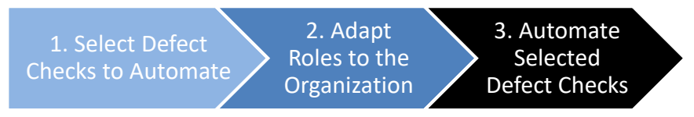
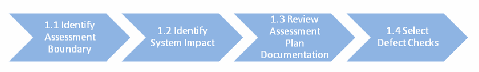
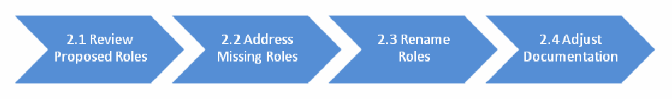

NIST IR 8011 Vol. 3 日本語訳
英語タイトル : Automation Support for Security Control Assessments: Software Asset Management日本語タイトル : セキュリティ管理策評価の自動化支援：ソフトウェア資産管理
公開日 : 2018-12-06
原文URL : https://csrc.nist.gov/pubs/ir/8011/v3/final
翻訳編集 : 自動生成（有志による非公式の日本語訳）, 原文取得日 : 2026-10-31, 訳文 : 1311 / 1312 ブロック
[要約] NIST IR 8011 Vol. 3 は、ソフトウェア資産管理（SWAM）という情報セキュリティ継続的モニタリング（ISCM）の能力に関連する、NIST SP 800-53 のセキュリティ管理策の継続的評価を自動化するための運用上のアプローチを示す報告書です。NIST IR 8011 の能力別の巻の一つで、管理されていないソフトウェアや認可されていないソフトウェアによって生じるリスクの管理に焦点を当てています。範囲は、認可されていないソフトウェアや悪意あるソフトウェア（マルウェア）のダウンロード、インストール、実行を管理するために実装される管理策および管理策項目に限定されています。第 3 節では SWAM セキュリティ評価計画の文書化テンプレートを示しています。
NISTIR 8011
Volume 3
NISTIR 8011
第3巻
Automation Support for Security Control Assessments
セキュリティ管理策評価の自動化支援
Software Asset Management
ソフトウェア資産管理
Kelley Dempsey
Paul Eavy
Nedim Goren
George Moore
Kelley Dempsey
Paul Eavy
Nedim Goren
George Moore
This publication is available free of charge from: https://doi.org/10.6028/NIST.IR.8011-3
本刊行物は次の URL から無料で入手できます: https://doi.org/10.6028/NIST.IR.8011-3
［NIST のロゴ。公的な標章のため、この非公式サイトには掲載していません。原本 PDF を参照してください。］
NISTIR 8011
Volume 3
NISTIR 8011
第3巻
Automation Support for Security Control Assessments
セキュリティ管理策評価の自動化支援
Software Asset Management
ソフトウェア資産管理
Kelley Dempsey
Nedim Goren
Computer Security Division
Information Technology Laboratory
Kelley Dempsey
Nedim Goren
Computer Security Division
Information Technology Laboratory
Paul Eavy
Federal Network Resilience Division
Department of Homeland Security
Paul Eavy
Federal Network Resilience Division
Department of Homeland Security
George Moore
Johns Hopkins University
Applied Physics Laboratory
George Moore
Johns Hopkins University
Applied Physics Laboratory
This publication is available free of charge from: https://doi.org/10.6028/NIST.IR.8011-3
本刊行物は次の URL から無料で入手できます: https://doi.org/10.6028/NIST.IR.8011-3
December 2018
2018年12月
U.S. Department of Commerce
Wilbur L. Ross, Jr., Secretary
米国商務省
Wilbur L. Ross, Jr. 長官
National Institute of Standards and Technology
Walter Copan, NIST Director and Under Secretary of Commerce for Standards and Technology
米国国立標準技術研究所（NIST）
Walter Copan、NIST 所長兼商務次官（標準・技術担当）
National Institute of Standards and Technology Interagency Report 8011 Volume 3
210 pages (December 2018)
米国国立標準技術研究所 省庁間報告書 8011 第3巻
210ページ（2018年12月）
This publication is available free of charge from: https://doi.org/10.6028/NIST.IR.8011-3
本刊行物は次の URL から無料で入手できます: https://doi.org/10.6028/NIST.IR.8011-3
Certain commercial entities, equipment, or materials may be identified in this document in order to describe an experimental procedure or concept adequately. Such identification is not intended to imply recommendation or endorsement by NIST, nor is it intended to imply that the entities, materials, or equipment are necessarily the best available for the purpose.
本書では、実験的な手順や概念を適切に説明するために、特定の商業事業者、機器または資材を明示している場合があります。こうした明示は、NIST による推奨や支持を意味するものではなく、それらの事業者、資材または機器がその目的に照らして必ずしも最良であることを意味するものでもありません。
There may be references in this publication to other publications currently under development by NIST in accordance with its assigned statutory responsibilities. The information in this publication, including concepts and methodologies, may be used by federal agencies even before the completion of such companion publications. Thus, until each publication is completed, current requirements, guidelines, and procedures, where they exist, remain operative. For planning and transition purposes, federal agencies may wish to closely follow the development of these new publications by NIST.
本刊行物では、NIST が割り当てられた法令上の責務に従って現在策定中の他の刊行物に言及している場合があります。概念や方法論を含む本刊行物の情報は、こうした関連刊行物が完成する前であっても、連邦機関によって利用される場合があります。したがって、各刊行物が完成するまでは、現行の要件、ガイドラインおよび手順が存在する場合には、それらが引き続き有効です。計画および移行のため、連邦機関は、NIST によるこれらの新しい刊行物の策定状況を注意深く追うことを検討してもよいです。
Organizations are encouraged to review all draft publications during public comment periods and provide feedback to NIST. Many NIST information security publications, other than the ones noted above, are available at https://csrc.nist.gov/publications.
組織は、パブリックコメント期間中にすべてのドラフト刊行物を確認し、NIST にフィードバックを提供することが推奨されています。上記以外にも、NIST の情報セキュリティ関連刊行物の多くが https://csrc.nist.gov/publications で入手できます。
Comments on this publication may be submitted to:
本刊行物へのコメントは、次の宛先に提出できます。
National Institute of Standards and Technology
Attn: Computer Security Division, Information Technology Laboratory
100 Bureau Drive (Mail Stop 8930) Gaithersburg, MD 20899-8930
Email: sec-cert@nist.gov
National Institute of Standards and Technology
Attn: Computer Security Division, Information Technology Laboratory
100 Bureau Drive (Mail Stop 8930) Gaithersburg, MD 20899-8930
Email: sec-cert@nist.gov
All comments are subject to release under the Freedom of Information Act (FOIA).
すべてのコメントは、情報自由法（FOIA）に基づく公開の対象となります。
Reports on Computer Systems Technology
コンピュータシステム技術に関する報告書
The Information Technology Laboratory (ITL) at the National Institute of Standards and Technology (NIST) promotes the U.S. economy and public welfare by providing technical leadership for the Nation’s measurement and standards infrastructure. ITL develops tests, test methods, reference data, proof-of-concept implementations, and technical analyses to advance the development and productive use of information technology. ITL’s responsibilities include the development of management, administrative, technical, and physical standards and guidelines for the cost-effective security and privacy of other than national security-related information in federal systems.
米国国立標準技術研究所（NIST）の情報技術研究所（ITL）は、国の計測・標準インフラに対する技術的なリーダーシップを提供することで、米国経済と公共の福祉を促進しています。ITL は、情報技術の開発と生産的な利用を進めるため、テスト、テスト手法、参照データ、概念実証実装および技術分析を開発しています。ITL の責務には、連邦システムにおける国家安全保障に関連しない情報のセキュリティとプライバシーを費用対効果の高い形で確保するための、管理上、行政上、技術上および物理的な標準およびガイドラインの策定が含まれます。
Abstract
概要
The NISTIR 8011 volumes each focus on an individual information security capability, adding tangible detail to the more general overview given in NISTIR 8011 Volume 1, and providing a template for transition to a detailed, NIST guidance-based automated assessment. This document, Volume 3 of NISTIR 8011, addresses the Software Asset Management (SWAM) information security capability. The focus of the SWAM capability is to manage risk created by unmanaged or unauthorized software on a network. Unmanaged or unauthorized software is a target that attackers can use as a platform from which to attack components on the network.
NISTIR 8011 の各巻は、それぞれ個別の情報セキュリティ能力に焦点を当て、NISTIR 8011 第1巻に示された一般的な概観に具体的な詳細を加えるとともに、NIST のガイダンスに基づく詳細な自動評価へ移行するためのテンプレートを提供します。本書は NISTIR 8011 の第3巻であり、ソフトウェア資産管理（SWAM）という情報セキュリティ能力を扱います。SWAM 能力の焦点は、ネットワーク上の管理されていないソフトウェアまたは認可されていないソフトウェアによって生じるリスクを管理することです。管理されていないソフトウェアまたは認可されていないソフトウェアは、攻撃者がネットワーク上のコンポーネントを攻撃するための足場として利用できる標的となります。
Keywords
キーワード
actual state; assessment; authorization boundary; automation; capability; continuous diagnostics and mitigation; dashboard; defect; desired state specification; firmware; information security continuous monitoring; ISCM; inventory management; malicious code; malware; mitigation; mobile code; ongoing assessment; root cause analysis; security capability; security control; security control item; software; software asset management; software file; SWID tag; whitelisting.
実際の状態、評価、認可境界、自動化、能力、継続的な診断と緩和、ダッシュボード、欠陥、望ましい状態の仕様、ファームウェア、情報セキュリティ継続的モニタリング、ISCM、インベントリ管理、悪意あるコード、マルウェア、緩和、モバイルコード、継続的評価、根本原因分析、セキュリティ能力、セキュリティ管理策、セキュリティ管理策項目、ソフトウェア、ソフトウェア資産管理、ソフトウェアファイル、SWID タグ、ホワイトリスト化。
Acknowledgments
謝辞
The authors, Kelley Dempsey and Ned Goren of the National Institute of Standards and Technology (NIST), Paul Eavy of the Department of Homeland Security, and Dr. George Moore of the Applied Physics Laboratory at Johns Hopkins University, wish to thank their colleagues who reviewed drafts of this document and provided valuable input, including Nathan Aileo, Ujwala Arikatla, Mark Bunn, Jim Foti, John Groenveld, Susan Hansche, Blair Heiserman, Frank Husson, Mike Ko, Alan McClelland, Susan Pagan, David Waltermire, and Kimberly Watson. The authors also gratefully acknowledge and appreciate the comments and contributions made by government agencies, private organizations, and individuals in providing direction and assistance in the development of this document.
著者である米国国立標準技術研究所（NIST）の Kelley Dempsey 氏と Ned Goren 氏、国土安全保障省の Paul Eavy 氏、ジョンズ・ホプキンス大学応用物理研究所の George Moore 博士は、本書のドラフトをレビューして貴重な意見を寄せてくれた同僚の皆様、とりわけ Nathan Aileo、Ujwala Arikatla、Mark Bunn、Jim Foti、John Groenveld、Susan Hansche、Blair Heiserman、Frank Husson、Mike Ko、Alan McClelland、Susan Pagan、David Waltermire、Kimberly Watson の各氏に感謝します。また著者らは、本書の作成にあたり方向性を示し支援してくださった政府機関、民間組織および個人から寄せられたコメントと貢献に対し、深く感謝いたします。
Table of Contents
目次
List of Figures
図の一覧
List of Tables
表の一覧
Executive Summary
エグゼクティブサマリー
The National Institute of Standards and Technology (NIST) and the Department of Homeland Security (DHS) have collaborated to produce this report which describes a process that automates the test assessment method described in NIST Special Publication (SP) 800-53A for the security controls catalogued in SP 800-53. The process is consistent with the Risk Management Framework as described in SP 800-37 and the Information Security Continuous Monitoring (ISCM) guidance in SP 800-137. The multi-volume NIST Interagency Report 8011 (NISTIR 8011) has been developed to provide information on automation support for ongoing assessment. NISTIR 8011 describes how ISCM facilitates automated ongoing assessment to provide near real-time security-related information to organizational officials on the security posture of individual systems and the organization as a whole.
米国国立標準技術研究所（NIST）と国土安全保障省（DHS）は共同で本報告書を作成しました。本報告書は、SP 800-53 に収録されたセキュリティ管理策について、NIST Special Publication（SP）800-53A に記載のテスト評価手法を自動化するプロセスを説明しています。このプロセスは、SP 800-37 に記載のリスクマネジメントフレームワークおよび SP 800-137 の情報セキュリティ継続的モニタリング（ISCM）ガイダンスと整合しています。複数巻からなる NIST Interagency Report 8011（NISTIR 8011）は、継続的評価の自動化支援に関する情報を提供するために作成されました。NISTIR 8011 は、ISCM が自動化された継続的評価をどのように促進し、個々のシステムおよび組織全体のセキュリティ態勢に関するセキュリティ関連情報を、ほぼリアルタイムで組織の関係者に提供するかを説明しています。
NISTIR 8011 Volume 1 includes a description of ISCM Security Capabilities—groups of security controls working together to achieve a common purpose. The subsequent NISTIR 8011 volumes are capability-specific volumes. Each volume focuses on one specific ISCM information security capability in order to (a) add tangible detail to the more general overview given in NISTIR 8011 Volume 1; and (b) provide a template for the transition to detailed, standards-based automated assessments.
NISTIR 8011 第1巻には、ISCM セキュリティ能力（共通の目的を達成するために連携して働くセキュリティ管理策のグループ）の説明が含まれています。続く NISTIR 8011 の各巻は能力別の巻です。各巻は、特定の ISCM 情報セキュリティ能力を1つ取り上げ、(a) NISTIR 8011 第1巻に示された一般的な概観に具体的な詳細を加え、(b) 標準に基づく詳細な自動評価へ移行するためのテンプレートを提供します。
This publication, Volume 3 of NISTIR 8011, addresses the information security capability known as Software Asset Management (SWAM). The focus of the SWAM capability is to manage risk created by unmanaged or unauthorized software that are on a managed network. When software is unmanaged or unauthorized, they are vulnerable because the software files may be forgotten or unidentified. Moreover, when vulnerabilities are discovered on such software, responsibility to respond to the consequent risk is not assigned. As a result, the presence of unmanaged and unauthorized software means that devices are targets that attackers can use as a persistent platform from which to attack components on the network.
本刊行物は NISTIR 8011 の第3巻であり、ソフトウェア資産管理（SWAM）として知られる情報セキュリティ能力を扱います。SWAM 能力の焦点は、管理対象ネットワーク上にある、管理されていない、または認可されていないソフトウェアによって生じるリスクを管理することです。ソフトウェアが管理されていない、または認可されていない場合、ソフトウェアファイルが忘れ去られたり識別されなかったりするため、脆弱な状態になります。さらに、そのようなソフトウェアで脆弱性が発見されても、結果として生じるリスクに対応する責任が割り当てられていません。その結果、管理されていない、または認可されていないソフトウェアが存在すると、デバイスが攻撃者の標的となり、攻撃者はそれをネットワーク上のコンポーネントを攻撃するための継続的な足場として利用できます。
A well-designed SWAM program helps to:
適切に設計された SWAM プログラムは、次の点に役立ちます。
•prevent compromised software from being installed or staying deployed on the network;
•侵害されたソフトウェアがネットワークにインストールされたり、展開されたままになったりするのを防ぐこと。
•prevent attackers from gaining a foothold;
•攻撃者が足がかりを得るのを防ぐこと。
•prevent attacks from becoming persistent; and
•攻撃が持続化するのを防ぐこと。
•restore required and authorized software as needed.
•必要な認可済みソフトウェアを必要に応じて復元すること。
Automated ongoing assessment helps verify that software asset management is working by applying defect checks to test the effectiveness of the SWAM capability and the security controls that support the SWAM capability.
自動化された継続的評価は、欠陥チェックを適用して SWAM 能力と SWAM 能力を支えるセキュリティ管理策の有効性をテストすることで、ソフトウェア資産管理が機能していることの検証に役立ちます。
This volume outlines detailed step-by-step processes to meet the needs of a specific assessment target network and apply the results to the assessment of all authorization boundaries on that network. A process is also provided to implement the assessment (diagnosis) and response. Automated testing related to the controls for SWAM, as outlined herein, is consistent with other NIST guidance.
本巻では、特定の評価対象ネットワークのニーズを満たし、その結果をそのネットワーク上のすべての認可境界の評価に適用するための、詳細な段階的プロセスを示します。評価（診断）と対応を実施するためのプロセスも示します。本書に示す SWAM 管理策に関連する自動テストは、NIST の他のガイダンスと整合しています。
It has not been obvious to security professionals how to automate testing of other than technical controls. This volume documents a detailed assessment plan to assess the effectiveness of controls related to authorizing and assigning software to be managed. Included are specific tests that form the basis for such a plan, how the tests apply to specific controls, and the kinds of resources needed to conduct the assessment and use the assessment results to mitigate defects found. For SWAM, it can be shown that the assessment of 92.6 percent1 of determination statements for controls in the SP 800-53 Low-Medium-High baselines can be fully or partially automated.
技術的管理策以外の管理策のテストを自動化する方法は、セキュリティ専門家にとって明らかではありませんでした。本巻は、管理対象とするソフトウェアの認可と割当てに関連する管理策の有効性を評価するための、詳細な評価計画を文書化しています。その内容には、そのような計画の基礎となる具体的なテスト、テストが個々の管理策にどう適用されるか、評価を実施して評価結果を用い、発見された欠陥を緩和するために必要な資源の種類が含まれます。SWAM については、SP 800-53 の Low-Medium-High ベースラインに含まれる管理策の判定記述の 92.6 パーセント1について、評価を完全にまたは部分的に自動化できることを示せます。
The methods outlined here for automated, ongoing assessment are designed to provide objective, timely, and complete identification of security defects related to SWAM at a lower cost than manual assessment methods. Using this defect information can drive the most efficient and effective remediation of the worst security defects found.
ここに示す、自動化された継続的評価の方法は、SWAM に関連するセキュリティ上の欠陥を、手作業による評価方法よりも低いコストで、客観的かつタイムリーに、漏れなく特定できるように設計されています。この欠陥情報を用いることで、発見された最悪のセキュリティ上の欠陥に対する最も効率的で効果的な是正を進めることができます。
This volume assumes the reader is familiar with the concepts and ideas presented in the Overview (NISTIR 8011, Volume 1). Terms and acronyms used herein that are common to multiple capabilities are defined in Volume 1 Appendix B (glossary) and Appendix C respectively. Similarly, references used herein that are common to multiple capabilities are provided in Volume 1 Appendix A.
本巻は、読者が概要（NISTIR 8011 第1巻）で示された概念や考え方に精通していることを前提としています。複数の能力に共通して本書で使用する用語および頭字語は、それぞれ第1巻の付録 B（用語集）および付録 C で定義されています。同様に、複数の能力に共通して本書で使用する参考文献は、第1巻の付録 A に記載されています。
1. Introduction
1. はじめに
1.1 Purpose and Scope
1.1 目的と範囲
The purpose of the National Institute of Standards (NIST) Interagency Report (NISTIR) 8011 Volume 3 is to provide an operational approach for automating the ongoing assessment of NIST Special Publication (SP) 800-532 security controls related to the Information Security Continuous Monitoring (ISCM)-defined security capability of Software Asset Management (SWAM) that is consistent with the principles outlined in NISTIR 8011 Volume 1.3
米国国立標準技術研究所（NIST）省庁間報告書（NISTIR）8011 第3巻の目的は、情報セキュリティ継続的モニタリング（ISCM）で定義されたセキュリティ能力であるソフトウェア資産管理（SWAM）に関連する、NIST Special Publication（SP）800-532 のセキュリティ管理策の継続的評価を自動化するための、運用上のアプローチを提供することです。このアプローチは、NISTIR 8011 第1巻3に示された原則と整合しています。
The scope of this report is limited to security controls and control items that are implemented to manage the download, installation, and execution of unauthorized and malicious software (malware).4 In this case, malware refers to known and unknown malicious code, including software that executes a zero-day attack.
本報告書の範囲は、認可されていないソフトウェアや悪意あるソフトウェア（マルウェア）のダウンロード、インストールおよび実行を管理するために実装されるセキュリティ管理策および管理策項目に限定されます。4ここでいうマルウェアとは、既知および未知の悪意あるコードを指し、ゼロデイ攻撃を実行するソフトウェアを含みます。
1.2 Target Audience
1.2 想定読者
The target audience for this volume, because it is focused on SWAM, is of special relevance to those who authorize, download, install and/or execute software. However, it is also of value to others to help understand the risks software may be imposing on other assets.
本巻は SWAM に焦点を当てているため、その想定読者は、ソフトウェアを認可する、ダウンロードする、インストールする、または実行する（あるいはそのいずれか）人々に特に関係が深いものです。しかし、ソフトウェアが他の資産に課している可能性のあるリスクを理解するうえで、他の人々にとっても有益です。
1.3 Organization of this Volume
1.3 本巻の構成
Section 2 provides an overview of the SWAM capability to clarify both scope and purpose and provides links to additional information specific to the SWAM capability. Section 3 provides detailed information on the SWAM defect checks and how the defect checks automate assessment of the effectiveness of SP 800-53 security controls that support the SWAM capability. Section 3 also provides artifacts that can be used by an organization to produce an automated security control assessment plan for most of the control items supporting Software Asset Management.
第2節では、SWAM 能力の概要を示して範囲と目的を明確にするとともに、SWAM 能力に固有の追加情報へのリンクを提供します。第3節では、SWAM の欠陥チェックと、その欠陥チェックが SWAM 能力を支える SP 800-53 のセキュリティ管理策の有効性評価をどのように自動化するかについて、詳細な情報を提供します。第3節ではまた、ソフトウェア資産管理を支える管理策項目の大半について、組織が自動化されたセキュリティ管理策評価計画を作成する際に利用できる成果物も提供します。
1.4 Interaction with Other Volumes in this NISTIR
1.4 本 NISTIR の他の巻との関係
Volume 1 of this NISTIR (Overview) provides a conceptual synopsis of using automation to support security control assessment and provides definitions and background information that facilitate understanding of the information in this and other capability-specific volumes.
本 NISTIR の第1巻（概要）は、セキュリティ管理策評価を支援するための自動化の利用に関する概念的な要約を示し、本巻およびその他の能力別の巻の情報を理解しやすくするための定義と背景情報を提供します。
This volume assumes the reader is familiar with the concepts and ideas presented in the Overview (NISTIR 8011, Volume 1). Terms and acronyms used herein that are common to multiple capabilities are defined in Volume 1 Appendix B (glossary) and Appendix C respectively. Similarly, references used herein that are common to multiple capabilities are provided in Volume 1 Appendix A.
本巻は、読者が概要（NISTIR 8011 第1巻）で示された概念や考え方に精通していることを前提としています。複数の能力に共通して本書で使用する用語および頭字語は、それぞれ第1巻の付録 B（用語集）および付録 C で定義されています。同様に、複数の能力に共通して本書で使用する参考文献は、第1巻の付録 A に記載されています。
The SWAM capability identifies software that is being placed or executed on hardware in the target network. SWAM supports other ISCM capabilities by providing the full census of software which can be used to check for other defects such as configuration settings (configuration setting management capability) and patches (vulnerability management capability).
SWAM 能力は、対象ネットワーク内のハードウェアに配置または実行されているソフトウェアを識別します。SWAM は、ソフトウェアの全数把握を提供することで他の ISCM 能力を支援します。この全数把握は、構成設定（構成設定管理能力）やパッチ（脆弱性管理能力）といった他の欠陥のチェックに利用できます。
SWAM is in turn supported by other ISCM capabilities such as the Privilege and Account Management capability (PRIV)5 for implementation as discussed further in Section 2.6.1.
SWAM は逆に、第2.6.1節でさらに説明するとおり、実装にあたって権限・アカウント管理能力（PRIV）5などの他の ISCM 能力に支えられています。
The Boundary Management capability (BOUND) is designed to prevent the insertion of unauthorized software into any device within the assessment boundary from outside the boundary. In contrast, the SWAM capability focuses on detecting and removing, or denying execution of all unauthorized or unmanaged software; however, some SWAM tools can also block unauthorized software from being installed on the device. For example, email filters attempt to block delivery of malicious emails, which frequently contain malware. Network level antivirus scanners have a similar function. Detonation Chambers (See SP 800-53, control SC-44) can be used on software entering the network, to look for actions that might be malicious, by watching behavior of that software in an isolated environment. Detonation chambers can thereby sometimes detect zero-day attacks if equipped to look for patterns of malicious behavior as discussed further toward the end of Section 2.3.
境界管理能力（BOUND）は、評価境界の外部から境界内のあらゆるデバイスへの認可されていないソフトウェアの挿入を防ぐように設計されています。これに対し SWAM 能力は、認可されていないソフトウェアや管理されていないソフトウェアをすべて検出して削除するか、その実行を拒否することに焦点を当てています。ただし、一部の SWAM ツールは、認可されていないソフトウェアがデバイスにインストールされるのを阻止することもできます。たとえば、電子メールフィルターは、マルウェアを含むことの多い悪意あるメールの配信を阻止しようとします。ネットワークレベルのウイルス対策スキャナーにも同様の機能があります。デトネーションチャンバー（SP 800-53 の管理策 SC-44 を参照）は、ネットワークに入ってくるソフトウェアに対して使用でき、隔離された環境でそのソフトウェアの挙動を観察することで、悪意があるかもしれない動作を探します。このためデトネーションチャンバーは、第2.3節の終わり近くで述べるとおり、悪意ある挙動のパターンを探すように備えられていれば、ゼロデイ攻撃を検出できる場合もあります。
It may appear that some software related controls are, erroneously, not included here. However, not all software-related controls are covered in SWAM. SWAM focuses on software authorization. Other aspects of software are addressed in other ISCM capabilities, for example: Configuration Settings Management (CSM) addresses software configurations; Vulnerability Management (VULN) addresses vulnerability management (Common Vulnerabilities and Exposures (CVE) and Common Weakness Enumeration CWE)) and includes patching needed to address security issues (as opposed to patching needed for functionality issues which is addressed by SWAM); and BOUND addresses movement of unauthorized software into the network through telecommunications, etc.
ソフトウェアに関連する一部の管理策が、誤って本書に含まれていないように見えるかもしれません。しかし、ソフトウェアに関連する管理策のすべてが SWAM の対象となるわけではありません。SWAM はソフトウェアの認可に焦点を当てています。ソフトウェアの他の側面は、他の ISCM 能力で扱われます。たとえば、構成設定管理（CSM）はソフトウェアの構成を扱い、脆弱性管理（VULN）は脆弱性管理（Common Vulnerabilities and Exposures（CVE）および Common Weakness Enumeration（CWE））を扱うとともに、セキュリティ上の問題に対処するために必要なパッチ適用を含みます（機能上の問題に対処するために必要なパッチ適用は SWAM が扱います）。BOUND は、電気通信などを通じてネットワークに認可されていないソフトウェアが入り込むことを扱います。
2. Software Asset Management (SWAM) Capability Definition, Overview, and Scope
2. ソフトウェア資産管理（SWAM）能力の定義、概要および範囲
Software Asset Management recognizes that target network devices with unauthorized software6 are likely to be vulnerable. External and internal attackers search for and exploit such software, either for what the software itself can offer, or as a platform from which to persist on the network or to attack other assets. By removing or preventing execution of unauthorized or unmanaged software, SWAM helps reduce the probability that attackers find and exploit software.
ソフトウェア資産管理は、認可されていないソフトウェア6がある対象ネットワークのデバイスは脆弱である可能性が高いことを前提としています。外部および内部の攻撃者は、そのようなソフトウェアそのものが提供するものを狙って、あるいはネットワークに居座り他の資産を攻撃するための足場として、そうしたソフトウェアを探して悪用します。SWAM は、認可されていないソフトウェアや管理されていないソフトウェアを削除する、またはその実行を防ぐことで、攻撃者がソフトウェアを見つけて悪用する可能性を下げる助けとなります。
A key attack vector is to place (or replace) software on a device in order to perform malicious activities. Such software, called malware, can support exfiltration of data (compromising confidentiality), changing of data (compromising integrity), disruption of operations (compromising availability) and/or establishment of remote command and control over the device to more flexibly perform malicious activity at the will of the attacker. Removing unauthorized or unmanaged software from devices, or blocking its execution, can reduce the success rate of malware attacks.
主要な攻撃ベクトルは、悪意ある活動を行うために、デバイスにソフトウェアを配置する（または置き換える）ことです。マルウェアと呼ばれるそのようなソフトウェアは、データの持ち出し（機密性の侵害）、データの改ざん（完全性の侵害）、運用の妨害（可用性の侵害）、またはデバイスのリモートコマンド・アンド・コントロールの確立（あるいはそのいずれか）を支援し、攻撃者の意思で悪意ある活動をより柔軟に行えるようにします。デバイスから認可されていないソフトウェアや管理されていないソフトウェアを削除する、またはその実行をブロックすることで、マルウェア攻撃の成功率を下げることができます。
Two Aspects of Software Asset Management
ソフトウェア資産管理の2つの側面
In a broader context, software asset management (SAM) is a business practice that includes purchasing, deploying, maintaining, using, and disposing of software applications.
より広い文脈では、ソフトウェア資産管理（SAM）は、ソフトウェアアプリケーションの購入、展開、保守、使用および廃棄を含む業務慣行です。
In NISTIR 8011, software asset management (SWAM) is specifically focused on making informed decisions about the software authorized to be present on each device, given business need and security risk, and then enforcing the authorizations.
NISTIR 8011 では、ソフトウェア資産管理（SWAM）は、業務上の必要性とセキュリティリスクを踏まえて各デバイスへの存在を認可するソフトウェアについて十分な情報に基づく判断を下し、その認可を強制することに特に焦点を当てています。
2.1 SWAM Capability Description
2.1 SWAM 能力の説明
The Software Asset Management capability provides an organization visibility into the software operating on its network(s) so it can manage and defend itself. The SWAM capability focuses on making and enforcing software authorization decisions, balancing business need with security risk, and providing a view of software management responsibility that helps prioritize identified defects and facilitate risk response decisions (e.g., mitigation or acceptance) by the responsible party.
ソフトウェア資産管理能力は、組織が自らのネットワークで動作しているソフトウェアを可視化し、自らを管理し防御できるようにします。SWAM 能力は、業務上の必要性とセキュリティリスクのバランスをとりながらソフトウェア認可の判断を行って強制すること、および識別された欠陥の優先順位付けと、責任者によるリスク対応の判断（緩和や受容など）の促進に役立つ、ソフトウェア管理責任の見通しを提供することに焦点を当てています。
SWAM identifies software that is present on the network (the actual state) and compares it with the desired state software inventory to determine if the software present is authorized. The SWAM capability is focused on ensuring that all software authorized to be installed on target network devices is fully identified and that an appropriate installation/execution control policy is applied.
SWAM は、ネットワーク上に存在するソフトウェア（実際の状態）を識別し、それを望ましい状態のソフトウェアインベントリと比較して、存在するソフトウェアが認可されているかどうかを判定します。SWAM 能力は、対象ネットワークのデバイスへのインストールが認可されたすべてのソフトウェアが完全に識別され、適切なインストール・実行制御ポリシーが適用されていることを確実にすることに焦点を当てています。
In general, software authorization decisions can be expressed and enforced in one of two ways:
一般に、ソフトウェア認可の判断は、次の2つの方法のいずれかで表現し、強制できます。
1.Software whitelisting7 (deny-all, permit-by-exception) blocks all software unless explicitly approved in a software whitelist.
1.ソフトウェアのホワイトリスト化7（すべて拒否し、例外のみ許可）は、ソフトウェアのホワイトリストで明示的に承認されていない限り、すべてのソフトウェアをブロックします。
2.Software blacklisting (allow-all, deny-by exception) blocks only software specifically prohibited (a software blacklist) and allows all other software.
2.ソフトウェアのブラックリスト化（すべて許可し、例外のみ拒否）は、特に禁止されたソフトウェア（ソフトウェアのブラックリスト）のみをブロックし、それ以外のすべてのソフトウェアを許可します。
A whitelist or blacklist is a product of the authorization process. Blacklisting and whitelisting are inseparable from authorization. Supporting blacklisting and whitelisting are a set of informed decisions made about what software to authorize—considering both business need for the software and security risk introduced by the software.
ホワイトリストまたはブラックリストは、認可プロセスの成果物です。ブラックリスト化とホワイトリスト化は、認可と切り離せません。ブラックリスト化とホワイトリスト化を支えるのは、どのソフトウェアを認可するかについて、そのソフトウェアに対する業務上の必要性とそのソフトウェアがもたらすセキュリティリスクの両方を考慮して行う、一連の十分な情報に基づく判断です。
Attacks can come from previously unknown malware (aka zero-day attacks). Note that software blacklisting8 has effectively no impact on zero-day attacks because malware makers can make minor variations to software that evade blacklisting, thus allowing the attack to proceed. Conversely, software whitelisting can prevent zero-day attacks since whitelisting allows only explicitly approved software to execute.
攻撃は、それまで知られていなかったマルウェアから（いわゆるゼロデイ攻撃として）行われることがあります。マルウェア作成者は、ソフトウェアに軽微な変更を加えることでブラックリスト化を回避し、攻撃を成立させることができるため、ソフトウェアのブラックリスト化8はゼロデイ攻撃に対して事実上効果がないことに注意してください。逆に、ソフトウェアのホワイトリスト化は、明示的に承認されたソフトウェアのみの実行を許すため、ゼロデイ攻撃を防ぐことができます。
Most software whitelisting implementations divide software into three categories:
ソフトウェアのホワイトリスト化の実装の大半は、ソフトウェアを次の3つのカテゴリーに分けます。
1.Known good (allowed) software (such as a pre-approved whitelist)
1.既知の安全な（許可された）ソフトウェア（事前承認済みのホワイトリストなど）
2.Known bad software (such as a list of software that is not to be approved, similar to a blacklist, used to restrict the range of software that is whitelisted).
2.既知の不正なソフトウェア（承認しないソフトウェアの一覧など。ブラックリストに似ており、ホワイトリストに載るソフトウェアの範囲を制限するために使用します）。
3.Other software, not yet assessed for whitelist eligibility (a graylist).9
3.その他のソフトウェア（ホワイトリストへの適格性をまだ評価していないもの。グレーリスト）。9
Note on Implementation of Application Whitelisting/Blacklisting
アプリケーションのホワイトリスト化／ブラックリスト化の実装に関する注記
This NISTIR proposes automated defect checks for software asset management, some of which (SWAM-F01 through SWAM-F03) are used to test approaches to software whitelisting that are currently in common use. Use of a different approach might call for development of a modified foundational defect check to test that approach, as the organization is expected to deploy defect checks that match the approach to whitelisting or blacklisting actually used. There are a range of options for implementing software whitelisting, each with its own associated strengths and disadvantages, as described in detail in NIST SP 800-167.10 Each organization is expected to conduct its own analysis and decide which variant of whitelisting or blacklisting is needed to manage risk effectively. Note that whitelisting methods are evolving—whitelisting is already a standard feature in most of the popularly used operating systems—so vigilance is required to ensure that new methods and options are considered as they appear and adopted as appropriate.
本 NISTIR は、ソフトウェア資産管理のための自動化された欠陥チェックを提案しており、その一部（SWAM-F01 から SWAM-F03）は、現在広く使われているソフトウェアのホワイトリスト化の手法をテストするために使用されます。組織は、実際に使用しているホワイトリスト化またはブラックリスト化の手法に合った欠陥チェックを展開することが期待されるため、別の手法を用いる場合は、その手法をテストするために修正した基礎的な欠陥チェックの開発が必要になることがあります。ソフトウェアのホワイトリスト化の実装には、NIST SP 800-16710 で詳しく説明されているとおり、それぞれに長所と短所がある多様な選択肢があります。各組織は、リスクを効果的に管理するためにどの種類のホワイトリスト化またはブラックリスト化が必要かを、自ら分析して決定することが期待されます。ホワイトリスト化の手法は進化しており（ホワイトリスト化は、広く使われているほとんどのオペレーティングシステムの標準機能になっています）、新しい手法や選択肢が登場したときに検討し、適宜採用するよう、常に注意が必要です。
Organizations just beginning to whitelist may have a large quantity of software on the graylist. Some organizations may choose to temporarily allow (whitelist) the graylisted software. Others may block software on the graylist until the software is evaluated and approved. In either case, management of unassessed graylist software is an important task that may require a large amount of resources, especially in large or complex organizations.
ホワイトリスト化を始めたばかりの組織では、グレーリストに大量のソフトウェアが載っている場合があります。組織によっては、グレーリストのソフトウェアを一時的に許可する（ホワイトリストに載せる）ことを選ぶ場合があります。また、ソフトウェアが評価され承認されるまで、グレーリストのソフトウェアをブロックする組織もあります。どちらの場合も、未評価のグレーリストのソフトウェアの管理は重要な作業であり、特に大規模または複雑な組織では、多くの資源が必要になる場合があります。
In practice, organizations consider the following when whitelisting a software product:
実際には、組織はソフトウェア製品をホワイトリストに載せる際に次の点を考慮します。
1.Whether to use whitelisting technologies built into available operating systems (OSs). As of this writing, most OSs have application control technologies, and software vendors continually improve the functionality of the technologies in new versions. When such improvements are made, organizations may leverage the new OS releases to limit or further restrict applications to develop a cleaner, more streamlined whitelist. A relevant feature for consideration is whether the OS version provides a trust repository of data on known good and known bad products and software files, and whether the repository is kept current.
1.利用可能なオペレーティングシステム（OS）に組み込まれたホワイトリスト化技術を使用するかどうか。本書の執筆時点では、ほとんどの OS にアプリケーション制御技術があり、ソフトウェアベンダーは新しいバージョンでその機能を継続的に改善しています。そうした改善が行われた場合、組織は新しい OS リリースを活用してアプリケーションを制限またはさらに絞り込み、より整理された合理的なホワイトリストを作成できます。考慮すべき関連機能は、その OS バージョンが、既知の安全な製品やソフトウェアファイルと既知の不正な製品やソフトウェアファイルに関するデータのトラストリポジトリを提供しているかどうか、およびそのリポジトリが最新に保たれているかどうかです。
2.Maintaining different whitelists for different device sets. For example, certain software might only appear on whitelists for specific types of components such as file servers, database servers, or end user devices. Similarly, the common operating system or the default email client used by an organization does not require a decision on each device, but appears on all whitelists maintained by an organization. Known malware, meanwhile, does not appear on any whitelist.
2.デバイスの集合ごとに異なるホワイトリストを維持すること。たとえば、特定のソフトウェアは、ファイルサーバー、データベースサーバー、エンドユーザーデバイスといった特定の種類のコンポーネントのホワイトリストにのみ載る場合があります。同様に、組織で使用する共通のオペレーティングシステムやデフォルトの電子メールクライアントは、デバイスごとの判断を必要とせず、組織が維持するすべてのホワイトリストに載ります。一方、既知のマルウェアは、どのホワイトリストにも載りません。
3.Whitelisting in phases. An organization might choose to implement whitelisting in software environments with predictable software turnover rates first, perhaps choosing those sets of devices under centrally managed desktops. Or, an organization might choose high-risk environments with high impact baseline control needs first. Organizations might schedule environments with many non-standard, low-risk or rapidly changing software components near the end of the whitelisting implementation.
3.ホワイトリスト化を段階的に行うこと。組織は、ソフトウェアの入れ替わる頻度が予測しやすいソフトウェア環境から先にホワイトリスト化を実装することを選ぶ場合があり、たとえば集中管理されたデスクトップの下にあるデバイスの集合を選ぶことがあります。あるいは、高影響度のベースライン管理策が必要な高リスク環境を先に選ぶ場合もあります。非標準のソフトウェアコンポーネントが多い環境、リスクが低い環境、または変化が速いソフトウェアコンポーネントが多い環境は、ホワイトリスト化の実装の終盤に予定することがあります。
4.Testing. Monitoring or auditing mode, available in most whitelisting technologies, allows software managers to estimate the impact on resources before enforcing whitelisting. Monitoring allows planning for resource requirements in advance of actual implementation.
4.テスト。ほとんどのホワイトリスト化技術で利用できる監視モードまたは監査モードにより、ソフトウェア管理者は、ホワイトリスト化を強制する前に、資源への影響を見積もることができます。監視によって、実際の実装に先立って資源要件を計画できます。
5.Attributes. Increasingly, organizations are implementing whitelisting products that support more granular whitelisting attributes, such as Software Identification (SWID) tags.11 In the Guide to Application Whitelisting (2015), the authors note:
5.属性。組織は、ソフトウェア識別（SWID）タグ11などのより細かなホワイトリスト化属性をサポートするホワイトリスト化製品を導入するケースが増えています。Guide to Application Whitelisting（2015）で、著者らは次のように述べています。
Choosing attributes is largely a matter of achieving the right balance of security, maintainability, and usability. Simpler attributes such as file path, filename, and file size should not be used by themselves unless there are strict access controls in place to tightly restrict file activity, and even then there are often significant benefits to pairing them with other attributes. A combination of digital signature/publisher and cryptographic hash techniques generally provides the most accurate and comprehensive application whitelisting capability, but usability and maintainability requirements can put significant burdens on the organization.
属性の選択は、主にセキュリティ、保守性および使いやすさの適切なバランスを実現することです。ファイルパス、ファイル名、ファイルサイズのような単純な属性は、ファイルの動作を厳しく制限する厳格なアクセス制御が行われていない限り、単独で使用すべきではなく、そのような場合でも、他の属性と組み合わせることで大きな利点が得られることが多くあります。デジタル署名／発行元と暗号ハッシュの技術の組み合わせは、一般に最も正確で包括的なアプリケーションのホワイトリスト化能力をもたらしますが、使いやすさと保守性の要件が組織に大きな負担をかける場合があります。
The whitelisting/blacklisting strategy used in the ISCM process (as adapted for each agency) provides insight into what portion of the actual software assets are included in the desired state, and of those, how many have an assigned manager identified.
ISCM プロセスで使用するホワイトリスト化／ブラックリスト化の戦略（各機関に合わせて適応したもの）は、実際のソフトウェア資産のどの部分が望ましい状態に含まれているか、そしてそのうち管理者が割り当てられていると識別されたものがいくつあるかについての洞察を与えます。
2.2 SWAM Attack Scenarios and Desired Result
2.2 SWAM の攻撃シナリオと望ましい結果
NISTIR 8011 uses an attack step model to summarize the six primary steps of cyber attacks that SP 800-53 controls work together to block or delay. The SWAM security capability is intended to block or delay attacks only at the attack steps addressed in Figure 1: SWAM Impact on an Attack Step Model and Table 1: SWAM Impact on an Attack Step Model.
NISTIR 8011 は、攻撃ステップモデルを用いて、SP 800-53 の管理策が連携して阻止または遅延させるサイバー攻撃の6つの主要なステップを要約しています。SWAM セキュリティ能力は、図1: 攻撃ステップモデルに対する SWAM の影響および表1: 攻撃ステップモデルに対する SWAM の影響で扱う攻撃ステップに限って、攻撃を阻止または遅延させることを意図しています。
![Two-column diagram. Left column "Attack Steps": 1) Gain Internal Entry; 2) Initiate Attack Internally; 3) Gain Foothold; 4) Gain Persistence; 5) Expand Control—Escalate or Propagate; 6) Achieve Attack Objective. Right column "SWAM Impacts", with arrows pointing to attack steps: "Block Local Access: Prevent or minimize compromised, vulnerable, or targeted software from being installed and/or staying deployed on the network." points to step 1; "Block Foothold: Reduce number of devices susceptible to compromise due to unauthorized software being allowed to execute." points to step 3; "Block Persistence/Prevent: Stop or delay compromise of devices by restricting software installation." and "Block Persistence/Detect: Reduce amount of time that malicious or modified software is installed before detection." point to step 4; "Restore required and authorized software as needed after removal or alteration by attackers, contingency (disk failure), or mistake." points to step 6.](assets/ir-8011v3/p0017-figure-01.png)
2列の図です。左列「Attack Steps（攻撃ステップ）」には 1) Gain Internal Entry（内部への侵入）、2) Initiate Attack Internally（内部での攻撃開始）、3) Gain Foothold（足場の確保）、4) Gain Persistence（永続化）、5) Expand Control—Escalate or Propagate（支配の拡大：権限昇格または拡散）、6) Achieve Attack Objective（攻撃目的の達成）が並びます。右列「SWAM Impacts（SWAM の効果）」の各項目から攻撃ステップへ矢印が出ています。「Block Local Access（ローカルアクセスの阻止）：侵害された、脆弱な、または標的とされたソフトウェアがネットワークにインストールされたり展開されたままになったりすることを防止または最小化する」はステップ1へ、「Block Foothold（足場の阻止）：未承認のソフトウェアの実行が許されていることで侵害を受けやすいデバイスの数を減らす」はステップ3へ、「Block Persistence/Prevent（永続化の阻止／防止）：ソフトウェアのインストールを制限して、デバイスの侵害を阻止または遅延させる」と「Block Persistence/Detect（永続化の阻止／検知）：悪意のあるソフトウェアや改変されたソフトウェアがインストールされてから検知されるまでの時間を短くする」はステップ4へ、「攻撃者による削除や改変、不測の事態（ディスク障害）、または誤りの後に、必要で承認されたソフトウェアを必要に応じて復元する」はステップ6へ向かっています。
Figure 1: SWAM Impact on an Attack Step Model12
図1: 攻撃ステップモデルに対する SWAM の影響12
Table 1: SWAM Impact on an Attack Step Model
表1: 攻撃ステップモデルに対する SWAM の影響
| Attack Step Name | Attack Step Purpose (General) | Capability-Specific Examples |
|---|---|---|
| 1) Gain Internal Entry | The attacker is outside the target boundaries and seeks entry. Examples include: spear phishing email sent; distributed denial of service (DDoS) attack against .gov initiated; unauthorized person attempts to gain physical access to restricted facility. | Block Local Access: Prevent or minimize compromised, vulnerable, or targeted software from entering or being stored on the network or devices in a way that would allow installation or execution. |
| 3) Gain Foothold | The attacker has gained entry to the assessment object and achieves enough compromise to gain a foothold, but without persistence. Examples include: unauthorized user successfully logs in with authorized credentials; browser exploit code successfully executed in memory and initiates call back; person gains unauthorized access to server room. | Block Foothold: Reduce number of devices susceptible to compromise due to unauthorized software being allowed to execute. |
| 4) Gain Persistence | The attack has gained a foothold on the object and now achieves persistence. Examples include: malware installed on host that survives reboot or log off; basic input/output system (BIOS) or kernel modified; new/privileged account created for unauthorized user; unauthorized person issued credentials/allowed access; unauthorized personnel added to access control list (ACL) for server room. | Block Persistence/Prevent: Stop or delay compromise of devices by restricting software installation. Block Persistence/Detect: Reduce amount of time that malicious or compromised software is installed or remains active before detection and removal. |
| 6) Achieve Attack Objective | The attacker achieves an objective. Loss of confidentiality, integrity, or availability of data or system capability. Examples include: exfiltration of files; modification of database entries; deletion of file or application; denial of service; disclosure of personally identifiable information (PII). | Restore required and authorized software as needed, after being removed or altered by attackers, contingency (disk failure), or by mistake. |
| 攻撃ステップ名 | 攻撃ステップの目的（一般） | 能力固有の例 |
|---|---|---|
| 1) 内部への侵入（Gain Internal Entry） | 攻撃者は対象の境界の外にいて、侵入を試みます。 例: スピアフィッシングメールの送信、.gov に対する分散型サービス拒否（DDoS）攻撃の開始、権限のない者による制限区域への物理的立ち入りの試み。 | ローカルアクセスの阻止: 侵害された、脆弱な、または標的とされたソフトウェアが、インストールや実行を可能にする形でネットワークやデバイスに侵入する、または保存されることを防ぐか最小限に抑えます。 |
| 3) 足がかりの獲得（Gain Foothold） | 攻撃者は評価対象に侵入しており、持続性を得ることなく、足がかりを得るのに十分な侵害を達成します。 例: 権限のないユーザーが認可済みの認証情報でログインに成功すること、ブラウザーのエクスプロイトコードがメモリ上で実行されコールバックを開始すること、権限のない人物がサーバールームに入ること。 | 足がかりの阻止: 認可されていないソフトウェアの実行が許されることで侵害を受けやすいデバイスの数を減らします。 |
| 4) 持続性の獲得（Gain Persistence） | 攻撃者は対象に足がかりを得ており、ここで持続性を達成します。 例: 再起動やログオフ後も残るマルウェアのホストへのインストール、基本入出力システム（BIOS）やカーネルの改変、権限のないユーザー向けの新規または特権アカウントの作成、権限のない者への認証情報の発行またはアクセスの許可、権限のない要員のサーバールームのアクセス制御リスト（ACL）への追加。 | 持続性の阻止／防止: ソフトウェアのインストールを制限することで、デバイスの侵害を阻止または遅延させます。 持続性の阻止／検知: 悪意のある、または侵害されたソフトウェアが検知され削除されるまで、インストールされている、またはアクティブな状態で残る時間を短縮します。 |
| 6) 攻撃目的の達成（Achieve Attack Objective） | 攻撃者が目的を達成します。データまたはシステム能力の機密性、完全性、可用性の喪失です。 例: ファイルの持ち出し、データベースエントリの改変、ファイルまたはアプリケーションの削除、サービス拒否、個人を特定できる情報（PII）の開示。 | 攻撃者、不測の事態（ディスク障害）、または誤りによって削除または改変された後、必要に応じて必要かつ認可されたソフトウェアを復元します。 |
Other examples of traceability among requirement levels. While Table 1 shows SWAM impacts on example attack steps, it is frequently useful to observe traceability among other sets of requirements. To examine such traceability, see Table 2: Traceability among Requirement Levels. To reveal traceability from one requirement type to another, look up the cell in the matching row and column of interest and click on the link.
要件レベル間の追跡可能性のその他の例。表1は、攻撃ステップの例に対する SWAM の影響を示していますが、他の要件の組合せ間の追跡可能性を確認すると役立つことがよくあります。そのような追跡可能性を調べるには、表2: 要件レベル間の追跡可能性を参照してください。ある要件の種類から別の種類への追跡可能性を明らかにするには、関心のある行と列が交わるセルを探し、リンクをクリックしてください。
Table 2: Traceability among Requirement Levels
表2: 要件レベル間の追跡可能性
| Example Attack Steps | Capability | Sub-Capability/Defect Check | Control Items | |
|---|---|---|---|---|
| Example Attack Steps | Figure 1 Table 1 | Table 6 | Appendix A | |
| Capability | Figure 1 Table 1 | Table 6 | Section 3.3a | |
| Sub-Capability/Defect Check | Table 6 | Table 6 | Section 3.2b | |
| Control Items | Appendix A | Section 3.3a | Section 3.2b |
| 攻撃ステップの例 | 能力 | サブ能力／欠陥チェック | 管理策項目 | |
|---|---|---|---|---|
| 攻撃ステップの例 | 図1 表1 | 表6 | 付録 A | |
| 能力 | 図1 表1 | 表6 | 第3.3節a | |
| サブ能力／欠陥チェック | 表6 | 表6 | 第3.2節b | |
| 管理策項目 | 付録 A | 第3.3節a | 第3.2節b |
a Each level-four section (e.g., 3.3.1.1) is a control item that supports this capability.
a 第4レベルの各節（たとえば 3.3.1.1）は、この能力を支える管理策項目です。
b Refer to the table under the heading Supporting Control Items within each defect check.
b 各欠陥チェック内の「支援する管理策項目」という見出しの下の表を参照してください。
2.3 Assessment Objects Protected and Assessed by SWAM
2.3 SWAM によって保護・評価される評価対象
As noted in Section 1.1, the assessment objects directly managed and assessed by the SWAM capability are software files and software products. However, the following clarification is relevant:
第1.1節で述べたとおり、SWAM 能力が直接管理・評価する評価対象は、ソフトウェアファイルとソフトウェア製品です。ただし、次の補足が関係します。
Software (code), as used here, includes a range of assets that might not always be thought of as software. Such software assets include:
ここでいうソフトウェア（コード）には、必ずしもソフトウェアとは考えられないさまざまな資産が含まれます。そのようなソフトウェア資産には、次のものがあります。
•Installed software files and products listed in the operating system software database13 (e.g., Windows registry, Linux package manager);
•オペレーティングシステムのソフトウェアデータベース13（Windows レジストリ、Linux パッケージマネージャーなど）に一覧化されているインストール済みのソフトウェアファイルおよび製品。
•Software files and products residing on a hard drive, but not listed in the operating system database;
•ハードドライブ上に存在するが、オペレーティングシステムのデータベースには一覧化されていないソフトウェアファイルおよび製品。
•Mobile code;14
•モバイルコード。14
•Firmware, if it can be modified15 (usually includes the BIOS); and
•改変可能なファームウェア15（通常は BIOS を含む）、および
•Code in memory (which could be modified in place).
•メモリ内のコード（その場で改変される可能性があるもの）。
Note: Software includes all software on the system. The term software is not limited to business software, and also includes, for example, operating system software and security software (e.g., firewalls, white-listing software, configuration management tools, vulnerability scanners, etc.). The term software also includes shared code used by a product (e.g., dynamic link libraries (DLLs), other shared libraries, etc.). Appendix G reflects the relationship between configuration management controls and SWAM-related control items.
注: ソフトウェアには、システム上のすべてのソフトウェアが含まれます。ソフトウェアという用語は業務用ソフトウェアに限定されず、たとえばオペレーティングシステムソフトウェアやセキュリティソフトウェア（ファイアウォール、ホワイトリスト化ソフトウェア、構成管理ツール、脆弱性スキャナーなど）も含みます。ソフトウェアという用語には、製品が使用する共有コード（ダイナミックリンクライブラリ（DLL）、その他の共有ライブラリなど）も含まれます。付録 G は、構成管理の管理策と SWAM 関連の管理策項目との関係を示しています。
Each of the above types of software may require different controls to effectively prevent the execution of malicious software.
上記の各種類のソフトウェアでは、悪意あるソフトウェアの実行を効果的に防ぐために、それぞれ異なる管理策が必要になる場合があります。
Software files can be stored on a device’s mass storage, loaded into memory, and executed. [See Figure 4]; or software files can be mobile code obtained from a website.
ソフトウェアファイルは、デバイスの大容量ストレージに保存し、メモリにロードして実行できます［図4を参照］。また、ソフトウェアファイルは、ウェブサイトから取得したモバイルコードの場合もあります。
Software files can be authoritatively identified by a message digest16 computed from the software file. If an adversary tampers with the file, the tampering can be objectively and accurately confirmed by viewing the resulting change to the message digest.
ソフトウェアファイルは、そのファイルから計算したメッセージダイジェスト16によって確実に識別できます。攻撃者がファイルを改ざんした場合、その結果としてメッセージダイジェストが変化することを確認すれば、改ざんを客観的かつ正確に確認できます。
Mobile code can be trusted based on the trust level assigned to any digital signature applied to the mobile code.
モバイルコードは、そのモバイルコードに付与されたデジタル署名に割り当てられた信頼レベルに基づいて信頼できます。
Files that include executable code are also software files (e.g., explicit executables, shared libraries, executable scripts, extensible stylesheet language (XSL) templates, documents that include macros that mix information with code). Because the files that include the executable code may change frequently, it is incumbent on the organization to identify and protect such files from unauthorized changes and to protect the system from files containing unauthorized changes, for example via use of a digital signature from a trusted source.
実行可能コードを含むファイルもソフトウェアファイルです（明示的な実行ファイル、共有ライブラリ、実行可能スクリプト、拡張可能なスタイルシート言語（XSL）テンプレート、情報とコードを混在させるマクロを含む文書など）。実行可能コードを含むファイルは頻繁に変更される可能性があるため、そうしたファイルを識別して認可されていない変更から保護し、認可されていない変更を含むファイルからシステムを保護する（たとえば信頼できる提供元のデジタル署名を用いる）ことは、組織の責務です。
Figure 2: Definition and Discussion of Software File for SWAM
図2: SWAM におけるソフトウェアファイルの定義と説明
Software Products are collections of software files (generally sold as a unit) that work together to provide user functionality.
ソフトウェア製品とは、ユーザー向けの機能を提供するために連携して動作するソフトウェアファイルの集合（一般に1つの単位として販売されるもの）です。
Examples of software products are operating systems (e.g., Apple IOS 11), office products (e.g., Microsoft Office), utilities (e.g., a database management system such as Oracle), or drivers that come with devices such as printers, scanners, monitors, etc.
ソフトウェア製品の例には、オペレーティングシステム（Apple IOS 11 など）、オフィス製品（Microsoft Office など）、ユーティリティ（Oracle などのデータベース管理システム）、プリンター、スキャナー、モニターなどのデバイスに付属するドライバーがあります。
A software product frequently has multiple versions. The versions include not only major versions (such as Oracle 12C), but also specific releases within versions, or minor versions, (such as 12.2) and the specific patches that may be applied to that release.
ソフトウェア製品には、複数のバージョンがあることがよくあります。バージョンには、メジャーバージョン（Oracle 12C など）だけでなく、バージョン内の特定のリリース、つまりマイナーバージョン（12.2 など）や、そのリリースに適用される特定のパッチも含まれます。
A unique product has the identical collection of software files with the same digital fingerprints as any other instance of that product. Any change in the files could be malicious.
一意な製品は、その製品の他のどのインスタンスとも、同じデジタルフィンガープリントを持つ同一のソフトウェアファイルの集合を備えています。ファイルに何らかの変更があれば、悪意あるものである可能性があります。
Figure 3: Definition and Discussion of Software Products for SWAM
図3: SWAM におけるソフトウェア製品の定義と説明
Installed software files for software products may be shared by several other products as is notably true for shared library software files. An update to any one of the files for a product may update the shared library used by other products. Given the definition of a unique software product above—as a collection of software files with the same digital fingerprints—changing the shared library changes each of the affected products into a different product.
ソフトウェア製品のインストール済みソフトウェアファイルは、共有ライブラリのソフトウェアファイルで特に顕著なように、他の複数の製品で共有されている場合があります。製品のファイルのいずれか1つを更新すると、他の製品が使用する共有ライブラリも更新される場合があります。上記の一意なソフトウェア製品の定義（同じデジタルフィンガープリントを持つソフトウェアファイルの集合）に照らすと、共有ライブラリを変更することで、影響を受ける各製品は別の製品に変わります。
Software uninstallers may also leave some residue of a product behind on devices. For example, the uninstaller might not delete certain software files in shared libraries (because the files could potentially be used by another product). Since it is a common exploit to insert malware into files that are already included in a whitelisted product (e.g., by modifying an approved software product to load malware), risk is increased by software file residue from software product deinstallation. The file residue might not be detectable when using product-level whitelisting if the product-level whitelisting does not use message digests; however, software file residue may be detected by file-level whitelisting using message digests since when the modified software file attempts to load, its modified message digest is detected and execution is prevented.
ソフトウェアのアンインストーラーは、製品の残滓をデバイスに残す場合もあります。たとえば、アンインストーラーは、共有ライブラリ内の特定のソフトウェアファイルを（別の製品で使われる可能性があるため）削除しないことがあります。ホワイトリスト化された製品にすでに含まれているファイルにマルウェアを挿入する（たとえば、承認済みのソフトウェア製品を改変してマルウェアを読み込ませる）のはよくあるエクスプロイトであるため、製品のアンインストールによるソフトウェアファイルの残滓はリスクを高めます。製品レベルのホワイトリスト化でメッセージダイジェストを使用していない場合、ファイルの残滓は検出できないことがあります。一方、メッセージダイジェストを用いたファイルレベルのホワイトリスト化では、改変されたソフトウェアファイルが読み込まれようとしたときに、変化したメッセージダイジェストが検出されて実行が阻止されるため、ソフトウェアファイルの残滓を検出できる場合があります。
Instances where software files and products are missing from the operating system software database occur because some software products do not require formal installation. The software files and products are simply copied to the device’s mass storage, and then executed without creating software database entries.
ソフトウェアファイルや製品がオペレーティングシステムのソフトウェアデータベースに存在しない事例は、一部のソフトウェア製品が正式なインストールを必要としないために生じます。ソフトウェアファイルや製品は、デバイスの大容量ストレージに単にコピーされ、ソフトウェアデータベースのエントリを作成することなく実行されます。
In software approval processes, the focus is on whitelisting/blacklisting17 of software products or software files. Because software products may be difficult to identify, focusing on software files is often more reliable. Identifying software at the product level (typically done via operating system software database entries) is significantly less reliable than identifying the product with a digital fingerprint for all files contained in the installation. However, it is still hard to identify the product (except probabilistically) because:
ソフトウェアの承認プロセスでは、ソフトウェア製品またはソフトウェアファイルのホワイトリスト化／ブラックリスト化17に重点が置かれます。ソフトウェア製品は識別が困難な場合があるため、ソフトウェアファイルに注目するほうが信頼性が高いことが多くあります。ソフトウェアを製品レベルで識別する（通常はオペレーティングシステムのソフトウェアデータベースのエントリによって行う）ことは、インストールに含まれるすべてのファイルのデジタルフィンガープリントで製品を識別することに比べ、信頼性が大幅に低くなります。しかし、次の理由により、製品を識別するのは（確率的な場合を除き）依然として困難です。
•The same product, even the same product version, might contain different files with different digital fingerprints, due to:
•同じ製品、同じ製品バージョンであっても、次の理由により、異なるデジタルフィンガープリントを持つ異なるファイルを含む場合があります。
•Differences in installation media;
•インストールメディアの違い。
•Differences in installation options;
•インストールオプションの違い。
•Subsequent patching of the product;
•その後の製品へのパッチ適用。
•Subsequent patching of other products, e.g., that affect a shared DLL;
•その後の他の製品へのパッチ適用（たとえば、共有 DLL に影響するもの）。
•Attacker action that modifies a product file; or
•製品ファイルを改変する攻撃者の行為。
•Execution of an uninstalled file, not related to a registered product.
•登録された製品に関連しない、未インストールのファイルの実行。
•When products are removed or upgraded, it is possible that not all software files are removed, as installers might not remove them fearing that particular files are still needed by other products. Such software files would remain subject to exploitation.
•製品が削除またはアップグレードされるとき、すべてのソフトウェアファイルが削除されるとは限りません。インストーラーは、特定のファイルが他の製品でまだ必要とされることを懸念して、それらを削除しない場合があるためです。そのようなソフトウェアファイルは、悪用の対象のまま残ります。
However, an organization that receives a product from a custom development team and/or a commercial off-the-shelf (COTS) supplier can register the contained (trusted) software files, and thereby reliably track whether exactly that specific version and patch level of the software is what has been installed.
ただし、カスタム開発チームまたは市販品（COTS）の供給者（あるいはその両方）から製品を受け取る組織は、そこに含まれる（信頼できる）ソフトウェアファイルを登録でき、それによって、まさにその特定のバージョンとパッチレベルのソフトウェアがインストールされているかどうかを確実に追跡できます。
Recognizing that software whitelisting at the product level is unreliable, the following four provisions can provide the needed reliability to software whitelisting at the executable file level using digital fingerprints:
製品レベルでのソフトウェアのホワイトリスト化は信頼性が低いことを踏まえ、次の4つの要件により、デジタルフィンガープリントを用いた実行ファイルレベルでのソフトウェアのホワイトリスト化に必要な信頼性を確保できます。
1.An authoritative directory of trusted software files (trusted repository). A trusted repository is developed by obtaining digital fingerprints from software files obtained as near to the trusted source as possible. The source might be a commercial software provider or an in-house custom software operation. When using open-source code, an authoritative directory might be more difficult to obtain, but can still be addressed by carefully examining the source code for the presence of CWEs and resolving issues found internally before trusting the code.
1.信頼できるソフトウェアファイルの権威あるディレクトリ（トラストリポジトリ）。トラストリポジトリは、信頼できる提供元にできる限り近いところで入手したソフトウェアファイルからデジタルフィンガープリントを取得して構築します。提供元は、市販のソフトウェアプロバイダーの場合も、社内のカスタムソフトウェア開発部門の場合もあります。オープンソースコードを使用する場合、権威あるディレクトリを入手するのはより難しい可能性がありますが、コードを信頼する前に、ソースコードを慎重に調べて CWE を探し、見つかった問題を内部で解決することで対処できます。
2.A means to compute digital fingerprints and register trusted software not included in the vendor’s trust repository.
2.デジタルフィンガープリントを計算し、ベンダーのトラストリポジトリに含まれていない信頼できるソフトウェアを登録する手段。
3.Software files received as digitally-signed files from trusted sources. If the code is mobile code, digital signing is an imperative (except perhaps on isolated disposable virtual machines). If mobile code is allowed, the trust can be established dynamically, based on the signature of the trusted source.
3.信頼できる提供元から電子署名付きファイルとして受け取ったソフトウェアファイル。コードがモバイルコードの場合、電子署名は必須です（隔離された使い捨ての仮想マシンの場合を除くと思われます）。モバイルコードを許可する場合、信頼は、信頼できる提供元の署名に基づいて動的に確立できます。
4.Whitelisting software loaded near the root of the operating system (OS). Whitelisting software loaded near the root of the OS blocks or requires permission to download, load-in-memory, and/or execute software that is not whitelisted.
4.オペレーティングシステム（OS）のルート近くでロードされるホワイトリスト化ソフトウェア。OS のルート近くでロードされるホワイトリスト化ソフトウェアは、ホワイトリストに載っていないソフトウェアのダウンロード、メモリへのロード、実行（あるいはそのいずれか）をブロックするか、許可を要求します。
Generally, a good software whitelisting product has all of capabilities (1), (2), (3), and (4), and supports automatic trust based on signature and/or identity of those who install the software.
一般に、優れたソフトウェアのホワイトリスト化製品は、(1)、(2)、(3)、(4) のすべての能力を備え、署名やソフトウェアをインストールする者の識別情報（あるいはその両方）に基づく自動的な信頼をサポートします。
It is important to note that SWID tags can make the process of identifying software products more deterministic by tagging products independent of the installation method and any associated patches.
SWID タグは、インストール方法や関連するパッチに関係なく製品にタグ付けすることで、ソフトウェア製品の識別プロセスをより決定論的にできることに留意することが重要です。
As a result of the definition of software products, the use of shared files, and the ability to load software that is not inventoried in the operating system software database, it is very difficult to know what software products are on a device. Also, controlling software inventory based on software products listed in the operating system software database is highly unreliable, especially when compared to controlling software inventory based on digital fingerprints for software files. However, using software whitelisting with features 1 to 4, even while ignoring the operating system software database, resolves the unreliability issues.
ソフトウェア製品の定義、共有ファイルの使用、およびオペレーティングシステムのソフトウェアデータベースにインベントリされていないソフトウェアをロードできることの結果として、デバイス上にどのソフトウェア製品があるかを把握するのは非常に困難です。また、オペレーティングシステムのソフトウェアデータベースに載っているソフトウェア製品に基づいてソフトウェアインベントリを管理することは、特にソフトウェアファイルのデジタルフィンガープリントに基づいて管理する場合と比べて、極めて信頼性が低くなります。しかし、機能 1 から 4 を備えたソフトウェアのホワイトリスト化を、オペレーティングシステムのソフトウェアデータベースを無視してでも用いれば、信頼性の問題は解決します。
Mobile code is distinguished by the fact that rather than being loaded from the device’s mass storage, it is loaded at the time of use from the larger network (typically via a website). The code is managed externally, and may change frequently, rendering the device incapable of computing a valid digital fingerprint for the mobile code, and thus requiring other means to validate the code. Requiring the mobile code to be digitally signed by a trusted source is one method employed to validate such code. Another option is to block all mobile code not from a trusted website.
モバイルコードの特徴は、デバイスの大容量ストレージからロードされるのではなく、使用時により大きなネットワークから（通常はウェブサイト経由で）ロードされる点にあります。コードは外部で管理され、頻繁に変更される可能性があるため、デバイスはモバイルコードの有効なデジタルフィンガープリントを計算できず、コードを検証する別の手段が必要になります。信頼できる提供元によるモバイルコードへの電子署名を要求することは、そのようなコードを検証するために用いられる方法の1つです。もう1つの選択肢は、信頼できるウェブサイトからのものを除くすべてのモバイルコードをブロックすることです。
A key alternate method for addressing mobile code is covered in NIST SP 800-53 control SC-44 (Detonation Chamber). Because SC-44 is not selected in the NIST SP 800-53B low, moderate, or high baselines, it is not included in this NISTIR. However, detonation chambers are effective in protecting against malicious mobile code, including mobile code downloaded from a web site, as well as mobile code in e-mails and attachments. Malicious mobile code is addressed further in the NISTIR 8011 volume on the boundary management capability.
モバイルコードに対処する重要な代替手段は、NIST SP 800-53 の管理策 SC-44（デトネーションチャンバー）で扱われています。SC-44 は NIST SP 800-53B の Low、Moderate、High のベースラインで選択されていないため、本 NISTIR には含めていません。しかし、デトネーションチャンバーは、ウェブサイトからダウンロードされるモバイルコードや、電子メールおよび添付ファイル内のモバイルコードを含め、悪意あるモバイルコードからの保護に有効です。悪意あるモバイルコードについては、境界管理能力に関する NISTIR 8011 の巻でさらに扱います。
Firmware is often considered to be a hybrid between hardware and software. For the purposes of this NISTIR, firmware is code stored in non-volatile memory that can be updated. The ability to update firmware allows hardware manufacturers great flexibility, reducing the need to replace hardware when issues are found or changes need to be made. Firmware that can be updated is subject to malicious code insertion, and thus needs protection under the SWAM capability. Generally, it is possible to compute a digital fingerprint for firmware. In addition, there are hardware mechanisms to validate firmware, such as the trusted platform module (TPM).
ファームウェアは、ハードウェアとソフトウェアの中間的なものと考えられることがよくあります。本 NISTIR の目的上、ファームウェアは、更新可能な不揮発性メモリに保存されたコードです。ファームウェアを更新できることは、ハードウェア製造者に大きな柔軟性をもたらし、問題が見つかったときや変更が必要なときにハードウェアを交換する必要性を減らします。更新可能なファームウェアは悪意あるコードの挿入を受けやすく、そのため SWAM 能力のもとでの保護が必要です。一般に、ファームウェアのデジタルフィンガープリントを計算することは可能です。さらに、トラステッドプラットフォームモジュール（TPM）のような、ファームウェアを検証するハードウェアの仕組みもあります。
Code in memory is harder to protect than other forms of software addressed in this volume. Because changes to code in memory are very hard to detect, such changes can be very stealthy. However, the effects may be transient, lasting only until other code is loaded into memory. Since there are categories of in-memory attacks that do not disappear when other code is loaded into memory, assessment of controls related to code in memory are assigned to manual assessment.
メモリ内のコードは、本巻で扱う他の形態のソフトウェアよりも保護が困難です。メモリ内のコードの変更は検出が非常に難しいため、そうした変更は極めて秘匿性が高くなりえます。ただし、その影響は一時的で、他のコードがメモリにロードされるまでしか続かない場合もあります。他のコードがメモリにロードされても消えない種類のメモリ内攻撃もあるため、メモリ内のコードに関連する管理策の評価は手動評価に割り当てられます。
2.4 Example SWAM Data Requirements18
2.4 SWAM のデータ要件の例18
Examples of data requirements for the SWAM actual state are provided in Table 3. Examples of data requirements for the SWAM desired state are provided in Table 4.
SWAM の実際の状態に対するデータ要件の例を表3に示します。SWAM の望ましい状態に対するデータ要件の例を表4に示します。
Table 3: Example SWAM Actual State Data Requirements
表3: SWAM の実際の状態のデータ要件の例
| Data Item | Justification |
|---|---|
The software installed on every device. To be usable for automated assessment, the data must be converted into a format that can be compared, by machine, with the authorized software inventory. Examples include:
| To identify when unauthorized software is installed on a device |
Data necessary to determine how long unauthorized software has been present on a device. At a minimum:
| To determine how long unauthorized software has been on a device. |
| Software blacklista used to check device, to include version number or date of last update.b |
|
| データ項目 | 根拠 |
|---|---|
すべてのデバイスにインストールされているソフトウェア。自動評価で利用できるようにするには、このデータを、認可済みソフトウェアインベントリと機械的に比較できる形式に変換する必要があります。例:
| 認可されていないソフトウェアがデバイスにインストールされたことを識別するため |
認可されていないソフトウェアがデバイスに存在していた期間を判定するために必要なデータ。最低限、次のものです。
| 認可されていないソフトウェアがデバイスにどのくらいの期間存在していたかを判定するため。 |
| デバイスのチェックに使用したソフトウェアブラックリストa（バージョン番号または最終更新日を含む）。b |
|
a Note that RFC 8412 provides a notification mechanism for reporting software installations as they occur using SWID tag data. https://www.rfc-editor.org/rfc/pdfrfc/rfc8412.txt.pdf.
a RFC 8412 は、SWID タグのデータを用いて、ソフトウェアのインストールが発生するたびに報告するための通知メカニズムを提供していることに注意してください。https://www.rfc-editor.org/rfc/pdfrfc/rfc8412.txt.pdf。
b For more information on CPE, see https://csrc.nist.gov/projects/security-content-automation-protocol/specifications/cpe/.
b CPE の詳細は https://csrc.nist.gov/projects/security-content-automation-protocol/specifications/cpe/ を参照してください。
c Blacklisted software is software that is not authorized to execute on a system; or prohibited Universal Resource Locators or websites.
c ブラックリストに載るソフトウェアとは、システム上での実行が認可されていないソフトウェア、または禁止された URL（Universal Resource Locator）やウェブサイトです。
d For blacklists, it is essential to keep the blacklist current, as new “known bad” software items are found. (This is one of the features of blacklisting that makes it less effective.) Whitelists only need to be updated on an event driven basis, e.g., when a version of software is replaced by a new version.
d ブラックリストでは、新たな「既知の不正」ソフトウェア項目が見つかるたびに、ブラックリストを最新に保つことが不可欠です（これはブラックリスト化の有効性を低くする特徴の1つです）。ホワイトリストは、たとえばソフトウェアのあるバージョンが新しいバージョンに置き換えられたときなど、イベント駆動で更新するだけで済みます。
Table 4: Example SWAM Desired State Data Requirements
表4: SWAM の望ましい状態のデータ要件の例
| Data Item | Justification |
|---|---|
| Authorized hardware inventory, to include assigned and authorized device attributes. See NISTIR 8011 Volume 2. | To identify what devices to check against what software defect checks. |
| The associated value for device attributes.a | To prioritize defects associated with devices. |
| Sets of attributes designated as mutually exclusive per the organization’s policy. | For comparison with the set of assigned device attributes. |
|
|
Management responsibility for each software management function for each authorized software product. Local enhancementsb might include:
|
|
A set of Software Profiles for the organization to include:
|
|
| Sets of device attributes that require a unique software profile when assigned to the same device, to include software profile(s) replaced and software profile(s) used. | To enforce more restrictive policies on devices that are assigned sets of attributes (e.g., database server and database authentication server). |
| データ項目 | 根拠 |
|---|---|
| 認可済みハードウェアインベントリ。割り当て済みで認可されたデバイス属性を含みます。NISTIR 8011 第2巻を参照してください。 | どのデバイスに対してどのソフトウェア欠陥チェックを実施するかを識別するため。 |
| デバイス属性に対応する値。a | デバイスに関連する欠陥に優先順位を付けるため。 |
| 組織のポリシーにより、相互に排他的と指定された属性の集合。 | 割り当て済みのデバイス属性の集合との比較のため。 |
|
|
認可された各ソフトウェア製品の、ソフトウェア管理機能ごとの管理責任。組織固有の追加要素bには、次のものが含まれる場合があります。
|
|
組織のソフトウェアプロファイルの集合。次のものを含みます。
|
|
| 同じデバイスに割り当てられたときに固有のソフトウェアプロファイルを必要とするデバイス属性の集合。置き換えられるソフトウェアプロファイルと使用されるソフトウェアプロファイルを含みます。 | 属性の集合が割り当てられたデバイス（データベースサーバーとデータベース認証サーバーなど）に、より制限的なポリシーを強制するため。 |
a This value is defined by the organization, based on the value assigned by the organization to assets.
a この値は、組織が資産に割り当てた値に基づいて、組織が定義します。
b Organizations can define additional data requirements and associated defects for the local environment.
b 組織は、ローカル環境向けに、追加のデータ要件とそれに関連する欠陥を定義できます。
c Software profiles have a one-to-many relationship with device attributes. One profile can have more than one device attribute associated with it (e.g., both Internal Web Server and External Web Server can map to the same Web Server software profile), but every device attribute is associated with exactly one software profile.
c ソフトウェアプロファイルとデバイス属性は、1対多の関係にあります。1つのプロファイルに複数のデバイス属性を関連付けることができます（たとえば、内部ウェブサーバーと外部ウェブサーバーの両方を、同じウェブサーバーのソフトウェアプロファイルに対応付けられます）が、すべてのデバイス属性は、ちょうど1つのソフトウェアプロファイルに関連付けられます。
d Known bad blacklists are quite large, very dynamic, and often maintained by an antivirus or antimalware vendor. It is not expected that the organization knows what software is on the list, but that they know what blacklist is to be used and how frequently it is to be updated.
d 既知の不正ソフトウェアのブラックリストは非常に大きく、きわめて動的で、ウイルス対策ベンダーやマルウェア対策ベンダーが維持していることが多くあります。組織がそのリストにどのソフトウェアがあるかを知っていることは期待されておらず、どのブラックリストを使用するか、どのくらいの頻度で更新するかを把握していることが期待されます。
2.5 SWAM Concept of Operational Implementation
2.5 SWAM の運用上の実装の概念
Figure 4: SWAM Concept of Operations (CONOPS) illustrates how SWAM might be implemented. The CONOPS is central to the automated assessment process.
図4: SWAM の運用概念（CONOPS）は、SWAM をどのように実装しうるかを示しています。CONOPS は、自動評価プロセスの中心です。
![Flow diagram with four boxes. Top left: "Search for and identify all software packages and executable files installed on devices — Collect Actual State". Top right: "Establish software inventory of authorized (whitelist) OR unauthorized (blacklist) software packages and executable files for each device — Collect Desired State", with a loop arrow labeled "Managers validate assigned roles and responsibility". Both top boxes have arrows to the center box "Compute the differences between actual state and desired state and score them — Find/Prioritize Defects". An arrow labeled "Scored Defects ONLY" leads down to the bottom box "Added to Graylist (either as treat-as-authorized or treat-as-unauthorized); remove, authorize, assign for management, and/or (temporarily?) accept the risk of such software — Mitigate Defects". From Mitigate Defects, three numbered feedback paths: (1) to Collect Desired State: "Add authorized software packages and executables to desired state if appropriate; assign a manager if not already done"; (2) to Collect Actual State: "Remove software packages and executables from actual state, if not authorized"; (3) a loop back to Mitigate Defects: "Accept risk (e.g., while investigating)?".](assets/ir-8011v3/p0026-figure-01.png)
4つの箱からなる流れ図です。左上は「デバイスにインストールされたすべてのソフトウェアパッケージと実行可能ファイルを探索・特定する — Collect Actual State（実際の状態の収集）」、右上は「デバイスごとに、承認された（ホワイトリスト）または承認されていない（ブラックリスト）ソフトウェアパッケージと実行可能ファイルのソフトウェアインベントリを確立する — Collect Desired State（望ましい状態の収集）」で、右上の箱には「Managers validate assigned roles and responsibility（管理者が割り当てられた役割と責任を検証する）」というループの矢印が付いています。上の2つの箱から中央の「実際の状態と望ましい状態の差分を計算してスコアを付ける — Find/Prioritize Defects（欠陥の発見・優先順位付け）」へ矢印があり、「Scored Defects ONLY（スコア付けされた欠陥のみ）」の矢印で下の「グレーリストに追加する（承認扱いまたは未承認扱いとして）、削除する、承認する、管理を割り当てる、または（一時的に？）そのソフトウェアのリスクを受容する — Mitigate Defects（欠陥の緩和）」へつながります。Mitigate Defects からは番号付きの3つの戻りの経路があります。(1) Collect Desired State へ「必要に応じて承認されたソフトウェアパッケージと実行可能ファイルを望ましい状態に追加し、まだなら管理者を割り当てる」、(2) Collect Actual State へ「承認されていなければ、ソフトウェアパッケージと実行可能ファイルを実際の状態から削除する」、(3) Mitigate Defects 自身へのループ「リスクを受容する（例：調査中）？」です。
Figure 4: SWAM Concept of Operations (CONOPS)
図4: SWAM の運用概念（CONOPS）
The following is a brief description of the SWAM capability functionality:
SWAM 能力の機能の概要は次のとおりです。
SWAM identifies software (including virtual machines) that is actually present on target network devices (the actual state) and compares it with the desired state inventory to determine if the identified software is authorized for operation and installation on target network devices.
SWAM は、対象ネットワークのデバイス上に実際に存在するソフトウェア（仮想マシンを含む）を識別し（実際の状態）、それを望ましい状態のインベントリと比較して、識別されたソフトウェアが、対象ネットワークのデバイスでの動作およびインストールについて認可されているかどうかを判定します。
2.5.1 Collect Actual State
2.5.1 実際の状態の収集
Use tools to collect information about what software files and products are installed on target network devices, including files on mass storage, mobile code, firmware, and code in memory. Methods to detect (and possibly respond to) unauthorized software may include (but are not limited to):
ツールを使用して、対象ネットワークのデバイスにどのソフトウェアファイルおよび製品がインストールされているかについての情報を収集します。これには、大容量ストレージ上のファイル、モバイルコード、ファームウェア、メモリ内のコードが含まれます。認可されていないソフトウェアを検出する（場合によっては対応する）方法には、次のものが含まれますが、これらに限定されません。
•Identify software products through use of the operating system software database;
•オペレーティングシステムのソフトウェアデータベースを使用して、ソフトウェア製品を識別します。
•Identify software files through the use of trusted digital fingerprint repositories;
•信頼できるデジタルフィンガープリントのリポジトリを使用して、ソフトウェアファイルを識別します。
•Link products to software files through a SWID tag;
•SWID タグによって、製品をソフトウェアファイルに関連付けます。
•Whitelist authorized software and block all other software by default;
•認可されたソフトウェアをホワイトリスト化し、それ以外のすべてのソフトウェアを既定でブロックします。
•Blacklist (and block by default) unauthorized and/or known malicious or unsafe software;
•認可されていないソフトウェアや、既知の悪意あるまたは安全でないソフトウェア（あるいはその両方）をブラックリスト化し、既定でブロックします。
•Graylist (and block by default or allow by exception) until a determination is made of whether to authorize particular software;
•特定のソフトウェアを認可するかどうかが決まるまで、グレーリスト化し、既定でブロックするか例外として許可します。
•Require installation media to be digitally signed by a trusted source early in the supply chain to prevent tampering in the supply chain. Installation media can also include a signed SWID tag;
•サプライチェーンでの改ざんを防ぐため、サプライチェーンの早い段階にいる信頼できる提供元がインストールメディアにデジタル署名を付与することを要求します。インストールメディアには、署名付きの SWID タグを含めることもできます。
•Require all mobile code to be digitally signed by a trusted source; and
•すべてのモバイルコードに、信頼できる提供元による電子署名を要求します。
•Use a trusted platform module to verify the software used to boot the system.
•トラステッドプラットフォームモジュールを使用して、システムの起動に使用されるソフトウェアを検証します。
Implementing some of the methods above to detect unauthorized software may require an agent on the host device to check new software (and software about to be executed) against associated policy constraints. A process to remove unauthorized software might also be implemented.
認可されていないソフトウェアを検出する上記の方法の一部を実装するには、ホストデバイス上のエージェントが、新しいソフトウェア（および実行されようとしているソフトウェア）を、関連するポリシー上の制約に照らしてチェックする必要がある場合があります。認可されていないソフトウェアを削除するプロセスを実装することもできます。
Unauthorized software may include any software not explicitly whitelisted or any software explicitly blacklisted. When unauthorized and/or malicious software is modified, even slightly, it is rendered invisible to blacklists, making blacklisting increasingly ineffective as malware variants become more easily produced. Because software whitelisting can block any unknown software, it is much more effective against unauthorized and/or malicious software.
認可されていないソフトウェアには、明示的にホワイトリスト化されていないソフトウェアや、明示的にブラックリスト化されたソフトウェアが含まれる場合があります。認可されていないソフトウェアや悪意あるソフトウェア（あるいはその両方）が、わずかでも改変されると、ブラックリストからは見えなくなり、マルウェアの亜種が容易に作成できるようになるほど、ブラックリスト化の効果は低下します。ソフトウェアのホワイトリスト化は未知のソフトウェアをすべてブロックできるため、認可されていないソフトウェアや悪意あるソフトウェアに対してはるかに有効です。
The ISCM data collection process identifies the software files (and products) actually on the network and provides the information required to compare the software with the authorized inventory (desired state). Also, it is necessary to identify which devices in the target network are not reporting to discover the actual software operating on the devices.19
ISCM のデータ収集プロセスは、ネットワーク上に実際にあるソフトウェアファイル（および製品）を識別し、そのソフトウェアを認可済みインベントリ（望ましい状態）と比較するために必要な情報を提供します。また、デバイス上で実際に動作しているソフトウェアを把握するために、対象ネットワーク内のどのデバイスが報告していないかを識別する必要があります。19
2.5.2 Collect Desired State
2.5.2 望ましい状態の収集
Create an authorized software inventory using policies, procedures, and processes suggested by the information security program or as otherwise defined by the organization. Expected output is an authorized software inventory that contains identifying information for software on a device—when it was authorized, when the authorization expires, and authorized digital signature. The digital signature may be contained in a SWID tag and/or in a separate trusted repository of known whitelisted/blacklisted software/signatures.
情報セキュリティプログラムが示す、または組織が別途定める、ポリシー、手順およびプロセスを用いて、認可済みソフトウェアインベントリを作成します。期待される出力は、デバイス上のソフトウェアを識別する情報（認可された日、認可の有効期限、認可されたデジタル署名）を含む、認可済みソフトウェアインベントリです。デジタル署名は、SWID タグ、または既知のホワイトリスト／ブラックリスト化されたソフトウェア／署名を保持する別個のトラストリポジトリ（あるいはその両方）に含まれていることがあります。
For maximum effectiveness, automated tools to manage software inventory using digital fingerprints include functionality to introduce new software into the trust repository. Such functionality allows the organization to include custom software unique to that organization, for example. However, care is taken not to inadvertently whitelist malicious code as part of the software introduction process.
最大限の効果を得るため、デジタルフィンガープリントを用いてソフトウェアインベントリを管理する自動化ツールには、新しいソフトウェアをトラストリポジトリに追加する機能が含まれています。そのような機能により、組織は、たとえばその組織に固有のカスタムソフトウェアを含めることができます。ただし、ソフトウェアの追加プロセスの一環として、悪意あるコードを誤ってホワイトリスト化しないよう注意が払われます。
2.5.3 Find/Prioritize Defects
2.5.3 欠陥の発見と優先順位付け
Comparing the list of software objects discovered on the network (actual state) with the authorized software inventory list (desired state) often reveals that software objects exist on one list but not on the other. The comparison identifies both unauthorized objects and missing authorized software that may indicate a security risk. Additional defects related to software asset management may be defined by the organization. Because of the high risk associated with unauthorized software installation, tools are available to block unauthorized software at first detection before the software is executed. Usually software blocking tools allow automatic blocking, or the user is asked whether to block or execute the software. In any case, after the comparison is complete, identified defects are scored and prioritized20 (using federal- and organization-defined criteria) so that the appropriate response action can be taken (i.e., so that higher risk problems are addressed first).
ネットワーク上で見つかったソフトウェアオブジェクトの一覧（実際の状態）を認可済みソフトウェアインベントリの一覧（望ましい状態）と比較すると、一方の一覧にはあるが他方にはないソフトウェアオブジェクトがあることが判明する場合がよくあります。この比較により、認可されていないオブジェクトと、セキュリティリスクを示している可能性のある認可済みソフトウェアの欠落の両方が識別されます。ソフトウェア資産管理に関連する追加の欠陥は、組織が定義できます。認可されていないソフトウェアのインストールに伴うリスクは高いため、ソフトウェアが実行される前の最初の検出時点で、認可されていないソフトウェアをブロックするツールがあります。通常、ソフトウェアブロックツールは自動的なブロックを許可するか、ソフトウェアをブロックするか実行するかをユーザーに尋ねます。いずれの場合も、比較が完了した後、識別された欠陥は（連邦および組織が定義した基準を用いて）スコア付けされ、優先順位が付けられます20。これにより、適切な対応措置を取る（つまり、よりリスクの高い問題から先に対処する）ことができます。
2.6 SP 800-53 Control Items that Support SWAM
2.6 SWAM を支援する SP 800-53 管理策項目
Section 2.6 describes how control items that support SWAM were identified as well as the nomenclature used to clarify each control item’s focus on software.
第2.6節では、SWAM を支援する管理策項目をどのように識別したか、および各管理策項目のソフトウェアへの着目点を明確にするために用いた命名法を説明します。
2.6.1 Process for Identifying Needed Controls
2.6.1 必要な管理策を特定するプロセス
In Volume 1 of NISTIR 8011, Section 3.5.2, Tracing Security Control Items to Capabilities, describes the process used to determine the controls needed to support a capability. In short, the two steps are:
NISTIR 8011 第1巻の第3.5.2節「セキュリティ管理策項目の能力へのトレース」は、ある能力を支えるために必要な管理策を判定するために用いるプロセスを説明しています。要するに、次の2つのステップです。
1.Use an automated keyword search of the control text to identify control items that might support the capability. See keyword rules used for SWAM in Appendix B.
1.管理策の文章に対する自動キーワード検索を用いて、その能力を支える可能性のある管理策項目を識別します。SWAM で使用したキーワード規則は付録 B を参照してください。
2.Manually identify those that do support the capability (true positives) and ignore those that do not (false positives).
2.その能力を実際に支えているもの（真陽性）を手作業で識別し、そうでないもの（偽陽性）は無視します。
Completion of the above two steps produces three sets of controls:
上記の2つのステップを完了すると、次の3つの管理策の集合が得られます。
1.Control items in the low, moderate, and high baselines that support the SWAM capability (listed individually in Section 3.3 on SWAM Control (Item) Security Assessment Plan Narrative Tables and Templates, and listed by security baseline in Section 3.4 on Control Allocation Tables).
1.Low、Moderate、High のベースラインに含まれ、SWAM 能力を支える管理策項目（SWAM 管理策（項目）セキュリティ評価計画の説明表とテンプレートに関する第3.3節に個別に、管理策割当表に関する第3.4節にセキュリティベースライン別に記載しています）。
2.Control items in the low, moderate, and high baselines selected by the keyword search, but manually determined to be false positives (listed in Appendix C).
2.Low、Moderate、High のベースラインに含まれ、キーワード検索で選ばれましたが、手作業で偽陽性と判定された管理策項目（付録 C に記載しています）。
3.Control items not in a baseline, and not analyzed further after the keyword search, including:
3.ベースラインに含まれず、キーワード検索後にそれ以上分析しなかった管理策項目。次のものを含みます。
a.Program management (PM) controls, because PM controls do not apply to individual systems;
a.プログラムマネジメント（PM）管理策。PM 管理策は個々のシステムには適用されないためです。
b.Not selected controls—controls that are in SP 800-53 but are not assigned to (selected in) a baseline; and
b.選択されなかった管理策。SP 800-53 にありますが、ベースラインに割り当てられていない（選択されていない）管理策です。
c.Privacy controls.
c.プライバシー管理策。
The unanalyzed controls are listed in Appendix D, in case the organization wants to develop automated tests.
組織が自動テストを開発したい場合に備え、分析していない管理策を付録 D に記載しています。
To implement whitelisting/blacklisting in general, and software whitelisting/blacklisting in particular, SWAM may rely on some other capabilities. The controls that support whitelisting and blacklisting are not included in SWAM if the supporting controls are more central to the other capability.
一般にホワイトリスト化／ブラックリスト化を、特にソフトウェアのホワイトリスト化／ブラックリスト化を実装するために、SWAM は他の能力に依存する場合があります。ホワイトリスト化とブラックリスト化を支える管理策は、その支援する管理策が他の能力にとってより中心的である場合、SWAM には含めません。
For example, configuration settings and/or user privilege lists are used to prevent anyone who is not a software manager from modifying the whitelists, graylists or blacklists. Moreover, the configuration settings and/or privileges are used to prevent the software managers from performing activities that could allow an outsider to misuse the software manager accounts to modify the desired state metadata. The same access controls are necessary to protect the actual state data. Assessment of such controls is left to the capabilities in which the control is central, rather than to the capability where applied (i.e., SWAM, in this case).
たとえば、構成設定やユーザー権限リスト（あるいはその両方）は、ソフトウェア管理者以外がホワイトリスト、グレーリスト、ブラックリストを変更することを防ぐために使用されます。さらに、構成設定や権限（あるいはその両方）は、外部者がソフトウェア管理者のアカウントを悪用して望ましい状態のメタデータを変更できてしまうような行為を、ソフトウェア管理者が行うことを防ぐために使用されます。実際の状態のデータを保護するためにも、同じアクセス制御が必要です。そのような管理策の評価は、その管理策が適用される能力（この場合は SWAM）ではなく、その管理策が中心となる能力に委ねます。
As a more specific example, controls supporting the PRIV capability are an important supplement to defect checks in all capabilities to ensure that only authorized persons can change the actual and desired state data, and the actual state of the system.
より具体的な例として、PRIV 能力を支える管理策は、実際の状態のデータおよび望ましい状態のデータと、システムの実際の状態を、認可された者だけが変更できるようにするために、すべての能力の欠陥チェックを補う重要な補完になります。
•For example, in SWAM, an attacker might try to change the trusted digital fingerprints of approved software files so that they may add or substitute malicious code. If the number of accounts authorized to make additions/substitutions is limited and only assigned to trusted persons with adequate separation of duties, such additions/substitutions are rendered more difficult.
•たとえば SWAM では、攻撃者が、悪意あるコードを追加または置換できるように、承認済みソフトウェアファイルの信頼できるデジタルフィンガープリントを変更しようとする場合があります。追加／置換を行うことが認可されたアカウントの数が限られ、十分な職務の分離を伴って信頼できる者にのみ割り当てられていれば、そのような追加／置換は難しくなります。
•Also, if only a limited number of accounts are authorized to install software, it is harder for an attacker to find and exploit an account to inject malicious code.
•また、ソフトウェアのインストールが認可されたアカウントが限られた数だけであれば、攻撃者が、悪意あるコードを注入するためのアカウントを見つけて悪用することは難しくなります。
Privileges to protect desired and actual state data are assessed in the PRIV capability, even though the privileges support SWAM and all other capabilities.
望ましい状態のデータと実際の状態のデータを保護するための権限は、SWAM やその他すべての能力を支える権限であっても、PRIV 能力で評価されます。
2.6.2 Control Item Nomenclature
2.6.2 管理策項目の命名法
Many control items that support the SWAM capability also support several other capabilities. For example, hardware, software products, software settings, and software patches may all benefit from configuration management controls. To clarify the scope of such control items as they relate to SWAM, expressions in the control item text are enclosed in curly brackets—for instance, {installed software}—to denote that a particular control item, as it supports the SWAM capability, focuses on, and only on, what is inside the curly brackets.
SWAM 能力を支える管理策項目の多くは、他の複数の能力も支えています。たとえば、ハードウェア、ソフトウェア製品、ソフトウェア設定、ソフトウェアパッチはいずれも、構成管理の管理策の恩恵を受けられます。そのような管理策項目の範囲を SWAM との関係で明確にするため、管理策項目の文章中の表現を波括弧で囲んでいます（たとえば {installed software}）。これは、その管理策項目が SWAM 能力を支える場合、波括弧の内側のみに着目することを示します。
2.7 SWAM Specific Roles and Responsibilities
2.7 SWAM に固有の役割と責任
Table 5: Operational and Managerial Roles for SWAM, describes SWAM-specific roles and the corresponding responsibilities. Figure 5: Primary Roles in Automated Assessment of SWAM, shows how the roles integrate with the concept of operations. An organization implementing automated assessment can customize its approach by assigning (allocating) the responsibilities to persons in existing roles.
表5: SWAM の運用上および管理上の役割は、SWAM に固有の役割と対応する責任を説明しています。図5: SWAM の自動評価における主要な役割は、それらの役割が運用概念にどのように組み込まれるかを示しています。自動評価を実装する組織は、責任を既存の役割の担当者に割り当てる（配分する）ことで、アプローチをカスタマイズできます。
Table 5: Operational and Managerial Roles for SWAM
表5: SWAM の運用上および管理上の役割
| Role Code | Role Title | Role Description | Role Type |
|---|---|---|---|
| DM | Device Manager (DM) | Assigned to a specific device or group of devices, device managers are (for HWAM) responsible for adding/removing devices from the network, and for configuring the hardware of each device (adding and removing hardware components). The device managers are specified in the desired state inventory specification. The device manager may be a person or a group. If a group, there is a group manager in charge. In the absence of a Software Manager (SWMan), the DM may be assigned the task of removing unauthorized software. | Operational |
| Auth | Authorizers | Authorizers have the responsibility of authorizing specific items (e.g., devices, software, software installers, software locations, or settings), and thereby define the desired state. In special cases they authorize people to authorize other items. The desired state manager oversees and organizes the activity of authorization. | Operational |
| DSM | Desired State Managers (DSM) | Desired State Managers are needed for both the ISCM Target Network and each assessment object. The desired state managers ensure that data specifying the desired state of the relevant capability is entered into the ISCM system’s desired state data and is available to guide the actual state collection subsystem and to identify defects. The DSM for the ISCM Target Network also resolves any ambiguity about which system authorization boundary has defects (if any). Authorizers share some of the responsibilities by authorizing specific items (e.g., devices, software, or settings), and thus defining the desired state, as delegated by the DSM. The DSM oversees and organizes this activity. | Operational |
| ISCM-Ops | ISCM Operators (ISCM-Ops) | ISCM operators are responsible for operating the ISCM system (see ISCM-Sys). | Operational |
| ISCM-Sys | The system that collects, analyzes and displays ISCM security-related information | The ISCM system: a) collects the desired state specification; b) collects security-related information from sensors (e.g., scanners, agents, training applications, etc.); and c) processes that information into a useful form. To support task c) the system conducts specified defect check(s) and sends defect information to an ISCM dashboard covering the relevant system(s). The ISCM system is responsible for the assessment of most SP 800-53 security controls. | Operational |
| MAN | Manual Assessors | Assessments not automated by the ISCM system are conducted by human assessors using manual/procedural methods. Manual/procedural assessments might also be conducted to verify the automated security-related information collected by the ISCM system—when there is a concern about data quality. | Operational |
| RskEx | Risk Executive, System Owner, and/or Authorizing Official (RskEx) | Defined in SPs 800-37 and 800-39.21 | Managerial |
| SWMan | Software Manager | Assigned to specific devices and responsible for installing and/or removing software from the device. The key aspects of the Software Manager responsibility are to ONLY install authorized software and to promptly remove ALL unauthorized software found. The software manager is also responsible for ensuring software media is available to support roll back of changes and restoration of software to prior states. This role might be performed by the DM (Device Manager) and/or the PatMan (Patch Manager). If users are authorized to install software, they are also SWMans (Software Managers) for the relevant devices. | Operational |
| TBD | To be determined by the organization | Depends on specific use. TBD by the organization. | Unknown |
| 役割コード | 役割名 | 役割の説明 | 役割の種類 |
|---|---|---|---|
| DM | デバイス管理者（DM） | デバイス管理者は、特定のデバイスまたはデバイスのグループに割り当てられ、（HWAM においては）ネットワークへのデバイスの追加・削除や、各デバイスのハードウェア構成（ハードウェアコンポーネントの追加・削除）に責任を負います。デバイス管理者は、望ましい状態のインベントリ仕様で指定されます。デバイス管理者は個人の場合もグループの場合もあります。グループの場合は、責任者であるグループ管理者がいます。 ソフトウェア管理者（SWMan）がいない場合、DM に、認可されていないソフトウェアを削除する任務を割り当てることができます。 | 運用 |
| Auth | 認可者 | 認可者は、特定の項目（デバイス、ソフトウェア、ソフトウェアのインストーラー、ソフトウェアの配置場所、設定など）を認可する責任を負い、それによって望ましい状態を定義します。特別な場合には、他の項目を認可する人を認可します。望ましい状態管理者は、認可の活動を監督し、取りまとめます。 | 運用 |
| DSM | 望ましい状態管理者（DSM） | 望ましい状態管理者は、ISCM 対象ネットワークと各評価対象の両方に必要です。望ましい状態管理者は、関連する能力の望ましい状態を指定するデータが ISCM システムの望ましい状態データに入力され、実際の状態の収集サブシステムを導き欠陥を識別するために利用できることを確実にします。ISCM 対象ネットワークの DSM はまた、どのシステム認可境界に欠陥があるか（ある場合）についての曖昧さを解消します。 認可者は、DSM から委任されたとおり、特定の項目（デバイス、ソフトウェア、設定など）を認可することで、望ましい状態を定義し、責任の一部を分担します。DSM はこの活動を監督し、取りまとめます。 | 運用 |
| ISCM-Ops | ISCM オペレーター（ISCM-Ops） | ISCM オペレーターは、ISCM システム（ISCM-Sys を参照）の運用に責任を負います。 | 運用 |
| ISCM-Sys | ISCM のセキュリティ関連情報を収集、分析、表示するシステム | ISCM システムは、a) 望ましい状態の仕様を収集し、b) センサー（スキャナー、エージェント、トレーニングアプリケーションなど）からセキュリティ関連情報を収集し、c) その情報を有用な形に処理します。 c) を支援するために、システムは指定された欠陥チェックを実施し、欠陥情報を関連するシステムを対象とする ISCM ダッシュボードに送信します。ISCM システムは、SP 800-53 のセキュリティ管理策の大半の評価に責任を負います。 | 運用 |
| MAN | 手動評価者 | ISCM システムで自動化されていない評価は、人間の評価者が手動／手続き的な方法で実施します。手動／手続き的な評価は、データ品質に懸念がある場合に、ISCM システムが収集した自動のセキュリティ関連情報を検証するために実施されることもあります。 | 運用 |
| RskEx | リスクエグゼクティブ、システムオーナー、および／または認可責任者（RskEx） | SP 800-37 および SP 800-39 で定義されています。21 | 管理 |
| SWMan | ソフトウェア管理者 | 特定のデバイスに割り当てられ、デバイスへのソフトウェアのインストールまたは削除（あるいはその両方）に責任を負います。ソフトウェア管理者の責任の重要な点は、認可されたソフトウェアのみをインストールし、見つかった認可されていないソフトウェアをすべて速やかに削除することです。ソフトウェア管理者はまた、変更のロールバックやソフトウェアの以前の状態への復元を支援できるよう、ソフトウェアメディアが利用可能であることを確実にする責任も負います。 この役割は、DM（デバイス管理者）や PatMan（パッチ管理者）（あるいはその両方）が担う場合があります。 ユーザーにソフトウェアのインストールが認可されている場合、そのユーザーも該当デバイスの SWMan（ソフトウェア管理者）です。 | 運用 |
| TBD | 組織が決定 | 具体的な用途によります。組織が決定します。 | 不明 |
![The CONOPS flow diagram of Figure 4 annotated with the responsible roles (in red). Top left box: "Search for and identify all software installed on each device — ISCM-Sys — Collect Actual State". Top right box: "Establish inventory of authorized (whitelist) OR unauthorized (blacklist) software for each device — ISCM-Sys — Collect Desired State", with the loop "Managers validate assigned roles and responsibility" labeled "Software Installer". Center box: "Compute the differences between actual state and desired state and score them — ISCM-Sys — Find/Prioritize Defects". Arrow "Scored Defects ONLY" to bottom box: "Add to Graylist (either as treat-as-authorized or treat-as-unauthorized); remove, authorize, assign for management; and/or (temporarily?) accept the risk of such software packages — (See arrows) — Mitigate Defects". Feedback paths: (1) "Desired State Manager": "Add authorized software packages and executables to desired state if appropriate; assign a manager if not already done"; (2) "Software Manager": "Remove software packages and executables from actual state, if not authorized"; (3) "Risk Executive, et al.": "Accept risk (e.g., while investigating)?".](assets/ir-8011v3/p0032-figure-01.png)
図4の運用概念の流れ図に、担当する役割（赤字）を書き加えた図です。左上の箱は「各デバイスにインストールされたすべてのソフトウェアを探索・特定する — ISCM-Sys — Collect Actual State（実際の状態の収集）」、右上の箱は「デバイスごとに、承認された（ホワイトリスト）または承認されていない（ブラックリスト）ソフトウェアのインベントリを確立する — ISCM-Sys — Collect Desired State（望ましい状態の収集）」で、「Managers validate assigned roles and responsibility（管理者が割り当てられた役割と責任を検証する）」のループに「Software Installer（ソフトウェアのインストール担当者）」と書かれています。中央の箱は「実際の状態と望ましい状態の差分を計算してスコアを付ける — ISCM-Sys — Find/Prioritize Defects（欠陥の発見・優先順位付け）」で、「Scored Defects ONLY（スコア付けされた欠陥のみ）」の矢印で下の箱「グレーリストに追加する（承認扱いまたは未承認扱いとして）、削除する、承認する、管理を割り当てる、または（一時的に？）そのソフトウェアパッケージのリスクを受容する — （矢印を参照） — Mitigate Defects（欠陥の緩和）」へつながります。戻りの経路は、(1)「Desired State Manager（望ましい状態の管理者）」：必要に応じて承認されたソフトウェアパッケージと実行可能ファイルを望ましい状態に追加し、まだなら管理者を割り当てる、(2)「Software Manager（ソフトウェア管理者）」：承認されていなければソフトウェアパッケージと実行可能ファイルを実際の状態から削除する、(3)「Risk Executive, et al.（リスク責任者など）」：リスクを受容する（例：調査中）？
Figure 5: Primary Roles in Automated Assessment of SWAM
図5: SWAM の自動評価における主要な役割
2.8 SWAM Assessment Boundary
2.8 SWAM の評価境界
The assessment boundary is ideally all software on an entire network of computers from the innermost enclave out to where the network either ends in an air-gap or interconnects to other network(s)—typically the Internet or the network(s) of a partner or partners. For SWAM, the boundary includes software on all devices inside the assessment boundary and associated components, including software on removable devices found at the time of the scan. For more detail and definitions of some of the terms applicable to the assessment boundary, see Section 4.3.2 in Volume 1 of this NISTIR.
評価境界は、理想的には、最も内側のエンクレーブから、ネットワークがエアギャップで終端するか他のネットワーク（通常はインターネットやパートナーのネットワーク）に相互接続する地点までの、コンピュータのネットワーク全体にあるすべてのソフトウェアです。SWAM では、境界には、評価境界内のすべてのデバイスと関連コンポーネント上のソフトウェアが含まれ、スキャン時に見つかったリムーバブルデバイス上のソフトウェアも含まれます。評価境界に適用される用語の詳細と定義の一部については、本 NISTIR の第1巻の第4.3.2節を参照してください。
2.9 SWAM Actual State and Desired State Specification
2.9 SWAM の実際の状態と望ましい状態の仕様
For information on the actual state and the desired state specification for SWAM, see the assessment criteria notes section of the defect check tables in Section 3.2.
SWAM の実際の状態と望ましい状態の仕様については、第3.2節の欠陥チェック表の評価基準に関する注の節を参照してください。
Note that many controls in SWAM refer to developing and updating an inventory of software on devices (or other inventories). Note also, that per the SP 800-53A22 definition of test, testing of the SWAM controls implies the need for specification of both an actual state inventory and a desired state inventory, so that the test can compare the two inventories. The details of the comparison are described in the defect check tables in Section 3.2.
SWAM の多くの管理策が、デバイス上のソフトウェアのインベントリ（またはその他のインベントリ）の作成と更新に言及していることに注意してください。また、SP 800-53A22 のテストの定義に従えば、SWAM 管理策のテストには、実際の状態のインベントリと望ましい状態のインベントリの両方の仕様が必要であり、そうすることでテストが2つのインベントリを比較できることにも注意してください。比較の詳細は、第3.2節の欠陥チェック表に記載しています。
2.10 SWAM Authorization Boundary and Inheritance
2.10 SWAM の認可境界と継承
See Section 4.3.1 of Volume 1 of this NISTIR for information on how authorization boundaries are addressed in automated assessment. In short, for SWAM, software on each device is assigned to one and only one authorization (system) boundary, per SP 800-53 CM-08(5), entitled “Information System Component Inventory | No Duplicate Accounting of Components.” The ISCM dashboard can include a mechanism for recording the assignment of software to authorization boundaries, making sure all software are assigned to at least one authorization boundary, and that no software product is assigned to more than one authorization boundary.
自動評価で認可境界をどのように扱うかについては、本 NISTIR の第1巻の第4.3.1節を参照してください。要するに、SWAM では、各デバイス上のソフトウェアは、「Information System Component Inventory | No Duplicate Accounting of Components」という表題の SP 800-53 CM-08(5) に従い、ただ1つの認可（システム）境界に割り当てられます。ISCM ダッシュボードには、ソフトウェアの認可境界への割当てを記録し、すべてのソフトウェアが少なくとも1つの認可境界に割り当てられ、どのソフトウェア製品も複数の認可境界に割り当てられないようにする仕組みを含めることができます。
For information on how inheritance of common controls is managed, see Section 4.3.3 of Volume 1 of this NISTIR. For SWAM, many utilities, database management software products, web server software objects, and parts of the operating system provide inheritable support and/or controls for other systems. The ISCM dashboard can include a mechanism to record information about inheritance and use it in assessing the system’s overall risk.
共通管理策の継承がどのように管理されるかについては、本 NISTIR の第1巻の第4.3.3節を参照してください。SWAM では、多くのユーティリティ、データベース管理ソフトウェア製品、ウェブサーバーのソフトウェアオブジェクト、オペレーティングシステムの一部が、他のシステムに対して、継承可能な支援や管理策（あるいはその両方）を提供します。ISCM ダッシュボードには、継承に関する情報を記録し、システム全体のリスクの評価に利用する仕組みを含めることができます。
2.11 SWAM Assessment Criteria Recommended Scores and Risk-Acceptance Thresholds
2.11 SWAM の評価基準の推奨スコアとリスク受容しきい値
General guidance on options for risk scores23 to be used to set thresholds is outside the scope of this NISTIR and is being developed elsewhere. In any case, for SWAM, organizations are encouraged to use metrics that look at both average risk score and maximum risk score per device.
しきい値の設定に用いるリスクスコア23の選択肢に関する一般的なガイダンスは、本 NISTIR の範囲外であり、別途策定されています。いずれにしても SWAM では、組織は、デバイスごとの平均リスクスコアと最大リスクスコアの両方を見る指標を使用することが推奨されます。
2.12 SWAM Assessment Criteria Device Groupings to Consider
2.12 SWAM の評価基準で考慮すべきデバイスのグループ化
To support automated assessment and ongoing authorization, software is clearly grouped by authorization boundary [see Control Items CM-8a and CM-8(5) in SP 800-53] and by the software managers responsible for software installation on specific devices24 [see Control Item CM-8(4) in SP 800-53]. In addition to these two important groupings, the organization may want to use other groupings for risk analysis, as discussed in Section 5.6 of Volume 1 of this NISTIR.
自動評価と継続的な認可を支援するため、ソフトウェアは、認可境界ごと［SP 800-53 の管理策項目 CM-8a および CM-8(5) を参照］と、特定のデバイスへのソフトウェアのインストールに責任を負うソフトウェア管理者ごと24［SP 800-53 の管理策項目 CM-8(4) を参照］に、明確にグループ化されます。これら2つの重要なグループ化に加え、組織は、本 NISTIR の第1巻第5.6節で述べるとおり、リスク分析のために他のグループ化を使用したい場合もあります。
3. SWAM Security Assessment Plan Documentation Template
3. SWAM セキュリティ評価計画の文書化テンプレート
3.1 Introduction and Steps for Adapting This Plan
3.1 本計画を組織に合わせるための概要と手順
This section provides templates for the security assessment plan in accordance with SP 800-37 and SP 800-53A. The documentation elements are described in Section 6 of Volume 1 of this NISTIR. Section 9 of the same volume specifically describes how the templates and documentation relate to the assessment tasks and work products defined in SP 800-37 and SP 800-53A. The following are suggested steps to adapt this plan to the organization's needs and implement automated monitoring.
本節では、SP 800-37 および SP 800-53A に従ったセキュリティ評価計画のテンプレートを示します。文書化の要素は、本 NISTIR の第1巻第6節で説明しています。同じ巻の第9節では、テンプレートおよび文書化が、SP 800-37 と SP 800-53A で定義された評価タスクおよび作業成果物とどのように関係するかを具体的に説明しています。以下に、本計画を組織のニーズに合わせ、自動監視を実装するための推奨手順を示します。
Figure 6 shows the main steps in the adaptation process. The steps are expanded to more detail in the following three sections.
図6は、適応プロセスの主なステップを示しています。各ステップは、以降の3つの節でさらに詳しく展開します。

左から右へ並んだ3つの矢羽根形の図で、色は薄い青、青、黒です。「1. Select Defect Checks to Automate」（自動化する欠陥チェックの選択）、「2. Adapt Roles to the Organization」（役割の組織への適合）、「3. Automate Selected Defect Checks」（選択した欠陥チェックの自動化）です。
Figure 6: Main Steps in Adapting the Plan Template
図6: 計画テンプレートを調整する主な手順
3.1.1 Select Defect Checks to Automate
3.1.1 自動化する欠陥チェックの選択
The main steps in selecting defect checks to automate are described in this section.
自動化する欠陥チェックを選択するための主なステップを本節で説明します。

4つの矢羽根が左から順に並ぶ図です。「1.1 Identify Assessment Boundary（評価境界の特定）」「1.2 Identify System Impact（システムの影響度の特定）」「1.3 Review Assessment Plan Documentation（評価計画の文書のレビュー）」「1.4 Select Defect Checks（欠陥チェックの選択）」です。
Figure 7: Sub-Steps to Select Defect Checks to Automate
図7: 自動化する欠陥チェックを選択するサブステップ
Take the following steps to select which defect checks to automate:
自動化する欠陥チェックを選択するために、次のステップを実行します。
1.Identify Assessment Boundary: Identify the assessment boundary to be covered. (See Section 4.3 of Volume 1 of this NISTIR.)
1.評価境界の識別: 対象とする評価境界を識別します（本 NISTIR の第1巻第4.3節を参照）。
2.Identify System Impact: Identify the Federal Information Processing Standard (FIPS) 199 impact level (high water mark) for the assessment boundary.25 Also see SP 800-60 and/or organizational categorization records.26
2.システム影響度の識別: 評価境界について、連邦情報処理標準（FIPS）199 の影響度（ハイウォーターマーク）を識別します。25SP 800-60 や組織のカテゴリー分類記録（あるいはその両方）も参照してください。26
3.Review Security Assessment Plan Documentation:
3.セキュリティ評価計画の文書のレビュー:
a.Review the defect checks documented in Section 3.2 to get an initial sense of the proposed items to be tested.
a.第3.2節に記載した欠陥チェックをレビューして、テスト対象として提案されている項目の概要をつかみます。
b.Review the security assessment plan narratives in Section 3.2 to understand how the defect checks apply to the controls that support Software Asset Management.
b.第3.2節のセキュリティ評価計画の説明をレビューして、欠陥チェックがソフトウェア資産管理を支える管理策にどのように適用されるかを理解します。
4.Select Defect Checks:
4.欠陥チェックの選択:
a.Based on Steps (1) to (3) in this list and an understanding of the organization’s risk tolerance, use Table 6: Mapping of Attack Steps to Security Sub-Capability, in Section 3.2.3 to identify the defect checks necessary to test the effectiveness of controls based on the impact level and risk tolerance.
a.この一覧のステップ (1) から (3) と、組織のリスク許容度を踏まえ、第3.2.3節の表6「攻撃ステップとセキュリティサブ能力の対応付け」を用いて、影響度とリスク許容度に基づき、管理策の有効性をテストするために必要な欠陥チェックを特定します。
b.Mark the defect checks necessary as selected in Section 3.2.2. The organization is not required to use automation, but automation of testing adds value to the extent that it:
b.第3.2.2節で、必要な欠陥チェックを選択済みとしてマークします。組織は自動化を使用する必要はありませんが、テストを自動化すると、次のような点で価値が得られます。
i.Produces assessment results accurately, completely, and timely enough to better defend against attacks; and/or
i.攻撃に対する防御を強化できる程度に、正確かつ完全で、十分に迅速な評価結果を生成すること。
ii.Reduces the cost of assessment over the long term.
ii.長期的に評価のコストを削減します。
3.1.2 Adapt Roles to the Organization
3.1.2 役割を組織に合わせる
The main steps to adapt the roles to the organization are described in this section.
役割を組織に適合させるための主なステップを本節で説明します。

4つの矢羽根が左から順に並ぶ図です。「2.1 Review Proposed Roles（提案された役割のレビュー）」「2.2 Address Missing Roles（不足している役割への対処）」「2.3 Rename Roles（役割の名称変更）」「2.4 Adjust Documentation（文書の調整）」です。
Figure 8: Sub-Steps to Adapt Roles to the Organization
図8: 役割を組織に合わせるサブステップ
1.Review Proposed Roles: Proposed roles are described in Section 2.7, SWAM Specific Roles and Responsibilities (Illustrative).
1.提案された役割のレビュー: 提案された役割は、第2.7節「SWAM に固有の役割と責任（例示）」で説明しています。
2.Address Missing Roles: Identify any required roles not currently assigned in the organization. Determine how to assign the unassigned roles.
2.不足している役割への対処: 組織で現在割り当てられていない必要な役割を識別します。未割当ての役割をどのように割り当てるかを決定します。
3.Rename Roles: Identify the organization-specific names that match each role. (Note that more than one proposed role might be performed by the same organizational role.)
3.役割の名称変更: 各役割に対応する組織固有の名称を識別します。（提案された複数の役割を、同じ組織上の役割が担う場合があることに注意してください。）
4.Adjust Documentation: Map the organization-specific roles to the roles proposed herein, in one of two ways (either may be acceptable):
4.文書の調整: 組織固有の役割を、ここで提案した役割に対応付けます。次の2つの方法のいずれかで行います（どちらでも構いません）。
a.Add a column to the table in Section 2.7 for the organization-specific role and list it there; or
a.第2.7節の表に、組織固有の役割の列を追加して、そこに記載します。または
b.Use global replace to change the role names throughout the documentation from the names proposed here to the organization-specific names.
b.一括置換を用いて、文書全体の役割名を、ここで提案した名称から組織固有の名称に変更します。
3.1.3 Automate Selected Defect Checks
3.1.3 選択した欠陥チェックの自動化
The main steps to implement automation are described in this section.
自動化を実装するための主なステップを本節で説明します。

4つの矢羽根が左から順に並ぶ図です。「3.1 Add Defect Checks（欠陥チェックの追加）」「3.2 Adjust Data Collection（データ収集の調整）」「3.3 Operate the ISCM System（ISCM システムの運用）」「3.4 Use the Results to Manage Risk（結果を使ったリスク管理）」です。
Figure 9: Sub-Steps to Automate Selected Defect Checks
図9: 選択した欠陥チェックを自動化するサブステップ
1.Add Defect Checks: Review the defect check definition and add checks as needed based on organizational risk tolerance and expected attack types. [Role: DSM (See Section 2.7.)]
1.欠陥チェックの追加: 欠陥チェックの定義をレビューし、組織のリスク許容度と想定される攻撃の種類に基づいて、必要に応じてチェックを追加します。［役割: DSM（第2.7節を参照）］
2.Adjust Data Collection:
2.データ収集の調整:
a.Review the actual state information needed and configure automated sensors to collect the required information. [Role: ISCM-Sys (See Section 2.7)]
a.必要な実際の状態の情報をレビューし、必要な情報を収集するよう自動センサーを構成します。［役割: ISCM-Sys（第2.7節を参照）］
b.Review the matching desired state specification that was specified or add additional specifications to match the added actual state to be checked. Configure the collection system to receive and store this desired state specification in a form that can be automatically compared to the actual state data. [Role: ISCM-Sys (See Section 2.7.)]
b.指定済みの、対応する望ましい状態の仕様をレビューするか、チェック対象として追加した実際の状態に合わせて追加の仕様を加えます。収集システムを、この望ましい状態の仕様を受け取り、実際の状態のデータと自動的に比較できる形式で保存するよう構成します。［役割: ISCM-Sys（第2.7節を参照）］
3.Operate the ISCM-System:
3.ISCM システムの運用:
a.Operate the collection system to identify both security and data quality defects.
a.収集システムを運用して、セキュリティ上の欠陥とデータ品質上の欠陥の両方を識別します。
b.Configure the collection system to send security and data quality information to the defect management dashboard.
b.収集システムを、セキュリティ情報とデータ品質情報を欠陥管理ダッシュボードに送信するよう構成します。
4.Use the Results to Manage Risk: Use the results to respond to higher risk findings first and to measure potential residual risk to inform aggregate risk acceptance decisions. If risk is determined to be too great for acceptance, the results may also be used to help prioritize mitigation actions or as rationale for denial of continued authorization to operate.
4.結果を用いたリスク管理: 結果を用いて、よりリスクの高い所見に最初に対応するとともに、潜在的な残存リスクを測定して、総合的なリスク受容の判断に役立てます。リスクが大きすぎて受容できないと判断された場合、結果は、緩和措置の優先順位付けの助けとして、または継続的な運用認可の拒否の根拠として用いることもできます。
3.2 SWAM Sub-Capabilities and Defect Check Tables and Templates
3.2 SWAM のサブ能力および欠陥チェックの表とテンプレート
This section documents the specific test templates that are proposed and considered adequate to assess the control items that support Software Asset Management. See Section 5 of Volume 1 of this NISTIR for an overview of defect checks and see Section 4.1 of Volume 1 for an overview of the actual state and desired state specifications discussed in the Assessment Criteria Notes for each defect check. Sections 3.2.1, 3.2.2, and 3.2.3 of this document describe the foundational, data quality, and local defect checks, respectively. The Supporting Control Item(s) data in sections 3.2.1, 3.2.2, and 3.2.3 specify which controls, when ineffective, might cause a particular defect check to fail. The association between control items and defect checks provides further documentation on why the check (test) might be needed. Refer to Section 3.1 for how to adapt the defect checks (and roles specified therein) to the organization.
本節は、ソフトウェア資産管理を支える管理策項目を評価するのに適切であると提案され、十分であると考えられる、具体的なテストテンプレートを文書化しています。欠陥チェックの概要は本 NISTIR の第1巻の第5節を、各欠陥チェックの評価基準の注で説明する実際の状態と望ましい状態の仕様の概要は第1巻の第4.1節を参照してください。本書の第3.2.1節、第3.2.2節、第3.2.3節は、それぞれ基礎、データ品質、ローカルの欠陥チェックを説明しています。第3.2.1節、第3.2.2節、第3.2.3節の「支援する管理策項目」のデータは、どの管理策が有効でない場合に、特定の欠陥チェックが失敗する可能性があるかを示しています。管理策項目と欠陥チェックとの関連付けは、そのチェック（テスト）がなぜ必要になりうるかについてのさらなる文書化となります。欠陥チェック（およびそこで指定される役割）を組織に適応させる方法は、第3.1節を参照してください。
Data found in this section can be used in both defect check selection and root cause analysis. Section 3.2.4 documents how each sub-capability (tested by a defect check) serves to support the overall capability by addressing certain example attack steps and/or data quality issues. Appendix G can also be used to support root cause analysis. The Defect Check Templates are organized as follows:
本節にあるデータは、欠陥チェックの選択と根本原因分析の両方に利用できます。第3.2.4節は、各サブ能力（欠陥チェックによってテストされます）が、特定の攻撃ステップの例やデータ品質上の問題（あるいはその両方）に対処することで、全体の能力を支えるのにどのように役立つかを文書化しています。付録 G も根本原因分析の支援に利用できます。欠陥チェックのテンプレートは次のように構成されています。
•In the section beginning “The purpose of this sub-capability…,” the sub-capability being tested by the defect check is defined and assessment criteria described. How the sub-capabilities block or delay certain example attack steps is described in Section 3.2.4.
•「このサブ能力の目的は…」で始まる節では、欠陥チェックによってテストされるサブ能力を定義し、評価基準を説明します。サブ能力が特定の攻撃ステップの例をどのように阻止または遅延させるかは、第3.2.4節で説明します。
•In the section beginning “The defect check to assess…,” the defect check name and the assessment criteria to be used to assess whether the sub-capability is effective in achieving its purpose are described.
•「…を評価する欠陥チェック」で始まる節では、欠陥チェックの名称と、サブ能力がその目的の達成に有効かどうかを評価するために用いる評価基準を説明します。
•In the section beginning “Example Responses,” examples of potential responses when the check finds a defect, and what role is likely responsible are described. Potential responses (with example primary responsibility assignments) are common actions and are appropriate when defects are discovered in a given sub-capability. The example primary responsibility assignments do not change the overall management responsibilities defined in other NIST guidance. Moreover, the response actions and responsibilities can be customized by each organization to best adapt to local circumstances.
•「対応の例」で始まる節では、チェックで欠陥が見つかった場合に考えられる対応の例と、責任を負う可能性が高い役割を説明します。考えられる対応（主たる責任の割当ての例を含む）は一般的な措置であり、あるサブ能力で欠陥が発見された場合に適切です。主たる責任の割当ての例は、NIST の他のガイダンスで定義されている全体的な管理責任を変更するものではありません。さらに、対応措置と責任は、各組織がそれぞれの状況に最もよく適合するようカスタマイズできます。
•Finally, in the section beginning “Supporting Control Items,” the control items that work together to support the sub-capability are listed. Identification of the supporting control items is based on the mapping of defect checks to control items in Section 3.3. Each sub-capability is supported by a set of control items. Thus, if any of the listed supporting controls fail, the defect check fails and overall risk is likely to increase.
•最後に、「支援する管理策項目」で始まる節では、サブ能力を支えるために連携する管理策項目を列挙します。支援する管理策項目の識別は、第3.3節の欠陥チェックと管理策項目の対応付けに基づきます。各サブ能力は、管理策項目の集合によって支えられます。したがって、列挙された支援する管理策のいずれかが機能しなければ、その欠陥チェックは失敗し、全体のリスクが高まる可能性が高くなります。
As noted in Section 3.1, this material is designed to be customized and adapted to become part of an organization’s security assessment plan.
第3.1節で述べたとおり、この資料は、組織のセキュリティ評価計画の一部となるよう、カスタマイズして適応させることを想定して設計されています。
3.2.1 Foundational Sub-Capabilities and Corresponding Defect Checks
3.2.1 基礎となるサブ能力と対応する欠陥チェック
NISTIR 8011 Volume 3 proposes four foundational security-oriented defect checks for the SWAM capability. The foundational checks are designated SWAM-F01 through SWAM-F04.
NISTIR 8011 第3巻は、SWAM 能力に対して、セキュリティ志向の基礎的な欠陥チェックを4つ提案しています。基礎的なチェックは SWAM-F01 から SWAM-F04 と指定されています。
The foundational defect checks were selected for their value for summary reporting. The Selected column indicates which of the checks are implemented by the organization. Defect checks may be computed for individual checks (e.g., foundational, data quality, or local), or summarized for various groupings of devices (e.g., device manager, device owner, system, etc.) out to the full assessment boundary.
基礎的な欠陥チェックは、要約報告における価値に基づいて選択されています。「選択済み」列は、組織がどのチェックを実装しているかを示します。欠陥チェックは、個々のチェック（たとえば基礎、データ品質、ローカル）ごとに計算することも、デバイスのさまざまなグループ（たとえばデバイス管理者、デバイスオーナー、システムなど）ごと、さらに評価境界全体までの範囲で要約することもできます。
Note for SWAM: SWAM defect checks F01, F02 and F03 provide alternate ways to detect the blocking or limiting of execution of unauthorized software from a mass storage device. Organizations select one or more of the defect check(s) F01, F02, and/or F03 based on organizational assurance needs and organization-specific control implementations. Organizations may determine that risk is sufficiently mitigated by applying defect check F01 only in specified locations associated with F03 and/or as installed by authorized installers associated with F02; however, SWAM defect check F04 is needed separately to detect malicious code in memory.
SWAM に関する注: SWAM の欠陥チェック F01、F02、F03 は、大容量ストレージデバイスからの、認可されていないソフトウェアの実行をブロックまたは制限することを検出するための代替的な方法を提供します。組織は、組織の保証ニーズと組織固有の管理策実装に基づいて、欠陥チェック F01、F02、F03 のうち1つ以上を選択します。組織は、F01 を F03 に関連付けられた特定の場所だけに適用する場合、および／または F02 に関連付けられた認可済みインストーラーがインストールしたソフトウェアだけに適用する場合、リスクが十分に緩和されると判断することがあります。ただし、メモリ内の悪意あるコードを検出するには、SWAM の欠陥チェック F04 が別途必要です。
3.2.1.1 Prevent Unauthorized Software from Executing Sub-Capability and Defect Check SWAM-F01
3.2.1.1 認可されていないソフトウェアの実行を防止するサブ能力と欠陥チェック SWAM-F01
The purpose of this sub-capability is defined as follows:
このサブ能力の目的は次のように定義されます。
| Sub-Capability Name | Sub-Capability Purpose |
|---|---|
| Prevent unauthorized software from executing | Prevent or reduce the execution of unauthorized software (presumed malware). |
| サブ能力名 | サブ能力の目的 |
|---|---|
| 認可されていないソフトウェアの実行を防止する | 認可されていないソフトウェア（マルウェアと推定されるもの）の実行を防止または削減します。 |
The defect check to assess whether this sub-capability is operating effectively is defined as follows:
このサブ能力が有効に動作しているかどうかを評価する欠陥チェックは次のように定義されます。
| Defect Check ID | Defect Check Name | Assessment Criteria Notes | Selected |
|---|---|---|---|
| SWAM-F01 | Unauthorized software executes | 1) The actual state is the list (inventory) of all software files that the system has loaded (or attempted to load) for execution, identified by digital fingerprints or equivalents, e.g., digitally signed files or libraries. 2) The desired state specification is a list of all software files authorized to be executed, identified by digital fingerprints or equivalents. 3) A defect is a software file that is executed (or attempted to be executed) that is not on the list of files authorized to be executed. Note: F01 addresses distribution supply chain issues if the organization gets software file message digests (encrypted and signed) from the software developer or other equally trusted source. | Yes |
| 欠陥チェック ID | 欠陥チェック名 | 評価基準の注 | 選択済み |
|---|---|---|---|
| SWAM-F01 | 認可されていないソフトウェアの実行 | 1) 実際の状態は、システムが実行のためにロードした（またはロードしようとした）すべてのソフトウェアファイルの一覧（インベントリ）であり、デジタルフィンガープリントまたはそれに相当するもの（電子署名付きのファイルやライブラリなど）で識別されます。 2) 望ましい状態の仕様は、実行が認可されているすべてのソフトウェアファイルの一覧であり、デジタルフィンガープリントまたはそれに相当するもので識別されます。 3) 欠陥とは、実行が認可されたファイルの一覧にないにもかかわらず、実行された（または実行しようとされた）ソフトウェアファイルです。 注: 組織がソフトウェア開発者またはそれと同等に信頼できる提供元から（暗号化され署名された）ソフトウェアファイルのメッセージダイジェストを入手する場合、F01 は流通のサプライチェーンの問題に対処します。 | はい |
Example Responses:
対応の例:
| Defect Check ID | Potential Response Action | Primary Responsibility |
|---|---|---|
| SWAM-F01 | Automatically block execution on detection | ISCM-Ops |
| SWAM-F01 | Remove the software | SWMan |
| SWAM-F01 | Authorize the software | Auth |
| SWAM-F01 | Accept risk | RskEx |
| SWAM-F01 | Oversee and coordinate response | DSM |
| 欠陥チェック ID | 考えられる対応措置 | 主たる責任 |
|---|---|---|
| SWAM-F01 | 検出時に実行を自動的にブロックする | ISCM-Ops |
| SWAM-F01 | ソフトウェアを削除する | SWMan |
| SWAM-F01 | ソフトウェアを認可する | Auth |
| SWAM-F01 | リスクを受容する | RskEx |
| SWAM-F01 | 対応を監督し、調整する | DSM |
Supporting Control Items:
支援する管理策項目:
| Defect Check ID | Baseline | SP 800-53 Control Item Code |
|---|---|---|
| SWAM-F01 | Low | CM-7(b) |
| SWAM-F01 | Low | CM-11(b) |
| SWAM-F01 | Low | SI-3(b) |
| SWAM-F01 | Low | SI-3(c) |
| SWAM-F01 | Moderate | CM-7(1)(b) |
| SWAM-F01 | Moderate | CM-7(2) |
| SWAM-F01 | Moderate | CM-7(4)(a) |
| SWAM-F01 | Moderate | CM-7(4)(b) |
| SWAM-F01 | Moderate | MA-3(2) |
| SWAM-F01 | Moderate | SC-18(a) |
| SWAM-F01 | Moderate | SC-18(b) |
| SWAM-F01 | Moderate | SC-18(c) |
| SWAM-F01 | Moderate | SI-7 |
| SWAM-F01 | High | CM-5(3) |
| SWAM-F01 | High | CM-7(5)(a) |
| SWAM-F01 | High | CM-7(5)(b) |
| SWAM-F01 | High | SA-12 |
| 欠陥チェック ID | ベースライン | SP 800-53 管理策項目コード |
|---|---|---|
| SWAM-F01 | Low | CM-7(b) |
| SWAM-F01 | Low | CM-11(b) |
| SWAM-F01 | Low | SI-3(b) |
| SWAM-F01 | Low | SI-3(c) |
| SWAM-F01 | Moderate | CM-7(1)(b) |
| SWAM-F01 | Moderate | CM-7(2) |
| SWAM-F01 | Moderate | CM-7(4)(a) |
| SWAM-F01 | Moderate | CM-7(4)(b) |
| SWAM-F01 | Moderate | MA-3(2) |
| SWAM-F01 | Moderate | SC-18(a) |
| SWAM-F01 | Moderate | SC-18(b) |
| SWAM-F01 | Moderate | SC-18(c) |
| SWAM-F01 | Moderate | SI-7 |
| SWAM-F01 | High | CM-5(3) |
| SWAM-F01 | High | CM-7(5)(a) |
| SWAM-F01 | High | CM-7(5)(b) |
| SWAM-F01 | High | SA-12 |
3.2.1.2 Prevent or Reduce Execution of Software from Unauthorized Installers Sub-Capability and Defect Check SWAM-F02
3.2.1.2 認可されていないインストーラーからのソフトウェアの実行を防止または削減するサブ能力と欠陥チェック SWAM-F02
The purpose of this sub-capability is defined as follows:
このサブ能力の目的は次のように定義されます。
| Sub-Capability Name | Sub-Capability Purpose |
|---|---|
| Prevent or reduce execution of software from unauthorized installers | Prevent or reduce the execution of software (presumed malware) installed by an unauthorized installer. |
| サブ能力名 | サブ能力の目的 |
|---|---|
| 認可されていないインストーラーからのソフトウェアの実行を防止または削減する | 認可されていないインストーラーによってインストールされたソフトウェア（マルウェアと推定されるもの）の実行を防止または削減します。 |
The defect check to assess whether this sub-capability is operating effectively is defined as follows:
このサブ能力が有効に動作しているかどうかを評価する欠陥チェックは次のように定義されます。
| Defect Check ID | Defect Check Name | Assessment Criteria Notes | Selected |
|---|---|---|---|
| SWAM-F02 | Unauthorized software installer | 1) The actual state is the list (inventory) of all software that is being executed or has been loaded for execution over a specified period of time defined by the organization. 2) The desired state specification is a list of all software installed by an authorized installer account. 3) A defect is software that is executed (or attempted to execute) that was not installed by an authorized installer account. Note: An alternate version of this defect check could operate on all installed software, rather than executing software. The check could operate on both for defense in depth purposes. | Yes |
| 欠陥チェック ID | 欠陥チェック名 | 評価基準の注 | 選択済み |
|---|---|---|---|
| SWAM-F02 | 認可されていないソフトウェアインストーラー | 1) 実際の状態は、組織が定めた特定の期間にわたり、実行されている、または実行のためにロードされたすべてのソフトウェアの一覧（インベントリ）です。 2) 望ましい状態の仕様は、認可されたインストーラーアカウントによってインストールされたすべてのソフトウェアの一覧です。 3) 欠陥とは、認可されたインストーラーアカウントによってインストールされていないにもかかわらず、実行された（または実行しようとされた）ソフトウェアです。 注: この欠陥チェックの別バージョンとして、実行中のソフトウェアではなく、インストール済みのすべてのソフトウェアを対象とするものも考えられます。多層防御の目的で、両方を対象にチェックを行うこともできます。 | はい |
Example Responses:
対応の例:
| Defect Check ID | Potential Response Action | Primary Responsibility |
|---|---|---|
| SWAM-F02 | Automatically block installation by unauthorized persons | ISCM-Ops |
| SWAM-F02 | Automatically block execution on detection | ISCM-Ops |
| SWAM-F02 | Remove the software | SWMan |
| SWAM-F02 | Authorize the software/installer | Auth |
| SWAM-F02 | Accept risk | RskEx |
| SWAM-F02 | Oversee and coordinate response | DSM |
| 欠陥チェック ID | 考えられる対応措置 | 主たる責任 |
|---|---|---|
| SWAM-F02 | 認可されていない者によるインストールを自動的にブロックする | ISCM-Ops |
| SWAM-F02 | 検出時に実行を自動的にブロックする | ISCM-Ops |
| SWAM-F02 | ソフトウェアを削除する | SWMan |
| SWAM-F02 | ソフトウェア／インストーラーを認可する | Auth |
| SWAM-F02 | リスクを受容する | RskEx |
| SWAM-F02 | 対応を監督し、調整する | DSM |
Supporting Control Items:
支援する管理策項目:
| Defect Check ID | Baseline | SP 800-53 Control Item Code |
|---|---|---|
| SWAM-F02 | Low | CM-11(a) |
| SWAM-F02 | Low | CM-11(b) |
| SWAM-F02 | Moderate | CM-7(1)(b) |
| SWAM-F02 | Moderate | CM-7(2) |
| SWAM-F02 | Moderate | CM-7(4)(a) |
| SWAM-F02 | Moderate | CM-7(4)(b) |
| SWAM-F02 | Moderate | SI-3(1) |
| SWAM-F02 | High | CM-7(5)(a) |
| SWAM-F02 | High | CM-7(5)(b) |
| 欠陥チェック ID | ベースライン | SP 800-53 管理策項目コード |
|---|---|---|
| SWAM-F02 | Low | CM-11(a) |
| SWAM-F02 | Low | CM-11(b) |
| SWAM-F02 | Moderate | CM-7(1)(b) |
| SWAM-F02 | Moderate | CM-7(2) |
| SWAM-F02 | Moderate | CM-7(4)(a) |
| SWAM-F02 | Moderate | CM-7(4)(b) |
| SWAM-F02 | Moderate | SI-3(1) |
| SWAM-F02 | High | CM-7(5)(a) |
| SWAM-F02 | High | CM-7(5)(b) |
3.2.1.3 Prevent or Reduce Software Execution from Unauthorized Location Sub-Capability and Defect Check SWAM-F03
3.2.1.3 認可されていない場所からのソフトウェアの実行を防止または削減するサブ能力と欠陥チェック SWAM-F03
The purpose of this sub-capability is defined as follows:
このサブ能力の目的は次のように定義されます。
| Sub-Capability Name | Sub-Capability Purpose |
|---|---|
| Prevent or reduce software execution from unauthorized location | Prevent or reduce the execution of software (presumed malware) loaded from an uncontrolled or unauthorized location. |
| サブ能力名 | サブ能力の目的 |
|---|---|
| 認可されていない場所からのソフトウェアの実行を防止または削減する | 管理されていない、または認可されていない場所からロードされたソフトウェア（マルウェアと推定されるもの）の実行を防止または削減します。 |
The defect check to assess whether this sub-capability is operating effectively is defined as follows:
このサブ能力が有効に動作しているかどうかを評価する欠陥チェックは次のように定義されます。
| Defect Check ID | Defect Check Name | Assessment Criteria Notes | Selected |
|---|---|---|---|
| SWAM-F03 | Unauthorized software directory/folder location | 1) The actual state is the list (inventory) of all software files (identified by the location from which loaded, or equivalent) that are being executed or have been loaded for execution over a period of time defined by the organization. (The actual value to be stored in the inventory is a tuple consisting of the file and the location from which loaded.) 2) The desired state specification is a list of all software files that exist in the authorized location. (The actual value to be stored in the specification is one tuple for each authorized file and a location from which it is permitted to be loaded.) 3) A defect is a software file that is executed (or attempted to be executed) that is not loaded from an authorized location. (The actual state tuple does not match a desired state tuple.) Note: Authorized locations are to be restricted via access controls to be writable only by authorized installer accounts. | Yes |
| 欠陥チェック ID | 欠陥チェック名 | 評価基準の注 | 選択済み |
|---|---|---|---|
| SWAM-F03 | 認可されていないソフトウェアのディレクトリ／フォルダの場所 | 1) 実際の状態は、組織が定めた期間にわたり、実行されている、または実行するためにロードされたすべてのソフトウェアファイル（ロード元の場所またはそれに相当するものによって識別されるもの）の一覧（インベントリ）です。（インベントリに保存される実際の値は、ファイルとロード元の場所からなるタプルです。） 2) 望ましい状態の仕様は、認可された場所に存在するすべてのソフトウェアファイルの一覧です。（仕様に保存される実際の値は、認可された各ファイルと、そのファイルのロードが許可された場所からなる、ファイルごとに1つのタプルです。） 3) 欠陥とは、認可された場所からロードされずに実行された（または実行が試みられた）ソフトウェアファイルです。（実際の状態のタプルが、望ましい状態のタプルと一致しません。） 注: 認可された場所は、認可されたインストーラーアカウントのみが書き込みできるよう、アクセス制御によって制限しなければなりません。 | はい |
Example Responses:
対応の例:
| Defect Check ID | Potential Response Action | Primary Responsibility |
|---|---|---|
| SWAM-F03 | Automatically block execution on detection of wrong location | ISCM-Ops |
| SWAM-F03 | Remove the software | SWMan |
| SWAM-F03 | Authorize the software/location for execution | Auth |
| SWAM-F03 | Accept risk | RskEx |
| SWAM-F03 | Oversee and coordinate response | DSM |
| 欠陥チェック ID | 考えられる対応措置 | 主たる責任 |
|---|---|---|
| SWAM-F03 | 誤った場所からのロードを検出したときに実行を自動的にブロックする | ISCM-Ops |
| SWAM-F03 | ソフトウェアを削除する | SWMan |
| SWAM-F03 | そのソフトウェアまたは場所を実行用として認可する | Auth |
| SWAM-F03 | リスクを受容する | RskEx |
| SWAM-F03 | 対応を監督し、調整する | DSM |
Supporting Control Items:
支援する管理策項目:
| Defect Check ID | Baseline | SP 800-53 Control Item Code |
|---|---|---|
| SWAM-F03 | Low | CM-7(b) |
| SWAM-F03 | Low | CM-11(b) |
| SWAM-F03 | Moderate | CM-7(1)(b) |
| SWAM-F03 | Moderate | CM-7(2) |
| SWAM-F03 | Moderate | CM-7(4)(a) |
| SWAM-F03 | Moderate | CM-7(4)(b) |
| SWAM-F03 | High | CM-7(5)(a) |
| SWAM-F03 | High | CM-7(5)(b) |
| 欠陥チェック ID | ベースライン | SP 800-53 管理策項目コード |
|---|---|---|
| SWAM-F03 | Low | CM-7(b) |
| SWAM-F03 | Low | CM-11(b) |
| SWAM-F03 | Moderate | CM-7(1)(b) |
| SWAM-F03 | Moderate | CM-7(2) |
| SWAM-F03 | Moderate | CM-7(4)(a) |
| SWAM-F03 | Moderate | CM-7(4)(b) |
| SWAM-F03 | High | CM-7(5)(a) |
| SWAM-F03 | High | CM-7(5)(b) |
3.2.1.4 Ensure or Increase Trust of System Software at Startup Sub-Capability and Defect Check SWAM-F04
3.2.1.4 起動時のシステムソフトウェアの信頼性を確保または高めるサブ能力と欠陥チェック SWAM-F04
The purpose of this sub-capability is defined as follows:
このサブ能力の目的は次のように定義されます。
| Sub-Capability Name | Sub-Capability Purpose |
|---|---|
| Ensure or increase trust of system software at startup | Prevent or reduce the insertion of malware into key system components before or during system startup. |
| サブ能力名 | サブ能力の目的 |
|---|---|
| 起動時のシステムソフトウェアの信頼性を確保または高める | システムの起動前または起動中に、主要なシステムコンポーネントへのマルウェアの侵入を防止または低減します。 |
The defect check to assess whether this sub-capability is operating effectively is defined as follows:
このサブ能力が有効に動作しているかどうかを評価する欠陥チェックは次のように定義されます。
| Defect Check ID | Defect Check Name | Assessment Criteria Notes | Selected |
|---|---|---|---|
| SWAM-F04 | Untrusted core software | 1) The actual state is data on the integrity of organizationally selected software components observed at startup. At a minimum, core components are expected to include root operating system elements, firmware, etc. Digital fingerprints are often used to identify components in the actual state. 2) The desired state specification is a list of the approved version of each software element using the same methods of identification (digital fingerprint, digital signature, etc.). 3) A defect is software observed at startup that was not in the desired state specification. | Yes |
| 欠陥チェック ID | 欠陥チェック名 | 評価基準の注 | 選択済み |
|---|---|---|---|
| SWAM-F04 | 信頼できないコアソフトウェア | 1) 実際の状態は、起動時に観察された、組織が選定したソフトウェアコンポーネントの完全性に関するデータです。最低限、コアコンポーネントには、ルートオペレーティングシステムの要素、ファームウェアなどが含まれることが期待されます。実際の状態でコンポーネントを識別するには、デジタルフィンガープリントがよく使われます。 2) 望ましい状態の仕様は、同じ識別方法（デジタルフィンガープリント、デジタル署名など）を用いた、各ソフトウェア要素の承認済みバージョンの一覧です。 3) 欠陥とは、起動時に観察されたソフトウェアのうち、望ましい状態の仕様にないものです。 | はい |
Example Responses:
対応の例:
| Defect Check ID | Potential Response Action | Primary Responsibility |
|---|---|---|
| SWAM-F04 | Lock the system and block use | ISCM-Ops |
| SWAM-F04 | Restore authorized state/software | SWMan |
| SWAM-F04 | Authorize the new state | Auth |
| SWAM-F04 | Accept risk | RskEx |
| SWAM-F04 | Oversee and coordinate response | DSM |
| 欠陥チェック ID | 考えられる対応措置 | 主たる責任 |
|---|---|---|
| SWAM-F04 | システムをロックし、使用をブロックする | ISCM-Ops |
| SWAM-F04 | 認可された状態／ソフトウェアを復元する | SWMan |
| SWAM-F04 | 新しい状態を認可する | Auth |
| SWAM-F04 | リスクを受容する | RskEx |
| SWAM-F04 | 対応を監督し、調整する | DSM |
Supporting Control Items:
支援する管理策項目:
| Defect Check ID | Baseline | SP 800-53 Control Item Code |
|---|---|---|
| SWAM-F04 | Low | CM-11(b) |
| SWAM-F04 | Low | SI-3(b) |
| SWAM-F04 | Moderate | CM-7(1)(b) |
| SWAM-F04 | Moderate | CM-7(4)(a) |
| SWAM-F04 | Moderate | CM-7(4)(b) |
| SWAM-F04 | Moderate | SI-7(1) |
| SWAM-F04 | High | CM-5(3) |
| SWAM-F04 | High | CM-7(5)(a) |
| SWAM-F04 | High | CM-7(5)(b) |
| 欠陥チェック ID | ベースライン | SP 800-53 管理策項目コード |
|---|---|---|
| SWAM-F04 | Low | CM-11(b) |
| SWAM-F04 | Low | SI-3(b) |
| SWAM-F04 | Moderate | CM-7(1)(b) |
| SWAM-F04 | Moderate | CM-7(4)(a) |
| SWAM-F04 | Moderate | CM-7(4)(b) |
| SWAM-F04 | Moderate | SI-7(1) |
| SWAM-F04 | High | CM-5(3) |
| SWAM-F04 | High | CM-7(5)(a) |
| SWAM-F04 | High | CM-7(5)(b) |
3.2.2 Data Quality Sub-Capabilities and Corresponding Defect Checks
3.2.2 データ品質に関するサブ能力と対応する欠陥チェック
NISTIR 8011 Volume 3 proposes four data quality defect checks, designated SWAM-Q01 through SWAM-Q04. The data quality defect checks are important because they provide the information necessary to determine how reliable the overall assessment automation process is, information which can be used to decide how much to trust the other defect check data (i.e., provide greater assurance about security control effectiveness). The data quality defect checks were selected for their value for summary reporting and are not associated with specific control items. The Selected column indicates which of the checks is implemented by the organization. Data quality checks are described more completely in NISTIR 8011, Volume 1, Overview, Section 5.5. Data Quality Measures.
NISTIR 8011 第3巻は、SWAM-Q01 から SWAM-Q04 と指定された4つのデータ品質の欠陥チェックを提案しています。データ品質の欠陥チェックは、自動化された評価プロセス全体がどの程度信頼できるかを判断するために必要な情報を提供するため、重要です。この情報を用いて、他の欠陥チェックのデータをどの程度信頼するかを決定できます（つまり、セキュリティ管理策の有効性について、より高い保証を得ることができます）。データ品質の欠陥チェックは、要約報告に役立つため選択されており、特定の管理策項目には関連付けられていません。「選択済み」列は、組織がどのチェックを実装しているかを示します。データ品質チェックについては、NISTIR 8011 第1巻『概要』の第5.5節「データ品質指標」で、より詳しく説明しています。
3.2.2.1 Ensure Completeness of Device-Level Reporting Sub-Capability and Defect Check SWAM-Q01
3.2.2.1 デバイスレベルの報告の完全性を確保するサブ能力と欠陥チェック SWAM-Q01
The purpose of this sub-capability is defined as follows:
このサブ能力の目的は次のように定義されます。
| Sub-Capability Name | Sub-Capability Purpose |
|---|---|
| Ensure completeness of device-level reporting | Ensure that devices are correctly reporting SWAM related information to the actual state inventory to prevent SWAM defects from going undetected. |
| サブ能力名 | サブ能力の目的 |
|---|---|
| デバイスレベルの報告の完全性を確保する | SWAM の欠陥が検出されないままになることを防ぐため、デバイスが SWAM 関連情報を実際の状態のインベントリに正しく報告していることを確実にします。 |
The defect check to assess whether this sub-capability is operating effectively is defined as follows:
このサブ能力が有効に動作しているかどうかを評価する欠陥チェックは次のように定義されます。
| Defect Check ID | Defect Check Name | Assessment Criteria Notes | Selected |
|---|---|---|---|
| SWAM-Q01 | Non-reporting of device-level SWAM information | 1) The actual state is the list of devices connected to the assessment boundary. 2) The desired state is that all the devices in the actual state are reporting SWAM information. 3) A defect occurs when a device in the actual state has not reported its SWAM information as recently as expected. Criteria developed to define the threshold for “as recently as expected,” for each device or device type are based on the following considerations: a. some devices (e. g., domain controllers, routers) must always be present. b. endpoints may not report in a particular collection because they are turned off, network connections are temporarily down, etc. But the endpoints should appear in the actual state at least every n collections, where “n” is defined by “as recently as expected.” c. defining “as recently as expected” for devices such as laptops might require information on what percent of the time the devices are expected to be connected to the network and powered on. As that percent goes down, the length of “as recently as expected” goes up. Time and experience are required to accurately define “as recently as expected” for each device/device type in order to eliminate false positives while still finding true positives. | Yes |
| 欠陥チェック ID | 欠陥チェック名 | 評価基準の注 | 選択済み |
|---|---|---|---|
| SWAM-Q01 | デバイスレベルの SWAM 情報の未報告 | 1) 実際の状態は、評価境界に接続されているデバイスの一覧です。 2) 望ましい状態は、実際の状態にあるすべてのデバイスが SWAM 情報を報告していることです。 3) 実際の状態にあるデバイスが、期待される報告間隔内に SWAM 情報を報告していない場合、欠陥が発生します。 各デバイスまたはデバイスの種類について、「期待される報告間隔」のしきい値を定める基準は、次の考慮事項に基づいて策定します。 a. 一部のデバイス（ドメインコントローラー、ルーターなど）は、常に存在していなければなりません。 b. エンドポイントは、電源が切れている、ネットワーク接続が一時的に途切れているなどの理由で、特定の収集では報告しない場合があります。しかし、エンドポイントは少なくとも n 回の収集ごとに実際の状態に現れるべきです。ここで「n」は「期待される報告間隔」によって定義されます。 c. ノートパソコンなどのデバイスについて「期待される報告間隔」を定義するには、そのデバイスがネットワークに接続され、電源が入っていると見込まれる時間の割合に関する情報が必要になる場合があります。その割合が下がるほど、許容される報告間隔は長くなります。 偽陽性を排除しつつ真陽性を検出するには、各デバイスまたはデバイスの種類について「期待される報告間隔」を正確に定義するための時間と経験が必要です。 | はい |
Example Responses:
対応の例:
| Defect Check ID | Potential Response Action | Primary Responsibility |
|---|---|---|
| SWAM-Q01 | Restore device reporting of software | ISCM-Ops |
| SWAM-Q01 | Declare device missing (with software) | DM |
| SWAM-Q01 | Accept risk | RskEx |
| SWAM-Q01 | Oversee and coordinate response | ISCM-Ops |
| 欠陥チェック ID | 考えられる対応措置 | 主たる責任 |
|---|---|---|
| SWAM-Q01 | デバイスによるソフトウェアの報告を復旧する | ISCM-Ops |
| SWAM-Q01 | デバイスを（ソフトウェアとともに）所在不明と宣言する | DM |
| SWAM-Q01 | リスクを受容する | RskEx |
| SWAM-Q01 | 対応を監督し、調整する | ISCM-Ops |
Supporting Control Items:
支援する管理策項目:
| Defect Check ID | Baseline | SP 800-53 Control Item Code |
|---|---|---|
| SWAM-Q01 | Low | CM-8(a) |
| 欠陥チェック ID | ベースライン | SP 800-53 管理策項目コード |
|---|---|---|
| SWAM-Q01 | Low | CM-8(a) |
3.2.2.2 Ensure Completeness of Defect-Check-Level Reporting Sub-Capability and Defect Check SWAM-Q02
3.2.2.2 欠陥チェックレベルの報告の完全性を確保するサブ能力と欠陥チェック SWAM-Q02
The purpose of this sub-capability is defined as follows:
このサブ能力の目的は次のように定義されます。
| Sub-Capability Name | Sub-Capability Purpose |
|---|---|
| Ensure completeness of defect-check-level reporting | Ensure that defect check information is correctly reported in the actual state inventory to prevent systematic inability to check any defect on any device. |
| サブ能力名 | サブ能力の目的 |
|---|---|
| 欠陥チェックレベルの報告の完全性を確保する | どのデバイスでも欠陥をチェックできない状態が体系的に生じるのを防ぐため、欠陥チェック情報が実際の状態のインベントリに正しく報告されていることを確実にします。 |
The defect check to assess whether this sub-capability is operating effectively is defined as follows:
このサブ能力が有効に動作しているかどうかを評価する欠陥チェックは次のように定義されます。
| Defect Check ID | Defect Check Name | Assessment Criteria Notes | Selected |
|---|---|---|---|
| SWAM-Q02 | Non-reporting of defect checks | 1) The actual state is the set of SWAM data that was collected in each collection cycle to support all implemented SWAM defect checks. 2) The desired state is the set of SWAM data that must be collected in each collection cycle to support all implemented SWAM defect checks. 3) The defect is any set of data needed for a defect check where not all the data was collected for an organizationally specified number of devices, indicating that the collection system is not providing enough information to perform a sufficiently thorough assessment. | Yes |
| 欠陥チェック ID | 欠陥チェック名 | 評価基準の注 | 選択済み |
|---|---|---|---|
| SWAM-Q02 | 欠陥チェックの未報告 | 1) 実際の状態は、実装されたすべての SWAM 欠陥チェックを支援するために、各収集サイクルで収集された SWAM データの集合です。 2) 望ましい状態は、実装されたすべての SWAM 欠陥チェックを支援するために、各収集サイクルで収集されなければならない SWAM データの集合です。 3) 欠陥とは、欠陥チェックに必要なデータの集合について、組織が指定した数のデバイスでそのデータがすべて収集されていない状態です。これは、収集システムが十分に徹底した評価を行うのに十分な情報を提供していないことを示します。 | はい |
Example Responses:
対応の例:
| Defect Check ID | Potential Response Action | Primary Responsibility |
|---|---|---|
| SWAM-Q02 | Restore defect check reporting | ISCM-Ops |
| SWAM-Q02 | Accept risk | RskEx |
| SWAM-Q02 | Oversee and coordinate response | ISCM-Ops |
| 欠陥チェック ID | 考えられる対応措置 | 主たる責任 |
|---|---|---|
| SWAM-Q02 | 欠陥チェックの報告を復旧する | ISCM-Ops |
| SWAM-Q02 | リスクを受容する | RskEx |
| SWAM-Q02 | 対応を監督し、調整する | ISCM-Ops |
Supporting Control Items:
支援する管理策項目:
| Defect Check ID | Baseline | SP 800-53 Control Item Code |
|---|---|---|
| SWAM-Q02 | Low | CM-8(a) |
| 欠陥チェック ID | ベースライン | SP 800-53 管理策項目コード |
|---|---|---|
| SWAM-Q02 | Low | CM-8(a) |
3.2.2.3 Increase Overall Reporting Completeness Sub-Capability and Defect Check SWAM-Q03
3.2.2.3 報告全体の完全性を高めるサブ能力と欠陥チェック SWAM-Q03
The purpose of this sub-capability is defined as follows:
このサブ能力の目的は次のように定義されます。
| Sub-Capability Name | Sub-Capability Purpose |
|---|---|
| Increase overall reporting completeness | Ensure that data for as many defect checks as possible are correctly reported in the actual state inventory to prevent defects from persisting undetected across the assessment boundary. |
| サブ能力名 | サブ能力の目的 |
|---|---|
| 報告全体の完全性を高める | 評価境界全体で欠陥が検出されないまま残るのを防ぐため、できるだけ多くの欠陥チェックについて、そのデータが実際の状態のインベントリに正しく報告されるようにします。 |
The defect check to assess whether this sub-capability is operating effectively is defined as follows:
このサブ能力が有効に動作しているかどうかを評価する欠陥チェックは次のように定義されます。
| Defect Check ID | Defect Check Name | Assessment Criteria Notes | Selected |
|---|---|---|---|
| SWAM-Q03 | Low completeness-metric | The completeness metric is not a device-level defect but is applied to any collection of devices – for example, those in a system authorization boundary. The completeness metric is used in assessing the accuracy of the collection system. 1) The actual state is the number of specified defect checks provided by the collection system in a reporting window. 2) The desired state is the number of specified defect checks that should have been provided in that same reporting window. 3) Completeness is the metric defined as the actual state number divided by the desired state number – that is, the completeness metric is the percentage of specified defect checks collected during the reporting window. Completeness measures long term ability to collect all needed data. 4) A defect is when completeness is too low (based on the defined threshold). This indicates risk because, when completeness is too low, there is a higher risk of defects being undetected. An acceptable level of completeness balances technical feasibility against the need for 100% completeness. Note on 1): A specific check-device combination may only be counted once in the required minimal reporting period. For example, if checks are to be done every 3 days, a check done twice in that timeframe would still count as 1 check. However, if there are 30 days in the reporting window, that check-device combination could be counted for each of the ten 3-day periods included. Note on 2): For example, suppose that there are 4 devices and the organization requires that 20 SWAM-specific defect checks be performed on each device, for a total of 80. If only 3 devices are checked but all 20 defects are checked on those 3 devices, then 60 out of 80 is the completeness metric. If all four devices are checked and the number of defect checks performed on each device is 5, 10, 15, and 20, then 50 out of 80 is the completeness metric for the SWAM-specific defect checks. | Yes |
| 欠陥チェック ID | 欠陥チェック名 | 評価基準の注 | 選択済み |
|---|---|---|---|
| SWAM-Q03 | 完全性指標が低い | 完全性指標はデバイスレベルの欠陥ではなく、たとえばシステム認可境界内のデバイスなど、任意のデバイス集合に適用されます。完全性指標は、収集システムの正確さを評価するために使用されます。 1) 実際の状態は、報告ウィンドウ内で収集システムが提供した、指定された欠陥チェックの数です。 2) 望ましい状態は、同じ報告ウィンドウ内で提供されているはずだった、指定された欠陥チェックの数です。 3) 完全性とは、実際の状態の数を望ましい状態の数で割った値として定義される指標です。つまり、完全性指標は、報告ウィンドウ内に収集された指定済み欠陥チェックの割合です。完全性は、必要なデータをすべて収集する長期的な能力を測定します。 4) 欠陥とは、完全性が（定義されたしきい値に基づいて）低すぎる状態です。これはリスクを示します。完全性が低すぎると、欠陥が検出されないリスクが高まるためです。許容できる完全性レベルは、技術的な実現可能性と、完全性を100%にする必要性とのバランスを取ります。 1) についての注: 特定のチェックとデバイスの組み合わせは、必要な最小限の報告期間内に1回だけ数えることができます。たとえば、チェックを3日ごとに実施する場合、その期間内に2回実施しても1回として数えます。ただし、報告ウィンドウが30日であれば、その期間に含まれる10回の3日間の各期間について、そのチェックとデバイスの組み合わせを数えることができます。 2) についての注: たとえば、デバイスが4台あり、組織が各デバイスでSWAM固有の欠陥チェックを20件実施するよう求めているとします。合計は80件です。3台のデバイスだけがチェックされ、その3台では20件すべての欠陥チェックが実施された場合、完全性指標は80件中60件です。4台すべてのデバイスがチェックされ、各デバイスで実施された欠陥チェックの数が5、10、15、20件の場合、SWAM固有の欠陥チェックの完全性指標は80件中50件です。 | はい |
Example Responses:
対応の例:
| Defect Check ID | Potential Response Action | Primary Responsibility |
|---|---|---|
| SWAM-Q03 | Restore completeness | ISCM-Ops |
| SWAM-Q03 | Accept risk | RskEx |
| SWAM-Q03 | Oversee and coordinate response | ISCM-Ops |
| 欠陥チェック ID | 考えられる対応措置 | 主たる責任 |
|---|---|---|
| SWAM-Q03 | 完全性を回復する | ISCM-Ops |
| SWAM-Q03 | リスクを受容する | RskEx |
| SWAM-Q03 | 対応を監督し、調整する | ISCM-Ops |
Supporting Control Items:
支援する管理策項目:
| Defect Check ID | Baseline | SP 800-53 Control Item Code |
|---|---|---|
| SWAM-Q03 | Low | CM-8(a) |
| 欠陥チェック ID | ベースライン | SP 800-53 管理策項目コード |
|---|---|---|
| SWAM-Q03 | Low | CM-8(a) |
3.2.2.4 Ensure Overall Reporting Timeliness Sub-Capability and Defect Check SWAM-Q04
3.2.2.4 報告全体のタイムリーさを確保するサブ能力と欠陥チェック SWAM-Q04
The purpose of this sub-capability is defined as follows:
このサブ能力の目的は次のように定義されます。
| Sub-Capability Name | Sub-Capability Purpose |
|---|---|
| Ensure overall reporting timeliness | Ensure that data for as many defect checks as possible are reported in a timely manner in the actual state inventory to prevent defects from persisting undetected. To be effective, defects need to be found and mitigated considerably faster than they can be exploited. |
| サブ能力名 | サブ能力の目的 |
|---|---|
| 報告全体のタイムリーさを確保する | 欠陥が検出されないまま残ることを防ぐため、できるだけ多くの欠陥チェックのデータが実際の状態のインベントリにタイムリーに報告されることを確実にします。有効であるためには、欠陥が悪用されうる速度よりもかなり速く、見つけて緩和する必要があります。 |
The defect check to assess whether this sub-capability is operating effectively is defined as follows:
このサブ能力が有効に動作しているかどうかを評価する欠陥チェックは次のように定義されます。
| Defect Check ID | Defect Check Name | Assessment Criteria Notes | Selected |
|---|---|---|---|
| SWAM-Q04 | Poor timeliness metric | The Timeliness metric is not a device-level defect, but can be applied to any collection of devices – for example, those within a system (authorization boundary). It is used in computing the maturity of the collection system. 1) The actual state is the number of specified defect checks provided by the collection system in one collection cycle – the period in which each defect should be checked once. 2) The desired state is the number of specified defect checks that should have been provided in the collection cycle. 3) Timeliness is the metric defined as the actual state number divided by the desired state number – that is, it is the percentage of specified defect checks collected in the reporting cycle. Thus it measures the percentage of data that is currently timely (collected as recently as required). 4) A defect is when “timeliness” is too poor (based on the defined threshold). This indicates risk because when timeliness is poor there is a higher risk of defects not being detected quickly enough. Note on 1): A specific check-device combination may only be counted once in the collection cycle. Note on 2): Different devices may have different sets of specified checks, based on their role. | Yes |
| 欠陥チェック ID | 欠陥チェック名 | 評価基準の注 | 選択済み |
|---|---|---|---|
| SWAM-Q04 | タイムリーさの指標が低い | タイムリーさの指標はデバイスレベルの欠陥ではありませんが、デバイスの任意の集合（たとえば、システム（認可境界）内のデバイス）に適用できます。収集システムの成熟度を算出する際に使用されます。 1) 実際の状態は、1回の収集サイクル（各欠陥を1回チェックすべき期間）内で収集システムが提供した、指定された欠陥チェックの数です。 2) 望ましい状態は、その収集サイクルで提供されるべきであった、指定された欠陥チェックの数です。 3) タイムリーさは、実際の状態の数を望ましい状態の数で割ったものとして定義される指標です。つまり、報告サイクルで収集された、指定された欠陥チェックの割合です。したがって、現時点でタイムリーな（要求される直近さで収集された）データの割合を測定します。 4) 欠陥とは、「タイムリーさ」が（定義したしきい値に照らして）低すぎる場合です。タイムリーさが低いと、欠陥が十分に迅速に検出されないリスクが高まるため、これはリスクを示します。 1) についての注: 特定のチェックとデバイスの組合せは、収集サイクル内で1回だけ数えます。 2) についての注: デバイスの役割によって、指定されたチェックの集合はデバイスごとに異なる場合があります。 | はい |
Example Responses:
対応の例:
| Defect Check ID | Potential Response Action | Primary Responsibility |
|---|---|---|
| SWAM-Q04 | Restore frequency | ISCM-Ops |
| SWAM-Q04 | Accept risk | RskEx |
| SWAM-Q04 | Oversee and coordinate response | ISCM-Ops |
| 欠陥チェック ID | 考えられる対応措置 | 主たる責任 |
|---|---|---|
| SWAM-Q04 | 頻度を回復する | ISCM-Ops |
| SWAM-Q04 | リスクを受容する | RskEx |
| SWAM-Q04 | 対応を監督し、調整する | ISCM-Ops |
Supporting Control Items:
支援する管理策項目:
| Defect Check ID | Baseline | SP 800-53 Control Item Code |
|---|---|---|
| SWAM-Q04 | Low | CM-8(b) |
| SWAM-Q04 | Low | CM-11(c) |
| SWAM-Q04 | Moderate | CM-8(1) |
| 欠陥チェック ID | ベースライン | SP 800-53 管理策項目コード |
|---|---|---|
| SWAM-Q04 | Low | CM-8(b) |
| SWAM-Q04 | Low | CM-11(c) |
| SWAM-Q04 | Moderate | CM-8(1) |
3.2.3 Local Sub-Capabilities and Corresponding Defect Checks
3.2.3 ローカルなサブ能力と対応する欠陥チェック
This section includes local defect checks, as examples of what organizations may add to the foundational and data quality checks to provide more complete automated assessment of SP 800-53 controls that support SWAM.
本節には、SWAM を支える SP 800-53 の管理策について、より完全な自動評価を提供するために、組織が基礎およびデータ品質のチェックに追加できるものの例として、ローカルな欠陥チェックを含めています。
Organizations exercise authority to manage risk by choosing whether to select specific defect checks for implementation. In general, selecting more defect checks may lower risk (if there is capacity to address defects found) and provide greater assurance but may also increase cost of detection and mitigation. The organization selects defect checks for implementation (or not) to balance the benefits and costs and prioritize risk response actions by focusing first on the problems that pose greater risk (i.e., managing risk).
組織は、特定の欠陥チェックを実装対象として選択するかどうかを選ぶことで、リスクを管理する権限を行使します。一般に、より多くの欠陥チェックを選択すると、（見つかった欠陥に対処する能力があれば）リスクを下げ、より高い保証を提供できますが、検出と緩和のコストも増加する可能性があります。組織は、便益とコストのバランスをとり、より大きなリスクをもたらす問題に最初に注力する（つまりリスクを管理する）ことでリスク対応措置の優先順位を付けるために、実装する（またはしない）欠陥チェックを選択します。
Note that each local defect check may also include options to make the defect check more or less rigorous, as the risk tolerance of the organization and impact level of the system indicates.
各ローカルな欠陥チェックには、組織のリスク許容度とシステムの影響度に応じて、欠陥チェックをより厳格にまたはより緩やかにするための選択肢が含まれる場合があることに注意してください。
The “Selected” column is present to indicate which of the local defect checks the organization chooses to implement as documented or as modified by the organization.
「選択済み」列は、組織が、ローカルな欠陥チェックのうちどれを、記載されたとおりに、または組織が修正したとおりに実装するかを選択したかを示すために設けられています。
3.2.3.1 Ensure or Increase Integrity of Software Authorizers Sub-Capability and Defect Check SWAM-L01
3.2.3.1 ソフトウェア認可者の完全性を確保または高めるサブ能力と欠陥チェック SWAM-L01
The purpose of this sub-capability is defined as follows:
このサブ能力の目的は次のように定義されます。
| Sub-Capability Name | Sub-Capability Purpose |
|---|---|
| Ensure or increase integrity of software authorizers | Prevent or reduce the insertion of malware into the list of approved software by unauthorized persons. |
| サブ能力名 | サブ能力の目的 |
|---|---|
| ソフトウェア認可者の完全性を確保または高める | 権限のない者によって、承認済みソフトウェアの一覧にマルウェアが挿入されることを防止または削減します。 |
The defect check to assess whether this sub-capability is operating effectively is defined as follows:
このサブ能力が有効に動作しているかどうかを評価する欠陥チェックは次のように定義されます。
| Defect Check ID | Defect Check Name | Assessment Criteria Notes | Selected |
|---|---|---|---|
| SWAM-L01 | Unapproved authorizer | 1) The actual state is the account which authorized the use of each instance of software. 2) The desired state specification is a list of the approved accounts which can authorize software 3) A defect is software that was authorized by an unapproved authorizer. Note on 1): An instance of software authorized for use is specified at the level of granularity the organization deems appropriate, based on the organization’s business needs and risk tolerance. An instance is likely a software product, but might be a software file, an Internet domain, or a URL. Instances of software might be authorized for all devices, specific types of devices, or specific individual devices. | TBD by organization |
| 欠陥チェック ID | 欠陥チェック名 | 評価基準の注 | 選択済み |
|---|---|---|---|
| SWAM-L01 | 未承認の認可者 | 1) 実際の状態は、ソフトウェアの各インスタンスの使用を認可したアカウントです。 2) 望ましい状態の仕様は、ソフトウェアを認可できる承認済みアカウントの一覧です。 3) 欠陥とは、未承認の認可者によって認可されたソフトウェアです。 1) についての注: 使用が認可されたソフトウェアのインスタンスは、組織の業務上の必要性とリスク許容度に基づき、組織が適切と考える粒度で指定します。インスタンスは、ソフトウェア製品であることが多いですが、ソフトウェアファイル、インターネットドメイン、URL の場合もあります。ソフトウェアのインスタンスは、すべてのデバイス、特定の種類のデバイス、または特定の個別のデバイスに対して認可される場合があります。 | 組織が決定 |
Example Responses:
対応の例:
| Defect Check ID | Potential Response Action | Primary Responsibility |
|---|---|---|
| SWAM-L01 | Block the software as unauthorized | ISCM-Ops |
| SWAM-L01 | Remove the software | SWMan |
| SWAM-L01 | Authorized person approves the software | Auth |
| SWAM-L01 | Accept risk | RskEx |
| SWAM-L01 | Oversee and coordinate response | DSM |
| 欠陥チェック ID | 考えられる対応措置 | 主たる責任 |
|---|---|---|
| SWAM-L01 | ソフトウェアを未認可としてブロックする | ISCM-Ops |
| SWAM-L01 | ソフトウェアを削除する | SWMan |
| SWAM-L01 | 認可された者がソフトウェアを承認する | Auth |
| SWAM-L01 | リスクを受容する | RskEx |
| SWAM-L01 | 対応を監督し、調整する | DSM |
Supporting Control Items:
支援する管理策項目:
| Defect Check ID | Baseline | SP 800-53 Control Item Code |
|---|---|---|
| SWAM-L01 | Low | CM-4 |
| SWAM-L01 | Moderate | SI-7 |
| SWAM-L01 | High | SI-7(14)(b) |
| 欠陥チェック ID | ベースライン | SP 800-53 管理策項目コード |
|---|---|---|
| SWAM-L01 | Low | CM-4 |
| SWAM-L01 | Moderate | SI-7 |
| SWAM-L01 | High | SI-7(14)(b) |
3.2.3.2 Prevent or Reduce (Careless or Malicious) Software Approval Sub-Capability and Defect Check SWAM-L02
3.2.3.2 （不注意または悪意による）ソフトウェア承認を防止または削減するサブ能力と欠陥チェック SWAM-L02
The purpose of this sub-capability is defined as follows:
このサブ能力の目的は次のように定義されます。
| Sub-Capability Name | Sub-Capability Purpose |
|---|---|
| Prevent or reduce (careless or malicious) software approval | Ensure checks and balances are in place to prevent a single individual from carelessly or maliciously changing authorization of software installation. Note 1: If the organization chooses to use access restrictions to enforce multiple approvals, effectiveness is assessed under the PRIV capability. Note 2: See SWAM-L09 for authorization boundary. |
| サブ能力名 | サブ能力の目的 |
|---|---|
| （不注意または悪意による）ソフトウェア承認を防止または削減する | 1人の個人が、不注意または悪意によってソフトウェアのインストールの認可を変更することを防ぐため、チェック・アンド・バランスが設けられていることを確実にします。 注1: 組織が複数の承認を強制するためにアクセス制限を使用することを選ぶ場合、その有効性は PRIV 能力のもとで評価されます。 注2: 認可境界については SWAM-L09 を参照してください。 |
The defect check to assess whether this sub-capability is operating effectively is defined as follows:
このサブ能力が有効に動作しているかどうかを評価する欠陥チェックは次のように定義されます。
| Defect Check ID | Defect Check Name | Assessment Criteria Notes | Selected |
|---|---|---|---|
| SWAM-L02 | Required authorizations missing | 1) The actual state is the list of persons who authorized the change to the system, thus allowing the software item to be executed. This would typically be recorded in the desired state inventory as part of the configuration change control process. 2) The desired state is the list of persons who are authorized to approve system changes and allow software to be executed. This may include specifying first, second, etc., approver roles. 3) A defect occurs when the software item is authorized a. by fewer than the required number of distinct and authorized approvers; or b. by persons not authorized to approve software. Note: An organization may wish to enhance this defect check by requiring different individuals to verify different attributes of the software, such as supply chain strength, vendors' attention to security, etc. | TBD by organization |
| 欠陥チェック ID | 欠陥チェック名 | 評価基準の注 | 選択済み |
|---|---|---|---|
| SWAM-L02 | 必要な認可の欠落 | 1) 実際の状態は、システムへの変更を認可し、それによってソフトウェア項目の実行を許可した者の一覧です。これは通常、構成変更管理プロセスの一環として、望ましい状態のインベントリに記録されます。 2) 望ましい状態は、システムの変更を承認し、ソフトウェアの実行を許可することを認可された者の一覧です。これには、第一承認者、第二承認者などの役割の指定が含まれる場合があります。 3) 欠陥は、ソフトウェア項目が次のように認可された場合に生じます。 a. 必要な数の、個別の認可された承認者より少ない人数によって認可されました。または b. ソフトウェアを承認することを認可されていない者によって認可されました。 注: 組織は、サプライチェーンの強固さ、ベンダーのセキュリティへの配慮など、ソフトウェアの異なる属性を異なる個人に検証させることを要求して、この欠陥チェックを強化したい場合があります。 | 組織が決定 |
Example Responses:
対応の例:
| Defect Check ID | Potential Response Action | Primary Responsibility |
|---|---|---|
| SWAM-L02 | Block the software as unauthorized | ISCM-Ops |
| SWAM-L02 | Remove the software | SWMan |
| SWAM-L02 | Authorized person approves the software | Auth |
| SWAM-L02 | Accept risk | RskEx |
| SWAM-L02 | Oversee and coordinate response | DSM |
| 欠陥チェック ID | 考えられる対応措置 | 主たる責任 |
|---|---|---|
| SWAM-L02 | ソフトウェアを未認可としてブロックする | ISCM-Ops |
| SWAM-L02 | ソフトウェアを削除する | SWMan |
| SWAM-L02 | 認可された者がソフトウェアを承認する | Auth |
| SWAM-L02 | リスクを受容する | RskEx |
| SWAM-L02 | 対応を監督し、調整する | DSM |
Supporting Control Items:
支援する管理策項目:
| Defect Check ID | Baseline | SP 800-53 Control Item Code |
|---|---|---|
| SWAM-L02 | Low | CM-4 |
| SWAM-L02 | Moderate | SI-7 |
| 欠陥チェック ID | ベースライン | SP 800-53 管理策項目コード |
|---|---|---|
| SWAM-L02 | Low | CM-4 |
| SWAM-L02 | Moderate | SI-7 |
3.2.3.3 Promptly Determine and Address Needed Installation and Deinstallation of Software Sub-Capability and Defect Check SWAM-L03
3.2.3.3 必要なソフトウェアのインストールおよびアンインストールを速やかに判断し、対処するサブ能力と欠陥チェック SWAM-L03
The purpose of this sub-capability is defined as follows:
このサブ能力の目的は次のように定義されます。
| Sub-Capability Name | Sub-Capability Purpose |
|---|---|
| Promptly determine and address needed installation and deinstallation of software | Ensure that needed changes are addressed in a timely manner by flagging requested changes not considered (approved and implemented; or disapproved) in a timely manner as risks. |
| サブ能力名 | サブ能力の目的 |
|---|---|
| 必要なソフトウェアのインストールおよびアンインストールを速やかに判断し、対処する | 要求された変更のうち、タイムリーに検討されていない（承認されて実装された、または不承認とされた、のいずれでもない）ものをリスクとして指摘することで、必要な変更にタイムリーに対処することを確実にします。 |
The defect check to assess whether this sub-capability is operating effectively is defined as follows:
このサブ能力が有効に動作しているかどうかを評価する欠陥チェックは次のように定義されます。
| Defect Check ID | Defect Check Name | Assessment Criteria Notes | Selected |
|---|---|---|---|
| SWAM-L03 | Expired actions on software authorization/ | 1) The actual state includes: a. a list of proposed changes to the desired state. b. a list of approved changes to the actual state, likely derived from the desired state specification. c. the date the change was proposed. d. the date the change was implemented (if approved) or the date the change was rejected. 2) The desired state includes: a. the timeframe within which proposed items are to be approved or rejected. b. the timeframe within which approved changes are to be implemented in the actual state. 3) A defect occurs when a device in the assessment boundary: a. includes a proposed change that has not been addressed within the time allowed in 2(a); or b. includes an approved change that has not been implemented within the timeframe specified in 2(b). | TBD by organization |
| 欠陥チェック ID | 欠陥チェック名 | 評価基準の注 | 選択済み |
|---|---|---|---|
| SWAM-L03 | ソフトウェアの認可／認可取消し要求に対する期限切れの措置 | 1) 実際の状態には、次のものが含まれます。 a. 望ましい状態に対する変更案の一覧。 b. 実際の状態に対する承認済みの変更の一覧（望ましい状態の仕様から導かれていることが多い）。 c. 変更が提案された日付。 d. 変更が実装された日付（承認された場合）、または変更が却下された日付。 2) 望ましい状態には、次のものが含まれます。 a. 提案された項目を承認または却下すべき期間。 b. 承認された変更を実際の状態に実装すべき期間。 3) 欠陥は、評価境界内のデバイスが次のいずれかに該当する場合に生じます。 a. 2(a) で認められた期間内に対処されていない変更案が含まれています。または b. 2(b) で指定された期間内に実装されていない承認済みの変更が含まれています。 | 組織が決定 |
Example Responses:
対応の例:
| Defect Check ID | Potential Response Action | Primary Responsibility |
|---|---|---|
| SWAM-L03 | Automatically block unapproved changes | ISCM-Ops |
| SWAM-L03 | Automatically put into effect approved changes | SWMan |
| SWAM-L03 | Manually remove unapproved changes promptly | SWMan |
| SWAM-L03 | Manually implement approved changes promptly | SWMan |
| SWAM-L03 | Change authorizations | Auth |
| SWAM-L03 | Accept risk | RskEx |
| SWAM-L03 | Oversee and coordinate response | DSM |
| 欠陥チェック ID | 考えられる対応措置 | 主たる責任 |
|---|---|---|
| SWAM-L03 | 未承認の変更を自動的にブロックする | ISCM-Ops |
| SWAM-L03 | 承認済みの変更を自動的に有効にする | SWMan |
| SWAM-L03 | 未承認の変更を手動で速やかに削除する | SWMan |
| SWAM-L03 | 承認済みの変更を手動で速やかに実装する | SWMan |
| SWAM-L03 | 認可を変更する | Auth |
| SWAM-L03 | リスクを受容する | RskEx |
| SWAM-L03 | 対応を監督し、調整する | DSM |
Supporting Control Items:
支援する管理策項目:
| Defect Check ID | Baseline | SP 800-53 Control Item Code |
|---|---|---|
| SWAM-L03 | Low | SI-3(d) |
| SWAM-L03 | Moderate | SI-3(2) |
| SWAM-L03 | High | CM-3(1)(c) |
| 欠陥チェック ID | ベースライン | SP 800-53 管理策項目コード |
|---|---|---|
| SWAM-L03 | Low | SI-3(d) |
| SWAM-L03 | Moderate | SI-3(2) |
| SWAM-L03 | High | CM-3(1)(c) |
3.2.3.4 Prevent or Reduce Exploitation of Software on Devices Moving into or out of Protective Boundaries Sub-Capability and Defect Check SWAM-L04
3.2.3.4 保護境界の内外に移動するデバイス上のソフトウェアの悪用を防止または削減するサブ能力と欠陥チェック SWAM-L04
The purpose of this sub-capability is defined as follows:
このサブ能力の目的は次のように定義されます。
| Sub-Capability Name | Sub-Capability Purpose |
|---|---|
| Prevent or reduce exploitation of software on devices moving into or out of protective boundaries | Prevent exploitation of software on devices after removal, during use elsewhere, and after return (or other mobile use) by a) appropriately hardening the device prior to removal; b) checking for organizational software before removal; and c) sanitizing the device before introduction or reintroduction into the protective boundary. Note: For more information on media sanitization, see Kissel, R. et al (2014), Guidelines for Media Sanitization (National Institute of Standards and Technology, Gaithersburg, MD), NIST Special Publication (SP) 800-88, https:/ |
| サブ能力名 | サブ能力の目的 |
|---|---|
| 保護境界の内外に移動するデバイス上のソフトウェアの悪用を防止または削減する | デバイスの持ち出し後、他の場所での使用中、および返却後（またはその他のモバイル利用の後）に、デバイス上のソフトウェアが悪用されることを防止します。具体的には、a) 持ち出し前にデバイスを適切にハードニングする、b) 持ち出し前に組織のソフトウェアの有無を確認する、c) 保護境界への導入または再導入の前にデバイスをサニタイズします。 注: メディアのサニタイズの詳細は、Kissel, R. et al (2014), Guidelines for Media Sanitization (National Institute of Standards and Technology, Gaithersburg, MD), NIST Special Publication (SP) 800-88, https:/ |
The defect check to assess whether this sub-capability is operating effectively is defined as follows:
このサブ能力が有効に動作しているかどうかを評価する欠陥チェックは次のように定義されます。
| Defect Check ID | Defect Check Name | Assessment Criteria Notes | Selected |
|---|---|---|---|
| SWAM-L04 | Devices moving in/out of protective boundaries not in policy compliance | 1) The actual state includes: a. the actual installed software configuration on devices approved for travel (i.e., removal and reintroduction). This typically consists of the presence or absence of specific software. b. data identifying devices about to be used in travel (and to where). c. data identifying devices reentering protective boundaries (and where else the device has been connected while outside of protective boundaries. The locations might be validated from global positioning system (GPS) and internet protocol (IP) logging, if appropriate). 2) The desired state includes: a. the list of devices authorized for travel. b. the desired installed software strengthening (adding software protections and/or removing sensitive software) and/or sanitization (restoring software and/or finding and removing malicious software) for such devices, based on the location(s) to which connected while removed, with respect to 1a and 1c above. 3) A defect occurs when any of the following occur: a. any device unauthorized for travel is either expected to be (or has actually been) traveling, regardless of installed software configuration. b. a device approved for travel does not have the desired installed software configuration for the proposed uses. c. a device approved for travel was connected to unapproved location(s) where its installed software configuration was not appropriate (matching the desired state) for those location(s). d. a device approved and used for travel is not sanitized on its return based on the location(s) to which connected while outside of protective boundaries, with respect to items 1a and 1c above. | TBD by organization |
| 欠陥チェック ID | 欠陥チェック名 | 評価基準の注 | 選択済み |
|---|---|---|---|
| SWAM-L04 | 保護境界の内外に移動するデバイスがポリシーに準拠していない | 1) 実際の状態には、次のものが含まれます。 a. 持ち出し（すなわち、持ち出しと再導入）が承認されたデバイスに実際にインストールされているソフトウェア構成。通常は、特定のソフトウェアの有無で構成されます。 b. 持ち出しに使われる予定のデバイス（および持ち出し先）を識別するデータ。 c. 保護境界に再び入るデバイス（および保護境界の外にいる間にそのデバイスが接続された他の場所）を識別するデータ。場所は、適切であれば、全地球測位システム（GPS）やインターネットプロトコル（IP）のログ記録から検証できます。 2) 望ましい状態には、次のものが含まれます。 a. 持ち出しが認可されたデバイスの一覧。 b. 上記 1a および 1c に関して、持ち出し中に接続した場所に基づく、そのようなデバイスの望ましいインストール済みソフトウェアの強化（ソフトウェアによる保護の追加や機微なソフトウェアの削除）や、サニタイズ（ソフトウェアの復元や悪意あるソフトウェアの発見・削除）。 3) 欠陥は、次のいずれかが生じた場合に発生します。 a. 持ち出しが認可されていないデバイスが、インストール済みソフトウェア構成にかかわらず、持ち出される予定です（または実際に持ち出された）。 b. 持ち出しが承認されたデバイスが、提案された用途に対して望ましいインストール済みソフトウェア構成になっていません。 c. 持ち出しが承認されたデバイスが、承認されていない場所に接続され、そのインストール済みソフトウェア構成がその場所に対して適切（望ましい状態に一致）ではありませんでした。 d. 持ち出しが承認され使用されたデバイスが、上記 1a および 1c に関して、保護境界の外にいる間に接続した場所に基づくサニタイズを、返却時に受けていません。 | 組織が決定 |
Example Responses:
対応の例:
| Defect Check ID | Potential Response Action | Primary Responsibility |
|---|---|---|
| SWAM-L04 | Correct configurations before allowing exit from boundary | SWMan |
| SWAM-L04 | Correct configurations before allowing entry to boundary | SWMan |
| SWAM-L04 | Authorize the new state | Auth |
| SWAM-L04 | Accept risk | RskEx |
| SWAM-L04 | Oversee and coordinate response | DSM |
| 欠陥チェック ID | 考えられる対応措置 | 主たる責任 |
|---|---|---|
| SWAM-L04 | 境界からの退出を許可する前に構成を修正する | SWMan |
| SWAM-L04 | 境界への進入を許可する前に構成を修正する | SWMan |
| SWAM-L04 | 新しい状態を認可する | Auth |
| SWAM-L04 | リスクを受容する | RskEx |
| SWAM-L04 | 対応を監督し、調整する | DSM |
Supporting Control Items:
支援する管理策項目:
| Defect Check ID | Baseline | SP 800-53 Control Item Code |
|---|---|---|
| SWAM-L04 | Low | CM-11(b) |
| SWAM-L04 | Low | MP-6(a) |
| SWAM-L04 | Low | MP-6(b) |
| SWAM-L04 | Low | PS-4(d) |
| SWAM-L04 | Low | SI-3(b) |
| SWAM-L04 | Moderate | CM-2(7)(a) |
| SWAM-L04 | Moderate | CM-2(7)(b) |
| SWAM-L04 | Moderate | CM-7(1)(b) |
| SWAM-L04 | Moderate | CM-7(4)(a) |
| SWAM-L04 | Moderate | CM-7(4)(b) |
| SWAM-L04 | Moderate | MA-3(1) |
| SWAM-L04 | Moderate | MA-3(2) |
| SWAM-L04 | High | CM-7(5)(a) |
| SWAM-L04 | High | CM-7(5)(b) |
| SWAM-L04 | High | MP-6(1) |
| SWAM-L04 | High | MP-6(2) |
| SWAM-L04 | High | MP-6(3) |
| 欠陥チェック ID | ベースライン | SP 800-53 管理策項目コード |
|---|---|---|
| SWAM-L04 | Low | CM-11(b) |
| SWAM-L04 | Low | MP-6(a) |
| SWAM-L04 | Low | MP-6(b) |
| SWAM-L04 | Low | PS-4(d) |
| SWAM-L04 | Low | SI-3(b) |
| SWAM-L04 | Moderate | CM-2(7)(a) |
| SWAM-L04 | Moderate | CM-2(7)(b) |
| SWAM-L04 | Moderate | CM-7(1)(b) |
| SWAM-L04 | Moderate | CM-7(4)(a) |
| SWAM-L04 | Moderate | CM-7(4)(b) |
| SWAM-L04 | Moderate | MA-3(1) |
| SWAM-L04 | Moderate | MA-3(2) |
| SWAM-L04 | High | CM-7(5)(a) |
| SWAM-L04 | High | CM-7(5)(b) |
| SWAM-L04 | High | MP-6(1) |
| SWAM-L04 | High | MP-6(2) |
| SWAM-L04 | High | MP-6(3) |
3.2.3.5 Enable Rollback and Recovery Sub-Capability and Defect Check SWAM-L05
3.2.3.5 ロールバックと復旧を可能にするサブ能力と欠陥チェック SWAM-L05
The purpose of this sub-capability is defined as follows:
このサブ能力の目的は次のように定義されます。
| Sub-Capability Name | Sub-Capability Purpose |
|---|---|
| Enable rollback and recovery | Require the maintenance of enough prior versions of software to ensure the ability to rollback and recover in the event that issues are found with the newer software. |
| サブ能力名 | サブ能力の目的 |
|---|---|
| ロールバックと復旧を可能にする | 新しいソフトウェアに問題が見つかった場合にロールバックと復旧ができるよう、十分な数の以前のバージョンのソフトウェアを維持することを要求します。 |
The defect check to assess whether this sub-capability is operating effectively is defined as follows:
このサブ能力が有効に動作しているかどうかを評価する欠陥チェックは次のように定義されます。
| Defect Check ID | Defect Check Name | Assessment Criteria Notes | Selected |
|---|---|---|---|
| SWAM-L05 | Number of prior versions of installed software inadequate | 1) The actual state includes (for each device's software items): a. the number of prior versions (replaced version) maintained. b. the date each prior version was removed from the device. c. the date the oldest version was put in service on that device. 2) The desired state includes: a. the minimum number (n) of prior versions to be maintained. b. the minimum time (t) prior versions are to be maintained. 3) A defect occurs when a device is connected to the assessment boundary where less than the minimum number of prior versions of the software item have been retained. Note 1: The prior versions do not generally reside on the device itself, but typically on some backup media. Note 2: The number of required prior versions might be different for each software product or class of software products, as specified by the organization. | TBD by organization |
| 欠陥チェック ID | 欠陥チェック名 | 評価基準の注 | 選択済み |
|---|---|---|---|
| SWAM-L05 | インストール済みソフトウェアの以前のバージョンの数が不十分 | 1) 実際の状態には、（各デバイスのソフトウェア項目について）次のものが含まれます。 a. 維持されている以前のバージョン（置き換えられたバージョン）の数。 b. 以前の各バージョンがデバイスから削除された日付。 c. 最も古いバージョンがそのデバイスで運用に投入された日付。 2) 望ましい状態には、次のものが含まれます。 a. 維持すべき以前のバージョンの最小数（n）。 b. 以前のバージョンを維持すべき最短期間（t）。 3) 欠陥は、評価境界に接続されたデバイスで、ソフトウェア項目の以前のバージョンが最小数未満しか保持されていない場合に生じます。 注1: 以前のバージョンは、一般にデバイス自体にはなく、通常は何らかのバックアップメディアにあります。 注2: 必要な以前のバージョンの数は、組織の指定により、ソフトウェア製品ごとまたはソフトウェア製品の区分ごとに異なる場合があります。 | 組織が決定 |
Example Responses:
対応の例:
| Defect Check ID | Potential Response Action | Primary Responsibility |
|---|---|---|
| SWAM-L05 | Reconstruct backup version(s) | SWMan |
| SWAM-L05 | Modify procedures to prevent future occurrences | RskEx |
| SWAM-L05 | Change requirements | DSM |
| SWAM-L05 | Accept risk | RskEx |
| SWAM-L05 | Oversee and coordinate response | RskEx |
| 欠陥チェック ID | 考えられる対応措置 | 主たる責任 |
|---|---|---|
| SWAM-L05 | バックアップバージョンを再構築する | SWMan |
| SWAM-L05 | 今後の再発を防ぐよう手順を修正する | RskEx |
| SWAM-L05 | 要件を変更する | DSM |
| SWAM-L05 | リスクを受容する | RskEx |
| SWAM-L05 | 対応を監督し、調整する | RskEx |
Supporting Control Items:
支援する管理策項目:
| Defect Check ID | Baseline | SP 800-53 Control Item Code |
|---|---|---|
| SWAM-L05 | Moderate | CM-2(3) |
| 欠陥チェック ID | ベースライン | SP 800-53 管理策項目コード |
|---|---|---|
| SWAM-L05 | Moderate | CM-2(3) |
3.2.3.6 Prevent or Reduce Software Defects Sub-Capability and Defect Check SWAM-L06
3.2.3.6 ソフトウェアの欠陥を防止または削減するサブ能力と欠陥チェック SWAM-L06
The purpose of this sub-capability is defined as follows:
このサブ能力の目的は次のように定義されます。
| Sub-Capability Name | Sub-Capability Purpose |
|---|---|
| Prevent or reduce software defects | Prevent or reduce the installation of software which has not been tested and validated prior to approval. |
| サブ能力名 | サブ能力の目的 |
|---|---|
| ソフトウェアの欠陥を防止または削減する | 承認の前にテストと妥当性確認が行われていないソフトウェアのインストールを防止または削減します。 |
The defect check to assess whether this sub-capability is operating effectively is defined as follows:
このサブ能力が有効に動作しているかどうかを評価する欠陥チェックは次のように定義されます。
| Defect Check ID | Defect Check Name | Assessment Criteria Notes | Selected |
|---|---|---|---|
| SWAM-L06 | Testing and validation of software inadequate | 1) The actual state includes (for each software item on one or more devices): a. the testing and validation steps conducted for that software. b. the attributes of this software (used to determine the desired level of testing, see desired state). 2) The desired state includes: a. the organization defined software item attributes used to determine the correct amount and kind of testing and validation. b. the specification of the correct amount and kind of testing and validation for each combination of relevant attributes. 3) A defect occurs when a device connected to the assessment boundary has installed software where the amount and kind of testing and validation of the installed software is not at least as complete as the desired state specification for the software item's combination of relevant categories. | TBD by organization |
| 欠陥チェック ID | 欠陥チェック名 | 評価基準の注 | 選択済み |
|---|---|---|---|
| SWAM-L06 | ソフトウェアのテストと妥当性確認が不十分 | 1) 実際の状態には、（1台以上のデバイス上の各ソフトウェア項目について）次のものが含まれます。 a. そのソフトウェアについて実施されたテストと妥当性確認の手順。 b. このソフトウェアの属性（望ましいテストのレベルを判定するために使用。望ましい状態を参照してください）。 2) 望ましい状態には、次のものが含まれます。 a. 適切な量と種類のテストおよび妥当性確認を判定するために使用する、組織が定義したソフトウェア項目の属性。 b. 関連する属性の組合せごとの、適切な量と種類のテストおよび妥当性確認の仕様。 3) 欠陥は、評価境界に接続されたデバイスにインストールされたソフトウェアについて、テストと妥当性確認の量と種類が、そのソフトウェア項目の関連する区分の組合せに対する望ましい状態の仕様より少なくとも同程度に完全とはいえない場合に生じます。 | 組織が決定 |
Example Responses:
対応の例:
| Defect Check ID | Potential Response Action | Primary Responsibility |
|---|---|---|
| SWAM-L06 | Automatically block execution of software | ISCM-Ops |
| SWAM-L06 | Remove the software | SWMan |
| SWAM-L06 | Change testing and validation requirements | DSM |
| SWAM-L06 | Accept risk | RskEx |
| SWAM-L06 | Oversee and coordinate response | RskEx |
| 欠陥チェック ID | 考えられる対応措置 | 主たる責任 |
|---|---|---|
| SWAM-L06 | ソフトウェアの実行を自動的にブロックする | ISCM-Ops |
| SWAM-L06 | ソフトウェアを削除する | SWMan |
| SWAM-L06 | テストおよび妥当性確認の要件を変更する | DSM |
| SWAM-L06 | リスクを受容する | RskEx |
| SWAM-L06 | 対応を監督し、調整する | RskEx |
Supporting Control Items:
支援する管理策項目:
| Defect Check ID | Baseline | SP 800-53 Control Item Code |
|---|---|---|
| SWAM-L06 | Low | CM-4 |
| SWAM-L06 | High | CM-4(1) |
| 欠陥チェック ID | ベースライン | SP 800-53 管理策項目コード |
|---|---|---|
| SWAM-L06 | Low | CM-4 |
| SWAM-L06 | High | CM-4(1) |
3.2.3.7 Verify Ongoing Business Need for Software Sub-Capability and Defect Check SWAM-L07
3.2.3.7 ソフトウェアの継続的な業務上の必要性を検証するサブ能力と欠陥チェック SWAM-L07
The purpose of this sub-capability is defined as follows:
このサブ能力の目的は次のように定義されます。
| Sub-Capability Name | Sub-Capability Purpose |
|---|---|
| Verify ongoing business need for software | Require periodic and/or event driven consideration of whether a software item is still needed for system functionality to fulfill mission requirements in support of least functionality). Note: Recommended practice is to require DMs to review devices for unauthorized, unneeded or unmanaged software, and System Owners to review what software is needed in the authorization boundaries, compared to what is present. |
| サブ能力名 | サブ能力の目的 |
|---|---|
| ソフトウェアの継続的な業務上の必要性を検証する | 最小機能を支援するため、ミッション要件を満たすシステム機能にソフトウェア項目がまだ必要かどうかの検討を、定期的に、またはイベント駆動で（あるいはその両方で）行うことを要求します。 注: 推奨される慣行は、DM に、デバイスに認可されていない、不要な、または管理されていないソフトウェアがないかをレビューさせ、システムオーナーに、認可境界内に存在するものと比較して、どのソフトウェアが必要かをレビューさせることです。 |
The defect check to assess whether this sub-capability is operating effectively is defined as follows:
このサブ能力が有効に動作しているかどうかを評価する欠陥チェックは次のように定義されます。
| Defect Check ID | Defect Check Name | Assessment Criteria Notes | Selected |
|---|---|---|---|
| SWAM-L07 | Business need of software not recently verified | 1) The actual state includes (for each software item): a. the date business need was last verified; and/or b. whether or not a specified trigger event has occurred. 2) The desired state includes: a. the maximum time before re-verification is required for each software item. b. a software item sunset date and/or specific trigger events requiring consideration of software item relevance, i. by device type and/or software item role/attributes. ii. by device type and/or software item identity. 3) A defect occurs when a device connected to the assessment boundary: a. has a software item with an expired sunset date; or b. has a software item nearing an expired sunset date (to provide warning to desired state managers); or c. a specified trigger event has occurred to this device or software item without re-verification of business need. | TBD by organization |
| 欠陥チェック ID | 欠陥チェック名 | 評価基準の注 | 選択済み |
|---|---|---|---|
| SWAM-L07 | ソフトウェアの業務上の必要性が最近検証されていない | 1) 実際の状態には、（各ソフトウェア項目について）次のものが含まれます。 a. 業務上の必要性が最後に検証された日付、および／または b. 指定されたトリガーイベントが発生したかどうか。 2) 望ましい状態には、次のものが含まれます。 a. 各ソフトウェア項目について、再検証が必要になるまでの最大期間。 b. ソフトウェア項目の廃止日、および／またはソフトウェア項目の関連性の検討を必要とする特定のトリガーイベント。 i. デバイスの種類、および／またはソフトウェア項目の役割／属性によります。 ii. デバイスの種類、および／またはソフトウェア項目の識別情報によります。 3) 欠陥は、評価境界に接続されたデバイスが次のいずれかに該当する場合に生じます。 a. 廃止日を過ぎたソフトウェア項目があります。または b. 廃止日が近づいているソフトウェア項目があります（望ましい状態管理者に警告を与えるため）。または c. このデバイスまたはソフトウェア項目に、指定されたトリガーイベントが発生したにもかかわらず、業務上の必要性の再検証が行われていません。 | 組織が決定 |
Example Responses:
対応の例:
| Defect Check ID | Potential Response Action | Primary Responsibility |
|---|---|---|
| SWAM-L07 | Verify business need | Auth |
| SWAM-L07 | Automatically block execution of software | ISCM-Ops |
| SWAM-L07 | Remove the software | SWMan |
| SWAM-L07 | Change requirement for verification of business need | DSM |
| SWAM-L07 | Accept risk | RskEx |
| SWAM-L07 | Oversee and coordinate response | RskEx |
| 欠陥チェック ID | 考えられる対応措置 | 主たる責任 |
|---|---|---|
| SWAM-L07 | 業務上の必要性を検証する | Auth |
| SWAM-L07 | ソフトウェアの実行を自動的にブロックする | ISCM-Ops |
| SWAM-L07 | ソフトウェアを削除する | SWMan |
| SWAM-L07 | 業務上の必要性の検証に関する要件を変更する | DSM |
| SWAM-L07 | リスクを受容する | RskEx |
| SWAM-L07 | 対応を監督し、調整する | RskEx |
Supporting Control Items:
支援する管理策項目:
| Defect Check ID | Baseline | SP 800-53 Control Item Code |
|---|---|---|
| SWAM-L07 | Low | CM-4 |
| SWAM-L07 | Low | CM-7(a) |
| SWAM-L07 | Moderate | CM-7(1)(a) |
| SWAM-L07 | Moderate | CM-7(4)(c) |
| SWAM-L07 | High | CM-7(5)(c) |
| 欠陥チェック ID | ベースライン | SP 800-53 管理策項目コード |
|---|---|---|
| SWAM-L07 | Low | CM-4 |
| SWAM-L07 | Low | CM-7(a) |
| SWAM-L07 | Moderate | CM-7(1)(a) |
| SWAM-L07 | Moderate | CM-7(4)(c) |
| SWAM-L07 | High | CM-7(5)(c) |
3.2.3.8 Prevent or Reduce Unused (and thus Unneeded) Software Products Sub-Capability and Defect Check SWAM-L08
3.2.3.8 未使用（したがって不要）のソフトウェア製品を防止または削減するサブ能力と欠陥チェック SWAM-L08
The purpose of this sub-capability is defined as follows:
このサブ能力の目的は次のように定義されます。
| Sub-Capability Name | Sub-Capability Purpose |
|---|---|
| Prevent or reduce unused (and thus unneeded) software products | Prevent or reduce the presence of unused (and thus unneeded) software products as determined by actual usage on a given device. |
| サブ能力名 | サブ能力の目的 |
|---|---|
| 未使用（したがって不要）のソフトウェア製品を防止または削減する | 特定のデバイスでの実際の使用状況から判断して、未使用（したがって不要）のソフトウェア製品の存在を防止または削減します。 |
The defect check to assess whether this sub-capability is operating effectively is defined as follows:
このサブ能力が有効に動作しているかどうかを評価する欠陥チェックは次のように定義されます。
| Defect Check ID | Defect Check Name | Assessment Criteria Notes | Selected |
|---|---|---|---|
| SWAM-L08 | Unused software present | 1) The actual state includes (for each software product on one or more devices): a. actual software product attributes (see note) used to determine how much it is expected to be used. b. the last date of use. c. the number of times used in an organizationally defined period. 2) The desired state includes: a. the software product attributes (see note) used to determine the expected amount of use. b) the specification of the expected amount of use for each combination of relevant categories. 3) A defect occurs when a device connected to the assessment boundary has installed software products where any of the following are true: a) the last use is older than expected. b) the rate of use is less than expected. Note for 1a and 2a: Different or variable timeframes/usage patterns for different types and classes of software might be needed, since some software might be used at differing frequencies. For example, some "quarterly report software" might only be expected to be used quarterly, while "annual report software" might only be used annually. | TBD by organization |
| 欠陥チェック ID | 欠陥チェック名 | 評価基準の注 | 選択済み |
|---|---|---|---|
| SWAM-L08 | 未使用ソフトウェアの存在 | 1) 実際の状態には、（1台以上のデバイス上の各ソフトウェア製品について）次のものが含まれます。 a. どの程度使用されると予想されるかを判定するために使用する、実際のソフトウェア製品の属性（注を参照）。 b. 最後に使用された日付。 c. 組織が定義した期間内に使用された回数。 2) 望ましい状態には、次のものが含まれます。 a. 予想される使用量を判定するために使用する、ソフトウェア製品の属性（注を参照）。 b) 関連する区分の組合せごとの、予想される使用量の仕様。 3) 欠陥は、評価境界に接続されたデバイスにインストールされたソフトウェア製品について、次のいずれかが当てはまる場合に生じます。 a) 最後に使用された時期が、想定よりも古い。 b) 使用頻度が、想定よりも低い。 1a および 2a についての注: ソフトウェアには使用頻度が異なるものがあるため、ソフトウェアの種類や区分ごとに、異なる、または可変の期間／使用パターンが必要になる場合があります。たとえば、「四半期報告用ソフトウェア」は四半期に1回しか使われないことが予想され、「年次報告用ソフトウェア」は年に1回しか使われない場合があります。 | 組織が決定 |
Example Responses:
対応の例:
| Defect Check ID | Potential Response Action | Primary Responsibility |
|---|---|---|
| SWAM-L08 | Remove the software | SWMan |
| SWAM-L08 | Change usage expectations | DSM |
| SWAM-L08 | Accept risk | RskEx |
| SWAM-L08 | Oversee and coordinate response | RskEx |
| 欠陥チェック ID | 考えられる対応措置 | 主たる責任 |
|---|---|---|
| SWAM-L08 | ソフトウェアを削除する | SWMan |
| SWAM-L08 | 使用の期待値を変更する | DSM |
| SWAM-L08 | リスクを受容する | RskEx |
| SWAM-L08 | 対応を監督し、調整する | RskEx |
Supporting Control Items:
支援する管理策項目:
| Defect Check ID | Baseline | SP 800-53 Control Item Code |
|---|---|---|
| SWAM-L08 | Low | CM-4 |
| SWAM-L08 | Low | CM-7(a) |
| SWAM-L08 | Moderate | CM-7(1)(a) |
| 欠陥チェック ID | ベースライン | SP 800-53 管理策項目コード |
|---|---|---|
| SWAM-L08 | Low | CM-4 |
| SWAM-L08 | Low | CM-7(a) |
| SWAM-L08 | Moderate | CM-7(1)(a) |
3.2.3.9 Ensure Software Is Required by a System Sub-Capability and Defect Check SWAM-L09
3.2.3.9 システムがソフトウェアを必要としていることを確実にするサブ能力と欠陥チェック SWAM-L09
The purpose of this sub-capability is defined as follows:
このサブ能力の目的は次のように定義されます。
| Sub-Capability Name | Sub-Capability Purpose |
|---|---|
| Ensure device-software-item level accountability | Ensure each unique combination of a device and software item (device-software-item) has accountability. Reduce duplication of effort by verifying that each unique combination of device and software-item is in one and only one authorization boundary. Note: For this defect check, the relevant software item is more likely a software product than a software file. |
| サブ能力名 | サブ能力の目的 |
|---|---|
| デバイスとソフトウェア項目の組合せレベルの説明責任を確保する | デバイスとソフトウェア項目の固有の組合せ（デバイス・ソフトウェア項目）ごとに説明責任があることを確実にします。デバイスとソフトウェア項目の固有の組合せが、ただ1つの認可境界にあることを検証することで、作業の重複を減らします。 注: この欠陥チェックでは、対象となるソフトウェア項目は、ソフトウェアファイルよりもソフトウェア製品である可能性が高いです。 |
The defect check to assess whether this sub-capability is operating effectively is defined as follows:
このサブ能力が有効に動作しているかどうかを評価する欠陥チェックは次のように定義されます。
| Defect Check ID | Defect Check Name | Assessment Criteria Notes | Selected |
|---|---|---|---|
| SWAM-L09 | Device-software-item assignment to authorization boundary is not 1:1 | 1) The actual state includes the authorization boundary(ies) to which the device-software-item combination is assigned in the desired state. 2) The desired state is that each device-software-item combination is in one and only one authorization boundary, and thus has a clearly defined management responsibility. 3) A defect occurs when an actual state device-software-item combination is: a. not listed in any authorization boundary; or b. listed in more than one authorization boundary. Note: For guidance on defining authorization boundaries, see NIST SP 800-37. | TBD by organization |
| 欠陥チェック ID | 欠陥チェック名 | 評価基準の注 | 選択済み |
|---|---|---|---|
| SWAM-L09 | デバイス・ソフトウェア項目の認可境界への割当てが1対1ではない | 1) 実際の状態には、望ましい状態でデバイス・ソフトウェア項目の組合せが割り当てられている認可境界が含まれます。 2) 望ましい状態は、各デバイス・ソフトウェア項目の組合せが、ただ1つの認可境界にあり、したがって明確に定義された管理責任を持つことです。 3) 欠陥は、実際の状態のデバイス・ソフトウェア項目の組合せが次のいずれかである場合に生じます。 a. どの認可境界にも記載されていません。または b. 複数の認可境界に記載されています。 注: 認可境界の定義に関するガイダンスは、NIST SP 800-37 を参照してください。 | 組織が決定 |
Example Responses:
対応の例:
| Defect Check ID | Potential Response Action | Primary Responsibility |
|---|---|---|
| SWAM-L09 | Block the software | ISCM-Ops |
| SWAM-L09 | Remove the software | SWMan |
| SWAM-L09 | Adjust authorization boundary assignment | DSM |
| SWAM-L09 | Accept risk | RskEx |
| SWAM-L09 | Oversee and coordinate response | RskEx |
| 欠陥チェック ID | 考えられる対応措置 | 主たる責任 |
|---|---|---|
| SWAM-L09 | ソフトウェアをブロックする | ISCM-Ops |
| SWAM-L09 | ソフトウェアを削除する | SWMan |
| SWAM-L09 | 認可境界への割当てを調整する | DSM |
| SWAM-L09 | リスクを受容する | RskEx |
| SWAM-L09 | 対応を監督し、調整する | RskEx |
Supporting Control Items:
支援する管理策項目:
| Defect Check ID | Baseline | SP 800-53 Control Item Code |
|---|---|---|
| SWAM-L09 | Low | CM-11(b) |
| SWAM-L09 | Moderate | CM-8(5) |
| 欠陥チェック ID | ベースライン | SP 800-53 管理策項目コード |
|---|---|---|
| SWAM-L09 | Low | CM-11(b) |
| SWAM-L09 | Moderate | CM-8(5) |
3.2.3.10 Ensure that Software Complies with License Agreements Sub-Capability and Defect Check SWAM-L10
3.2.3.10 ソフトウェアがライセンス契約を遵守していることを確実にするサブ能力と欠陥チェック SWAM-L10
The purpose of this sub-capability is defined as follows:
このサブ能力の目的は次のように定義されます。
| Sub-Capability Name | Sub-Capability Purpose |
|---|---|
| Ensure that software complies with license agreements | Ensure that actual usage of software products complies with license agreements. |
| サブ能力名 | サブ能力の目的 |
|---|---|
| ソフトウェアがライセンス契約を遵守していることを確実にする | ソフトウェア製品の実際の使用がライセンス契約を遵守していることを確実にします。 |
The defect check to assess whether this sub-capability is operating effectively is defined as follows:
このサブ能力が有効に動作しているかどうかを評価する欠陥チェックは次のように定義されます。
| Defect Check ID | Defect Check Name | Assessment Criteria Notes | Selected |
|---|---|---|---|
| SWAM-L10 | Unlicensed software | 1) The actual state includes a) the inventory of each unique combination of a device and software product (device-software-products) installed. b) data (such as number installed, numbers concurrently used, amount of use, copies of installation media, protection of media) to determine the extent of license compliance for each software product. 2) The desired state includes the criteria (such as number allowed to be installed, number concurrently allowed to be used, limits to installation on specific devices, and amount of use) needed to determine license compliance for each software product. 3) A defect occurs when the actual state of a software-product is not in compliance with the desired state. For example: a. the criteria in 2) might be that 80 copies may be installed, but the actual state of 1.a) is that 85 are installed b) the criteria in 2) might limit concurrent users to 100, but the actual state in 1.b) might indicate that there are periods with up to 125 concurrent users. c) The criteria in 2) might limit hours of use to 1000, but the actual state in 1.b) might indicate that 1010 hours were used. Note 1: The criteria in 2) might limit the use of installation media to organizationally owned devices, but 1) and 2) might be expanded to indicate that such media have been distributed to be used on other devices. Note 2: The object of assessment for SWAM-L10 is the software product and its licensed usage, not individual devices or endpoints. | TBD by organization |
| 欠陥チェック ID | 欠陥チェック名 | 評価基準の注 | 選択済み |
|---|---|---|---|
| SWAM-L10 | ライセンスのないソフトウェア | 1) 実際の状態には、次のものが含まれます。 a) インストールされているデバイスとソフトウェア製品の固有の組合せ（デバイス・ソフトウェア製品）ごとのインベントリ。 b) 各ソフトウェア製品のライセンス遵守の程度を判定するためのデータ（インストール数、同時使用数、使用量、インストールメディアの複製数、メディアの保護など）。 2) 望ましい状態には、各ソフトウェア製品のライセンス遵守を判定するために必要な基準（インストールが許可される数、同時使用が許可される数、特定のデバイスへのインストールの制限、使用量など）が含まれます。 3) 欠陥は、ソフトウェア製品の実際の状態が望ましい状態に準拠していない場合に生じます。たとえば次のとおりです。 a. 2) の基準では80本までのインストールが許可されていますが、1 b) 2) の基準では同時ユーザー数を100に制限していますが、1 c) 2) の基準では使用時間を1000時間に制限していますが、1 注1: 2) の基準では、インストールメディアの使用を組織が所有するデバイスに限定する場合がありますが、1) と 2) を拡張して、そのようなメディアが他のデバイスで使用するために配布されたことを示すようにすることもできます。 注2: SWAM-L10 の評価対象は、個々のデバイスやエンドポイントではなく、ソフトウェア製品とそのライセンス使用です。 | 組織が決定 |
Example Responses:
対応の例:
| Defect Check ID | Potential Response Action | Primary Responsibility |
|---|---|---|
| SWAM-L10 | Block the software | ISCM-Ops |
| SWAM-L10 | Remove the software | SWMan |
| SWAM-L10 | Obtain/Renew the license | SWMan |
| SWAM-L10 | Adjust usage | DSM |
| SWAM-L10 | Accept risk | RskEx |
| SWAM-L10 | Oversee and coordinate response | RskEx |
| 欠陥チェック ID | 考えられる対応措置 | 主たる責任 |
|---|---|---|
| SWAM-L10 | ソフトウェアをブロックする | ISCM-Ops |
| SWAM-L10 | ソフトウェアを削除する | SWMan |
| SWAM-L10 | ライセンスを取得／更新する | SWMan |
| SWAM-L10 | 使用を調整する | DSM |
| SWAM-L10 | リスクを受容する | RskEx |
| SWAM-L10 | 対応を監督し、調整する | RskEx |
Supporting Control Items:
支援する管理策項目:
| Defect Check ID | Baseline | SP 800-53 Control Item Code |
|---|---|---|
| SWAM-L10 | Low | CM-4 |
| SWAM-L10 | Low | CM-10(a) |
| SWAM-L10 | Low | CM-10(b) |
| SWAM-L10 | Low | CM-10(c) |
| SWAM-L10 | Low | CM-11(b) |
| 欠陥チェック ID | ベースライン | SP 800-53 管理策項目コード |
|---|---|---|
| SWAM-L10 | Low | CM-4 |
| SWAM-L10 | Low | CM-10(a) |
| SWAM-L10 | Low | CM-10(b) |
| SWAM-L10 | Low | CM-10(c) |
| SWAM-L10 | Low | CM-11(b) |
3.2.3.11 Required Software Is Present Sub-Capability and Defect Check SWAM-L11
3.2.3.11 必要なソフトウェアが存在するサブ能力と欠陥チェック SWAM-L11
The purpose of this sub-capability is defined as follows:
このサブ能力の目的は次のように定義されます。
| Sub-Capability Name | Sub-Capability Purpose |
|---|---|
| Required software is present | Avoid denial of service from missing required software. |
| サブ能力名 | サブ能力の目的 |
|---|---|
| 必要なソフトウェアが存在する | 必要なソフトウェアが欠けていることによるサービス拒否を回避します。 |
The defect check to assess whether this sub-capability is operating effectively is defined as follows:
このサブ能力が有効に動作しているかどうかを評価する欠陥チェックは次のように定義されます。
| Defect Check ID | Defect Check Name | Assessment Criteria Notes | Selected |
|---|---|---|---|
| SWAM-L11 | Required software not present | 1) The actual state includes the inventory of software present on the device(s). 2) The desired state includes the list of required software for the device(s). 3) A defect occurs when a software item is required and not present. | TBD by organization |
| 欠陥チェック ID | 欠陥チェック名 | 評価基準の注 | 選択済み |
|---|---|---|---|
| SWAM-L11 | 必要なソフトウェアが存在しない | 1) 実際の状態には、デバイスに存在するソフトウェアのインベントリが含まれます。 2) 望ましい状態には、デバイスに必要なソフトウェアの一覧が含まれます。 3) 欠陥は、ソフトウェア項目が必要であるにもかかわらず存在しない場合に生じます。 | 組織が決定 |
Example Responses:
対応の例:
| Defect Check ID | Potential Response Action | Primary Responsibility |
|---|---|---|
| SWAM-L11 | Install missing required software | SWMan |
| SWAM-L11 | Remove requirement | DSM |
| SWAM-L11 | Accept risk | RskEx |
| SWAM-L11 | Oversee and coordinate response | RskEx |
| 欠陥チェック ID | 考えられる対応措置 | 主たる責任 |
|---|---|---|
| SWAM-L11 | 欠けている必要なソフトウェアをインストールする | SWMan |
| SWAM-L11 | 要件を削除する | DSM |
| SWAM-L11 | リスクを受容する | RskEx |
| SWAM-L11 | 対応を監督し、調整する | RskEx |
Supporting Control Items:
支援する管理策項目:
| Defect Check ID | Baseline | SP 800-53 Control Item Code |
|---|---|---|
| SWAM-L11 | Low | CM-2 |
| SWAM-L11 | Low | CM-8(a) |
| SWAM-L11 | Low | CM-8(b) |
| SWAM-L11 | Moderate | CM-2(1)(a) |
| SWAM-L11 | Moderate | CM-2(1)(b) |
| SWAM-L11 | Moderate | CM-2(1)(c) |
| SWAM-L11 | Moderate | CM-8(1) |
| 欠陥チェック ID | ベースライン | SP 800-53 管理策項目コード |
|---|---|---|
| SWAM-L11 | Low | CM-2 |
| SWAM-L11 | Low | CM-8(a) |
| SWAM-L11 | Low | CM-8(b) |
| SWAM-L11 | Moderate | CM-2(1)(a) |
| SWAM-L11 | Moderate | CM-2(1)(b) |
| SWAM-L11 | Moderate | CM-2(1)(c) |
| SWAM-L11 | Moderate | CM-8(1) |
3.2.3.12 Ensure that Software is Managed Sub-Capability and Defect Check SWAM-L12
3.2.3.12 ソフトウェアが管理されていることを確実にするサブ能力と欠陥チェック SWAM-L12
The purpose of this sub-capability is defined as follows:
このサブ能力の目的は次のように定義されます。
| Sub-Capability Name | Sub-Capability Purpose |
|---|---|
| Ensure that software is managed | Ensure clear responsibility for software change implementation to facilitate the presence of only the authorized software for the device. Note: Patching can be done with a security purpose and/or a functional purpose. When a patch is applied for security purposes, it is explicitly covered under the Vulnerability Management capability, because of the extra risk created by security vulnerabilities. Patching for changes to functionality is addressed by SWAM-L12. |
| サブ能力名 | サブ能力の目的 |
|---|---|
| ソフトウェアが管理されていることを確実にする | デバイスに認可されたソフトウェアのみが存在できるようにするため、ソフトウェアの変更の実施に対する責任を明確にします。 注: パッチ適用は、セキュリティ目的で行う場合と、機能目的で行う場合（あるいはその両方）があります。セキュリティ目的でパッチを適用する場合、セキュリティ脆弱性によって生じる追加のリスクがあるため、脆弱性管理能力で明示的に扱います。機能の変更のためのパッチ適用は SWAM-L12 で扱います。 |
The defect check to assess whether this sub-capability is operating effectively is defined as follows:
このサブ能力が有効に動作しているかどうかを評価する欠陥チェックは次のように定義されます。
| Defect Check ID | Defect Check Name | Assessment Criteria Notes | Selected |
|---|---|---|---|
| SWAM-L12 | Unmanaged software | 1) The actual state is the list of software product installation managers assigned to manage each installed software product (and/or to remove unauthorized products) on each device. 2) The desired state specification the list of approved software product installation managers for: a. each software product type or product; and b. each device type or device. 3) A defect is an authorized installed software product where a. no software product installation manager is specified, or b. the specified software product installation manager is not authorized for that software product (or type) on that device (or type). Note: The SWAM-F01, SWAM-F02, and SWAM-F03 status must be known to assess HWAM-F02, in order to avoid requiring an installer account for unauthorized software. | TBD by organization |
| 欠陥チェック ID | 欠陥チェック名 | 評価基準の注 | 選択済み |
|---|---|---|---|
| SWAM-L12 | 管理されていないソフトウェア | 1) 実際の状態は、各デバイスにインストールされた各ソフトウェア製品を管理する（および認可されていない製品を削除する）ために割り当てられた、ソフトウェア製品インストール管理者の一覧です。 2) 望ましい状態の仕様は、次の各々について、承認済みのソフトウェア製品インストール管理者の一覧です。 a. ソフトウェア製品の種類または製品ごと。および b. デバイスの種類またはデバイスごと。 3) 欠陥とは、認可されてインストールされたソフトウェア製品のうち、次のいずれかに該当するものです。 a. ソフトウェア製品インストール管理者が指定されていません。または b. 指定されたソフトウェア製品インストール管理者が、そのデバイス（または種類）上のそのソフトウェア製品（または種類）について認可されていません。 注: 認可されていないソフトウェアにインストーラーアカウントを要求することを避けるため、HWAM-F02 を評価するには、SWAM-F01、SWAM-F02、SWAM-F03 の状況が把握されていなければなりません。 | 組織が決定 |
Example Responses:
対応の例:
| Defect Check ID | Potential Response Action | Primary Responsibility |
|---|---|---|
| SWAM-L12 | Block the software | ISCM-Ops |
| SWAM-L12 | Remove the software when no SWMan assigned | DM |
| SWAM-L12 | Assign an appropriate SWMan | Auth |
| SWAM-L12 | Accept risk | RskEx |
| SWAM-L12 | Oversee and coordinate response | DSM |
| 欠陥チェック ID | 考えられる対応措置 | 主たる責任 |
|---|---|---|
| SWAM-L12 | ソフトウェアをブロックする | ISCM-Ops |
| SWAM-L12 | SWMan が割り当てられていない場合にソフトウェアを削除する | DM |
| SWAM-L12 | 適切な SWMan を割り当てる | Auth |
| SWAM-L12 | リスクを受容する | RskEx |
| SWAM-L12 | 対応を監督し、調整する | DSM |
Supporting Control Items:
支援する管理策項目:
| Defect Check ID | Baseline | SP 800-53 Control Item Code |
|---|---|---|
| SWAM-L12 | Low | CM-11(b) |
| SWAM-L12 | High | CM-8(4) |
| 欠陥チェック ID | ベースライン | SP 800-53 管理策項目コード |
|---|---|---|
| SWAM-L12 | Low | CM-11(b) |
| SWAM-L12 | High | CM-8(4) |
3.2.3.13 Increase Software Maintainability and Integrity Sub-Capability and Defect Check SWAM-L13
3.2.3.13 ソフトウェアの保守性と完全性を高めるサブ能力と欠陥チェック SWAM-L13
The purpose of this sub-capability is defined as follows:
このサブ能力の目的は次のように定義されます。
| Sub-Capability Name | Sub-Capability Purpose |
|---|---|
| Increase software maintainability and integrity | Ensures that only software with warranty and/or source code is authorized so that it can be maintained. |
| サブ能力名 | サブ能力の目的 |
|---|---|
| ソフトウェアの保守性と完全性を高める | 保守できるよう、保証またはソースコード（あるいはその両方）があるソフトウェアのみが認可されることを確実にします。 |
The defect check to assess whether this sub-capability is operating effectively is defined as follows:
このサブ能力が有効に動作しているかどうかを評価する欠陥チェックは次のように定義されます。
| Defect Check ID | Defect Check Name | Assessment Criteria Notes | Selected |
|---|---|---|---|
| SWAM-L13 | Software without warranty and/or source code | 1) The actual state includes, for each software product installed on at least one device in the assessment boundary the availability of (based on having such items under configuration management): a. source code for the product. b. a general warranty for the product. c. a commitment to find and fix security defects for the product and information about the software product necessary to determine which of the preceding items is required for that product (e.g., whether software is commercial-off-the-shelf (COTS), government-off-the-shelf (GOTS), or custom software). 2) The desired state includes: the criteria (needed to determine whether source code and/or specific warranty terms are required for a software product. 3) A defect occurs when a software-product's nature requires the organization to have source code and or specific warranty terms, which the software product does not provide. | TBD by organization |
| 欠陥チェック ID | 欠陥チェック名 | 評価基準の注 | 選択済み |
|---|---|---|---|
| SWAM-L13 | 保証またはソースコードがないソフトウェア | 1) 実際の状態には、評価境界内の少なくとも1台のデバイスにインストールされた各ソフトウェア製品について、（そのような項目を構成管理下に置いていることを前提に）次のものが利用可能かどうかが含まれます。 a. 製品のソースコード。 b. 製品の一般的な保証。 c. 製品のセキュリティ上の欠陥を見つけて修正するという約束 および、上記のどの項目がその製品に必要かを判定するために必要な、ソフトウェア製品に関する情報（たとえば、ソフトウェアが市販品（COTS）、政府調達品（GOTS）、カスタムソフトウェアのいずれですか）。 2) 望ましい状態には、次のものが含まれます。 ソフトウェア製品にソースコードや特定の保証条件が必要かどうかを判定するために必要な基準。 3) 欠陥は、ソフトウェア製品の性質上、組織がソースコードや特定の保証条件（あるいはその両方）を持つことが必要であるにもかかわらず、そのソフトウェア製品がそれを提供していない場合に生じます。 | 組織が決定 |
Example Responses:
対応の例:
| Defect Check ID | Potential Response Action | Primary Responsibility |
|---|---|---|
| SWAM-L13 | Automatically block execution of software | ISCM-Ops |
| SWAM-L13 | Manually remove the software | SWMan |
| SWAM-L13 | Obtain the missing warranty, documentation, etc. | RskEx |
| SWAM-L13 | Accept risk | RskEx |
| SWAM-L13 | Oversee and coordinate response | DSM |
| 欠陥チェック ID | 考えられる対応措置 | 主たる責任 |
|---|---|---|
| SWAM-L13 | ソフトウェアの実行を自動的にブロックする | ISCM-Ops |
| SWAM-L13 | ソフトウェアを手動で削除する | SWMan |
| SWAM-L13 | 不足している保証、文書などを入手する | RskEx |
| SWAM-L13 | リスクを受容する | RskEx |
| SWAM-L13 | 対応を監督し、調整する | DSM |
Supporting Control Items:
支援する管理策項目:
| Defect Check ID | Baseline | SP 800-53 Control Item Code |
|---|---|---|
| SWAM-L13 | Low | CM-4 |
| SWAM-L13 | Low | CM-11(b) |
| SWAM-L13 | High | SI-7(14)(a) |
| 欠陥チェック ID | ベースライン | SP 800-53 管理策項目コード |
|---|---|---|
| SWAM-L13 | Low | CM-4 |
| SWAM-L13 | Low | CM-11(b) |
| SWAM-L13 | High | SI-7(14)(a) |
3.2.3.14 Prevent or Reduce Malware Sub-Capability and Defect Check SWAM-L14
3.2.3.14 マルウェアを防止または削減するサブ能力と欠陥チェック SWAM-L14
The purpose of this sub-capability is defined as follows:
このサブ能力の目的は次のように定義されます。
| Sub-Capability Name | Sub-Capability Purpose |
|---|---|
| Prevent or reduce malware | Ensures that black-listing methods such as anti-virus protection and spam filters are in place to block the most obvious sources of malware, as judged needed by the organization. |
| サブ能力名 | サブ能力の目的 |
|---|---|
| マルウェアを防止または削減する | 組織が必要と判断する、最も明白なマルウェアの発生源をブロックするために、ウイルス対策やスパムフィルターなどのブラックリスト化の手法が整備されていることを確実にします。 |
The defect check to assess whether this sub-capability is operating effectively is defined as follows:
このサブ能力が有効に動作しているかどうかを評価する欠陥チェックは次のように定義されます。
| Defect Check ID | Defect Check Name | Assessment Criteria Notes | Selected |
|---|---|---|---|
| SWAM-L14 | Poor anti-virus (AV) protection | 1) The actual state is the: a. list of software blacklisting products or mechanisms operating. b. the kinds of operations they are doing. c. the date the blacklist was last updated. 2) The desired state specification the list of approved software product installation managers for: a. list of software blacklisting products or mechanisms expected to be operating. b. the kinds of operations they are expected to be doing. c. the expected frequency with which they are to be updated. 3) A defect is a blacklisting product or mechanism: a. expected to be present, but which is not; or b. not performing its expected operations; or c. not last updated within the expected frequency. | TBD by organization |
| 欠陥チェック ID | 欠陥チェック名 | 評価基準の注 | 選択済み |
|---|---|---|---|
| SWAM-L14 | ウイルス対策（AV）による保護が不十分 | 1) 実際の状態は、次のとおりです。 a. 稼働しているソフトウェアのブラックリスト化製品またはメカニズムの一覧。 b. それらが行っている操作の種類。 c. ブラックリストが最後に更新された日付。 2) 望ましい状態の仕様は、次についての、承認済みソフトウェア製品インストール管理者の一覧です。 a. 稼働していることが期待されるソフトウェアのブラックリスト化製品またはメカニズムの一覧。 b. それらが行うことを期待される操作の種類。 c. それらを更新することが期待される頻度。 3) 欠陥とは、次のいずれかに該当するブラックリスト化製品またはメカニズムです。 a. 存在することが期待されているが、存在しない。 b. 期待される操作を実行していない。 c. 期待される頻度内に更新されていない。 | 組織が決定 |
Example Responses:
対応の例:
| Defect Check ID | Potential Response Action | Primary Responsibility |
|---|---|---|
| SWAM-L14 | Install Blacklisting solutions where missing | SWMan |
| SWAM-L14 | Remove the requirement | DSM |
| SWAM-L14 | Accept risk | RskEx |
| SWAM-L14 | Oversee and coordinate response | RskEx |
| 欠陥チェック ID | 考えられる対応措置 | 主たる責任 |
|---|---|---|
| SWAM-L14 | 欠けている箇所にブラックリスト化のソリューションをインストールする | SWMan |
| SWAM-L14 | 要件を削除する | DSM |
| SWAM-L14 | リスクを受容する | RskEx |
| SWAM-L14 | 対応を監督し、調整する | RskEx |
Supporting Control Items:
支援する管理策項目:
| Defect Check ID | Baseline | SP 800-53 Control Item Code |
|---|---|---|
| SWAM-L14 | Low | CM-4 |
| SWAM-L14 | Low | SI-3(a) |
| SWAM-L14 | Low | SI-3(b) |
| SWAM-L14 | Low | SI-3(c) |
| 欠陥チェック ID | ベースライン | SP 800-53 管理策項目コード |
|---|---|---|
| SWAM-L14 | Low | CM-4 |
| SWAM-L14 | Low | SI-3(a) |
| SWAM-L14 | Low | SI-3(b) |
| SWAM-L14 | Low | SI-3(c) |
3.2.4 Security Impact of Each Sub-Capability on an Attack Step Model
3.2.4 各サブ能力が攻撃ステップモデルに与えるセキュリティ上の影響
Table 6 shows the primary ways the defect checks derived from the SP 800-53 security controls contribute to blocking attacks/events as described in Figure 1: SWAM Impact on an Attack Step Model.
表6は、SP 800-53 のセキュリティ管理策から導かれた欠陥チェックが、図1: 攻撃ステップモデルに対する SWAM の影響に示す攻撃／イベントの阻止にどのように主として寄与するかを示しています。
Table 6: Mapping of Attack Steps to Security Sub-Capability
表6: 攻撃ステップとセキュリティサブ能力の対応付け
| Attack Step | Attack Step Description | Sub-Capability ID and Name | Sub-Capability Purpose |
|---|---|---|---|
| 1) Gain Internal Entry | The attacker is outside the target boundaries and seeks entry. Examples include: spear phishing email sent; DDoS attack against .gov initiated. Unauthorized person attempts to gain physical access to restricted facility. | SWAM-L04: Prevent or reduce exploitation of software on devices moving into or out of protective boundaries | Prevent exploitation of software on devices after removal, during use elsewhere, and after return (or other mobile use) by a) appropriately hardening the device prior to removal; b) checking for organizational software before removal; and c) sanitizing the device before introduction or reintroduction into the protective boundary. Note: For more information on sanitization, see NIST SP 800-88, Guidelines for Media Sanitization. |
| 1) Gain Internal Entry | The attacker is outside the target boundaries and seeks entry. Examples include: spear phishing email sent; DDoS attack against .gov initiated. Unauthorized person attempts to gain physical access to restricted facility. | SWAM-L06: Prevent or reduce software defects | Prevent or reduce the installation of software which has not been tested and validated prior to approval. |
| 1) Gain Internal Entry | The attacker is outside the target boundaries and seeks entry. Examples include: spear phishing email sent; DDoS attack against .gov initiated. Unauthorized person attempts to gain physical access to restricted facility. | SWAM-L12: Ensure that software is managed | Ensure clear responsibility for software change implementation to facilitate the presence of only the authorized software for the device. |
| 3) Gain Foothold | The attacker has gained entry to the assessment object and achieves enough compromise to gain a foothold, but without persistence. Examples include: Unauthorized user successfully logs in with authorized credentials; browser exploit code successfully executed in memory and initiates call back; person gains unauthorized access to server room. | SWAM-F01: Prevent unauthorized software from executing | Prevent or reduce the execution of unauthorized software (presumed malware). |
| 3) Gain Foothold | The attacker has gained entry to the assessment object and achieves enough compromise to gain a foothold, but without persistence. Examples include: Unauthorized user successfully logs in with authorized credentials; browser exploit code successfully executed in memory and initiates call back; person gains unauthorized access to server room. | SWAM-F02: Prevent or reduce execution of software from unauthorized installers | Prevent or reduce the execution of software (presumed malware) installed by an unauthorized installer. |
| 3) Gain Foothold | The attacker has gained entry to the assessment object and achieves enough compromise to gain a foothold, but without persistence. Examples include: Unauthorized user successfully logs in with authorized credentials; browser exploit code successfully executed in memory and initiates call back; person gains unauthorized access to server room. | SWAM-L01: Ensure or increase integrity of software authorizers | Prevent or reduce the insertion of malware into the list of approved software by unauthorized persons. |
| 3) Gain Foothold | The attacker has gained entry to the assessment object and achieves enough compromise to gain a foothold, but without persistence. Examples include: Unauthorized user successfully logs in with authorized credentials; browser exploit code successfully executed in memory and initiates call back; person gains unauthorized access to server room. | SWAM-L02: Prevent or reduce (careless or malicious) software approval | Ensure checks and balances are in place to prevent a single individual from carelessly or maliciously changing authorization of software installation. Note 1: If the organization chooses to use access restrictions to enforce multiple approvals, effectiveness is assessed under the PRIV capability. Note 2: See SWAM-L09 for authorization boundary. |
| 3) Gain Foothold | The attacker has gained entry to the assessment object and achieves enough compromise to gain a foothold, but without persistence. Examples include: Unauthorized user successfully logs in with authorized credentials; browser exploit code successfully executed in memory and initiates call back; person gains unauthorized access to server room. | SWAM-L06: Prevent or reduce software defects | Prevent or reduce the installation of software which has not been tested and validated prior to approval. |
| 3) Gain Foothold | The attacker has gained entry to the assessment object and achieves enough compromise to gain a foothold, but without persistence. Examples include: Unauthorized user successfully logs in with authorized credentials; browser exploit code successfully executed in memory and initiates call back; person gains unauthorized access to server room. | SWAM-L07: Verify ongoing business need for software | Require periodic and/or event driven consideration of whether a software item is still needed for system functionality to fulfill mission requirements in support of least functionality). Note: Recommended practice is to require DMs to review devices for unauthorized, unneeded or unmanaged software, and System Owners to review what software is needed in the authorization boundaries, compared to what is present. |
| 3) Gain Foothold | The attacker has gained entry to the assessment object and achieves enough compromise to gain a foothold, but without persistence. Examples include: Unauthorized user successfully logs in with authorized credentials; browser exploit code successfully executed in memory and initiates call back; person gains unauthorized access to server room. | SWAM-L08: Prevent or reduce unused (and thus unneeded) software products | Prevent or reduce the presence of unused (and thus unneeded) software products as determined by actual usage on a given device. |
| 3) Gain Foothold | The attacker has gained entry to the assessment object and achieves enough compromise to gain a foothold, but without persistence. Examples include: Unauthorized user successfully logs in with authorized credentials; browser exploit code successfully executed in memory and initiates call back; person gains unauthorized access to server room. | SWAM-L13: Increase software maintainability and integrity | Ensures that only software with warranty and/or source code is authorized so that it can be maintained. |
| 4) Gain Persistence | The attack has gained a foothold on the object and now achieves persistence. Examples include: Malware installed on host that survives reboot or log off; BIOS or kernel modified; new/privileged account created for unauthorized user; unauthorized person issued credentials/allowed access; unauthorized personnel added to access control list (ACL) for server room. | SWAM-F02: Prevent or reduce execution of software from unauthorized installers | Prevent or reduce the execution of software (presumed malware) installed by an unauthorized installer. |
| 4) Gain Persistence | The attack has gained a foothold on the object and now achieves persistence. Examples include: Malware installed on host that survives reboot or log off; BIOS or kernel modified; new/privileged account created for unauthorized user; unauthorized person issued credentials/allowed access; unauthorized personnel added to access control list (ACL) for server room. | SWAM-F03: Prevent or reduce software execution from unauthorized location | Prevent or reduce the execution of software (presumed malware) loaded from an uncontrolled or unauthorized location. |
| 4) Gain Persistence | The attack has gained a foothold on the object and now achieves persistence. Examples include: Malware installed on host that survives reboot or log off; BIOS or kernel modified; new/privileged account created for unauthorized user; unauthorized person issued credentials/allowed access; unauthorized personnel added to access control list (ACL) for server room. | SWAM-F04: Ensure or increase trust of system software at startup | Prevent or reduce the insertion of malware into key system components before or during system startup. |
| 4) Gain Persistence | The attack has gained a foothold on the object and now achieves persistence. Examples include: Malware installed on host that survives reboot or log off; BIOS or kernel modified; new/privileged account created for unauthorized user; unauthorized person issued credentials/allowed access; unauthorized personnel added to access control list (ACL) for server room. | SWAM-L01: Ensure or increase integrity of software authorizers | Prevent or reduce the insertion of malware into the list of approved software by unauthorized persons. |
| 4) Gain Persistence | The attack has gained a foothold on the object and now achieves persistence. Examples include: Malware installed on host that survives reboot or log off; BIOS or kernel modified; new/privileged account created for unauthorized user; unauthorized person issued credentials/allowed access; unauthorized personnel added to access control list (ACL) for server room. | SWAM-L02: Prevent or reduce (careless or malicious) software approval | Ensure checks and balances are in place to prevent a single individual from carelessly or maliciously changing authorization of software installation. Note 1: If the organization chooses to use access restrictions to enforce multiple approvals, effectiveness is assessed under the PRIV capability. Note 2: See SWAM-L09 for authorization boundary. |
| 4) Gain Persistence | The attack has gained a foothold on the object and now achieves persistence. Examples include: Malware installed on host that survives reboot or log off; BIOS or kernel modified; new/privileged account created for unauthorized user; unauthorized person issued credentials/allowed access; unauthorized personnel added to access control list (ACL) for server room. | SWAM-L03: Promptly determine and address needed installation and deinstallation of software | Ensure that needed changes are addressed in a timely manner by flagging requested changes not considered (approved and implemented; or disapproved) in a timely manner as risks. |
| 4) Gain Persistence | The attack has gained a foothold on the object and now achieves persistence. Examples include: Malware installed on host that survives reboot or log off; BIOS or kernel modified; new/privileged account created for unauthorized user; unauthorized person issued credentials/allowed access; unauthorized personnel added to access control list (ACL) for server room. | SWAM-L07: Verify ongoing business need for software | Require periodic and/or event driven consideration of whether a software item is still needed for system functionality to fulfill mission requirements in support of least functionality). Note: Recommended practice is to require DMs to review devices for unauthorized, unneeded or unmanaged software, and System Owners to review what software is needed in the authorization boundaries, compared to what is present. |
| 4) Gain Persistence | The attack has gained a foothold on the object and now achieves persistence. Examples include: Malware installed on host that survives reboot or log off; BIOS or kernel modified; new/privileged account created for unauthorized user; unauthorized person issued credentials/allowed access; unauthorized personnel added to access control list (ACL) for server room. | SWAM-L08: Prevent or reduce unused (and thus unneeded) software products | Prevent or reduce the presence of unused (and thus unneeded) software products as determined by actual usage on a given device. |
| 4) Gain Persistence | The attack has gained a foothold on the object and now achieves persistence. Examples include: Malware installed on host that survives reboot or log off; BIOS or kernel modified; new/privileged account created for unauthorized user; unauthorized person issued credentials/allowed access; unauthorized personnel added to access control list (ACL) for server room. | SWAM-L09: Ensure device-software-item level accountability | Ensure each unique combination of a device and software item (device-software-item) has accountability. Reduce duplication of effort by verifying that each unique combination of device and software-item is in one and only one authorization boundary. Note: For this defect check, the relevant software item is more likely a software product than a software file. |
| 4) Gain Persistence | The attack has gained a foothold on the object and now achieves persistence. Examples include: Malware installed on host that survives reboot or log off; BIOS or kernel modified; new/privileged account created for unauthorized user; unauthorized person issued credentials/allowed access; unauthorized personnel added to access control list (ACL) for server room. | SWAM-L10: Ensure that software complies with license agreements | Ensure that actual usage of software products complies with license agreements. |
| 4) Gain Persistence | The attack has gained a foothold on the object and now achieves persistence. Examples include: Malware installed on host that survives reboot or log off; BIOS or kernel modified; new/privileged account created for unauthorized user; unauthorized person issued credentials/allowed access; unauthorized personnel added to access control list (ACL) for server room. | SWAM-L12: Ensure that software is managed | Ensure clear responsibility for software change implementation to facilitate the presence of only the authorized software for the device. |
| 4) Gain Persistence | The attack has gained a foothold on the object and now achieves persistence. Examples include: Malware installed on host that survives reboot or log off; BIOS or kernel modified; new/privileged account created for unauthorized user; unauthorized person issued credentials/allowed access; unauthorized personnel added to access control list (ACL) for server room. | SWAM-L13: Increase software maintainability and integrity | Ensures that only software with warranty and/or source code is authorized so that it can be maintained. |
| 4) Gain Persistence | The attack has gained a foothold on the object and now achieves persistence. Examples include: Malware installed on host that survives reboot or log off; BIOS or kernel modified; new/privileged account created for unauthorized user; unauthorized person issued credentials/allowed access; unauthorized personnel added to access control list (ACL) for server room. | SWAM-L14: Prevent or reduce malware | Ensures that black-listing methods such as anti-virus protection and spam filters are in place to block the most obvious sources of malware, as judged needed by the organization. |
| 6) Achieve Attack Objective | The attacker achieves an objective. Loss of confidentiality, integrity, or availability of data or system capability. Examples include: Exfiltration of files; modification of database entries; deletion of file or application; denial of service; disclosure of PII. | SWAM-L05: Enable rollback and recovery | Require the maintenance of enough prior versions of software to ensure the ability to rollback and recover in the event that issues are found with the newer software. |
| 6) Achieve Attack Objective | The attacker achieves an objective. Loss of confidentiality, integrity, or availability of data or system capability. Examples include: Exfiltration of files; modification of database entries; deletion of file or application; denial of service; disclosure of PII. | SWAM-L10: Ensure that software complies with license agreements | Ensure that actual usage of software products complies with license agreements. |
| 6) Achieve Attack Objective | The attacker achieves an objective. Loss of confidentiality, integrity, or availability of data or system capability. Examples include: Exfiltration of files; modification of database entries; deletion of file or application; denial of service; disclosure of PII. | SWAM-L11: Required software is present | Avoid self-denial of service from missing required software. |
| 攻撃ステップ | 攻撃ステップの説明 | サブ能力 ID と名称 | サブ能力の目的 |
|---|---|---|---|
| 1) 内部への侵入（Gain Internal Entry） | 攻撃者は対象境界の外部にいて、侵入を図ります。 例: スピアフィッシングメールが送信される。.gov に対する DDoS 攻撃が開始される。権限のない者が制限施設への物理的な侵入を試みる。 | SWAM-L04: 保護境界の内外に移動するデバイス上のソフトウェアの悪用を防止または削減する | 持ち出し後、別の場所での使用中、および返却後（またはその他のモバイル利用後）にデバイス上のソフトウェアが悪用されることを防止します。そのために、a) 持ち出し前にデバイスを適切に強化し、b) 持ち出し前に組織のソフトウェアがあるか確認し、c) 保護境界に導入または再導入する前にデバイスをサニタイズします。 注: サニタイズの詳細は、NIST SP 800-88, Guidelines for Media Sanitization を参照してください。 |
| 1) 内部への侵入（Gain Internal Entry） | 攻撃者は対象境界の外部にいて、侵入を図ります。 例: スピアフィッシングメールが送信される。.gov に対する DDoS 攻撃が開始される。権限のない者が制限施設への物理的な侵入を試みる。 | SWAM-L06: ソフトウェアの欠陥を防止または削減する | 承認前にテストと妥当性確認を受けていないソフトウェアのインストールを防止または削減します。 |
| 1) 内部への侵入（Gain Internal Entry） | 攻撃者は対象境界の外部にいて、侵入を図ります。 例: スピアフィッシングメールが送信される。.gov に対する DDoS 攻撃が開始される。権限のない者が制限施設への物理的な侵入を試みる。 | SWAM-L12: ソフトウェアが管理されていることを確実にする | デバイスに認可されたソフトウェアのみが存在するように、ソフトウェア変更の実施に関する責任を明確にします。 |
| 3) 足がかりの獲得（Gain Foothold） | 攻撃者は評価対象に侵入し、持続性を得ることなく、足がかりを得られる程度に侵害します。 例: 権限のないユーザーが認可済みの認証情報でのログインに成功する。ブラウザーのエクスプロイトコードがメモリ内で実行され、コールバックを開始する。人物がサーバールームに無許可で侵入する。 | SWAM-F01: 認可されていないソフトウェアの実行を防止する | 認可されていないソフトウェア（マルウェアと推定されるもの）の実行を防止または削減します。 |
| 3) 足がかりの獲得（Gain Foothold） | 攻撃者は評価対象に侵入し、持続性を得ることなく、足がかりを得られる程度に侵害します。 例: 権限のないユーザーが認可済みの認証情報でのログインに成功する。ブラウザーのエクスプロイトコードがメモリ内で実行され、コールバックを開始する。人物がサーバールームに無許可で侵入する。 | SWAM-F02: 認可されていないインストーラーからのソフトウェアの実行を防止または削減する | 認可されていないインストーラーによってインストールされたソフトウェア（マルウェアと推定されるもの）の実行を防止または削減します。 |
| 3) 足がかりの獲得（Gain Foothold） | 攻撃者は評価対象に侵入し、持続性を得ることなく、足がかりを得られる程度に侵害します。 例: 権限のないユーザーが認可済みの認証情報でのログインに成功する。ブラウザーのエクスプロイトコードがメモリ内で実行され、コールバックを開始する。人物がサーバールームに無許可で侵入する。 | SWAM-L01: ソフトウェア認可者の完全性を確保または高める | 権限のない者によって承認済みソフトウェアの一覧にマルウェアが挿入されることを防止または削減します。 |
| 3) 足がかりの獲得（Gain Foothold） | 攻撃者は評価対象に侵入し、持続性を得ることなく、足がかりを得られる程度に侵害します。 例: 権限のないユーザーが認可済みの認証情報でのログインに成功する。ブラウザーのエクスプロイトコードがメモリ内で実行され、コールバックを開始する。人物がサーバールームに無許可で侵入する。 | SWAM-L02: （不注意または悪意による）ソフトウェア承認を防止または削減する | 単独の個人が不注意または悪意によってソフトウェアのインストール認可を変更できないよう、相互牽制の仕組みを設けます。 注1: 組織が複数の承認を強制するためにアクセス制限を使用することを選ぶ場合、その有効性は PRIV 能力のもとで評価されます。 注2: 認可境界については SWAM-L09 を参照してください。 |
| 3) 足がかりの獲得（Gain Foothold） | 攻撃者は評価対象に侵入し、持続性を得ることなく、足がかりを得られる程度に侵害します。 例: 権限のないユーザーが認可済みの認証情報でのログインに成功する。ブラウザーのエクスプロイトコードがメモリ内で実行され、コールバックを開始する。人物がサーバールームに無許可で侵入する。 | SWAM-L06: ソフトウェアの欠陥を防止または削減する | 承認前にテストと妥当性確認を受けていないソフトウェアのインストールを防止または削減します。 |
| 3) 足がかりの獲得（Gain Foothold） | 攻撃者は評価対象に侵入し、持続性を得ることなく、足がかりを得られる程度に侵害します。 例: 権限のないユーザーが認可済みの認証情報でのログインに成功する。ブラウザーのエクスプロイトコードがメモリ内で実行され、コールバックを開始する。人物がサーバールームに無許可で侵入する。 | SWAM-L07: ソフトウェアの継続的な業務上の必要性を検証する | 最小機能を支援するため、ミッション要件を満たすシステム機能にソフトウェア項目がまだ必要かどうかを定期的に、またはイベント駆動で（あるいはその両方で）検討することを要求します。 注: 推奨される実践方法は、DM に対し、デバイスに認可されていない、不要な、または管理されていないソフトウェアがないか確認するよう求め、システムオーナーに対して、認可境界内に存在するソフトウェアと比較して必要なソフトウェアを確認するよう求めることです。 |
| 3) 足がかりの獲得（Gain Foothold） | 攻撃者は評価対象に侵入し、持続性を得ることなく、足がかりを得られる程度に侵害します。 例: 権限のないユーザーが認可済みの認証情報でのログインに成功する。ブラウザーのエクスプロイトコードがメモリ内で実行され、コールバックを開始する。人物がサーバールームに無許可で侵入する。 | SWAM-L08: 未使用（したがって不要）のソフトウェア製品を防止または削減する | 特定のデバイスでの実際の使用状況から判断して、未使用（したがって不要）のソフトウェア製品の存在を防止または削減します。 |
| 3) 足がかりの獲得（Gain Foothold） | 攻撃者は評価対象に侵入し、持続性を得ることなく、足がかりを得られる程度に侵害します。 例: 権限のないユーザーが認可済みの認証情報でのログインに成功する。ブラウザーのエクスプロイトコードがメモリ内で実行され、コールバックを開始する。人物がサーバールームに無許可で侵入する。 | SWAM-L13: ソフトウェアの保守性と完全性を高める | 保守できるよう、保証またはソースコード（あるいはその両方）があるソフトウェアのみが認可されることを確実にします。 |
| 4) 持続性の獲得（Gain Persistence） | 攻撃者は対象に足がかりを得て、ここで持続性を実現します。 例: 再起動やログオフ後も残るマルウェアがホストにインストールされる。BIOS またはカーネルが改変される。権限のないユーザーのために新規または特権アカウントが作成される。権限のない者に認証情報が発行される、またはアクセスが許可される。権限のない要員がサーバールームのアクセス制御リスト（ACL）に追加される。 | SWAM-F02: 認可されていないインストーラーからのソフトウェアの実行を防止または削減する | 認可されていないインストーラーによってインストールされたソフトウェア（マルウェアと推定されるもの）の実行を防止または削減します。 |
| 4) 持続性の獲得（Gain Persistence） | 攻撃者は対象に足がかりを得て、ここで持続性を実現します。 例: 再起動やログオフ後も残るマルウェアがホストにインストールされる。BIOS またはカーネルが改変される。権限のないユーザーのために新規または特権アカウントが作成される。権限のない者に認証情報が発行される、またはアクセスが許可される。権限のない要員がサーバールームのアクセス制御リスト（ACL）に追加される。 | SWAM-F03: 認可されていない場所からのソフトウェアの実行を防止または削減する | 管理されていない、または認可されていない場所からロードされたソフトウェア（マルウェアと推定されるもの）の実行を防止または削減します。 |
| 4) 持続性の獲得（Gain Persistence） | 攻撃者は対象に足がかりを得て、ここで持続性を実現します。 例: 再起動やログオフ後も残るマルウェアがホストにインストールされる。BIOS またはカーネルが改変される。権限のないユーザーのために新規または特権アカウントが作成される。権限のない者に認証情報が発行される、またはアクセスが許可される。権限のない要員がサーバールームのアクセス制御リスト（ACL）に追加される。 | SWAM-F04: 起動時のシステムソフトウェアの信頼性を確保または高める | システムの起動前または起動中に、主要なシステムコンポーネントにマルウェアが挿入されることを防止または削減します。 |
| 4) 持続性の獲得（Gain Persistence） | 攻撃者は対象に足がかりを得て、ここで持続性を実現します。 例: 再起動やログオフ後も残るマルウェアがホストにインストールされる。BIOS またはカーネルが改変される。権限のないユーザーのために新規または特権アカウントが作成される。権限のない者に認証情報が発行される、またはアクセスが許可される。権限のない要員がサーバールームのアクセス制御リスト（ACL）に追加される。 | SWAM-L01: ソフトウェア認可者の完全性を確保または高める | 権限のない者によって承認済みソフトウェアの一覧にマルウェアが挿入されることを防止または削減します。 |
| 4) 持続性の獲得（Gain Persistence） | 攻撃者は対象に足がかりを得て、ここで持続性を実現します。 例: 再起動やログオフ後も残るマルウェアがホストにインストールされる。BIOS またはカーネルが改変される。権限のないユーザーのために新規または特権アカウントが作成される。権限のない者に認証情報が発行される、またはアクセスが許可される。権限のない要員がサーバールームのアクセス制御リスト（ACL）に追加される。 | SWAM-L02: （不注意または悪意による）ソフトウェア承認を防止または削減する | 単独の個人が不注意または悪意によってソフトウェアのインストール認可を変更できないよう、相互牽制の仕組みを設けます。 注1: 組織が複数の承認を強制するためにアクセス制限を使用することを選ぶ場合、その有効性は PRIV 能力のもとで評価されます。 注2: 認可境界については SWAM-L09 を参照してください。 |
| 4) 持続性の獲得（Gain Persistence） | 攻撃者は対象に足がかりを得て、ここで持続性を実現します。 例: 再起動やログオフ後も残るマルウェアがホストにインストールされる。BIOS またはカーネルが改変される。権限のないユーザーのために新規または特権アカウントが作成される。権限のない者に認証情報が発行される、またはアクセスが許可される。権限のない要員がサーバールームのアクセス制御リスト（ACL）に追加される。 | SWAM-L03: 必要なソフトウェアのインストールおよびアンインストールを速やかに判断し、対処する | 必要な変更にタイムリーに対処するため、要求された変更のうち、タイムリーに検討されていないもの（タイムリーに承認・実施されたものでも、不承認とされたものでもないもの）をリスクとして指摘します。 |
| 4) 持続性の獲得（Gain Persistence） | 攻撃者は対象に足がかりを得て、ここで持続性を実現します。 例: 再起動やログオフ後も残るマルウェアがホストにインストールされる。BIOS またはカーネルが改変される。権限のないユーザーのために新規または特権アカウントが作成される。権限のない者に認証情報が発行される、またはアクセスが許可される。権限のない要員がサーバールームのアクセス制御リスト（ACL）に追加される。 | SWAM-L07: ソフトウェアの継続的な業務上の必要性を検証する | 最小機能を支援するため、ミッション要件を満たすシステム機能にソフトウェア項目がまだ必要かどうかを定期的に、またはイベント駆動で（あるいはその両方で）検討することを要求します。 注: 推奨される実践方法は、DM に対し、デバイスに認可されていない、不要な、または管理されていないソフトウェアがないか確認するよう求め、システムオーナーに対して、認可境界内に存在するソフトウェアと比較して必要なソフトウェアを確認するよう求めることです。 |
| 4) 持続性の獲得（Gain Persistence） | 攻撃者は対象に足がかりを得て、ここで持続性を実現します。 例: 再起動やログオフ後も残るマルウェアがホストにインストールされる。BIOS またはカーネルが改変される。権限のないユーザーのために新規または特権アカウントが作成される。権限のない者に認証情報が発行される、またはアクセスが許可される。権限のない要員がサーバールームのアクセス制御リスト（ACL）に追加される。 | SWAM-L08: 未使用（したがって不要）のソフトウェア製品を防止または削減する | 特定のデバイスでの実際の使用状況から判断して、未使用（したがって不要）のソフトウェア製品の存在を防止または削減します。 |
| 4) 持続性の獲得（Gain Persistence） | 攻撃者は対象に足がかりを得て、ここで持続性を実現します。 例: 再起動やログオフ後も残るマルウェアがホストにインストールされる。BIOS またはカーネルが改変される。権限のないユーザーのために新規または特権アカウントが作成される。権限のない者に認証情報が発行される、またはアクセスが許可される。権限のない要員がサーバールームのアクセス制御リスト（ACL）に追加される。 | SWAM-L09: デバイスとソフトウェア項目の組合せレベルの説明責任を確保する | デバイスとソフトウェア項目の各固有の組合せ（デバイス・ソフトウェア項目）について説明責任を確保します。作業の重複を減らすため、デバイスとソフトウェア項目の各固有の組合せが、1つだけの認可境界に含まれていることを検証します。 注: この欠陥チェックでは、対象となるソフトウェア項目はソフトウェアファイルよりソフトウェア製品である可能性が高いです。 |
| 4) 持続性の獲得（Gain Persistence） | 攻撃者は対象に足がかりを得て、ここで持続性を実現します。 例: 再起動やログオフ後も残るマルウェアがホストにインストールされる。BIOS またはカーネルが改変される。権限のないユーザーのために新規または特権アカウントが作成される。権限のない者に認証情報が発行される、またはアクセスが許可される。権限のない要員がサーバールームのアクセス制御リスト（ACL）に追加される。 | SWAM-L10: ソフトウェアがライセンス契約を遵守していることを確実にする | ソフトウェア製品の実際の使用がライセンス契約を遵守していることを確実にします。 |
| 4) 持続性の獲得（Gain Persistence） | 攻撃者は対象に足がかりを得て、ここで持続性を実現します。 例: 再起動やログオフ後も残るマルウェアがホストにインストールされる。BIOS またはカーネルが改変される。権限のないユーザーのために新規または特権アカウントが作成される。権限のない者に認証情報が発行される、またはアクセスが許可される。権限のない要員がサーバールームのアクセス制御リスト（ACL）に追加される。 | SWAM-L12: ソフトウェアが管理されていることを確実にする | デバイスに認可されたソフトウェアのみが存在するように、ソフトウェア変更の実施に関する責任を明確にします。 |
| 4) 持続性の獲得（Gain Persistence） | 攻撃者は対象に足がかりを得て、ここで持続性を実現します。 例: 再起動やログオフ後も残るマルウェアがホストにインストールされる。BIOS またはカーネルが改変される。権限のないユーザーのために新規または特権アカウントが作成される。権限のない者に認証情報が発行される、またはアクセスが許可される。権限のない要員がサーバールームのアクセス制御リスト（ACL）に追加される。 | SWAM-L13: ソフトウェアの保守性と完全性を高める | 保守できるよう、保証またはソースコード（あるいはその両方）があるソフトウェアのみが認可されることを確実にします。 |
| 4) 持続性の獲得（Gain Persistence） | 攻撃者は対象に足がかりを得て、ここで持続性を実現します。 例: 再起動やログオフ後も残るマルウェアがホストにインストールされる。BIOS またはカーネルが改変される。権限のないユーザーのために新規または特権アカウントが作成される。権限のない者に認証情報が発行される、またはアクセスが許可される。権限のない要員がサーバールームのアクセス制御リスト（ACL）に追加される。 | SWAM-L14: マルウェアを防止または削減する | 組織が必要と判断する、最も明白なマルウェアの発生源をブロックするために、ウイルス対策やスパムフィルターなどのブラックリスト化手法が整備されていることを確実にします。 |
| 6) 攻撃目的の達成（Achieve Attack Objective） | 攻撃者が目的を達成します。データまたはシステム能力の機密性、完全性、可用性が失われます。 例: ファイルの持ち出し、データベースエントリの改変、ファイルまたはアプリケーションの削除、サービス拒否、PII の開示。 | SWAM-L05: ロールバックと復旧を可能にする | 新しいソフトウェアに問題が見つかった場合にロールバックと復旧ができるよう、十分な数の以前のソフトウェアバージョンを維持することを要求します。 |
| 6) 攻撃目的の達成（Achieve Attack Objective） | 攻撃者が目的を達成します。データまたはシステム能力の機密性、完全性、可用性が失われます。 例: ファイルの持ち出し、データベースエントリの改変、ファイルまたはアプリケーションの削除、サービス拒否、PII の開示。 | SWAM-L10: ソフトウェアがライセンス契約を遵守していることを確実にする | ソフトウェア製品の実際の使用がライセンス契約を遵守していることを確実にします。 |
| 6) 攻撃目的の達成（Achieve Attack Objective） | 攻撃者が目的を達成します。データまたはシステム能力の機密性、完全性、可用性が失われます。 例: ファイルの持ち出し、データベースエントリの改変、ファイルまたはアプリケーションの削除、サービス拒否、PII の開示。 | SWAM-L11: 必要なソフトウェアが存在する | 必要なソフトウェアが欠けていることによるサービス拒否を自ら引き起こすのを回避します。 |
3.3 SWAM Control (Item) Security Assessment Plan Narrative Tables and Templates
3.3 SWAM 管理策（項目）セキュリティ評価計画の説明表とテンプレート
The security assessment plan narratives in this section are designed to provide the core of an assessment plan for the automated assessment, as described in Section 6 of Volume 1 of this NISTIR. The narratives are supplemented by the other material in this section, including defect check tables (defining the tests to be used) and are summarized in the Control Allocation Tables in Section 3.4.
本節のセキュリティ評価計画の説明は、本 NISTIR の第1巻第6節で述べるとおり、自動評価のための評価計画の中核となるよう設計されています。この説明は、本節の他の資料（使用するテストを定義する欠陥チェック表を含む）によって補足され、第3.4節の管理策割当表に要約されています。
The roles referenced in the narratives match the roles defined by NIST in relevant special publications (SP 800-37, etc.) and/or the SWAM-specific roles defined in Section 2.7. The roles can be adapted and/or customized to the organization as described in the introduction to Section 3.
説明で参照している役割は、NIST が関連する特別刊行物（SP 800-37 など）で定義した役割、または第2.7節で定義した SWAM 固有の役割（あるいはその両方）と一致します。役割は、第3節の冒頭で述べるとおり、組織に合わせて適応またはカスタマイズできます。
The determination statements listed here have been derived from the relevant control item language, specifically modified by the following adjustments:
ここに記載する判定記述は、関連する管理策項目の文言から導出したもので、特に次の調整を加えています。
1.The phrase {software} has been added where necessary for control items that apply to more areas than just SWAM. This language tailors the control item to remain within SWAM. In this case, the same control item is likely to appear in other capabilities with the relevant scoping for that capability. For example, most Configuration Management (CM) family controls apply not only to hardware CM, but also to software CM. Only the software CM aspect is relevant to the SWAM capability, so that is what is covered in this volume.
1.SWAM 以外の領域にも適用される管理策項目には、必要に応じて {software} という語句を追加しています。この文言により、管理策項目を SWAM の範囲内にとどまるよう調整しています。この場合、同じ管理策項目は、他の能力にも、その能力に関連する範囲設定で現れる可能性が高くなります。たとえば、構成管理（CM）ファミリーの管理策の大半は、ハードウェアの構成管理だけでなく、ソフトウェアの構成管理にも適用されます。SWAM 能力に関係するのはソフトウェアの構成管理の側面のみであるため、本巻ではそこを扱います。
2.The phrases {actual state} or {desired state specification} have been added to determination statements where both actual and desired state are needed for automated testing but where this was implicit in the original statement of the control. For example, CM-8a has two determination statements that are identical except that determination statement CM-8a(1) applies to the actual state, and determination statement CM-8a(2) applies to the desired state specification.
2.自動テストに実際の状態と望ましい状態の両方が必要であるものの、管理策の元の記述ではそれが暗黙になっていた判定記述には、{actual state} または {desired state specification} という語句を追加しています。たとえば、CM-8a には2つの判定記述があり、判定記述 CM-8a(1) が実際の状態に、判定記述 CM-8a(2) が望ましい状態の仕様に適用される点を除き、同一です。
3.Where a control item includes inherently different actions that are best assessed by different defect checks (typically, because the assessment criteria are different), the control item may be divided into multiple SWAM-applicable determination statements.
3.管理策項目に、異なる欠陥チェックで評価するのが最適な、本質的に異なる操作（通常は、評価基準が異なるため）が含まれる場合、その管理策項目は、SWAM に適用可能な複数の判定記述に分割されることがあります。
4.Part of a control item may not apply to SWAM, while another part does. To address this issue, the determination statements in this volume include only the portion of the control item applicable to the SWAM capability. The portion of the control item that does not apply is documented by a note under the control item and included with other capabilities, as appropriate.
4.管理策項目の一部は SWAM に適用されず、別の部分は適用される場合があります。この問題に対処するため、本巻の判定記述には、SWAM 能力に適用される管理策項目の部分のみを含めています。適用されない部分は、管理策項目の下の注に記載し、必要に応じて他の能力に含めています。
3.3.1 Outline Followed for Each Control Item
3.3.1 各管理策項目の構成
The literal text of the control item follows the heading Control Item Text.
管理策項目の原文は、見出し「管理策項目の文章」の後に続きます。
There may be one or more determination statements for each control item. Each determination statement is documented in a table, noting the:
各管理策項目には、1つ以上の判定記述がある場合があります。各判定記述は表に記載し、次の項目を示します。
•determination statement ID (Control Item ID concatenated with the Determination Statement Number, where Determination Number is enclosed in curly brackets);
•判定記述 ID（管理策項目 ID に判定記述番号を連結したもの。判定番号は波括弧で囲みます）。
•determination statement text;
•判定記述の文。
•implemented by (responsibility);
•実装担当（責任）。
•assessment boundary;
•評価境界。
•assessment responsibility;
•評価責任。
•assessment method;
•評価方法。
•selected column (TBD by the organization);
•選択済み列（組織が決定）。
•rationale for risk acceptance (thresholds) (TBD by the organization);
•リスク受容（しきい値）の根拠（組織が決定）。
•frequency of assessment;27 and
•評価の頻度。27および
•impact of not implementing the defect check (TBD by the organization).
•欠陥チェックを実装しない場合の影響（組織が決定）。
The determination statement details are followed by a table showing the defect checks (and related sub-capability) that might be caused to fail if the control being tested fails.
判定記述の詳細の後に、テスト対象の管理策が機能しない場合に失敗する可能性のある欠陥チェック（および関連するサブ能力）を示す表が続きます。
The resulting text provides a template for the organization to edit, as described in Section 3.1.
こうして得られる文章は、第3.1節で述べるとおり、組織が編集するためのテンプレートとなります。
3.3.2 Outline Organized by Baselines
3.3.2 ベースライン別に整理した概要
This section includes security control items selected in the SP 800-53 Low, Moderate, and High baselines and that support the SWAM capability. For convenience, the control items are presented in three sections as follows:
本節には、SP 800-53 の Low、Moderate、High のベースラインで選択され、SWAM 能力を支えるセキュリティ管理策項目を含めています。便宜上、管理策項目は次の3つの節に分けて示しています。
1.Low Baseline Control Items (Section 3.3.3). Security control items in the low baseline, which are required for all systems.
1.Low ベースラインの管理策項目（第3.3.3節）。Low ベースラインのセキュリティ管理策項目であり、すべてのシステムに必要です。
2.Moderate Baseline Control Items (Section 3.3.4). Security control items in the moderate baseline, which are also required for the high baseline.
2.Moderate ベースラインの管理策項目（第3.3.4節）。Moderate ベースラインのセキュリティ管理策項目であり、High ベースラインにも必要です。
3.High Baseline Control Items (Section 3.3.5). Security control items that are required only for the high baseline.
3.High ベースラインの管理策項目（第3.3.5節）。High ベースラインにのみ必要なセキュリティ管理策項目です。
Table 7 illustrates the applicability of the security control items to each baseline.
表7は、各ベースラインに対するセキュリティ管理策項目の適用可否を示しています。
Table 7: Applicability of Control Items
表7: 管理策項目の適用可否
| FIPS-199a (SP 800-60)b System Impact Level | (1) Low Control Items (Section 3.3.3) | (2) Moderate Control Items (Section 3.3.4) | (3) High Control Items (Section 3.3.5) |
|---|---|---|---|
| Low | Applicable | ||
| Moderate | Applicable | Applicable | |
| High | Applicable | Applicable | Applicable |
| FIPS-199a（SP 800-60）b システム影響度 | (1) Low の管理策項目（第3.3.3節） | (2) Moderate の管理策項目（第3.3.4節） | (3) High の管理策項目（第3.3.5節） |
|---|---|---|---|
| Low | 適用 | ||
| Moderate | 適用 | 適用 | |
| High | 適用 | 適用 | 適用 |
a FIPS-199 defines Low, Moderate, and High overall potential impact designations.
a FIPS-199 は、Low、Moderate、High という全体的な潜在影響度の区分を定義しています。
b See SP 800-60, Section 3.2.
b SP 800-60 の第3.2節を参照してください。
3.3.3 Low Baseline Security Control Item Narratives
3.3.3 Low ベースラインのセキュリティ管理策項目の説明
3.3.3.1 Control Item CM-2: BASELINE CONFIGURATION
3.3.3.1 管理策項目 CM-2: ベースライン構成
Control Item Text
管理策項目の文章
Control: The organization develops, documents, and maintains under configuration control, a current baseline configuration of the information system.
管理策: 組織は、情報システムの最新のベースライン構成を、構成管理下で策定し、文書化し、維持します。
Determination Statement 1
判定記述 1
| Determination Statement ID | Determination Statement Text |
|---|---|
| CM-2{1} | Determine if the organization: develops, documents, and maintains under configuration control, a current baseline configuration of the information system. |
| 判定記述 ID | 判定記述の文 |
|---|---|
| CM-2{1} | 組織が、情報システムの最新のベースライン構成を、構成管理下で策定し、文書化し、維持しているかどうかを判定します。 |
Roles and Assessment Methods
役割と評価方法
| Determination Statement ID | Implemented By | Assessment Boundary | Assessment Responsibility | Assessment Methods | Selected | Rationale for Risk Acceptance | Frequency of Assessment | Impact of Not Implementing |
|---|---|---|---|---|---|---|---|---|
| CM-2{1} | DSM | ISCM-TN | ISCM-Sys | Test |
| 判定記述 ID | 実装担当 | 評価境界 | 評価責任 | 評価方法 | 選択済み | リスク受容の根拠 | 評価の頻度 | 未実装の影響 |
|---|---|---|---|---|---|---|---|---|
| CM-2{1} | DSM | ISCM-TN | ISCM-Sys | テスト |
Defect Check Rationale Table
欠陥チェックの根拠表
A failure in effectiveness of this control item results in a defect in one or more of the following defect checks:
この管理策項目の有効性が失われると、次の欠陥チェックの1つ以上で欠陥が生じます。
| Determination Statement ID | Defect Check ID | Defect Check Name | Rationale If an [organization-defined measure] for this defect check is above [the organization-defined threshold], then defects in developing, documenting, and maintaining under configuration control a current baseline configuration of the information system related to this control item might be the cause of the defect, i.e., … |
|---|---|---|---|
| CM-2{1} | SWAM-L11 | Required software not present | absence of required software. |
| 判定記述 ID | 欠陥チェック ID | 欠陥チェック名 | 根拠 この欠陥チェックの［組織が定めた指標］が［組織が定めたしきい値］を上回る場合、この管理策項目に関連する、情報システムの最新のベースライン構成を、構成管理下で策定し、文書化し、維持することにおける欠陥が、その欠陥の原因である可能性があります。すなわち、… |
|---|---|---|---|
| CM-2{1} | SWAM-L11 | 必要なソフトウェアが存在しない | 必要なソフトウェアの不在。 |
3.3.3.2 Control Item CM-4: SECURITY IMPACT ANALYSIS
3.3.3.2 管理策項目 CM-4: セキュリティ影響分析
Control Item Text
管理策項目の文章
Control: The organization analyzes changes to the information system to determine potential security impacts prior to change implementation.
管理策: 組織は、変更の実装前に、潜在的なセキュリティ影響を判断するため、情報システムへの変更を分析します。
Determination Statement 1
判定記述 1
| Determination Statement ID | Determination Statement Text |
|---|---|
| CM-4{1} | Determine if the organization: analyzes changes to the information system {software} to determine potential security impacts prior to change implementation. |
| 判定記述 ID | 判定記述の文 |
|---|---|
| CM-4{1} | 組織が、変更の実装前に、潜在的なセキュリティ影響を判断するため、情報システム {software} への変更を分析しているかどうかを判定します。 |
Roles and Assessment Methods
役割と評価方法
| Determination Statement ID | Implemented By | Assessment Boundary | Assessment Responsibility | Assessment Methods | Selected | Rationale for Risk Acceptance | Frequency of Assessment | Impact of Not Implementing |
|---|---|---|---|---|---|---|---|---|
| CM-4{1} | DSM | ISCM-TN | ISCM-Sys | Test |
| 判定記述 ID | 実装担当 | 評価境界 | 評価責任 | 評価方法 | 選択済み | リスク受容の根拠 | 評価の頻度 | 未実装の影響 |
|---|---|---|---|---|---|---|---|---|
| CM-4{1} | DSM | ISCM-TN | ISCM-Sys | テスト |
Defect Check Rationale Table
欠陥チェックの根拠表
A failure in effectiveness of this control item results in a defect in one or more of the following defect checks:
この管理策項目の有効性が失われると、次の欠陥チェックの1つ以上で欠陥が生じます。
| Determination Statement ID | Defect Check ID | Defect Check Name | Rationale If an [organization-defined measure] for this defect check is above [the organization-defined threshold], then defects in analyzing changes to the information system {software} to determine potential security impacts prior to change implementation related to this control item might be the cause of the defect, i.e., … |
|---|---|---|---|
| CM-4{1} | SWAM-L01 | Unapproved authorizer | lack of verification that software was authorized by approved accounts (persons). |
| CM-4{1} | SWAM-L02 | Required authorizations missing | careless or malicious authorization of software. |
| CM-4{1} | SWAM-L06 | Testing and validation of software inadequate | lack of adequate testing and validation. |
| CM-4{1} | SWAM-L07 | Business need of software not recently verified | the presence of software without a recently verified need, resulting in an increase in the attack surface without associated organizational value. |
| CM-4{1} | SWAM-L08 | Unused software present | the presence of unneeded software, resulting in an increase in the attack surface. |
| CM-4{1} | SWAM-L10 | Unlicensed software | use of software not in compliance with quantity licenses, contract agreements, or copyright laws. |
| CM-4{1} | SWAM-L13 | Software without warranty and/or source code | the presence of software without warranty and/or source code. |
| CM-4{1} | SWAM-L14 | Poor AV protection | absence of methods to block malware. |
| 判定記述 ID | 欠陥チェック ID | 欠陥チェック名 | 根拠 この欠陥チェックの［組織が定めた指標］が［組織が定めたしきい値］を上回る場合、この管理策項目に関連して、変更の実装前に潜在的なセキュリティ影響を判断するために情報システムの {software} への変更を分析することにおける欠陥が、その欠陥の原因である可能性があります。すなわち、… |
|---|---|---|---|
| CM-4{1} | SWAM-L01 | 未承認の認可者 | ソフトウェアが承認済みアカウント（人）によって認可されたことの検証の欠如。 |
| CM-4{1} | SWAM-L02 | 必要な認可の欠落 | 不注意または悪意によるソフトウェアの認可。 |
| CM-4{1} | SWAM-L06 | ソフトウェアのテストと妥当性確認が不十分 | 適切なテストと妥当性確認の欠如。 |
| CM-4{1} | SWAM-L07 | ソフトウェアの業務上の必要性が最近検証されていない | 最近検証された必要性のないソフトウェアの存在。これにより、組織にとっての価値を伴わないまま攻撃対象領域が拡大します。 |
| CM-4{1} | SWAM-L08 | 未使用ソフトウェアの存在 | 不要なソフトウェアの存在。これにより攻撃対象領域が拡大します。 |
| CM-4{1} | SWAM-L10 | ライセンスのないソフトウェア | 数量ライセンス、契約上の合意、または著作権法に適合しないソフトウェアの使用。 |
| CM-4{1} | SWAM-L13 | 保証またはソースコードがないソフトウェア | 保証またはソースコード（あるいはその両方）がないソフトウェアの存在。 |
| CM-4{1} | SWAM-L14 | ウイルス対策（AV）による保護が不十分 | マルウェアをブロックする手法の不在。 |
3.3.3.3 Control Item CM-7(a): LEAST FUNCTIONALITY
3.3.3.3 管理策項目 CM-7(a): 最小機能
Control Item Text
管理策項目の文章
Control: The organization:
管理策: 組織は次を行います。
a.Configures the information system to provide only essential capabilities.
a.情報システムを、必須の能力のみを提供するよう構成します。
Determination Statement 1
判定記述 1
| Determination Statement ID | Determination Statement Text |
|---|---|
| CM-7(a){1} | Determine if the organization: configures the system {installed software} to provide only essential capabilities. |
| 判定記述 ID | 判定記述の文 |
|---|---|
| CM-7(a){1} | 組織が、システム {installed software} を、必須の能力のみを提供するよう構成しているかどうかを判定します。 |
Roles and Assessment Methods
役割と評価方法
| Determination Statement ID | Implemented By | Assessment Boundary | Assessment Responsibility | Assessment Methods | Selected | Rationale for Risk Acceptance | Frequency of Assessment | Impact of Not Implementing |
|---|---|---|---|---|---|---|---|---|
| CM-7(a){1} | DSM | ISCM-TN | ISCM-Sys | Test |
| 判定記述 ID | 実装担当 | 評価境界 | 評価責任 | 評価方法 | 選択済み | リスク受容の根拠 | 評価の頻度 | 未実装の影響 |
|---|---|---|---|---|---|---|---|---|
| CM-7(a){1} | DSM | ISCM-TN | ISCM-Sys | テスト |
Defect Check Rationale Table
欠陥チェックの根拠表
A failure in effectiveness of this control item results in a defect in one or more of the following defect checks:
この管理策項目の有効性が失われると、次の欠陥チェックの1つ以上で欠陥が生じます。
| Determination Statement ID | Defect Check ID | Defect Check Name | Rationale If an [organization-defined measure] for this defect check is above [the organization-defined threshold], then defects in configuring the system {installed software} to provide only essential capabilities related to this control item might be the cause of the defect, i.e., … |
|---|---|---|---|
| CM-7(a){1} | SWAM-L07 | Business need of software not recently verified | the presence of software without a recently verified need, resulting in an increase in the attack surface without associated organizational value. |
| CM-7(a){1} | SWAM-L08 | Unused software present | the presence of unneeded software, resulting in an increase in the attack surface. |
| 判定記述 ID | 欠陥チェック ID | 欠陥チェック名 | 根拠 この欠陥チェックの［組織が定めた指標］が［組織が定めたしきい値］を上回る場合、この管理策項目に関連して、システムの {installed software} を必須の能力のみを提供するよう構成することにおける欠陥が、その欠陥の原因である可能性があります。すなわち、… |
|---|---|---|---|
| CM-7(a){1} | SWAM-L07 | ソフトウェアの業務上の必要性が最近検証されていない | 最近検証された必要性のないソフトウェアの存在。これにより、組織にとっての価値を伴わないまま攻撃対象領域が拡大します。 |
| CM-7(a){1} | SWAM-L08 | 未使用ソフトウェアの存在 | 不要なソフトウェアの存在。これにより攻撃対象領域が拡大します。 |
3.3.3.4 Control Item CM-7(b): LEAST FUNCTIONALITY
3.3.3.4 管理策項目 CM-7(b): 最小機能
Control Item Text
管理策項目の文章
Control: The organization:
管理策: 組織は次を行います。
b.Prohibits or restricts the use of the following functions, ports, protocols, and/or services: [Assignment: organization-defined prohibited or restricted functions, ports, protocols, and/or services].
b.次の機能、ポート、プロトコルまたはサービス（あるいはそのいずれか）の使用を禁止または制限します: [割当て: 組織が定めた禁止または制限する機能、ポート、プロトコルまたはサービス]。
Determination Statement 1
判定記述 1
| Determination Statement ID | Determination Statement Text |
|---|---|
| CM-7(b){1} | Determine if the organization: prohibits or restricts the use of the following {installed software} functions and/or services: [Assignment: organization-defined prohibited or restricted functions and/or services]. |
| 判定記述 ID | 判定記述の文 |
|---|---|
| CM-7(b){1} | 組織が、次の {installed software} の機能またはサービス（あるいはその両方）の使用を禁止または制限しているかどうかを判定します: [割当て: 組織が定めた禁止または制限する機能またはサービス]。 |
Roles and Assessment Methods
役割と評価方法
| Determination Statement ID | Implemented By | Assessment Boundary | Assessment Responsibility | Assessment Methods | Selected | Rationale for Risk Acceptance | Frequency of Assessment | Impact of Not Implementing |
|---|---|---|---|---|---|---|---|---|
| CM-7(b){1} | DSM | ISCM-TN | ISCM-Sys | Test |
| 判定記述 ID | 実装担当 | 評価境界 | 評価責任 | 評価方法 | 選択済み | リスク受容の根拠 | 評価の頻度 | 未実装の影響 |
|---|---|---|---|---|---|---|---|---|
| CM-7(b){1} | DSM | ISCM-TN | ISCM-Sys | テスト |
Defect Check Rationale Table
欠陥チェックの根拠表
A failure in effectiveness of this control item results in a defect in one or more of the following defect checks:
この管理策項目の有効性が失われると、次の欠陥チェックの1つ以上で欠陥が生じます。
| Determination Statement ID | Defect Check ID | Defect Check Name | Rationale If an [organization-defined measure] for this defect check is above [the organization-defined threshold], then defects in prohibiting or restricting the use of specified {installed software} functions and/or services related to this control item might be the cause of the defect, i.e., … |
|---|---|---|---|
| CM-7(b){1} | SWAM-F01 | Unauthorized software executes | the execution of unauthorized software. |
| CM-7(b){1} | SWAM-F03 | Unauthorized software directory/folder location | the execution of software not loaded from an approved directory/folder location. |
| 判定記述 ID | 欠陥チェック ID | 欠陥チェック名 | 根拠 この欠陥チェックの［組織が定めた指標］が［組織が定めたしきい値］を上回る場合、この管理策項目に関連する、指定された {installed software} の機能またはサービス（あるいはその両方）の使用を禁止または制限することにおける欠陥が、その欠陥の原因である可能性があります。すなわち、… |
|---|---|---|---|
| CM-7(b){1} | SWAM-F01 | 認可されていないソフトウェアの実行 | 認可されていないソフトウェアの実行。 |
| CM-7(b){1} | SWAM-F03 | 認可されていないソフトウェアのディレクトリ／フォルダの場所 | 承認済みのディレクトリ／フォルダの場所からロードされていないソフトウェアの実行。 |
3.3.3.5 Control Item CM-8(a): INFORMATION SYSTEM COMPONENT INVENTORY
3.3.3.5 管理策項目 CM-8(a): システム・コンポーネント資産目録
Control Item Text
管理策項目の文章
Control: The organization:
管理策: 組織は次を行います。
a.Develops and documents an inventory of information system components that:
a.次の条件を満たす情報システムコンポーネントのインベントリを作成し、文書化します。
1.Accurately reflects the current information system;
1.現在の情報システムを正確に反映しています。
2.Includes all components within the authorization boundary of the information system;
2.情報システムの認可境界内のすべてのコンポーネントを含みます。
3.Is at the level of granularity deemed necessary for tracking and reporting; and
3.追跡と報告に必要とみなされる粒度です。
4.Includes [Assignment: organization-defined information deemed necessary to achieve effective information system component accountability].
4.[割当て: 情報システムコンポーネントの効果的な説明責任を達成するために必要とみなされる、組織が定めた情報] を含みます。
Determination Statement 1
判定記述 1
| Determination Statement ID | Determination Statement Text |
|---|---|
| CM-8(a){1} | Determine if the organization: develops and documents an inventory of system components {for software} that: (1) accurately reflects the current system; and (2) includes all components within the authorization boundary of the system. |
| 判定記述 ID | 判定記述の文 |
|---|---|
| CM-8(a){1} | 組織が、{for software} のシステムコンポーネントのインベントリを作成し、文書化しているかどうかを判定します。そのインベントリは、(1) 現在のシステムを正確に反映し、(2) システムの認可境界内のすべてのコンポーネントを含みます。 |
Roles and Assessment Methods
役割と評価方法
| Determination Statement ID | Implemented By | Assessment Boundary | Assessment Responsibility | Assessment Methods | Selected | Rationale for Risk Acceptance | Frequency of Assessment | Impact of Not Implementing |
|---|---|---|---|---|---|---|---|---|
| CM-8(a){1} | DSM | ISCM-TN | ISCM-Sys | Test |
| 判定記述 ID | 実装担当 | 評価境界 | 評価責任 | 評価方法 | 選択済み | リスク受容の根拠 | 評価の頻度 | 未実装の影響 |
|---|---|---|---|---|---|---|---|---|
| CM-8(a){1} | DSM | ISCM-TN | ISCM-Sys | テスト |
Defect Check Rationale Table
欠陥チェックの根拠表
A failure in effectiveness of this control item results in a defect in one or more of the following defect checks:
この管理策項目の有効性が失われると、次の欠陥チェックの1つ以上で欠陥が生じます。
| Determination Statement ID | Defect Check ID | Defect Check Name | Rationale If an [organization-defined measure] for this defect check is above [the organization-defined threshold], then defects in developing and documenting an inventory of system components which is accurate, complete, detailed, and has specified information related to this control item might be the cause of the defect, i.e., … |
|---|---|---|---|
| CM-8(a){1} | SWAM-L11 | Required software not present | absence of required software. |
| CM-8(a){1} | SWAM-Q01 | Non-reporting of device-level SWAM information | a device failing to report within the specified time frame. |
| CM-8(a){1} | SWAM-Q02 | Non-reporting of defect checks | specific defect checks failing to report. |
| CM-8(a){1} | SWAM-Q03 | Low completeness-metric | completeness of overall ISCM reporting not meeting the threshold. |
| 判定記述 ID | 欠陥チェック ID | 欠陥チェック名 | 根拠 この欠陥チェックの［組織が定めた指標］が［組織が定めたしきい値］を上回る場合、この管理策項目に関連する、正確で、網羅的で、詳細であり、指定された情報を含む、システムコンポーネントのインベントリを作成し、文書化することにおける欠陥が、その欠陥の原因である可能性があります。すなわち、… |
|---|---|---|---|
| CM-8(a){1} | SWAM-L11 | 必要なソフトウェアが存在しない | 必要なソフトウェアの不在。 |
| CM-8(a){1} | SWAM-Q01 | デバイスレベルの SWAM 情報の未報告 | 指定された期間内に報告しないデバイス。 |
| CM-8(a){1} | SWAM-Q02 | 欠陥チェックの未報告 | 報告しない特定の欠陥チェック。 |
| CM-8(a){1} | SWAM-Q03 | 完全性指標が低い | ISCM 報告全体の完全性が、しきい値を満たしていないこと。 |
Determination Statement 2
判定記述 2
| Determination Statement ID | Determination Statement Text |
|---|---|
| CM-8(a){2} | Determine if the organization: develops and documents an inventory of system components {for software} that is at the level of granularity deemed necessary for tracking and reporting [by the organization]. |
| 判定記述 ID | 判定記述の文 |
|---|---|
| CM-8(a){2} | 組織が、ソフトウェアのシステムコンポーネントのインベントリを、［組織が］追跡と報告に必要とみなす粒度で作成し、文書化しているかどうかを判定します。 |
Roles and Assessment Methods
役割と評価方法
| Determination Statement ID | Implemented By | Assessment Boundary | Assessment Responsibility | Assessment Methods | Selected | Rationale for Risk Acceptance | Frequency of Assessment | Impact of Not Implementing |
|---|---|---|---|---|---|---|---|---|
| CM-8(a){2} | ISCM-Sys | ISCM-TN | ISCM-Sys | Test |
| 判定記述 ID | 実装担当 | 評価境界 | 評価責任 | 評価方法 | 選択済み | リスク受容の根拠 | 評価の頻度 | 未実装の影響 |
|---|---|---|---|---|---|---|---|---|
| CM-8(a){2} | ISCM-Sys | ISCM-TN | ISCM-Sys | テスト |
Defect Check Rationale Table
欠陥チェックの根拠表
A failure in effectiveness of this control item results in a defect in one or more of the following defect checks:
この管理策項目の有効性が失われると、次の欠陥チェックの1つ以上で欠陥が生じます。
| Determination Statement ID | Defect Check ID | Defect Check Name | Rationale If an [organization-defined measure] for this defect check is above [the organization-defined threshold], then defects in developing and documenting the inventory of system components {software} at the level of granularity deemed necessary by the organization for tracking and reporting related to this control item might be the cause of the defect, i.e., … |
|---|---|---|---|
| CM-8(a){2} | SWAM-L11 | Required software not present | absence of required software. |
| CM-8(a){2} | SWAM-Q01 | Non-reporting of device-level SWAM information | a device failing to report within the specified time frame. |
| CM-8(a){2} | SWAM-Q02 | Non-reporting of defect checks | specific defect checks failing to report. |
| CM-8(a){2} | SWAM-Q03 | Low completeness-metric | completeness of overall ISCM reporting not meeting the threshold. |
| 判定記述 ID | 欠陥チェック ID | 欠陥チェック名 | 根拠 この欠陥チェックの［組織が定めた指標］が［組織が定めたしきい値］を上回る場合、この管理策項目に関連する、組織が追跡と報告に必要とみなす粒度でシステムコンポーネント（ソフトウェア）のインベントリを作成し、文書化する際の欠陥が、その欠陥の原因である可能性があります。すなわち、… |
|---|---|---|---|
| CM-8(a){2} | SWAM-L11 | 必要なソフトウェアが存在しない | 必要なソフトウェアの不在。 |
| CM-8(a){2} | SWAM-Q01 | デバイスレベルの SWAM 情報の未報告 | 指定された期間内にデバイスが報告しないこと。 |
| CM-8(a){2} | SWAM-Q02 | 欠陥チェックの未報告 | 特定の欠陥チェックが報告されないこと。 |
| CM-8(a){2} | SWAM-Q03 | 完全性指標が低い | ISCM 報告全体の完全性がしきい値を満たしていないこと。 |
3.3.3.6 Control Item CM-8(b): INFORMATION SYSTEM COMPONENT INVENTORY
3.3.3.6 管理策項目 CM-8(b): 情報システムコンポーネントインベントリ
Control Item Text
管理策項目の文章
Control: The organization:
管理策: 組織は次を行います。
b.Reviews and updates the information system component inventory [Assignment: organization-defined frequency].
b.情報システムコンポーネントのインベントリを [割当て: 組織が定めた頻度] でレビューし、更新します。
Determination Statement 1
判定記述 1
| Determination Statement ID | Determination Statement Text |
|---|---|
| CM-8(b){1} | Determine if the organization: updates the system component inventory {for software} [Assignment: organization-defined frequency]. |
| 判定記述 ID | 判定記述の文 |
|---|---|
| CM-8(b){1} | 組織が、ソフトウェアのシステムコンポーネントのインベントリを [割当て: 組織が定めた頻度] で更新しているかどうかを判定します。 |
Roles and Assessment Methods
役割と評価方法
| Determination Statement ID | Implemented By | Assessment Boundary | Assessment Responsibility | Assessment Methods | Selected | Rationale for Risk Acceptance | Frequency of Assessment | Impact of Not Implementing |
|---|---|---|---|---|---|---|---|---|
| CM-8(b){1} | ISCM-Sys | ISCM-TN | ISCM-Sys | Test |
| 判定記述 ID | 実装担当 | 評価境界 | 評価責任 | 評価方法 | 選択済み | リスク受容の根拠 | 評価の頻度 | 未実装の影響 |
|---|---|---|---|---|---|---|---|---|
| CM-8(b){1} | ISCM-Sys | ISCM-TN | ISCM-Sys | テスト |
Defect Check Rationale Table
欠陥チェックの根拠表
A failure in effectiveness of this control item results in a defect in one or more of the following defect checks:
この管理策項目の有効性が失われると、次の欠陥チェックの1つ以上で欠陥が生じます。
| Determination Statement ID | Defect Check ID | Defect Check Name | Rationale If an [organization-defined measure] for this defect check is above [the organization-defined threshold], then defects in updating the system {installed software} component inventory with the organization-defined frequency related to this control item might be the cause of the defect, i.e., … |
|---|---|---|---|
| CM-8(b){1} | SWAM-L11 | Required software not present | absence of required software. |
| CM-8(b){1} | SWAM-Q04 | Poor timeliness metric | poor timeliness of overall ISCM reporting. |
| 判定記述 ID | 欠陥チェック ID | 欠陥チェック名 | 根拠 この欠陥チェックの［組織が定めた指標］が［組織が定めたしきい値］を上回る場合、この管理策項目に関連する、インストール済みソフトウェアのシステムコンポーネントインベントリを組織が定めた頻度で更新する際の欠陥が、その欠陥の原因である可能性があります。すなわち、… |
|---|---|---|---|
| CM-8(b){1} | SWAM-L11 | 必要なソフトウェアが存在しない | 必要なソフトウェアの不在。 |
| CM-8(b){1} | SWAM-Q04 | タイムリーさの指標が低い | ISCM 報告全体の適時性が低いこと。 |
Determination Statement 2
判定記述 2
| Determination Statement ID | Determination Statement Text |
|---|---|
| CM-8(b){2} | Determine if the organization: reviews the system component inventory {for software} [Assignment: organization-defined frequency]. |
| 判定記述 ID | 判定記述の文 |
|---|---|
| CM-8(b){2} | 組織が、ソフトウェアのシステムコンポーネントのインベントリを [割当て: 組織が定めた頻度] でレビューしているかどうかを判定します。 |
Roles and Assessment Methods
役割と評価方法
| Determination Statement ID | Implemented By | Assessment Boundary | Assessment Responsibility | Assessment Methods | Selected | Rationale for Risk Acceptance | Frequency of Assessment | Impact of Not Implementing |
|---|---|---|---|---|---|---|---|---|
| CM-8(b){2} | DSM | ISCM-TN | ISCM-Sys | Test |
| 判定記述 ID | 実装担当 | 評価境界 | 評価責任 | 評価方法 | 選択済み | リスク受容の根拠 | 評価の頻度 | 未実装の影響 |
|---|---|---|---|---|---|---|---|---|
| CM-8(b){2} | DSM | ISCM-TN | ISCM-Sys | テスト |
Defect Check Rationale Table
欠陥チェックの根拠表
A failure in effectiveness of this control item results in a defect in one or more of the following defect checks:
この管理策項目の有効性が失われると、次の欠陥チェックの1つ以上で欠陥が生じます。
| Determination Statement ID | Defect Check ID | Defect Check Name | Rationale If an [organization-defined measure] for this defect check is above [the organization-defined threshold], then defects in reviewing the system component {software} inventory with the organization-defined frequency related to this control item might be the cause of the defect, i.e., … |
|---|---|---|---|
| CM-8(b){2} | SWAM-L11 | Required software not present | absence of required software. |
| CM-8(b){2} | SWAM-Q04 | Poor timeliness metric | poor timeliness of overall ISCM reporting. |
| 判定記述 ID | 欠陥チェック ID | 欠陥チェック名 | 根拠 この欠陥チェックの［組織が定めた指標］が［組織が定めたしきい値］を上回る場合、この管理策項目に関連する、システムコンポーネント（ソフトウェア）のインベントリを組織が定めた頻度でレビューする際の欠陥が、その欠陥の原因である可能性があります。すなわち、… |
|---|---|---|---|
| CM-8(b){2} | SWAM-L11 | 必要なソフトウェアが存在しない | 必要なソフトウェアの不在。 |
| CM-8(b){2} | SWAM-Q04 | タイムリーさの指標が低い | ISCM 報告全体の適時性が低いこと。 |
3.3.3.7 Control Item CM-10(a): SOFTWARE USAGE RESTRICTIONS
3.3.3.7 管理策項目 CM-10(a): ソフトウェア使用制限
Control Item Text
管理策項目の文章
Control: The organization:
管理策: 組織は次を行います。
a.Uses software and associated documentation in accordance with contract agreements and copyright laws.
a.ソフトウェアおよび関連文書を、契約上の合意および著作権法に従って使用します。
Determination Statement 1
判定記述 1
| Determination Statement ID | Determination Statement Text |
|---|---|
| CM-10(a){1} | Determine if the organization: uses software and associated documentation in accordance with contract agreements and copyright laws. |
| 判定記述 ID | 判定記述の文 |
|---|---|
| CM-10(a){1} | 組織が、ソフトウェアおよび関連文書を、契約上の合意および著作権法に従って使用しているかどうかを判定します。 |
Roles and Assessment Methods
役割と評価方法
| Determination Statement ID | Implemented By | Assessment Boundary | Assessment Responsibility | Assessment Methods | Selected | Rationale for Risk Acceptance | Frequency of Assessment | Impact of Not Implementing |
|---|---|---|---|---|---|---|---|---|
| CM-10(a){1} | DSM | ISCM-TN | ISCM-Sys | Test |
| 判定記述 ID | 実装担当 | 評価境界 | 評価責任 | 評価方法 | 選択済み | リスク受容の根拠 | 評価の頻度 | 未実装の影響 |
|---|---|---|---|---|---|---|---|---|
| CM-10(a){1} | DSM | ISCM-TN | ISCM-Sys | テスト |
Defect Check Rationale Table
欠陥チェックの根拠表
A failure in effectiveness of this control item results in a defect in one or more of the following defect checks:
この管理策項目の有効性が失われると、次の欠陥チェックの1つ以上で欠陥が生じます。
| Determination Statement ID | Defect Check ID | Defect Check Name | Rationale If an [organization-defined measure] for this defect check is above [the organization-defined threshold], then defects in using software and associated documentation in accordance with contract agreements and copyright laws related to this control item might be the cause of the defect, i.e., … |
|---|---|---|---|
| CM-10(a){1} | SWAM-L10 | Unlicensed software | use of software not in compliance with quantity licenses, contract agreements, or copyright laws. |
| 判定記述 ID | 欠陥チェック ID | 欠陥チェック名 | 根拠 この欠陥チェックの［組織が定めた指標］が［組織が定めたしきい値］を上回る場合、この管理策項目に関連する、ソフトウェアおよび関連文書を契約上の合意および著作権法に従って使用する際の欠陥が、その欠陥の原因である可能性があります。すなわち、… |
|---|---|---|---|
| CM-10(a){1} | SWAM-L10 | ライセンスのないソフトウェア | 数量ライセンス、契約上の合意、または著作権法に適合しないソフトウェアの使用。 |
3.3.3.8 Control Item CM-10(b): SOFTWARE USAGE RESTRICTIONS
3.3.3.8 管理策項目 CM-10(b): ソフトウェア使用制限
Control Item Text
管理策項目の文章
Control: The organization:
管理策: 組織は次を行います。
b.Tracks the use of software and associated documentation protected by quantity licenses to control copying and distribution.
b.コピーと配布を管理するため、数量ライセンスで保護されたソフトウェアおよび関連文書の使用を追跡します。
Determination Statement 1
判定記述 1
| Determination Statement ID | Determination Statement Text |
|---|---|
| CM-10(b){1} | Determine if the organization: tracks the use of software protected by quantity licenses to control copying and distribution. |
| 判定記述 ID | 判定記述の文 |
|---|---|
| CM-10(b){1} | 組織が、コピーと配布を管理するため、数量ライセンスで保護されたソフトウェアの使用を追跡しているかどうかを判定します。 |
Roles and Assessment Methods
役割と評価方法
| Determination Statement ID | Implemented By | Assessment Boundary | Assessment Responsibility | Assessment Methods | Selected | Rationale for Risk Acceptance | Frequency of Assessment | Impact of Not Implementing |
|---|---|---|---|---|---|---|---|---|
| CM-10(b){1} | ISCM-Sys | ISCM-TN | ISCM-Sys | Test |
| 判定記述 ID | 実装担当 | 評価境界 | 評価責任 | 評価方法 | 選択済み | リスク受容の根拠 | 評価の頻度 | 未実装の影響 |
|---|---|---|---|---|---|---|---|---|
| CM-10(b){1} | ISCM-Sys | ISCM-TN | ISCM-Sys | テスト |
Defect Check Rationale Table
欠陥チェックの根拠表
A failure in effectiveness of this control item results in a defect in one or more of the following defect checks:
この管理策項目の有効性が失われると、次の欠陥チェックの1つ以上で欠陥が生じます。
| Determination Statement ID | Defect Check ID | Defect Check Name | Rationale If an [organization-defined measure] for this defect check is above [the organization-defined threshold], then defects in tracking the use of software protected by quantity licenses to control copying and distribution related to this control item might be the cause of the defect, i.e., … |
|---|---|---|---|
| CM-10(b){1} | SWAM-L10 | Unlicensed software | use of software not in compliance with quantity licenses, contract agreements, or copyright laws. |
| 判定記述 ID | 欠陥チェック ID | 欠陥チェック名 | 根拠 この欠陥チェックの［組織が定めた指標］が［組織が定めたしきい値］を上回る場合、この管理策項目に関連する、コピーと配布を管理するため、数量ライセンスで保護されたソフトウェアの使用を追跡することにおける欠陥が、その欠陥の原因である可能性があります。すなわち、… |
|---|---|---|---|
| CM-10(b){1} | SWAM-L10 | ライセンスのないソフトウェア | 数量ライセンス、契約上の合意、または著作権法に適合しないソフトウェアの使用。 |
Determination Statement 2
判定記述 2
| Determination Statement ID | Determination Statement Text |
|---|---|
| CM-10(b){2} | Determine if the organization: tracks the use of software associated documentation protected by quantity licenses to control copying and distribution. |
| 判定記述 ID | 判定記述の文 |
|---|---|
| CM-10(b){2} | 組織が、コピーと配布を管理するため、数量ライセンスで保護されたソフトウェアの関連文書の使用を追跡しているかどうかを判定します。 |
Roles and Assessment Methods
役割と評価方法
| Determination Statement ID | Implemented By | Assessment Boundary | Assessment Responsibility | Assessment Methods | Selected | Rationale for Risk Acceptance | Frequency of Assessment | Impact of Not Implementing |
|---|---|---|---|---|---|---|---|---|
| CM-10(b){2} | DSM | ISCM-TN | MAN | TBD |
| 判定記述 ID | 実装担当 | 評価境界 | 評価責任 | 評価方法 | 選択済み | リスク受容の根拠 | 評価の頻度 | 未実装の影響 |
|---|---|---|---|---|---|---|---|---|
| CM-10(b){2} | DSM | ISCM-TN | MAN | 未定 |
Defect Check Rationale Table
欠陥チェックの根拠表
A failure in effectiveness of this control item results in a defect in one or more of the following defect checks:
この管理策項目の有効性が失われると、次の欠陥チェックの1つ以上で欠陥が生じます。
Not applicable because tested manually.
手動でテストするため、該当しません。
3.3.3.9 Control Item CM-10(c): SOFTWARE USAGE RESTRICTIONS
3.3.3.9 管理策項目 CM-10(c): ソフトウェア使用制限
Control Item Text
管理策項目の文章
Control: The organization:
管理策: 組織は次を行います。
c.Controls and documents the use of peer-to-peer file sharing technology to ensure that this capability is not used for the unauthorized distribution, display, performance, or reproduction of copyrighted work.
c.ピアツーピアのファイル共有技術の使用を管理し、文書化して、この機能が著作物の無許可の配布、表示、実演または複製に使用されないようにします。
Determination Statement 1
判定記述 1
| Determination Statement ID | Determination Statement Text |
|---|---|
| CM-10(c){1} | Determine if the organization: controls and documents the use of peer-to-peer file sharing technology to ensure that this capability is not used for the unauthorized distribution, display, performance, or reproduction of copyrighted work. |
| 判定記述 ID | 判定記述の文 |
|---|---|
| CM-10(c){1} | 組織が、ピアツーピアのファイル共有技術の使用を管理し、文書化して、この機能が著作物の無許可の配布、表示、実演または複製に使用されないようにしているかどうかを判定します。 |
Roles and Assessment Methods
役割と評価方法
| Determination Statement ID | Implemented By | Assessment Boundary | Assessment Responsibility | Assessment Methods | Selected | Rationale for Risk Acceptance | Frequency of Assessment | Impact of Not Implementing |
|---|---|---|---|---|---|---|---|---|
| CM-10(c){1} | ISCM-Ops | ISCM-TN | ISCM-Sys | Test |
| 判定記述 ID | 実装担当 | 評価境界 | 評価責任 | 評価方法 | 選択済み | リスク受容の根拠 | 評価の頻度 | 未実装の影響 |
|---|---|---|---|---|---|---|---|---|
| CM-10(c){1} | ISCM-Ops | ISCM-TN | ISCM-Sys | テスト |
Defect Check Rationale Table
欠陥チェックの根拠表
A failure in effectiveness of this control item results in a defect in one or more of the following defect checks:
この管理策項目の有効性が失われると、次の欠陥チェックの1つ以上で欠陥が生じます。
| Determination Statement ID | Defect Check ID | Defect Check Name | Rationale If an [organization-defined measure] for this defect check is above [the organization-defined threshold], then defects in controlling and documenting the use of peer-to-peer file sharing technology related to this control item might be the cause of the defect, i.e., … |
|---|---|---|---|
| CM-10(c){1} | SWAM-L10 | Unlicensed software | use of software not in compliance with quantity licenses, contract agreements, or copyright laws. |
| 判定記述 ID | 欠陥チェック ID | 欠陥チェック名 | 根拠 この欠陥チェックの［組織が定めた指標］が［組織が定めたしきい値］を上回る場合、この管理策項目に関連する、ピアツーピアのファイル共有技術の使用を管理し、文書化することにおける欠陥が、その欠陥の原因である可能性があります。すなわち、… |
|---|---|---|---|
| CM-10(c){1} | SWAM-L10 | ライセンスのないソフトウェア | 数量ライセンス、契約上の合意、または著作権法に適合しないソフトウェアの使用。 |
3.3.3.10 Control Item CM-11(a): USER-INSTALLED SOFTWARE
3.3.3.10 管理策項目 CM-11(a): ユーザーがインストールするソフトウェア
Control Item Text
管理策項目の文章
Control: The organization:
管理策: 組織は次を行います。
a.Establishes [Assignment: organization-defined policies] governing the installation of software by users.
a.ユーザーによるソフトウェアのインストールを統制する [割当て: 組織が定めた方針] を確立します。
Determination Statement 1
判定記述 1
| Determination Statement ID | Determination Statement Text |
|---|---|
| CM-11(a){1} | Determine if the organization: establishes [Assignment: organization-defined policies] governing the installation of software by users. |
| 判定記述 ID | 判定記述の文 |
|---|---|
| CM-11(a){1} | 組織が、ユーザーによるソフトウェアのインストールを統制する [割当て: 組織が定めた方針] を確立しているかどうかを判定します。 |
Roles and Assessment Methods
役割と評価方法
| Determination Statement ID | Implemented By | Assessment Boundary | Assessment Responsibility | Assessment Methods | Selected | Rationale for Risk Acceptance | Frequency of Assessment | Impact of Not Implementing |
|---|---|---|---|---|---|---|---|---|
| CM-11(a){1} | RskEx | ISCM-TN | ISCM-Sys | Test |
| 判定記述 ID | 実装担当 | 評価境界 | 評価責任 | 評価方法 | 選択済み | リスク受容の根拠 | 評価の頻度 | 未実装の影響 |
|---|---|---|---|---|---|---|---|---|
| CM-11(a){1} | RskEx | ISCM-TN | ISCM-Sys | テスト |
Defect Check Rationale Table
欠陥チェックの根拠表
A failure in effectiveness of this control item results in a defect in one or more of the following defect checks:
この管理策項目の有効性が失われると、次の欠陥チェックの1つ以上で欠陥が生じます。
| Determination Statement ID | Defect Check ID | Defect Check Name | Rationale If an [organization-defined measure] for this defect check is above [the organization-defined threshold], then defects in establishing policies governing the installation of software by users related to this control item might be the cause of the defect, i.e., … |
|---|---|---|---|
| CM-11(a){1} | SWAM-F02 | Unauthorized software installer | the execution of software not installed by an authorized installer. |
| 判定記述 ID | 欠陥チェック ID | 欠陥チェック名 | 根拠 この欠陥チェックの［組織が定めた指標］が［組織が定めたしきい値］を上回る場合、この管理策項目に関連する、ユーザーによるソフトウェアのインストールを統制する方針を確立することにおける欠陥が、その欠陥の原因である可能性があります。すなわち、… |
|---|---|---|---|
| CM-11(a){1} | SWAM-F02 | 認可されていないソフトウェアインストーラー | 認可されたインストーラーによってインストールされていないソフトウェアの実行。 |
3.3.3.11 Control Item CM-11(b): USER-INSTALLED SOFTWARE
3.3.3.11 管理策項目 CM-11(b): ユーザーがインストールするソフトウェア
Control Item Text
管理策項目の文章
Control: The organization:
管理策: 組織は次を行います。
b.Enforces software installation policies through [Assignment: organization-defined methods].
b.[割当て: 組織が定めた方法] によって、ソフトウェアインストールの方針を強制します。
Determination Statement 1
判定記述 1
| Determination Statement ID | Determination Statement Text |
|---|---|
| CM-11(b){1} | Determine if the organization: enforces software installation policies through [Assignment: organization-defined methods]. |
| 判定記述 ID | 判定記述の文 |
|---|---|
| CM-11(b){1} | 組織が、[割当て: 組織が定めた方法] によって、ソフトウェアインストールの方針を強制しているかどうかを判定します。 |
Roles and Assessment Methods
役割と評価方法
| Determination Statement ID | Implemented By | Assessment Boundary | Assessment Responsibility | Assessment Methods | Selected | Rationale for Risk Acceptance | Frequency of Assessment | Impact of Not Implementing |
|---|---|---|---|---|---|---|---|---|
| CM-11(b){1} | ISCM-Ops | ISCM-TN | ISCM-Sys | Test |
| 判定記述 ID | 実装担当 | 評価境界 | 評価責任 | 評価方法 | 選択済み | リスク受容の根拠 | 評価の頻度 | 未実装の影響 |
|---|---|---|---|---|---|---|---|---|
| CM-11(b){1} | ISCM-Ops | ISCM-TN | ISCM-Sys | テスト |
Defect Check Rationale Table
欠陥チェックの根拠表
A failure in effectiveness of this control item results in a defect in one or more of the following defect checks:
この管理策項目の有効性が失われると、次の欠陥チェックの1つ以上で欠陥が生じます。
| Determination Statement ID | Defect Check ID | Defect Check Name | Rationale If an [organization-defined measure] for this defect check is above [the organization-defined threshold], then defects in enforcing software installation policies through specified methods related to this control item might be the cause of the defect, i.e., … |
|---|---|---|---|
| CM-11(b){1} | SWAM-F01 | Unauthorized software executes | the execution of unauthorized software. |
| CM-11(b){1} | SWAM-F02 | Unauthorized software installer | the execution of software not installed by an authorized installer. |
| CM-11(b){1} | SWAM-F03 | Unauthorized software directory/folder location | the execution of software not loaded from an approved directory/folder location. |
| CM-11(b){1} | SWAM-F04 | Untrusted core software | lack of core software integrity at start-up. |
| CM-11(b){1} | SWAM-L04 | Devices moving in/out of protective boundaries not in policy compliance | devices' software not being adequately strengthened and/or sanitized for movement into or out of protective boundaries. |
| CM-11(b){1} | SWAM-L09 | Device-software-item assignment to authorization boundary is not 1:1 | unclear management responsibility that could lead to unmanaged components. |
| CM-11(b){1} | SWAM-L10 | Unlicensed software | use of software not in compliance with quantity licenses, contract agreements, or copyright laws. |
| CM-11(b){1} | SWAM-L12 | Unmanaged software | the presence of unmanaged software. |
| CM-11(b){1} | SWAM-L13 | Software without warranty and/or source code | the presence of software without warranty and/or source code. |
| 判定記述 ID | 欠陥チェック ID | 欠陥チェック名 | 根拠 この欠陥チェックの［組織が定めた指標］が［組織が定めたしきい値］を上回る場合、この管理策項目に関連する、指定された方法によって、ソフトウェアインストールの方針を強制することにおける欠陥が、その欠陥の原因である可能性があります。すなわち、… |
|---|---|---|---|
| CM-11(b){1} | SWAM-F01 | 認可されていないソフトウェアの実行 | 認可されていないソフトウェアの実行。 |
| CM-11(b){1} | SWAM-F02 | 認可されていないソフトウェアインストーラー | 認可されたインストーラーによってインストールされていないソフトウェアの実行。 |
| CM-11(b){1} | SWAM-F03 | 認可されていないソフトウェアのディレクトリ／フォルダの場所 | 承認済みのディレクトリ／フォルダの場所からロードされていないソフトウェアの実行。 |
| CM-11(b){1} | SWAM-F04 | 信頼できないコアソフトウェア | 起動時のコアソフトウェアの完全性の欠如。 |
| CM-11(b){1} | SWAM-L04 | 保護境界の内外に移動するデバイスがポリシーに準拠していない | 保護境界の内外への移動に際して、デバイスのソフトウェアが十分に強化またはサニタイズされていないこと。 |
| CM-11(b){1} | SWAM-L09 | デバイス・ソフトウェア項目の認可境界への割当てが1対1ではない | 管理されていないコンポーネントにつながりうる、管理責任の不明確さ。 |
| CM-11(b){1} | SWAM-L10 | ライセンスのないソフトウェア | 数量ライセンス、契約上の合意、または著作権法に適合しないソフトウェアの使用。 |
| CM-11(b){1} | SWAM-L12 | 管理されていないソフトウェア | 管理されていないソフトウェアの存在。 |
| CM-11(b){1} | SWAM-L13 | 保証またはソースコードがないソフトウェア | 保証またはソースコード（あるいはその両方）がないソフトウェアの存在。 |
3.3.3.12 Control Item CM-11(c): USER-INSTALLED SOFTWARE
3.3.3.12 管理策項目 CM-11(c): ユーザーがインストールするソフトウェア
Control Item Text
管理策項目の文章
Control: The organization:
管理策: 組織は次を行います。
c.Monitors policy compliance at [Assignment: organization-defined frequency].
c.[割当て: 組織が定めた頻度] でポリシー遵守を監視します。
Determination Statement 1
判定記述 1
| Determination Statement ID | Determination Statement Text |
|---|---|
| CM-11(c){1} | Determine if the organization: monitors policy compliance for {installed software} at [Assignment: organization-defined frequency]. |
| 判定記述 ID | 判定記述の文 |
|---|---|
| CM-11(c){1} | 組織が、{インストール済みソフトウェア} について、[割当て: 組織が定めた頻度] でポリシー遵守を監視しているかどうかを判定します。 |
Roles and Assessment Methods
役割と評価方法
| Determination Statement ID | Implemented By | Assessment Boundary | Assessment Responsibility | Assessment Methods | Selected | Rationale for Risk Acceptance | Frequency of Assessment | Impact of Not Implementing |
|---|---|---|---|---|---|---|---|---|
| CM-11(c){1} | ISCM-Ops | ISCM-TN | ISCM-Sys | Test |
| 判定記述 ID | 実装担当 | 評価境界 | 評価責任 | 評価方法 | 選択済み | リスク受容の根拠 | 評価の頻度 | 未実装の影響 |
|---|---|---|---|---|---|---|---|---|
| CM-11(c){1} | ISCM-Ops | ISCM-TN | ISCM-Sys | テスト |
Defect Check Rationale Table
欠陥チェックの根拠表
A failure in effectiveness of this control item results in a defect in one or more of the following defect checks:
この管理策項目の有効性が失われると、次の欠陥チェックの1つ以上で欠陥が生じます。
| Determination Statement ID | Defect Check ID | Defect Check Name | Rationale If an [organization-defined measure] for this defect check is above [the organization-defined threshold], then defects in monitoring policy compliance for {installed software} at the specified frequency related to this control item might be the cause of the defect, i.e., … |
|---|---|---|---|
| CM-11(c){1} | SWAM-Q04 | Poor timeliness metric | poor timeliness of overall ISCM reporting. |
| 判定記述 ID | 欠陥チェック ID | 欠陥チェック名 | 根拠 この欠陥チェックの［組織が定めた指標］が［組織が定めたしきい値］を上回る場合、この管理策項目に関連する、{インストール済みソフトウェア} について、指定された頻度でポリシー遵守を監視することにおける欠陥が、その欠陥の原因である可能性があります。すなわち、… |
|---|---|---|---|
| CM-11(c){1} | SWAM-Q04 | タイムリーさの指標が低い | ISCM 報告全体のタイムリーさが低いこと。 |
3.3.3.13 Control Item MP-6(a): MEDIA SANITIZATION
3.3.3.13 管理策項目 MP-6(a): 媒体サニタイズ
Control Item Text
管理策項目の文章
Control: The organization:
管理策: 組織は次を行います。
a.Sanitizes [Assignment: organization-defined information system media] prior to disposal, release out of organizational control, or release for reuse using [Assignment: organization-defined sanitization techniques and procedures] in accordance with applicable federal and organizational standards and policies.
a.適用される連邦および組織の標準とポリシーに従い、[割当て: 組織が定めたサニタイズの技法と手順] を用いて、廃棄、組織の管理外への引き渡し、または再利用のための引き渡しの前に、[割当て: 組織が定めた情報システム媒体] をサニタイズします。
Determination Statement 1
判定記述 1
| Determination Statement ID | Determination Statement Text |
|---|---|
| MP-6(a){1} | Determine if the organization: sanitizes {to remove software} [Assignment: organization-defined information system media] prior to disposal, release out of organizational control, or release for reuse using [Assignment: organization-defined sanitization techniques and procedures] in accordance with applicable federal and organizational standards and policies. |
| 判定記述 ID | 判定記述の文 |
|---|---|
| MP-6(a){1} | 組織が、ソフトウェアを除去するために、適用される連邦および組織の標準とポリシーに従い、[割当て: 組織が定めたサニタイズの技法と手順] を用いて、廃棄、組織の管理外への引き渡し、または再利用のための引き渡しの前に、[割当て: 組織が定めた情報システム媒体] をサニタイズしているかどうかを判定します。 |
Roles and Assessment Methods
役割と評価方法
| Determination Statement ID | Implemented By | Assessment Boundary | Assessment Responsibility | Assessment Methods | Selected | Rationale for Risk Acceptance | Frequency of Assessment | Impact of Not Implementing |
|---|---|---|---|---|---|---|---|---|
| MP-6(a){1} | SWMan | ISCM-TN | ISCM-Sys | Test |
| 判定記述 ID | 実装担当 | 評価境界 | 評価責任 | 評価方法 | 選択済み | リスク受容の根拠 | 評価の頻度 | 未実装の影響 |
|---|---|---|---|---|---|---|---|---|
| MP-6(a){1} | SWMan | ISCM-TN | ISCM-Sys | テスト |
Defect Check Rationale Table
欠陥チェックの根拠表
A failure in effectiveness of this control item results in a defect in one or more of the following defect checks:
この管理策項目の有効性が失われると、次の欠陥チェックの1つ以上で欠陥が生じます。
| Determination Statement ID | Defect Check ID | Defect Check Name | Rationale If an [organization-defined measure] for this defect check is above [the organization-defined threshold], then defects in sanitizing {to remove software} media before moving to high risk areas, as required, using approved methods related to this control item might be the cause of the defect, i.e., … |
|---|---|---|---|
| MP-6(a){1} | SWAM-L04 | Devices moving in/out of protective boundaries not in policy compliance | devices' software not being adequately strengthened and/or sanitized for movement into or out of protective boundaries. |
| 判定記述 ID | 欠陥チェック ID | 欠陥チェック名 | 根拠 この欠陥チェックの［組織が定めた指標］が［組織が定めたしきい値］を上回る場合、この管理策項目に関連する、承認済みの方法を用いて、要求されるとおりに、高リスク領域へ移動する前に、ソフトウェアを除去するために媒体をサニタイズすることにおける欠陥が、その欠陥の原因である可能性があります。すなわち、… |
|---|---|---|---|
| MP-6(a){1} | SWAM-L04 | 保護境界の内外に移動するデバイスがポリシーに準拠していない | 保護境界の内外への移動に際して、デバイスのソフトウェアが十分に強化またはサニタイズされていないこと。 |
3.3.3.14 Control Item MP-6(b): MEDIA SANITIZATION
3.3.3.14 管理策項目 MP-6(b): 媒体サニタイズ
Control Item Text
管理策項目の文章
Control: The organization:
管理策: 組織は次を行います。
b.Employs sanitization mechanisms with the strength and integrity commensurate with the security category or classification of the information.
b.情報のセキュリティ分類または機密区分に見合う強度と完全性を備えたサニタイズ機構を採用します。
Determination Statement 1
判定記述 1
| Determination Statement ID | Determination Statement Text |
|---|---|
| MP-6(b){1} | Determine if the organization: employs sanitization mechanisms {to remove software} with the strength and integrity commensurate with the security category or classification of the information. |
| 判定記述 ID | 判定記述の文 |
|---|---|
| MP-6(b){1} | 組織が、情報のセキュリティ分類または機密区分に見合う強度と完全性を備えた、ソフトウェアを除去するためのサニタイズ機構を採用しているかどうかを判定します。 |
Roles and Assessment Methods
役割と評価方法
| Determination Statement ID | Implemented By | Assessment Boundary | Assessment Responsibility | Assessment Methods | Selected | Rationale for Risk Acceptance | Frequency of Assessment | Impact of Not Implementing |
|---|---|---|---|---|---|---|---|---|
| MP-6(b){1} | SWMan | ISCM-TN | ISCM-Sys | Test |
| 判定記述 ID | 実装担当 | 評価境界 | 評価責任 | 評価方法 | 選択済み | リスク受容の根拠 | 評価の頻度 | 未実装の影響 |
|---|---|---|---|---|---|---|---|---|
| MP-6(b){1} | SWMan | ISCM-TN | ISCM-Sys | テスト |
Defect Check Rationale Table
欠陥チェックの根拠表
A failure in effectiveness of this control item results in a defect in one or more of the following defect checks:
この管理策項目の有効性が失われると、次の欠陥チェックの1つ以上で欠陥が生じます。
| Determination Statement ID | Defect Check ID | Defect Check Name | Rationale If an [organization-defined measure] for this defect check is above [the organization-defined threshold], then defects in employing sanitization mechanisms {to remove software} with the strength and integrity commensurate with the security category or classification of the information related to this control item might be the cause of the defect, i.e., … |
|---|---|---|---|
| MP-6(b){1} | SWAM-L04 | Devices moving in/out of protective boundaries not in policy compliance | devices' software not being adequately strengthened and/or sanitized for movement into or out of protective boundaries. |
| 判定記述 ID | 欠陥チェック ID | 欠陥チェック名 | 根拠 この欠陥チェックの［組織が定めた指標］が［組織が定めたしきい値］を上回る場合、この管理策項目に関連する、情報のセキュリティ分類または機密区分に見合う強度と完全性を備えた、ソフトウェアを除去するためのサニタイズ機構を採用することにおける欠陥が、その欠陥の原因である可能性があります。すなわち、… |
|---|---|---|---|
| MP-6(b){1} | SWAM-L04 | 保護境界の内外に移動するデバイスがポリシーに準拠していない | 保護境界の内外への移動に際して、デバイスのソフトウェアが十分に強化またはサニタイズされていないこと。 |
3.3.3.15 Control Item PS-4(d): PERSONNEL TERMINATION
3.3.3.15 管理策項目 PS-4(d): 要員の雇用終了
Control Item Text
管理策項目の文章
Control: The organization, upon termination of individual employment:
管理策: 組織は、個人の雇用が終了した際に、次を行います。
d.Retrieves all security-related organizational information system-related property.
d.セキュリティに関連する、組織の情報システム関連の資産をすべて回収します。
Determination Statement 1
判定記述 1
| Determination Statement ID | Determination Statement Text |
|---|---|
| PS-4(d){1} | Determine if the organization: retrieves all security-related organizational system-related {software and software media} property. |
| 判定記述 ID | 判定記述の文 |
|---|---|
| PS-4(d){1} | 組織が、セキュリティに関連する、組織のシステム関連の {software and software media} 資産をすべて回収しているかどうかを判定します。 |
Roles and Assessment Methods
役割と評価方法
| Determination Statement ID | Implemented By | Assessment Boundary | Assessment Responsibility | Assessment Methods | Selected | Rationale for Risk Acceptance | Frequency of Assessment | Impact of Not Implementing |
|---|---|---|---|---|---|---|---|---|
| PS-4(d){1} | SWMan | ISCM-TN | ISCM-Sys | Test |
| 判定記述 ID | 実装担当 | 評価境界 | 評価責任 | 評価方法 | 選択済み | リスク受容の根拠 | 評価の頻度 | 未実装の影響 |
|---|---|---|---|---|---|---|---|---|
| PS-4(d){1} | SWMan | ISCM-TN | ISCM-Sys | テスト |
Defect Check Rationale Table
欠陥チェックの根拠表
A failure in effectiveness of this control item results in a defect in one or more of the following defect checks:
この管理策項目の有効性が失われると、次の欠陥チェックの1つ以上で欠陥が生じます。
| Determination Statement ID | Defect Check ID | Defect Check Name | Rationale If an [organization-defined measure] for this defect check is above [the organization-defined threshold], then defects in retrieving all security-related organizational system-related {software and software media} property related to this control item might be the cause of the defect, i.e., … |
|---|---|---|---|
| PS-4(d){1} | SWAM-L04 | Devices moving in/out of protective boundaries not in policy compliance | devices' software not being adequately strengthened and/or sanitized for movement into or out of protective boundaries. |
| 判定記述 ID | 欠陥チェック ID | 欠陥チェック名 | 根拠 この欠陥チェックの［組織が定めた指標］が［組織が定めたしきい値］を上回る場合、この管理策項目に関連する、セキュリティに関連する、組織のシステム関連の {software and software media} 資産をすべて回収することにおける欠陥が、その欠陥の原因である可能性があります。すなわち、… |
|---|---|---|---|
| PS-4(d){1} | SWAM-L04 | 保護境界の内外に移動するデバイスがポリシーに準拠していない | 保護境界の内外への移動に際して、デバイスのソフトウェアが十分に強化またはサニタイズされていないこと。 |
3.3.3.16 Control Item SI-3(a): MALICIOUS CODE PROTECTION
3.3.3.16 管理策項目 SI-3(a): 悪意のあるコードからの保護
Control Item Text
管理策項目の文章
Control: The organization:
管理策: 組織は次を行います。
a.Employs malicious code protection mechanisms at information system entry and exit points to detect and eradicate malicious code.
a.悪意あるコードを検知して根絶するため、情報システムの入口および出口の地点に、悪意あるコードからの保護機構を採用します。
Determination Statement 1
判定記述 1
| Determination Statement ID | Determination Statement Text |
|---|---|
| SI-3(a){1} | Determine if the organization: employs malicious code protection mechanisms at system entry and exit points to detect and eradicate malicious code. |
| 判定記述 ID | 判定記述の文 |
|---|---|
| SI-3(a){1} | 組織が、悪意あるコードを検知して根絶するため、システムの入口および出口の地点に、悪意あるコードからの保護機構を採用しているかどうかを判定します。 |
Roles and Assessment Methods
役割と評価方法
| Determination Statement ID | Implemented By | Assessment Boundary | Assessment Responsibility | Assessment Methods | Selected | Rationale for Risk Acceptance | Frequency of Assessment | Impact of Not Implementing |
|---|---|---|---|---|---|---|---|---|
| SI-3(a){1} | ISCM-Ops | ISCM-TN | ISCM-Sys | Test |
| 判定記述 ID | 実装担当 | 評価境界 | 評価責任 | 評価方法 | 選択済み | リスク受容の根拠 | 評価の頻度 | 未実装の影響 |
|---|---|---|---|---|---|---|---|---|
| SI-3(a){1} | ISCM-Ops | ISCM-TN | ISCM-Sys | テスト |
Defect Check Rationale Table
欠陥チェックの根拠表
A failure in effectiveness of this control item results in a defect in one or more of the following defect checks:
この管理策項目の有効性が失われると、次の欠陥チェックの1つ以上で欠陥が生じます。
| Determination Statement ID | Defect Check ID | Defect Check Name | Rationale If an [organization-defined measure] for this defect check is above [the organization-defined threshold], then defects in employing malicious code protection mechanisms at system entry and exit points to detect and eradicate malicious code related to this control item might be the cause of the defect, i.e., … |
|---|---|---|---|
| SI-3(a){1} | SWAM-L14 | Poor AV protection | absence of methods to block malware. |
| 判定記述 ID | 欠陥チェック ID | 欠陥チェック名 | 根拠 この欠陥チェックの［組織が定めた指標］が［組織が定めたしきい値］を上回る場合、この管理策項目に関連する、悪意あるコードを検知して根絶するため、システムの入口および出口の地点に、悪意あるコードからの保護機構を採用することにおける欠陥が、その欠陥の原因である可能性があります。すなわち、… |
|---|---|---|---|
| SI-3(a){1} | SWAM-L14 | ウイルス対策（AV）による保護が不十分 | マルウェアをブロックする手法の不在。 |
3.3.3.17 Control Item SI-3(b): MALICIOUS CODE PROTECTION
3.3.3.17 管理策項目 SI-3(b): 悪意のあるコードからの保護
Control Item Text
管理策項目の文章
Control: The organization:
管理策: 組織は次を行います。
b.Updates malicious code protection mechanisms whenever new releases are available in accordance with organizational configuration management policy and procedures.
b.新しいリリースが利用可能になるたびに、組織の構成管理の方針および手順に従って、悪意あるコードからの保護機構を更新します。
Determination Statement 1
判定記述 1
| Determination Statement ID | Determination Statement Text |
|---|---|
| SI-3(b){1} | Determine if the organization: updates malicious code protection mechanisms whenever new releases are available in accordance with organizational configuration management policy and procedures. |
| 判定記述 ID | 判定記述の文 |
|---|---|
| SI-3(b){1} | 組織が、新しいリリースが利用可能になるたびに、組織の構成管理の方針および手順に従って、悪意あるコードからの保護機構を更新しているかどうかを判定します。 |
Roles and Assessment Methods
役割と評価方法
| Determination Statement ID | Implemented By | Assessment Boundary | Assessment Responsibility | Assessment Methods | Selected | Rationale for Risk Acceptance | Frequency of Assessment | Impact of Not Implementing |
|---|---|---|---|---|---|---|---|---|
| SI-3(b){1} | ISCM-Ops | ISCM-TN | ISCM-Sys | Test |
| 判定記述 ID | 実装担当 | 評価境界 | 評価責任 | 評価方法 | 選択済み | リスク受容の根拠 | 評価の頻度 | 未実装の影響 |
|---|---|---|---|---|---|---|---|---|
| SI-3(b){1} | ISCM-Ops | ISCM-TN | ISCM-Sys | テスト |
Defect Check Rationale Table
欠陥チェックの根拠表
A failure in effectiveness of this control item results in a defect in one or more of the following defect checks:
この管理策項目の有効性が失われると、次の欠陥チェックの1つ以上で欠陥が生じます。
| Determination Statement ID | Defect Check ID | Defect Check Name | Rationale If an [organization-defined measure] for this defect check is above [the organization-defined threshold], then defects in updating malicious code protection mechanisms whenever new releases are available in accordance with organizational configuration management policy and procedures related to this control item might be the cause of the defect, i.e., … |
|---|---|---|---|
| SI-3(b){1} | SWAM-F01 | Unauthorized software executes | the execution of unauthorized software. |
| SI-3(b){1} | SWAM-F04 | Untrusted core software | lack of core software integrity at start-up. |
| SI-3(b){1} | SWAM-L04 | Devices moving in/out of protective boundaries not in policy compliance | devices' software not being adequately strengthened and/or sanitized for movement into or out of protective boundaries. |
| SI-3(b){1} | SWAM-L14 | Poor AV protection | absence of methods to block malware. |
| 判定記述 ID | 欠陥チェック ID | 欠陥チェック名 | 根拠 この欠陥チェックの［組織が定めた指標］が［組織が定めたしきい値］を上回る場合、この管理策項目に関連する、新しいリリースが利用可能になるたびに、組織の構成管理の方針および手順に従って、悪意あるコードからの保護機構を更新することにおける欠陥が、その欠陥の原因である可能性があります。すなわち、… |
|---|---|---|---|
| SI-3(b){1} | SWAM-F01 | 認可されていないソフトウェアの実行 | 認可されていないソフトウェアの実行。 |
| SI-3(b){1} | SWAM-F04 | 信頼できないコアソフトウェア | 起動時のコアソフトウェアの完全性の欠如。 |
| SI-3(b){1} | SWAM-L04 | 保護境界の内外に移動するデバイスがポリシーに準拠していない | 保護境界の内外への移動に際して、デバイスのソフトウェアが十分に強化またはサニタイズされていないこと。 |
| SI-3(b){1} | SWAM-L14 | ウイルス対策（AV）による保護が不十分 | マルウェアをブロックする手法の不在。 |
3.3.3.18 Control Item SI-3(c): MALICIOUS CODE PROTECTION
3.3.3.18 管理策項目 SI-3(c): 悪意のあるコードからの保護
Control Item Text
管理策項目の文章
Control: The organization:
管理策: 組織は次を行います。
c.Configures malicious code protection mechanisms to:
c.悪意あるコードからの保護機構を、次を行うよう構成します。
1.Perform periodic scans of the information system [Assignment: organization-defined frequency] and real-time scans of files from external sources at [Selection (one or more); endpoint; network entry/exit points] as the files are downloaded, opened, or executed in accordance with organizational security policy; and
1.[割当て: 組織が定めた頻度] で情報システムの定期スキャンを実行し、外部ソースからのファイルをダウンロード、開く、または実行する際に、組織のセキュリティポリシーに従い、[選択（1つ以上）: エンドポイント；ネットワークの入口／出口の地点] でそれらのファイルのリアルタイムスキャンを実行します。
2.[Selection (one or more): block malicious code; quarantine malicious code; send alert to administrator; [Assignment: organization-defined action]] in response to malicious code detection.
2.悪意あるコードの検知に対応して、[選択（1つ以上）: 悪意あるコードをブロックする；悪意あるコードを隔離する；管理者に警報を送る；[割当て: 組織が定めた措置]]。
Determination Statement 1
判定記述 1
| Determination Statement ID | Determination Statement Text |
|---|---|
| SI-3(c){1} | Determine if the organization: configures malicious code protection mechanisms to perform periodic scans of [software and files that might include hidden software] at an [Assignment: organization-defined frequency] on [devices]. |
| 判定記述 ID | 判定記述の文 |
|---|---|
| SI-3(c){1} | 組織が、悪意あるコードからの保護機構を、[デバイス] 上で、[割当て: 組織が定めた頻度] で、[隠れたソフトウェアを含む可能性のあるソフトウェアおよびファイル] の定期スキャンを実行するよう構成しているかどうかを判定します。 |
Roles and Assessment Methods
役割と評価方法
| Determination Statement ID | Implemented By | Assessment Boundary | Assessment Responsibility | Assessment Methods | Selected | Rationale for Risk Acceptance | Frequency of Assessment | Impact of Not Implementing |
|---|---|---|---|---|---|---|---|---|
| SI-3(c){1} | ISCM-Ops | ISCM-TN | ISCM-Sys | Test |
| 判定記述 ID | 実装担当 | 評価境界 | 評価責任 | 評価方法 | 選択済み | リスク受容の根拠 | 評価の頻度 | 未実装の影響 |
|---|---|---|---|---|---|---|---|---|
| SI-3(c){1} | ISCM-Ops | ISCM-TN | ISCM-Sys | テスト |
Defect Check Rationale Table
欠陥チェックの根拠表
A failure in effectiveness of this control item results in a defect in one or more of the following defect checks:
この管理策項目の有効性が失われると、次の欠陥チェックの1つ以上で欠陥が生じます。
| Determination Statement ID | Defect Check ID | Defect Check Name | Rationale If an [organization-defined measure] for this defect check is above [the organization-defined threshold], then defects in configuring malicious code protection mechanisms to perform periodic scans of {software and files} on mass storage, as specified related to this control item might be the cause of the defect, i.e., … |
|---|---|---|---|
| SI-3(c){1} | SWAM-L14 | Poor AV protection | absence of methods to block malware. |
| 判定記述 ID | 欠陥チェック ID | 欠陥チェック名 | 根拠 この欠陥チェックの［組織が定めた指標］が［組織が定めたしきい値］を上回る場合、この管理策項目に関連して、大容量ストレージ上の {ソフトウェアおよびファイル} の定期スキャンを指定どおりに実行するよう悪意あるコードからの保護機構を構成することにおける欠陥が、欠陥の原因である可能性があります。すなわち、… |
|---|---|---|---|
| SI-3(c){1} | SWAM-L14 | ウイルス対策（AV）による保護が不十分 | マルウェアをブロックする手法の不在。 |
Determination Statement 2
判定記述 2
| Determination Statement ID | Determination Statement Text |
|---|---|
| SI-3(c){2} | Determine if the organization: configures malicious code protection mechanisms to perform scans of software and files that might include hidden software at network entry/exit points as the files are downloaded. |
| 判定記述 ID | 判定記述の文 |
|---|---|
| SI-3(c){2} | 組織が、悪意あるコードからの保護機構を、ネットワークの入口／出口の地点で、ファイルがダウンロードされる際に、隠れたソフトウェアを含む可能性のあるソフトウェアおよびファイルのスキャンを実行するよう構成しているかどうかを判定します。 |
Roles and Assessment Methods
役割と評価方法
| Determination Statement ID | Implemented By | Assessment Boundary | Assessment Responsibility | Assessment Methods | Selected | Rationale for Risk Acceptance | Frequency of Assessment | Impact of Not Implementing |
|---|---|---|---|---|---|---|---|---|
| SI-3(c){2} | ISCM-Ops | ISCM-TN | ISCM-Sys | Test |
| 判定記述 ID | 実装担当 | 評価境界 | 評価責任 | 評価方法 | 選択済み | リスク受容の根拠 | 評価の頻度 | 未実装の影響 |
|---|---|---|---|---|---|---|---|---|
| SI-3(c){2} | ISCM-Ops | ISCM-TN | ISCM-Sys | テスト |
Defect Check Rationale Table
欠陥チェックの根拠表
A failure in effectiveness of this control item results in a defect in one or more of the following defect checks:
この管理策項目の有効性が失われると、次の欠陥チェックの1つ以上で欠陥が生じます。
| Determination Statement ID | Defect Check ID | Defect Check Name | Rationale If an [organization-defined measure] for this defect check is above [the organization-defined threshold], then defects in configuring malicious code protection mechanisms to perform periodic scans of {software and files} at entry and exit points related to this control item might be the cause of the defect, i.e., … |
|---|---|---|---|
| SI-3(c){2} | SWAM-L14 | Poor AV protection | absence of methods to block malware. |
| 判定記述 ID | 欠陥チェック ID | 欠陥チェック名 | 根拠 この欠陥チェックの［組織が定めた指標］が［組織が定めたしきい値］を上回る場合、この管理策項目に関連して、入口および出口の地点で {ソフトウェアおよびファイル} の定期スキャンを実行するよう悪意あるコードからの保護機構を構成することにおける欠陥が、欠陥の原因である可能性があります。すなわち、… |
|---|---|---|---|
| SI-3(c){2} | SWAM-L14 | ウイルス対策（AV）による保護が不十分 | マルウェアをブロックする手法の不在。 |
Determination Statement 3
判定記述 3
| Determination Statement ID | Determination Statement Text |
|---|---|
| SI-3(c){3} | Determine if the organization: configures malicious code protection mechanisms to perform scans of [software and files that might include hidden software] when opened or executed. |
| 判定記述 ID | 判定記述の文 |
|---|---|
| SI-3(c){3} | 組織が、ソフトウェアおよびファイルがオープンまたは実行された際に、[隠れたソフトウェアを含む可能性のあるソフトウェアおよびファイル] のスキャンを実行するよう、悪意あるコードからの保護機構を構成しているかどうかを判定します。 |
Roles and Assessment Methods
役割と評価方法
| Determination Statement ID | Implemented By | Assessment Boundary | Assessment Responsibility | Assessment Methods | Selected | Rationale for Risk Acceptance | Frequency of Assessment | Impact of Not Implementing |
|---|---|---|---|---|---|---|---|---|
| SI-3(c){3} | ISCM-Ops | ISCM-TN | ISCM-Sys | Test |
| 判定記述 ID | 実装担当 | 評価境界 | 評価責任 | 評価方法 | 選択済み | リスク受容の根拠 | 評価の頻度 | 未実装の影響 |
|---|---|---|---|---|---|---|---|---|
| SI-3(c){3} | ISCM-Ops | ISCM-TN | ISCM-Sys | テスト |
Defect Check Rationale Table
欠陥チェックの根拠表
A failure in effectiveness of this control item results in a defect in one or more of the following defect checks:
この管理策項目の有効性が失われると、次の欠陥チェックの1つ以上で欠陥が生じます。
| Determination Statement ID | Defect Check ID | Defect Check Name | Rationale If an [organization-defined measure] for this defect check is above [the organization-defined threshold], then defects in configuring malicious code protection mechanisms to perform periodic scans of {software and files} when opened or executed related to this control item might be the cause of the defect, i.e., … |
|---|---|---|---|
| SI-3(c){3} | SWAM-F01 | Unauthorized software executes | the execution of unauthorized software. |
| SI-3(c){3} | SWAM-L14 | Poor AV protection | absence of methods to block malware. |
| 判定記述 ID | 欠陥チェック ID | 欠陥チェック名 | 根拠 この欠陥チェックの［組織が定めた指標］が［組織が定めたしきい値］を上回る場合、この管理策項目に関連して、ソフトウェアおよびファイルがオープンまたは実行された際に {ソフトウェアおよびファイル} の定期スキャンを実行するよう悪意あるコードからの保護機構を構成することにおける欠陥が、欠陥の原因である可能性があります。すなわち、… |
|---|---|---|---|
| SI-3(c){3} | SWAM-F01 | 認可されていないソフトウェアの実行 | 認可されていないソフトウェアの実行。 |
| SI-3(c){3} | SWAM-L14 | ウイルス対策（AV）による保護が不十分 | マルウェアをブロックする手法の不在。 |
Determination Statement 4
判定記述 4
| Determination Statement ID | Determination Statement Text |
|---|---|
| SI-3(c){4} | Determine if the organization: configures malicious code protection mechanisms to take one or more of the following action(s) when malicious software is detected: [Selection (one or more): block malicious code; quarantine malicious code; send alert to administrator]. |
| 判定記述 ID | 判定記述の文 |
|---|---|
| SI-3(c){4} | 組織が、悪意あるソフトウェアが検知された際に、次の措置の1つ以上を講じるよう、悪意あるコードからの保護機構を構成しているかどうかを判定します: [選択（1つ以上）: 悪意あるコードをブロックする；悪意あるコードを隔離する；管理者に警報を送る]。 |
Roles and Assessment Methods
役割と評価方法
| Determination Statement ID | Implemented By | Assessment Boundary | Assessment Responsibility | Assessment Methods | Selected | Rationale for Risk Acceptance | Frequency of Assessment | Impact of Not Implementing |
|---|---|---|---|---|---|---|---|---|
| SI-3(c){4} | ISCM-Ops | ISCM-TN | ISCM-Sys | Test |
| 判定記述 ID | 実装担当 | 評価境界 | 評価責任 | 評価方法 | 選択済み | リスク受容の根拠 | 評価の頻度 | 未実装の影響 |
|---|---|---|---|---|---|---|---|---|
| SI-3(c){4} | ISCM-Ops | ISCM-TN | ISCM-Sys | テスト |
Defect Check Rationale Table
欠陥チェックの根拠表
A failure in effectiveness of this control item results in a defect in one or more of the following defect checks:
この管理策項目の有効性が失われると、次の欠陥チェックの1つ以上で欠陥が生じます。
| Determination Statement ID | Defect Check ID | Defect Check Name | Rationale If an [organization-defined measure] for this defect check is above [the organization-defined threshold], then defects in configuring malicious code protection mechanisms to take specific protective actions when malicious software is detected related to this control item might be the cause of the defect, i.e., … |
|---|---|---|---|
| SI-3(c){4} | SWAM-F01 | Unauthorized software executes | the execution of unauthorized software. |
| SI-3(c){4} | SWAM-L14 | Poor AV protection | absence of methods to block malware. |
| 判定記述 ID | 欠陥チェック ID | 欠陥チェック名 | 根拠 この欠陥チェックの［組織が定めた指標］が［組織が定めたしきい値］を上回る場合、この管理策項目に関連する、悪意あるソフトウェアが検知された際に、特定の保護措置を講じるよう、悪意あるコードからの保護機構を構成することにおける欠陥が、その欠陥の原因である可能性があります。すなわち、… |
|---|---|---|---|
| SI-3(c){4} | SWAM-F01 | 認可されていないソフトウェアの実行 | 認可されていないソフトウェアの実行。 |
| SI-3(c){4} | SWAM-L14 | ウイルス対策（AV）による保護が不十分 | マルウェアをブロックする手法の不在。 |
3.3.3.19 Control Item SI-3(d): MALICIOUS CODE PROTECTION
3.3.3.19 管理策項目 SI-3(d): 悪意のあるコードからの保護
Control Item Text
管理策項目の文章
Control: The organization:
管理策: 組織は次を行います。
d.Addresses the receipt of false positives during malicious code detection and eradication and the resulting potential impact on the availability of the information system.
d.悪意あるコードの検知および根絶の過程で発生する誤検知と、それによって情報システムの可用性に生じる潜在的影響への対処。
Determination Statement 1
判定記述 1
| Determination Statement ID | Determination Statement Text |
|---|---|
| SI-3(d){1} | Determine if the organization: addresses the receipt of false positives during malicious code detection and eradication and the resulting potential impact on the availability of the system. |
| 判定記述 ID | 判定記述の文 |
|---|---|
| SI-3(d){1} | 組織が、悪意あるコードの検知および根絶における誤検知の発生と、それによって生じるシステムの可用性への潜在的影響に対処しているかどうかを判定します。 |
Roles and Assessment Methods
役割と評価方法
| Determination Statement ID | Implemented By | Assessment Boundary | Assessment Responsibility | Assessment Methods | Selected | Rationale for Risk Acceptance | Frequency of Assessment | Impact of Not Implementing |
|---|---|---|---|---|---|---|---|---|
| SI-3(d){1} | ISCM-Ops | ISCM-TN | ISCM-Sys | Test |
| 判定記述 ID | 実装担当 | 評価境界 | 評価責任 | 評価方法 | 選択済み | リスク受容の根拠 | 評価の頻度 | 未実装の影響 |
|---|---|---|---|---|---|---|---|---|
| SI-3(d){1} | ISCM-Ops | ISCM-TN | ISCM-Sys | テスト |
Defect Check Rationale Table
欠陥チェックの根拠表
A failure in effectiveness of this control item results in a defect in one or more of the following defect checks:
この管理策項目の有効性が失われると、次の欠陥チェックの1つ以上で欠陥が生じます。
| Determination Statement ID | Defect Check ID | Defect Check Name | Rationale If an [organization-defined measure] for this defect check is above [the organization-defined threshold], then defects in addressing the receipt of false positives during malicious code detection and eradication and the resulting potential impact on the availability of the system related to this control item might be the cause of the defect, i.e., … |
|---|---|---|---|
| SI-3(d){1} | SWAM-L03 | Expired actions on software authorization/ | requested changes not being addressed in a timely manner. |
| 判定記述 ID | 欠陥チェック ID | 欠陥チェック名 | 根拠 この欠陥チェックの［組織が定めた指標］が［組織が定めたしきい値］を上回る場合、この管理策項目に関連して、悪意あるコードの検知および根絶の過程で発生する誤検知と、それによってシステムの可用性に生じる潜在的影響に対処することにおける欠陥が、その欠陥の原因である可能性があります。すなわち、… |
|---|---|---|---|
| SI-3(d){1} | SWAM-L03 | ソフトウェアの認可／認可取消し要求への対応期限を過ぎた措置 | 要求された変更に適時に対処されていないこと。 |
3.3.4 Moderate Baseline Security Control Item Narratives
3.3.4 Moderate ベースラインのセキュリティ管理策項目の説明
3.3.4.1 Control Item CM-2(1)(a): BASELINE CONFIGURATION | REVIEWS AND UPDATES
3.3.4.1 管理策項目 CM-2(1)(a): ベースライン構成 | レビューおよび更新
Control Item Text
管理策項目の文章
The organization reviews and updates the baseline configuration of the information system:
組織は、情報システムのベースライン構成を、次の場合にレビューし、更新します。
a.[Assignment: organization-defined frequency].
a.[割当て: 組織が定めた頻度]。
Determination Statement 1
判定記述 1
| Determination Statement ID | Determination Statement Text |
|---|---|
| CM-2(1)(a){1} | Determine if the organization: reviews and updates the baseline configuration of the information system: (a) [Assignment: organization-defined frequency]. |
| 判定記述 ID | 判定記述の文 |
|---|---|
| CM-2(1)(a){1} | 組織が、情報システムのベースライン構成を次のようにレビューし、更新しているかどうかを判定します: (a) [割当て: 組織が定めた頻度]。 |
Roles and Assessment Methods
役割と評価方法
| Determination Statement ID | Implemented By | Assessment Boundary | Assessment Responsibility | Assessment Methods | Selected | Rationale for Risk Acceptance | Frequency of Assessment | Impact of Not Implementing |
|---|---|---|---|---|---|---|---|---|
| CM-2(1)(a){1} | DSM | ISCM-TN | ISCM-Sys | Test |
| 判定記述 ID | 実装担当 | 評価境界 | 評価責任 | 評価方法 | 選択済み | リスク受容の根拠 | 評価の頻度 | 未実装の影響 |
|---|---|---|---|---|---|---|---|---|
| CM-2(1)(a){1} | DSM | ISCM-TN | ISCM-Sys | テスト |
Defect Check Rationale Table
欠陥チェックの根拠表
A failure in effectiveness of this control item results in a defect in one or more of the following defect checks:
この管理策項目の有効性が失われると、次の欠陥チェックの1つ以上で欠陥が生じます。
| Determination Statement ID | Defect Check ID | Defect Check Name | Rationale If an [organization-defined measure] for this defect check is above [the organization-defined threshold], then defects in reviewing and updating the baseline configuration of the information system: [assignment: organization-defined frequency] related to this control item might be the cause of the defect, i.e., … |
|---|---|---|---|
| CM-2(1)(a){1} | SWAM-L11 | Required software not present | absence of required software. |
| 判定記述 ID | 欠陥チェック ID | 欠陥チェック名 | 根拠 この欠陥チェックの［組織が定めた指標］が［組織が定めたしきい値］を上回る場合、この管理策項目に関連する、[割当て: 組織が定めた頻度] で情報システムのベースライン構成をレビューおよび更新することにおける欠陥が、その欠陥の原因である可能性があります。すなわち、… |
|---|---|---|---|
| CM-2(1)(a){1} | SWAM-L11 | 必要なソフトウェアが存在しない | 必要なソフトウェアの不在。 |
3.3.4.2 Control Item CM-2(1)(b): BASELINE CONFIGURATION | REVIEWS AND UPDATES
3.3.4.2 管理策項目 CM-2(1)(b): ベースライン構成 | レビューおよび更新
Control Item Text
管理策項目の文章
The organization reviews and updates the baseline configuration of the information system:
組織は、情報システムのベースライン構成を、次の場合にレビューし、更新します。
b.When required due to [Assignment organization-defined circumstances].
b.[割当て: 組織が定めた状況] により必要となった場合。
Determination Statement 1
判定記述 1
| Determination Statement ID | Determination Statement Text |
|---|---|
| CM-2(1)(b){1} | Determine if the organization: reviews and updates the baseline configuration of the information system: (b) When required due to [Assignment organization-defined circumstances]. |
| 判定記述 ID | 判定記述の文 |
|---|---|
| CM-2(1)(b){1} | 組織が、情報システムのベースライン構成を次のようにレビューし、更新しているかどうかを判定します: (b) [割当て: 組織が定めた状況] により必要となった場合。 |
Roles and Assessment Methods
役割と評価方法
| Determination Statement ID | Implemented By | Assessment Boundary | Assessment Responsibility | Assessment Methods | Selected | Rationale for Risk Acceptance | Frequency of Assessment | Impact of Not Implementing |
|---|---|---|---|---|---|---|---|---|
| CM-2(1)(b){1} | DSM | ISCM-TN | ISCM-Sys | Test |
| 判定記述 ID | 実装担当 | 評価境界 | 評価責任 | 評価方法 | 選択済み | リスク受容の根拠 | 評価の頻度 | 未実装の影響 |
|---|---|---|---|---|---|---|---|---|
| CM-2(1)(b){1} | DSM | ISCM-TN | ISCM-Sys | テスト |
Defect Check Rationale Table
欠陥チェックの根拠表
A failure in effectiveness of this control item results in a defect in one or more of the following defect checks:
この管理策項目の有効性が失われると、次の欠陥チェックの1つ以上で欠陥が生じます。
| Determination Statement ID | Defect Check ID | Defect Check Name | Rationale If an [organization-defined measure] for this defect check is above [the organization-defined threshold], then defects in reviewing and updating the baseline configuration of the information system when required due to [Assignment organization-defined circumstances] related to this control item might be the cause of the defect, i.e., … |
|---|---|---|---|
| CM-2(1)(b){1} | SWAM-L11 | Required software not present | absence of required software. |
| 判定記述 ID | 欠陥チェック ID | 欠陥チェック名 | 根拠 この欠陥チェックの［組織が定めた指標］が［組織が定めたしきい値］を上回る場合、この管理策項目に関連して、［割当て: 組織が定めた状況］により必要となったときに情報システムのベースライン構成をレビューおよび更新することにおける欠陥が、その欠陥の原因である可能性があります。すなわち、… |
|---|---|---|---|
| CM-2(1)(b){1} | SWAM-L11 | 必要なソフトウェアが存在しない | 必要なソフトウェアの不在。 |
3.3.4.3 Control Item CM-2(1)(c): BASELINE CONFIGURATION | REVIEWS AND UPDATES
3.3.4.3 管理策項目 CM-2(1)(c): ベースライン構成 | レビューおよび更新
Control Item Text
管理策項目の文章
The organization reviews and updates the baseline configuration of the information system:
組織は、情報システムのベースライン構成を、次の場合にレビューし、更新します。
c.As an integral part of information system component installations and upgrades.
c.情報システムコンポーネントのインストールおよびアップグレードの不可欠な一部として。
Determination Statement 1
判定記述 1
| Determination Statement ID | Determination Statement Text |
|---|---|
| CM-2(1)(c){1} | Determine if the organization: reviews and updates the baseline configuration of the information system: (c) As an integral part of information system component installations and upgrades. |
| 判定記述 ID | 判定記述の文 |
|---|---|
| CM-2(1)(c){1} | 組織が、情報システムのベースライン構成を次のようにレビューし、更新しているかどうかを判定します: (c) 情報システムコンポーネントのインストールおよびアップグレードの不可欠な一部として。 |
Roles and Assessment Methods
役割と評価方法
| Determination Statement ID | Implemented By | Assessment Boundary | Assessment Responsibility | Assessment Methods | Selected | Rationale for Risk Acceptance | Frequency of Assessment | Impact of Not Implementing |
|---|---|---|---|---|---|---|---|---|
| CM-2(1)(c){1} | DSM | ISCM-TN | ISCM-Sys | Test |
| 判定記述 ID | 実装担当 | 評価境界 | 評価責任 | 評価方法 | 選択済み | リスク受容の根拠 | 評価の頻度 | 未実装の影響 |
|---|---|---|---|---|---|---|---|---|
| CM-2(1)(c){1} | DSM | ISCM-TN | ISCM-Sys | テスト |
Defect Check Rationale Table
欠陥チェックの根拠表
A failure in effectiveness of this control item results in a defect in one or more of the following defect checks:
この管理策項目の有効性が失われると、次の欠陥チェックの1つ以上で欠陥が生じます。
| Determination Statement ID | Defect Check ID | Defect Check Name | Rationale If an [organization-defined measure] for this defect check is above [the organization-defined threshold], then defects in reviewing and updating the baseline configuration of the information system as an integral part of information system component installations and upgrades related to this control item might be the cause of the defect, i.e., … |
|---|---|---|---|
| CM-2(1)(c){1} | SWAM-L11 | Required software not present | absence of required software. |
| 判定記述 ID | 欠陥チェック ID | 欠陥チェック名 | 根拠 この欠陥チェックの［組織が定めた指標］が［組織が定めたしきい値］を上回る場合、この管理策項目に関連する、情報システムコンポーネントのインストールおよびアップグレードの不可欠な一部として行う情報システムのベースライン構成のレビューおよび更新における欠陥が、その欠陥の原因である可能性があります。すなわち、… |
|---|---|---|---|
| CM-2(1)(c){1} | SWAM-L11 | 必要なソフトウェアが存在しない | 必要なソフトウェアの不在。 |
3.3.4.4 Control Item CM-2(3): BASELINE CONFIGURATION | RETENTION OF PREVIOUS CONFIGURATIONS
3.3.4.4 管理策項目 CM-2(3): ベースライン構成 | 以前の構成の保持
Control Item Text
管理策項目の文章
The organization retains [Assignment: organization-defined previous versions of baseline configurations of the information system] to support rollback.
組織は、ロールバックを支援するため、[割当て: 組織が定めた、情報システムのベースライン構成の以前のバージョン] を保持します。
Determination Statement 1
判定記述 1
| Determination Statement ID | Determination Statement Text |
|---|---|
| CM-2(3){1} | Determine if the organization: retains [Assignment: organization-defined previous versions of baseline configurations of the information system] to support rollback. |
| 判定記述 ID | 判定記述の文 |
|---|---|
| CM-2(3){1} | 組織が、ロールバックを支援するため、[割当て: 組織が定めた、情報システムのベースライン構成の以前のバージョン] を保持しているかどうかを判定します。 |
Roles and Assessment Methods
役割と評価方法
| Determination Statement ID | Implemented By | Assessment Boundary | Assessment Responsibility | Assessment Methods | Selected | Rationale for Risk Acceptance | Frequency of Assessment | Impact of Not Implementing |
|---|---|---|---|---|---|---|---|---|
| CM-2(3){1} | SWMan | ISCM-TN | ISCM-Sys | Test |
| 判定記述 ID | 実装担当 | 評価境界 | 評価責任 | 評価方法 | 選択済み | リスク受容の根拠 | 評価の頻度 | 未実装の影響 |
|---|---|---|---|---|---|---|---|---|
| CM-2(3){1} | SWMan | ISCM-TN | ISCM-Sys | テスト |
Defect Check Rationale Table
欠陥チェックの根拠表
A failure in effectiveness of this control item results in a defect in one or more of the following defect checks:
この管理策項目の有効性が失われると、次の欠陥チェックの1つ以上で欠陥が生じます。
| Determination Statement ID | Defect Check ID | Defect Check Name | Rationale If an [organization-defined measure] for this defect check is above [the organization-defined threshold], then defects in maintaining an adequate number of prior software baseline versions to support rollback related to this control item might be the cause of the defect, i.e., … |
|---|---|---|---|
| CM-2(3){1} | SWAM-L05 | Number of prior versions of installed software inadequate | lack of prior versions of installed software to enable rollback and recovery. |
| 判定記述 ID | 欠陥チェック ID | 欠陥チェック名 | 根拠 この欠陥チェックの［組織が定めた指標］が［組織が定めたしきい値］を上回る場合、この管理策項目に関連する、ロールバックを支援するため、十分な数の以前のソフトウェアベースラインバージョンを維持することにおける欠陥が、その欠陥の原因である可能性があります。すなわち、… |
|---|---|---|---|
| CM-2(3){1} | SWAM-L05 | インストール済みソフトウェアの以前のバージョンの数が不十分 | ロールバックと復旧を可能にするための、インストール済みソフトウェアの以前のバージョンの欠如。 |
3.3.4.5 Control Item CM-2(7)(a): BASELINE CONFIGURATION | CONFIGURE SYSTEMS, COMPONENTS, OR DEVICES FOR HIGH-RISK AREAS
3.3.4.5 管理策項目 CM-2(7)(a): ベースライン構成 | 高リスク地域向けのシステム、コンポーネントまたはデバイスの構成
Control Item Text
管理策項目の文章
The organization:
組織は次を行います。
a.Issues [Assignment: organization-defined information systems, system components, or devices] with [Assignment: organization-defined configurations] to individuals traveling to locations that the organization deems to be of significant risk.
a.組織が重大なリスクがあるとみなす場所へ出張する個人に、[割当て: 組織が定めた情報システム、システムコンポーネントまたはデバイス] を、[割当て: 組織が定めた構成] で支給します。
Determination Statement 1
判定記述 1
| Determination Statement ID | Determination Statement Text |
|---|---|
| CM-2(7)(a){1} | Determine if the organization: issues [Assignment: organization-defined information systems, system components, or devices] with [Assignment: organization-defined configurations] to individuals traveling to locations that the organization deems to be of significant risk. |
| 判定記述 ID | 判定記述の文 |
|---|---|
| CM-2(7)(a){1} | 組織が、組織が重大なリスクがあるとみなす場所へ出張する個人に、[割当て: 組織が定めた情報システム、システムコンポーネントまたはデバイス] を、[割当て: 組織が定めた構成] で支給しているかどうかを判定します。 |
Roles and Assessment Methods
役割と評価方法
| Determination Statement ID | Implemented By | Assessment Boundary | Assessment Responsibility | Assessment Methods | Selected | Rationale for Risk Acceptance | Frequency of Assessment | Impact of Not Implementing |
|---|---|---|---|---|---|---|---|---|
| CM-2(7)(a){1} | SWMan | ISCM-TN | ISCM-Sys | Test |
| 判定記述 ID | 実装担当 | 評価境界 | 評価責任 | 評価方法 | 選択済み | リスク受容の根拠 | 評価の頻度 | 未実装の影響 |
|---|---|---|---|---|---|---|---|---|
| CM-2(7)(a){1} | SWMan | ISCM-TN | ISCM-Sys | テスト |
Defect Check Rationale Table
欠陥チェックの根拠表
A failure in effectiveness of this control item results in a defect in one or more of the following defect checks:
この管理策項目の有効性が失われると、次の欠陥チェックの1つ以上で欠陥が生じます。
| Determination Statement ID | Defect Check ID | Defect Check Name | Rationale If an [organization-defined measure] for this defect check is above [the organization-defined threshold], then defects in issuing [Assignment: organization-defined information systems, system components, or devices] with [Assignment: organization-defined configurations] to individuals traveling to locations that the organization deems to be of significant risk related to this control item might be the cause of the defect, i.e., … |
|---|---|---|---|
| CM-2(7)(a){1} | SWAM-L04 | Devices moving in/out of protective boundaries not in policy compliance | devices' software not being adequately strengthened and/or sanitized for movement into or out of protective boundaries. |
| 判定記述 ID | 欠陥チェック ID | 欠陥チェック名 | 根拠 この欠陥チェックの［組織が定めた指標］が［組織が定めたしきい値］を上回る場合、この管理策項目に関連する、組織が重大なリスクがあるとみなす場所へ出張する個人に、[割当て: 組織が定めた情報システム、システムコンポーネントまたはデバイス] を、[割当て: 組織が定めた構成] で支給することにおける欠陥が、その欠陥の原因である可能性があります。すなわち、… |
|---|---|---|---|
| CM-2(7)(a){1} | SWAM-L04 | 保護境界の内外に移動するデバイスがポリシーに準拠していない | 保護境界の内外への移動に際して、デバイスのソフトウェアが十分に強化またはサニタイズされていないこと。 |
3.3.4.6 Control Item CM-2(7)(b): BASELINE CONFIGURATION | CONFIGURE SYSTEMS, COMPONENTS, OR DEVICES FOR HIGH-RISK AREAS
3.3.4.6 管理策項目 CM-2(7)(b): ベースライン構成 | 高リスク地域向けのシステム、コンポーネントまたはデバイスの構成
Control Item Text
管理策項目の文章
The organization:
組織は次を行います。
b.Applies [Assignment: organization-defined security safeguards] to the devices when the individuals return.
b.個人が戻ってきたときに、デバイスに [割当て: 組織が定めたセキュリティ保護対策] を適用します。
Determination Statement 1
判定記述 1
| Determination Statement ID | Determination Statement Text |
|---|---|
| CM-2(7)(b){1} | Determine if the organization: applies [Assignment: organization-defined security safeguards] to the devices when the individuals return. |
| 判定記述 ID | 判定記述の文 |
|---|---|
| CM-2(7)(b){1} | 組織が、個人が戻ってきたときに、デバイスに [割当て: 組織が定めたセキュリティ保護対策] を適用しているかどうかを判定します。 |
Roles and Assessment Methods
役割と評価方法
| Determination Statement ID | Implemented By | Assessment Boundary | Assessment Responsibility | Assessment Methods | Selected | Rationale for Risk Acceptance | Frequency of Assessment | Impact of Not Implementing |
|---|---|---|---|---|---|---|---|---|
| CM-2(7)(b){1} | SWMan | ISCM-TN | ISCM-Sys | Test |
| 判定記述 ID | 実装担当 | 評価境界 | 評価責任 | 評価方法 | 選択済み | リスク受容の根拠 | 評価の頻度 | 未実装の影響 |
|---|---|---|---|---|---|---|---|---|
| CM-2(7)(b){1} | SWMan | ISCM-TN | ISCM-Sys | テスト |
Defect Check Rationale Table
欠陥チェックの根拠表
A failure in effectiveness of this control item results in a defect in one or more of the following defect checks:
この管理策項目の有効性が失われると、次の欠陥チェックの1つ以上で欠陥が生じます。
| Determination Statement ID | Defect Check ID | Defect Check Name | Rationale If an [organization-defined measure] for this defect check is above [the organization-defined threshold], then defects in applying [Assignment: organization-defined security safeguards] to the devices when the individuals return related to this control item might be the cause of the defect, i.e., … |
|---|---|---|---|
| CM-2(7)(b){1} | SWAM-L04 | Devices moving in/out of protective boundaries not in policy compliance | devices' software not being adequately strengthened and/or sanitized for movement into or out of protective boundaries. |
| 判定記述 ID | 欠陥チェック ID | 欠陥チェック名 | 根拠 この欠陥チェックの［組織が定めた指標］が［組織が定めたしきい値］を上回る場合、この管理策項目に関連する、個人が戻ってきたときに、デバイスに [割当て: 組織が定めたセキュリティ保護対策] を適用することにおける欠陥が、その欠陥の原因である可能性があります。すなわち、… |
|---|---|---|---|
| CM-2(7)(b){1} | SWAM-L04 | 保護境界の内外に移動するデバイスがポリシーに準拠していない | 保護境界の内外への移動に際して、デバイスのソフトウェアが十分に強化またはサニタイズされていないこと。 |
3.3.4.7 Control Item CM-7(1)(a): LEAST FUNCTIONALITY | PERIODIC REVIEW
3.3.4.7 管理策項目 CM-7(1)(a): 最小機能 | 定期的なレビュー
Control Item Text
管理策項目の文章
The organization:
組織は次を行います。
a.Reviews the information system [Assignment: organization-defined frequency] to identify unnecessary and/or nonsecure functions, ports, protocols, and services.
a.[割当て: 組織が定めた頻度] で情報システムをレビューし、不要な機能、ポート、プロトコルおよびサービス、または安全でない機能、ポート、プロトコルおよびサービス（あるいはその両方）を特定します。
Determination Statement 1
判定記述 1
| Determination Statement ID | Determination Statement Text |
|---|---|
| CM-7(1)(a){1} | Determine if the organization: reviews the system {installed software} [Assignment: organization-defined frequency] to identify unnecessary and/or nonsecure functions and services. |
| 判定記述 ID | 判定記述の文 |
|---|---|
| CM-7(1)(a){1} | 組織が、[割当て: 組織が定めた頻度] でシステム {installed software} をレビューし、不要な機能およびサービス、または安全でない機能およびサービス（あるいはその両方）を特定しているかどうかを判定します。 |
Roles and Assessment Methods
役割と評価方法
| Determination Statement ID | Implemented By | Assessment Boundary | Assessment Responsibility | Assessment Methods | Selected | Rationale for Risk Acceptance | Frequency of Assessment | Impact of Not Implementing |
|---|---|---|---|---|---|---|---|---|
| CM-7(1)(a){1} | ISCM-Ops | ISCM-TN | ISCM-Sys | Test |
| 判定記述 ID | 実装担当 | 評価境界 | 評価責任 | 評価方法 | 選択済み | リスク受容の根拠 | 評価の頻度 | 未実装の影響 |
|---|---|---|---|---|---|---|---|---|
| CM-7(1)(a){1} | ISCM-Ops | ISCM-TN | ISCM-Sys | テスト |
Defect Check Rationale Table
欠陥チェックの根拠表
A failure in effectiveness of this control item results in a defect in one or more of the following defect checks:
この管理策項目の有効性が失われると、次の欠陥チェックの1つ以上で欠陥が生じます。
| Determination Statement ID | Defect Check ID | Defect Check Name | Rationale If an [organization-defined measure] for this defect check is above [the organization-defined threshold], then defects in reviewing the system {installed software} often enough to identify unnecessary and/or nonsecure functions and services related to this control item might be the cause of the defect, i.e., … |
|---|---|---|---|
| CM-7(1)(a){1} | SWAM-L07 | Business need of software not recently verified | the presence of software without a recently verified need, resulting in an increase in the attack surface without associated organizational value. |
| CM-7(1)(a){1} | SWAM-L08 | Unused software present | the presence of unneeded software, resulting in an increase in the attack surface. |
| 判定記述 ID | 欠陥チェック ID | 欠陥チェック名 | 根拠 この欠陥チェックの［組織が定めた指標］が［組織が定めたしきい値］を上回る場合、この管理策項目に関連する、不要な機能およびサービス、または安全でない機能およびサービス（あるいはその両方）を特定できるだけの頻度で、システム {installed software} をレビューすることにおける欠陥が、その欠陥の原因である可能性があります。すなわち、… |
|---|---|---|---|
| CM-7(1)(a){1} | SWAM-L07 | ソフトウェアの業務上の必要性が最近検証されていない | 最近検証された必要性のないソフトウェアの存在。これにより、組織にとっての価値を伴わないまま攻撃対象領域が拡大します。 |
| CM-7(1)(a){1} | SWAM-L08 | 未使用ソフトウェアの存在 | 不要なソフトウェアの存在。これにより攻撃対象領域が拡大します。 |
3.3.4.8 Control Item CM-7(1)(b): LEAST FUNCTIONALITY | PERIODIC REVIEW
3.3.4.8 管理策項目 CM-7(1)(b): 最小機能 | 定期的なレビュー
Control Item Text
管理策項目の文章
The organization:
組織は次を行います。
b.Disables [Assignment: organization-defined functions, ports, protocols, and services within the information system deemed to be unnecessary and/or nonsecure].
b.[割当て: 情報システム内の不要または安全でない（あるいはその両方）とみなされる、組織が定めた機能、ポート、プロトコルおよびサービス] を無効にします。
Determination Statement 1
判定記述 1
| Determination Statement ID | Determination Statement Text |
|---|---|
| CM-7(1)(b){1} | Determine if the organization: disables [Assignment: organization-defined {installed software} functions and services within the system deemed to be unnecessary and/or nonsecure]. |
| 判定記述 ID | 判定記述の文 |
|---|---|
| CM-7(1)(b){1} | 組織が、[割当て: システム内の不要または安全でない（あるいはその両方）とみなされる、組織が定めた {installed software} の機能およびサービス] を無効にしているかどうかを判定します。 |
Roles and Assessment Methods
役割と評価方法
| Determination Statement ID | Implemented By | Assessment Boundary | Assessment Responsibility | Assessment Methods | Selected | Rationale for Risk Acceptance | Frequency of Assessment | Impact of Not Implementing |
|---|---|---|---|---|---|---|---|---|
| CM-7(1)(b){1} | DSM | ISCM-TN | ISCM-Sys | Test |
| 判定記述 ID | 実装担当 | 評価境界 | 評価責任 | 評価方法 | 選択済み | リスク受容の根拠 | 評価の頻度 | 未実装の影響 |
|---|---|---|---|---|---|---|---|---|
| CM-7(1)(b){1} | DSM | ISCM-TN | ISCM-Sys | テスト |
Defect Check Rationale Table
欠陥チェックの根拠表
A failure in effectiveness of this control item results in a defect in one or more of the following defect checks:
この管理策項目の有効性が失われると、次の欠陥チェックの1つ以上で欠陥が生じます。
| Determination Statement ID | Defect Check ID | Defect Check Name | Rationale If an [organization-defined measure] for this defect check is above [the organization-defined threshold], then defects in disabling specified functions and services within the system deemed to be unnecessary and/or nonsecure related to this control item might be the cause of the defect, i.e., … |
|---|---|---|---|
| CM-7(1)(b){1} | SWAM-F01 | Unauthorized software executes | the execution of unauthorized software. |
| CM-7(1)(b){1} | SWAM-F02 | Unauthorized software installer | the execution of software not installed by an authorized installer. |
| CM-7(1)(b){1} | SWAM-F03 | Unauthorized software directory/folder location | the execution of software not loaded from an approved directory/folder location. |
| CM-7(1)(b){1} | SWAM-F04 | Untrusted core software | lack of core software integrity at start-up. |
| CM-7(1)(b){1} | SWAM-L04 | Devices moving in/out of protective boundaries not in policy compliance | devices' software not being adequately strengthened and/or sanitized for movement into or out of protective boundaries. |
| 判定記述 ID | 欠陥チェック ID | 欠陥チェック名 | 根拠 この欠陥チェックの［組織が定めた指標］が［組織が定めたしきい値］を上回る場合、この管理策項目に関連する、システム内の不要または安全でない（あるいはその両方）とみなされる指定の機能およびサービスを無効にすることにおける欠陥が、その欠陥の原因である可能性があります。すなわち、… |
|---|---|---|---|
| CM-7(1)(b){1} | SWAM-F01 | 認可されていないソフトウェアの実行 | 認可されていないソフトウェアの実行。 |
| CM-7(1)(b){1} | SWAM-F02 | 認可されていないソフトウェアインストーラー | 認可されたインストーラーによってインストールされていないソフトウェアの実行。 |
| CM-7(1)(b){1} | SWAM-F03 | 認可されていないソフトウェアのディレクトリ／フォルダの場所 | 承認済みのディレクトリ／フォルダの場所からロードされていないソフトウェアの実行。 |
| CM-7(1)(b){1} | SWAM-F04 | 信頼できないコアソフトウェア | 起動時のコアソフトウェアの完全性の欠如。 |
| CM-7(1)(b){1} | SWAM-L04 | 保護境界の内外に移動するデバイスがポリシーに準拠していない | 保護境界の内外への移動に際して、デバイスのソフトウェアが十分に強化またはサニタイズされていないこと。 |
3.3.4.9 Control Item CM-7(2): LEAST FUNCTIONALITY | PREVENT PROGRAM EXECUTION
3.3.4.9 管理策項目 CM-7(2): 最小機能 | プログラム実行の防止
Control Item Text
管理策項目の文章
The information system prevents program execution in accordance with [Selection (one or more): [Assignment: organization-defined policies regarding software program usage and restrictions]; rules authorizing the terms and conditions of software program usage].
情報システムは、[選択（1つ以上）: [割当て: ソフトウェアプログラムの使用と制限に関する、組織が定めた方針]；ソフトウェアプログラムの使用条件を認可する規則] に従って、プログラムの実行を防止します。
Determination Statement 1
判定記述 1
| Determination Statement ID | Determination Statement Text |
|---|---|
| CM-7(2){1} | Determine if the organization: prevents {installed software} program execution in accordance with [Selection (one or more): [Assignment: organization-defined policies regarding software program usage and restrictions]; rules authorizing the terms and conditions of software program usage]. |
| 判定記述 ID | 判定記述の文 |
|---|---|
| CM-7(2){1} | 組織が、[選択（1つ以上）: [割当て: ソフトウェアプログラムの使用と制限に関する、組織が定めた方針]；ソフトウェアプログラムの使用条件を認可する規則] に従って、{installed software} のプログラムの実行を防止しているかどうかを判定します。 |
Roles and Assessment Methods
役割と評価方法
| Determination Statement ID | Implemented By | Assessment Boundary | Assessment Responsibility | Assessment Methods | Selected | Rationale for Risk Acceptance | Frequency of Assessment | Impact of Not Implementing |
|---|---|---|---|---|---|---|---|---|
| CM-7(2){1} | ISCM-Ops | ISCM-TN | ISCM-Sys | Test |
| 判定記述 ID | 実装担当 | 評価境界 | 評価責任 | 評価方法 | 選択済み | リスク受容の根拠 | 評価の頻度 | 未実装の影響 |
|---|---|---|---|---|---|---|---|---|
| CM-7(2){1} | ISCM-Ops | ISCM-TN | ISCM-Sys | テスト |
Defect Check Rationale Table
欠陥チェックの根拠表
A failure in effectiveness of this control item results in a defect in one or more of the following defect checks:
この管理策項目の有効性が失われると、次の欠陥チェックの1つ以上で欠陥が生じます。
| Determination Statement ID | Defect Check ID | Defect Check Name | Rationale If an [organization-defined measure] for this defect check is above [the organization-defined threshold], then defects in preventing {installed software} program execution as specified related to this control item might be the cause of the defect, i.e., … |
|---|---|---|---|
| CM-7(2){1} | SWAM-F01 | Unauthorized software executes | the execution of unauthorized software. |
| CM-7(2){1} | SWAM-F02 | Unauthorized software installer | the execution of software not installed by an authorized installer. |
| CM-7(2){1} | SWAM-F03 | Unauthorized software directory/folder location | the execution of software not loaded from an approved directory/folder location. |
| 判定記述 ID | 欠陥チェック ID | 欠陥チェック名 | 根拠 この欠陥チェックの［組織が定めた指標］が［組織が定めたしきい値］を上回る場合、この管理策項目に関連する、{インストール済みソフトウェア} のプログラムの実行を、指定されたとおりに防止することにおける欠陥が、その欠陥の原因である可能性があります。すなわち、… |
|---|---|---|---|
| CM-7(2){1} | SWAM-F01 | 認可されていないソフトウェアの実行 | 認可されていないソフトウェアの実行。 |
| CM-7(2){1} | SWAM-F02 | 認可されていないソフトウェアインストーラー | 認可されたインストーラーによってインストールされていないソフトウェアの実行。 |
| CM-7(2){1} | SWAM-F03 | 認可されていないソフトウェアのディレクトリ／フォルダの場所 | 承認済みのディレクトリ／フォルダの場所からロードされていないソフトウェアの実行。 |
3.3.4.10 Control Item CM-7(4)(a): LEAST FUNCTIONALITY | UNAUTHORIZED SOFTWARE / BLACKLISTING
3.3.4.10 管理策項目 CM-7(4)(a): 最小機能 | 認可されていないソフトウェア / ブラックリスト化
Control Item Text
管理策項目の文章
The organization:
組織は次を行います。
a.Identifies [Assignment: organization-defined software programs not authorized to execute on the information system].
a.[割当て: 情報システム上での実行が認可されていない、組織が定めたソフトウェアプログラム] を識別します。
Determination Statement 1
判定記述 1
| Determination Statement ID | Determination Statement Text |
|---|---|
| CM-7(4)(a){1} | Determine if the organization: identifies [Assignment: organization-defined software programs not authorized to execute on the system]. |
| 判定記述 ID | 判定記述の文 |
|---|---|
| CM-7(4)(a){1} | 組織が、[割当て: システム上での実行が認可されていない、組織が定めたソフトウェアプログラム] を識別しているかどうかを判定します。 |
Roles and Assessment Methods
役割と評価方法
| Determination Statement ID | Implemented By | Assessment Boundary | Assessment Responsibility | Assessment Methods | Selected | Rationale for Risk Acceptance | Frequency of Assessment | Impact of Not Implementing |
|---|---|---|---|---|---|---|---|---|
| CM-7(4)(a){1} | ISCM-Ops | ISCM-TN | ISCM-Sys | Test |
| 判定記述 ID | 実装担当 | 評価境界 | 評価責任 | 評価方法 | 選択済み | リスク受容の根拠 | 評価の頻度 | 未実装の影響 |
|---|---|---|---|---|---|---|---|---|
| CM-7(4)(a){1} | ISCM-Ops | ISCM-TN | ISCM-Sys | テスト |
Defect Check Rationale Table
欠陥チェックの根拠表
A failure in effectiveness of this control item results in a defect in one or more of the following defect checks:
この管理策項目の有効性が失われると、次の欠陥チェックの1つ以上で欠陥が生じます。
| Determination Statement ID | Defect Check ID | Defect Check Name | Rationale If an [organization-defined measure] for this defect check is above [the organization-defined threshold], then defects in identifying specified software programs not authorized to execute related to this control item might be the cause of the defect, i.e., … |
|---|---|---|---|
| CM-7(4)(a){1} | SWAM-F01 | Unauthorized software executes | the execution of unauthorized software. |
| CM-7(4)(a){1} | SWAM-F02 | Unauthorized software installer | the execution of software not installed by an authorized installer. |
| CM-7(4)(a){1} | SWAM-F03 | Unauthorized software directory/folder location | the execution of software not loaded from an approved directory/folder location. |
| CM-7(4)(a){1} | SWAM-F04 | Untrusted core software | lack of core software integrity at start-up. |
| CM-7(4)(a){1} | SWAM-L04 | Devices moving in/out of protective boundaries not in policy compliance | devices' software not being adequately strengthened and/or sanitized for movement into or out of protective boundaries. |
| 判定記述 ID | 欠陥チェック ID | 欠陥チェック名 | 根拠 この欠陥チェックの［組織が定めた指標］が［組織が定めたしきい値］を上回る場合、この管理策項目に関連する、実行が認可されていない、指定されたソフトウェアプログラムを識別することにおける欠陥が、その欠陥の原因である可能性があります。すなわち、… |
|---|---|---|---|
| CM-7(4)(a){1} | SWAM-F01 | 認可されていないソフトウェアの実行 | 認可されていないソフトウェアの実行。 |
| CM-7(4)(a){1} | SWAM-F02 | 認可されていないソフトウェアインストーラー | 認可されたインストーラーによってインストールされていないソフトウェアの実行。 |
| CM-7(4)(a){1} | SWAM-F03 | 認可されていないソフトウェアのディレクトリ／フォルダの場所 | 承認済みのディレクトリ／フォルダの場所からロードされていないソフトウェアの実行。 |
| CM-7(4)(a){1} | SWAM-F04 | 信頼できないコアソフトウェア | 起動時のコアソフトウェアの完全性の欠如。 |
| CM-7(4)(a){1} | SWAM-L04 | 保護境界の内外に移動するデバイスがポリシーに準拠していない | 保護境界の内外への移動に際して、デバイスのソフトウェアが十分に強化またはサニタイズされていないこと。 |
3.3.4.11 Control Item CM-7(4)(b): LEAST FUNCTIONALITY | UNAUTHORIZED SOFTWARE / BLACKLISTING
3.3.4.11 管理策項目 CM-7(4)(b): 最小機能 | 認可されていないソフトウェア / ブラックリスト化
Control Item Text
管理策項目の文章
The organization:
組織は次を行います。
b.Employs an allow-all, deny-by-exception policy to prohibit the execution of unauthorized software programs on the information system.
b.情報システム上での認可されていないソフトウェアプログラムの実行を禁止するため、すべて許可し、例外のみ拒否するポリシーを採用します。
Determination Statement 1
判定記述 1
| Determination Statement ID | Determination Statement Text |
|---|---|
| CM-7(4)(b){1} | Determine if the organization: employs an allow-all, deny-by-exception policy to prohibit the execution of unauthorized software programs on the system. |
| 判定記述 ID | 判定記述の文 |
|---|---|
| CM-7(4)(b){1} | 組織が、システム上での認可されていないソフトウェアプログラムの実行を禁止するため、すべて許可し、例外のみ拒否するポリシーを採用しているかどうかを判定します。 |
Roles and Assessment Methods
役割と評価方法
| Determination Statement ID | Implemented By | Assessment Boundary | Assessment Responsibility | Assessment Methods | Selected | Rationale for Risk Acceptance | Frequency of Assessment | Impact of Not Implementing |
|---|---|---|---|---|---|---|---|---|
| CM-7(4)(b){1} | RskEx | ISCM-TN | ISCM-Sys | Test |
| 判定記述 ID | 実装担当 | 評価境界 | 評価責任 | 評価方法 | 選択済み | リスク受容の根拠 | 評価の頻度 | 未実装の影響 |
|---|---|---|---|---|---|---|---|---|
| CM-7(4)(b){1} | RskEx | ISCM-TN | ISCM-Sys | テスト |
Defect Check Rationale Table
欠陥チェックの根拠表
A failure in effectiveness of this control item results in a defect in one or more of the following defect checks:
この管理策項目の有効性が失われると、次の欠陥チェックの1つ以上で欠陥が生じます。
| Determination Statement ID | Defect Check ID | Defect Check Name | Rationale If an [organization-defined measure] for this defect check is above [the organization-defined threshold], then defects in employing an allow-all, deny-by-exception policy to prohibit the execution of unauthorized software programs (blacklisting) related to this control item might be the cause of the defect, i.e., … |
|---|---|---|---|
| CM-7(4)(b){1} | SWAM-F01 | Unauthorized software executes | the execution of unauthorized software. |
| CM-7(4)(b){1} | SWAM-F02 | Unauthorized software installer | the execution of software not installed by an authorized installer. |
| CM-7(4)(b){1} | SWAM-F03 | Unauthorized software directory/folder location | the execution of software not loaded from an approved directory/folder location. |
| CM-7(4)(b){1} | SWAM-F04 | Untrusted core software | lack of core software integrity at start-up. |
| CM-7(4)(b){1} | SWAM-L04 | Devices moving in/out of protective boundaries not in policy compliance | devices' software not being adequately strengthened and/or sanitized for movement into or out of protective boundaries. |
| 判定記述 ID | 欠陥チェック ID | 欠陥チェック名 | 根拠 この欠陥チェックの［組織が定めた指標］が［組織が定めたしきい値］を上回る場合、この管理策項目に関連する、認可されていないソフトウェアプログラムの実行を禁止するための、すべて許可し例外のみ拒否するポリシー（ブラックリスト化）の採用における欠陥が、その欠陥の原因である可能性があります。すなわち、… |
|---|---|---|---|
| CM-7(4)(b){1} | SWAM-F01 | 認可されていないソフトウェアの実行 | 認可されていないソフトウェアの実行。 |
| CM-7(4)(b){1} | SWAM-F02 | 認可されていないソフトウェアインストーラー | 認可されたインストーラーによってインストールされていないソフトウェアの実行。 |
| CM-7(4)(b){1} | SWAM-F03 | 認可されていないソフトウェアのディレクトリ／フォルダの場所 | 承認済みのディレクトリ／フォルダの場所からロードされていないソフトウェアの実行。 |
| CM-7(4)(b){1} | SWAM-F04 | 信頼できないコアソフトウェア | 起動時のコアソフトウェアの完全性の欠如。 |
| CM-7(4)(b){1} | SWAM-L04 | 保護境界の内外に移動するデバイスがポリシーに準拠していない | 保護境界の内外への移動に際して、デバイスのソフトウェアが十分に強化またはサニタイズされていないこと。 |
3.3.4.12 Control Item CM-7(4)(c): LEAST FUNCTIONALITY | UNAUTHORIZED SOFTWARE / BLACKLISTING
3.3.4.12 管理策項目 CM-7(4)(c): 最小機能 | 認可されていないソフトウェア / ブラックリスト化
Control Item Text
管理策項目の文章
The organization:
組織は次を行います。
c.Reviews and updates the list of unauthorized software programs [Assignment: organization-defined frequency].
c.[割当て: 組織が定めた頻度] で、認可されていないソフトウェアプログラムの一覧をレビューし、更新します。
Determination Statement 1
判定記述 1
| Determination Statement ID | Determination Statement Text |
|---|---|
| CM-7(4)(c){1} | Determine if the organization: reviews and updates the list of unauthorized software programs [Assignment: organization-defined frequency]. |
| 判定記述 ID | 判定記述の文 |
|---|---|
| CM-7(4)(c){1} | 組織が、[割当て: 組織が定めた頻度] で、認可されていないソフトウェアプログラムの一覧をレビューし、更新しているかどうかを判定します。 |
Roles and Assessment Methods
役割と評価方法
| Determination Statement ID | Implemented By | Assessment Boundary | Assessment Responsibility | Assessment Methods | Selected | Rationale for Risk Acceptance | Frequency of Assessment | Impact of Not Implementing |
|---|---|---|---|---|---|---|---|---|
| CM-7(4)(c){1} | DSM | ISCM-TN | ISCM-Sys | Test |
| 判定記述 ID | 実装担当 | 評価境界 | 評価責任 | 評価方法 | 選択済み | リスク受容の根拠 | 評価の頻度 | 未実装の影響 |
|---|---|---|---|---|---|---|---|---|
| CM-7(4)(c){1} | DSM | ISCM-TN | ISCM-Sys | テスト |
Defect Check Rationale Table
欠陥チェックの根拠表
A failure in effectiveness of this control item results in a defect in one or more of the following defect checks:
この管理策項目の有効性の欠如により、次の欠陥チェックの1つ以上で欠陥が生じます。
| Determination Statement ID | Defect Check ID | Defect Check Name | Rationale If an [organization-defined measure] for this defect check is above [the organization-defined threshold], then defects in reviewing and updating the list of unauthorized software programs frequently enough related to this control item might be the cause of the defect, i.e., … |
|---|---|---|---|
| CM-7(4)(c){1} | SWAM-L07 | Business need of software not recently verified | the presence of software without a recently verified need, resulting in an increase in the attack surface without associated organizational value. |
| 判定記述 ID | 欠陥チェック ID | 欠陥チェック名 | 根拠 この欠陥チェックの［組織が定めた指標］が［組織が定めたしきい値］を上回る場合、この管理策項目に関連する、認可されていないソフトウェアプログラムの一覧を、十分な頻度でレビューし、更新することにおける欠陥が、その欠陥の原因である可能性があります。すなわち、… |
|---|---|---|---|
| CM-7(4)(c){1} | SWAM-L07 | ソフトウェアの業務上の必要性が最近検証されていない | 最近検証された必要性のないソフトウェアの存在。これにより、組織にとっての価値を伴わないまま攻撃対象領域が拡大します。 |
3.3.4.13 Control Item CM-8(1): INFORMATION SYSTEM COMPONENT INVENTORY | UPDATES DURING INSTALLATIONS / REMOVALS
3.3.4.13 管理策項目 CM-8(1): 情報システム・コンポーネント目録 | インストール／削除時の更新
Control Item Text
管理策項目の文章
The organization updates the inventory of information system components as an integral part of component installations, removals, and information system updates.
組織は、コンポーネントのインストール、削除および情報システムの更新の不可欠な一部として、情報システムコンポーネントのインベントリを更新します。
Determination Statement 1
判定記述 1
| Determination Statement ID | Determination Statement Text |
|---|---|
| CM-8(1){1} | Determine if the organization: updates the inventory of system {installed software} components as an integral part of component installations, removals, and system updates. |
| 判定記述 ID | 判定記述の文 |
|---|---|
| CM-8(1){1} | 組織が、コンポーネントのインストール、削除およびシステム更新の不可欠な一部として、システムの {インストール済みソフトウェア} コンポーネントのインベントリを更新しているかどうかを判定します。 |
Roles and Assessment Methods
役割と評価方法
| Determination Statement ID | Implemented By | Assessment Boundary | Assessment Responsibility | Assessment Methods | Selected | Rationale for Risk Acceptance | Frequency of Assessment | Impact of Not Implementing |
|---|---|---|---|---|---|---|---|---|
| CM-8(1){1} | ISCM-Sys | ISCM-TN | ISCM-Sys | Test |
| 判定記述 ID | 実装担当 | 評価境界 | 評価責任 | 評価方法 | 選択済み | リスク受容の根拠 | 評価の頻度 | 未実装の影響 |
|---|---|---|---|---|---|---|---|---|
| CM-8(1){1} | ISCM-Sys | ISCM-TN | ISCM-Sys | テスト |
Defect Check Rationale Table
欠陥チェックの根拠表
A failure in effectiveness of this control item results in a defect in one or more of the following defect checks:
この管理策項目の有効性の欠如により、次の欠陥チェックの1つ以上で欠陥が生じます。
| Determination Statement ID | Defect Check ID | Defect Check Name | Rationale If an [organization-defined measure] for this defect check is above [the organization-defined threshold], then defects in updating the inventory of system {installed software} components as an integral part of component installations, removals, and system updates related to this control item might be the cause of the defect, i.e., … |
|---|---|---|---|
| CM-8(1){1} | SWAM-L11 | Required software not present | absence of required software. |
| CM-8(1){1} | SWAM-Q04 | Poor timeliness metric | poor timeliness of overall ISCM reporting. |
| 判定記述 ID | 欠陥チェック ID | 欠陥チェック名 | 根拠 この欠陥チェックの［組織が定めた指標］が［組織が定めたしきい値］を上回る場合、この管理策項目に関連する、コンポーネントのインストール、削除およびシステム更新の不可欠な一部として、システムの {インストール済みソフトウェア} コンポーネントのインベントリを更新することにおける欠陥が、その欠陥の原因である可能性があります。すなわち、… |
|---|---|---|---|
| CM-8(1){1} | SWAM-L11 | 必要なソフトウェアが存在しない | 必要なソフトウェアの不在。 |
| CM-8(1){1} | SWAM-Q04 | タイムリーさの指標が低い | ISCM 報告全体のタイムリーさが低いこと。 |
3.3.4.14 Control Item CM-8(5): INFORMATION SYSTEM COMPONENT INVENTORY | NO DUPLICATE ACCOUNTING OF COMPONENTS
3.3.4.14 管理策項目 CM-8(5): 情報システム・コンポーネント目録 | コンポーネントの重複計上の禁止
Control Item Text
管理策項目の文章
The organization verifies that all components within the authorization boundary of the information system are not duplicated in other information system inventories.
組織は、情報システムの認可境界内のすべてのコンポーネントが、他の情報システムのインベントリに重複して計上されていないことを検証します。
Determination Statement 1
判定記述 1
| Determination Statement ID | Determination Statement Text |
|---|---|
| CM-8(5){1} | Determine if the organization: verifies that all {installed software} components within the authorization boundary of the system are not duplicated in other system inventories. |
| 判定記述 ID | 判定記述の文 |
|---|---|
| CM-8(5){1} | 組織が、システムの認可境界内にあるすべての {インストール済みソフトウェア} コンポーネントが、他のシステムのインベントリに重複して計上されていないことを検証しているかどうかを判定します。 |
Roles and Assessment Methods
役割と評価方法
| Determination Statement ID | Implemented By | Assessment Boundary | Assessment Responsibility | Assessment Methods | Selected | Rationale for Risk Acceptance | Frequency of Assessment | Impact of Not Implementing |
|---|---|---|---|---|---|---|---|---|
| CM-8(5){1} | ISCM-Sys | ISCM-TN | ISCM-Sys | Test |
| 判定記述 ID | 実装担当 | 評価境界 | 評価責任 | 評価方法 | 選択済み | リスク受容の根拠 | 評価の頻度 | 未実装の影響 |
|---|---|---|---|---|---|---|---|---|
| CM-8(5){1} | ISCM-Sys | ISCM-TN | ISCM-Sys | テスト |
Defect Check Rationale Table
欠陥チェックの根拠表
A failure in effectiveness of this control item results in a defect in one or more of the following defect checks:
この管理策項目の有効性の欠如により、次の欠陥チェックの1つ以上で欠陥が生じます。
| Determination Statement ID | Defect Check ID | Defect Check Name | Rationale If an [organization-defined measure] for this defect check is above [the organization-defined threshold], then defects in verifying that all {installed software} components within the authorization boundary of the system are not duplicated in other system inventories related to this control item might be the cause of the defect, i.e., … |
|---|---|---|---|
| CM-8(5){1} | SWAM-L09 | Device-software-item assignment to authorization boundary is not 1:1 | unclear management responsibility that could lead to unmanaged components. |
| 判定記述 ID | 欠陥チェック ID | 欠陥チェック名 | 根拠 この欠陥チェックの［組織が定めた指標］が［組織が定めたしきい値］を上回る場合、この管理策項目に関連する、システムの認可境界内にあるすべての {インストール済みソフトウェア} コンポーネントが、他のシステムのインベントリに重複して計上されていないことを検証することにおける欠陥が、その欠陥の原因である可能性があります。すなわち、… |
|---|---|---|---|
| CM-8(5){1} | SWAM-L09 | デバイス・ソフトウェア項目の認可境界への割当てが1対1ではない | 管理されていないコンポーネントにつながりうる、管理責任の不明確さ。 |
3.3.4.15 Control Item MA-3(1): MAINTENANCE TOOLS | INSPECT TOOLS
3.3.4.15 管理策項目 MA-3(1): 保守ツール | ツールの検査
Control Item Text
管理策項目の文章
The organization inspects the maintenance tools carried into a facility by maintenance personnel for improper or unauthorized modifications.
組織は、保守要員が施設に持ち込んだ保守ツールについて、不適切または無許可の改変がないか検査します。
Determination Statement 1
判定記述 1
| Determination Statement ID | Determination Statement Text |
|---|---|
| MA-3(1){1} | Determine if the organization: inspects the maintenance tools with {installed software} carried into a facility by maintenance personnel for improper or unauthorized modifications to the {installed software}. |
| 判定記述 ID | 判定記述の文 |
|---|---|
| MA-3(1){1} | 組織が、保守要員が施設に持ち込んだ {installed software} を備える保守ツールについて、その {installed software} への不適切または無許可の改変がないか検査しているかどうかを判定します。 |
Roles and Assessment Methods
役割と評価方法
| Determination Statement ID | Implemented By | Assessment Boundary | Assessment Responsibility | Assessment Methods | Selected | Rationale for Risk Acceptance | Frequency of Assessment | Impact of Not Implementing |
|---|---|---|---|---|---|---|---|---|
| MA-3(1){1} | SWMan | ISCM-TN | ISCM-Sys | Test |
| 判定記述 ID | 実装担当 | 評価境界 | 評価責任 | 評価方法 | 選択済み | リスク受容の根拠 | 評価の頻度 | 未実装の影響 |
|---|---|---|---|---|---|---|---|---|
| MA-3(1){1} | SWMan | ISCM-TN | ISCM-Sys | テスト |
Defect Check Rationale Table
欠陥チェックの根拠表
A failure in effectiveness of this control item results in a defect in one or more of the following defect checks:
この管理策項目の有効性の欠如により、次の欠陥チェックの1つ以上で欠陥が生じます。
| Determination Statement ID | Defect Check ID | Defect Check Name | Rationale If an [organization-defined measure] for this defect check is above [the organization-defined threshold], then defects in inspecting the maintenance tools with {installed software} carried into a facility by maintenance personnel for improper or unauthorized modifications to the {installed software} related to this control item might be the cause of the defect, i.e., … |
|---|---|---|---|
| MA-3(1){1} | SWAM-L04 | Devices moving in/out of protective boundaries not in policy compliance | devices' software not being adequately strengthened and/or sanitized for movement into or out of protective boundaries. |
| 判定記述 ID | 欠陥チェック ID | 欠陥チェック名 | 根拠 この欠陥チェックの［組織が定めた指標］が［組織が定めたしきい値］を上回る場合、この管理策項目に関連する、保守要員が施設に持ち込んだ保守ツールを検査して、{インストール済みソフトウェア} への不適切または無許可の改変がないか確認することにおける欠陥が、その欠陥の原因である可能性があります。すなわち、… |
|---|---|---|---|
| MA-3(1){1} | SWAM-L04 | 保護境界の内外に移動するデバイスがポリシーに準拠していない | 保護境界の内外への移動に際して、デバイスのソフトウェアが十分に強化および／またはサニタイズされていないこと。 |
3.3.4.16 Control Item MA-3(2): MAINTENANCE TOOLS | INSPECT MEDIA
3.3.4.16 管理策項目 MA-3(2): 保守ツール | 媒体の検査
Control Item Text
管理策項目の文章
The organization checks media containing diagnostic and test programs for malicious code before the media are used in the information system.
組織は、診断およびテストのプログラムを含む媒体について、その媒体が情報システムで使用される前に、悪意あるコードがないか確認します。
Determination Statement 1
判定記述 1
| Determination Statement ID | Determination Statement Text |
|---|---|
| MA-3(2){1} | Determine if the organization: checks media containing diagnostic and test programs for malicious code before the media are used in the system. |
| 判定記述 ID | 判定記述の文 |
|---|---|
| MA-3(2){1} | 組織が、診断およびテストのプログラムを含む媒体について、その媒体がシステムで使用される前に、悪意あるコードがないか確認しているかどうかを判定します。 |
Roles and Assessment Methods
役割と評価方法
| Determination Statement ID | Implemented By | Assessment Boundary | Assessment Responsibility | Assessment Methods | Selected | Rationale for Risk Acceptance | Frequency of Assessment | Impact of Not Implementing |
|---|---|---|---|---|---|---|---|---|
| MA-3(2){1} | SWMan | ISCM-TN | ISCM-Sys | Test |
| 判定記述 ID | 実装担当 | 評価境界 | 評価責任 | 評価方法 | 選択済み | リスク受容の根拠 | 評価の頻度 | 未実装の影響 |
|---|---|---|---|---|---|---|---|---|
| MA-3(2){1} | SWMan | ISCM-TN | ISCM-Sys | テスト |
Defect Check Rationale Table
欠陥チェックの根拠表
A failure in effectiveness of this control item results in a defect in one or more of the following defect checks:
この管理策項目の有効性が失われると、次の欠陥チェックの1つ以上で欠陥が生じます。
| Determination Statement ID | Defect Check ID | Defect Check Name | Rationale If an [organization-defined measure] for this defect check is above [the organization-defined threshold], then defects in checking media containing diagnostic and test programs for malicious code before the media are used in the system related to this control item might be the cause of the defect, i.e., … |
|---|---|---|---|
| MA-3(2){1} | SWAM-F01 | Unauthorized software executes | the execution of unauthorized software. |
| MA-3(2){1} | SWAM-L04 | Devices moving in/out of protective boundaries not in policy compliance | devices' software not being adequately strengthened and/or sanitized for movement into or out of protective boundaries. |
| 判定記述 ID | 欠陥チェック ID | 欠陥チェック名 | 根拠 この欠陥チェックの［組織が定めた指標］が［組織が定めたしきい値］を上回る場合、この管理策項目に関連する、診断およびテストのプログラムを含む媒体について、その媒体がシステムで使用される前に、悪意あるコードがないか確認することにおける欠陥が、その欠陥の原因である可能性があります。すなわち、… |
|---|---|---|---|
| MA-3(2){1} | SWAM-F01 | 認可されていないソフトウェアの実行 | 認可されていないソフトウェアの実行。 |
| MA-3(2){1} | SWAM-L04 | 保護境界の内外に移動するデバイスがポリシーに準拠していない | 保護境界の内外への移動に際して、デバイスのソフトウェアが十分に強化またはサニタイズされていないこと。 |
3.3.4.17 Control Item SC-18(a): MOBILE CODE
3.3.4.17 管理策項目 SC-18(a): モバイルコード
Control Item Text
管理策項目の文章
Control: The organization:
管理策: 組織は次を行います。
a.Defines acceptable and unacceptable mobile code and mobile code technologies.
a.許容できるモバイルコードおよびモバイルコード技術と、許容できないモバイルコードおよびモバイルコード技術を定義します。
Determination Statement 1
判定記述 1
| Determination Statement ID | Determination Statement Text |
|---|---|
| SC-18(a){1} | Determine if the organization: defines acceptable and unacceptable mobile code and mobile code technologies. |
| 判定記述 ID | 判定記述の文 |
|---|---|
| SC-18(a){1} | 組織が、許容できるモバイルコードおよびモバイルコード技術と、許容できないモバイルコードおよびモバイルコード技術を定義しているかどうかを判定します。 |
Roles and Assessment Methods
役割と評価方法
| Determination Statement ID | Implemented By | Assessment Boundary | Assessment Responsibility | Assessment Methods | Selected | Rationale for Risk Acceptance | Frequency of Assessment | Impact of Not Implementing |
|---|---|---|---|---|---|---|---|---|
| SC-18(a){1} | DSM | ISCM-TN | ISCM-Sys | Test |
| 判定記述 ID | 実装担当 | 評価境界 | 評価責任 | 評価方法 | 選択済み | リスク受容の根拠 | 評価の頻度 | 未実装の影響 |
|---|---|---|---|---|---|---|---|---|
| SC-18(a){1} | DSM | ISCM-TN | ISCM-Sys | テスト |
Defect Check Rationale Table
欠陥チェックの根拠表
A failure in effectiveness of this control item results in a defect in one or more of the following defect checks:
この管理策項目の有効性が失われると、次の欠陥チェックの1つ以上で欠陥が生じます。
| Determination Statement ID | Defect Check ID | Defect Check Name | Rationale If an [organization-defined measure] for this defect check is above [the organization-defined threshold], then defects in defining acceptable and unacceptable mobile code and mobile code technologies related to this control item might be the cause of the defect, i.e., … |
|---|---|---|---|
| SC-18(a){1} | SWAM-F01 | Unauthorized software executes | the execution of unauthorized software. |
| 判定記述 ID | 欠陥チェック ID | 欠陥チェック名 | 根拠 この欠陥チェックの［組織が定めた指標］が［組織が定めたしきい値］を上回る場合、この管理策項目に関連する、許容できるモバイルコードおよびモバイルコード技術と、許容できないモバイルコードおよびモバイルコード技術を定義することにおける欠陥が、その欠陥の原因である可能性があります。すなわち、… |
|---|---|---|---|
| SC-18(a){1} | SWAM-F01 | 認可されていないソフトウェアの実行 | 認可されていないソフトウェアの実行。 |
3.3.4.18 Control Item SC-18(b): MOBILE CODE
3.3.4.18 管理策項目 SC-18(b): モバイルコード
Control Item Text
管理策項目の文章
Control: The organization:
管理策: 組織は次を行います。
b.Establishes usage restrictions and implementation guidance for acceptable mobile code and mobile code technologies.
b.許容できるモバイルコードおよびモバイルコード技術について、使用制限と実装ガイダンスを確立します。
Determination Statement 1
判定記述 1
| Determination Statement ID | Determination Statement Text |
|---|---|
| SC-18(b){1} | Determine if the organization: establishes usage restrictions and implementation guidance for acceptable mobile code and mobile code technologies. |
| 判定記述 ID | 判定記述の文 |
|---|---|
| SC-18(b){1} | 組織が、許容できるモバイルコードおよびモバイルコード技術について、使用制限と実装ガイダンスを確立しているかどうかを判定します。 |
Roles and Assessment Methods
役割と評価方法
| Determination Statement ID | Implemented By | Assessment Boundary | Assessment Responsibility | Assessment Methods | Selected | Rationale for Risk Acceptance | Frequency of Assessment | Impact of Not Implementing |
|---|---|---|---|---|---|---|---|---|
| SC-18(b){1} | DSM | ISCM-TN | ISCM-Sys | Test |
| 判定記述 ID | 実装担当 | 評価境界 | 評価責任 | 評価方法 | 選択済み | リスク受容の根拠 | 評価の頻度 | 未実装の影響 |
|---|---|---|---|---|---|---|---|---|
| SC-18(b){1} | DSM | ISCM-TN | ISCM-Sys | テスト |
Defect Check Rationale Table
欠陥チェックの根拠表
A failure in effectiveness of this control item results in a defect in one or more of the following defect checks:
この管理策項目の有効性が失われると、次の欠陥チェックの1つ以上で欠陥が生じます。
| Determination Statement ID | Defect Check ID | Defect Check Name | Rationale If an [organization-defined measure] for this defect check is above [the organization-defined threshold], then defects in establishing usage restrictions and implementation guidance for acceptable mobile code and mobile code technologies related to this control item might be the cause of the defect, i.e., … |
|---|---|---|---|
| SC-18(b){1} | SWAM-F01 | Unauthorized software executes | the execution of unauthorized software. |
| 判定記述 ID | 欠陥チェック ID | 欠陥チェック名 | 根拠 この欠陥チェックの［組織が定めた指標］が［組織が定めたしきい値］を上回る場合、この管理策項目に関連する、許容できるモバイルコードおよびモバイルコード技術について、使用制限と実装ガイダンスを確立することにおける欠陥が、その欠陥の原因である可能性があります。すなわち、… |
|---|---|---|---|
| SC-18(b){1} | SWAM-F01 | 認可されていないソフトウェアの実行 | 認可されていないソフトウェアの実行。 |
3.3.4.19 Control Item SC-18(c): MOBILE CODE
3.3.4.19 管理策項目 SC-18(c): モバイルコード
Control Item Text
管理策項目の文章
Control: The organization:
管理策: 組織は次を行います。
c.Authorizes, monitors, and controls the use of mobile code within the information system.
c.情報システム内でのモバイルコードの使用を認可し、監視し、制御します。
Determination Statement 1
判定記述 1
| Determination Statement ID | Determination Statement Text |
|---|---|
| SC-18(c){1} | Determine if the organization: authorizes, monitors, and controls the use of mobile code within the system. |
| 判定記述 ID | 判定記述の文 |
|---|---|
| SC-18(c){1} | 組織が、システム内でのモバイルコードの使用を認可し、監視し、制御しているかどうかを判定します。 |
Roles and Assessment Methods
役割と評価方法
| Determination Statement ID | Implemented By | Assessment Boundary | Assessment Responsibility | Assessment Methods | Selected | Rationale for Risk Acceptance | Frequency of Assessment | Impact of Not Implementing |
|---|---|---|---|---|---|---|---|---|
| SC-18(c){1} | ISCM-Ops | ISCM-TN | ISCM-Sys | Test |
| 判定記述 ID | 実装担当 | 評価境界 | 評価責任 | 評価方法 | 選択済み | リスク受容の根拠 | 評価の頻度 | 未実装の影響 |
|---|---|---|---|---|---|---|---|---|
| SC-18(c){1} | ISCM-Ops | ISCM-TN | ISCM-Sys | テスト |
Defect Check Rationale Table
欠陥チェックの根拠表
A failure in effectiveness of this control item results in a defect in one or more of the following defect checks:
この管理策項目の有効性が失われると、次の欠陥チェックの1つ以上で欠陥が生じます。
| Determination Statement ID | Defect Check ID | Defect Check Name | Rationale If an [organization-defined measure] for this defect check is above [the organization-defined threshold], then defects in authorizing, monitoring, and controlling the use of mobile code within the system related to this control item might be the cause of the defect, i.e., … |
|---|---|---|---|
| SC-18(c){1} | SWAM-F01 | Unauthorized software executes | the execution of unauthorized software. |
| 判定記述 ID | 欠陥チェック ID | 欠陥チェック名 | 根拠 この欠陥チェックの［組織が定めた指標］が［組織が定めたしきい値］を上回る場合、この管理策項目に関連する、システム内でのモバイルコードの使用を認可し、監視し、制御することにおける欠陥が、その欠陥の原因である可能性があります。すなわち、… |
|---|---|---|---|
| SC-18(c){1} | SWAM-F01 | 認可されていないソフトウェアの実行 | 認可されていないソフトウェアの実行。 |
3.3.4.20 Control Item SI-3(1): MALICIOUS CODE PROTECTION | CENTRAL MANAGEMENT
3.3.4.20 管理策項目 SI-3(1): 悪意のあるコードからの保護 | 集中管理
Control Item Text
管理策項目の文章
The organization centrally manages malicious code protection mechanisms.
組織は、悪意あるコードからの保護機構を集中管理します。
Determination Statement 1
判定記述 1
| Determination Statement ID | Determination Statement Text |
|---|---|
| SI-3(1){1} | Determine if the organization: centrally manages malicious code protection mechanisms. |
| 判定記述 ID | 判定記述の文 |
|---|---|
| SI-3(1){1} | 組織が、悪意あるコードからの保護機構を集中管理しているかどうかを判定します。 |
Roles and Assessment Methods
役割と評価方法
| Determination Statement ID | Implemented By | Assessment Boundary | Assessment Responsibility | Assessment Methods | Selected | Rationale for Risk Acceptance | Frequency of Assessment | Impact of Not Implementing |
|---|---|---|---|---|---|---|---|---|
| SI-3(1){1} | ISCM-Ops | ISCM-TN | ISCM-Sys | Test |
| 判定記述 ID | 実装担当 | 評価境界 | 評価責任 | 評価方法 | 選択済み | リスク受容の根拠 | 評価の頻度 | 未実装の影響 |
|---|---|---|---|---|---|---|---|---|
| SI-3(1){1} | ISCM-Ops | ISCM-TN | ISCM-Sys | テスト |
Defect Check Rationale Table
欠陥チェックの根拠表
A failure in effectiveness of this control item results in a defect in one or more of the following defect checks:
この管理策項目の有効性が失われると、次の欠陥チェックの1つ以上で欠陥が生じます。
| Determination Statement ID | Defect Check ID | Defect Check Name | Rationale If an [organization-defined measure] for this defect check is above [the organization-defined threshold], then defects in centrally managing malicious code protection mechanisms related to this control item might be the cause of the defect, i.e., … |
|---|---|---|---|
| SI-3(1){1} | SWAM-F02 | Unauthorized software installer | the execution of software not installed by an authorized installer. |
| 判定記述 ID | 欠陥チェック ID | 欠陥チェック名 | 根拠 この欠陥チェックの［組織が定めた指標］が［組織が定めたしきい値］を上回る場合、この管理策項目に関連する、悪意あるコードからの保護機構を集中管理することにおける欠陥が、その欠陥の原因である可能性があります。すなわち、… |
|---|---|---|---|
| SI-3(1){1} | SWAM-F02 | 認可されていないソフトウェアインストーラー | 認可されたインストーラーによってインストールされていないソフトウェアの実行。 |
3.3.4.21 Control Item SI-3(2): MALICIOUS CODE PROTECTION | AUTOMATIC UPDATES
3.3.4.21 管理策項目 SI-3(2): 悪意のあるコードからの保護 | 自動更新
Control Item Text
管理策項目の文章
The information system automatically updates malicious code protection mechanisms.
情報システムは、悪意あるコードからの保護機構を自動的に更新します。
Determination Statement 1
判定記述 1
| Determination Statement ID | Determination Statement Text |
|---|---|
| SI-3(2){1} | Determine if the organization: automatically updates malicious code protection mechanisms. |
| 判定記述 ID | 判定記述の文 |
|---|---|
| SI-3(2){1} | 組織が、悪意あるコードからの保護機構を自動的に更新しているかどうかを判定します。 |
Roles and Assessment Methods
役割と評価方法
| Determination Statement ID | Implemented By | Assessment Boundary | Assessment Responsibility | Assessment Methods | Selected | Rationale for Risk Acceptance | Frequency of Assessment | Impact of Not Implementing |
|---|---|---|---|---|---|---|---|---|
| SI-3(2){1} | ISCM-Ops | ISCM-TN | ISCM-Sys | Test |
| 判定記述 ID | 実装担当 | 評価境界 | 評価責任 | 評価方法 | 選択済み | リスク受容の根拠 | 評価の頻度 | 未実装の影響 |
|---|---|---|---|---|---|---|---|---|
| SI-3(2){1} | ISCM-Ops | ISCM-TN | ISCM-Sys | テスト |
Defect Check Rationale Table
欠陥チェックの根拠表
A failure in effectiveness of this control item results in a defect in one or more of the following defect checks:
この管理策項目の有効性が失われると、次の欠陥チェックの1つ以上で欠陥が生じます。
| Determination Statement ID | Defect Check ID | Defect Check Name | Rationale If an [organization-defined measure] for this defect check is above [the organization-defined threshold], then defects in automatically updating malicious code protection mechanisms related to this control item might be the cause of the defect, i.e., … |
|---|---|---|---|
| SI-3(2){1} | SWAM-L03 | Expired actions on software authorization/ | requested changes not being addressed in a timely manner. |
| 判定記述 ID | 欠陥チェック ID | 欠陥チェック名 | 根拠 この欠陥チェックの［組織が定めた指標］が［組織が定めたしきい値］を上回る場合、この管理策項目に関連する、悪意あるコードからの保護機構を自動的に更新することにおける欠陥が、その欠陥の原因である可能性があります。すなわち、… |
|---|---|---|---|
| SI-3(2){1} | SWAM-L03 | ソフトウェアの認可／認可取消し要求に対する期限切れの措置 | 要求された変更に適時に対処していないこと。 |
3.3.4.22 Control Item SI-7: SOFTWARE, FIRMWARE, AND INFORMATION INTEGRITY
3.3.4.22 管理策項目 SI-7: ソフトウェア、ファームウェアおよび情報の完全性
Control Item Text
管理策項目の文章
Control: The organization employs integrity verification tools to detect unauthorized changes to [Assignment: organization-defined software, firmware, and information].
管理策: 組織は、[割当て: 組織が定めたソフトウェア、ファームウェアおよび情報] への認可されていない変更を検知するため、完全性検証ツールを採用します。
Determination Statement 1
判定記述 1
| Determination Statement ID | Determination Statement Text |
|---|---|
| SI-7{1} | Determine if the organization: employs integrity verification tools to detect unauthorized changes to [Assignment: an organization-defined subset of software, firmware, and information]. |
| 判定記述 ID | 判定記述の文 |
|---|---|
| SI-7{1} | 組織が、[割当て: 組織が定めた、ソフトウェア、ファームウェアおよび情報のサブセット] への認可されていない変更を検知するため、完全性検証ツールを採用しているかどうかを判定します。 |
Roles and Assessment Methods
役割と評価方法
| Determination Statement ID | Implemented By | Assessment Boundary | Assessment Responsibility | Assessment Methods | Selected | Rationale for Risk Acceptance | Frequency of Assessment | Impact of Not Implementing |
|---|---|---|---|---|---|---|---|---|
| SI-7{1} | ISCM-Ops | ISCM-TN | ISCM-Sys | Test |
| 判定記述 ID | 実装担当 | 評価境界 | 評価責任 | 評価方法 | 選択済み | リスク受容の根拠 | 評価の頻度 | 未実装の影響 |
|---|---|---|---|---|---|---|---|---|
| SI-7{1} | ISCM-Ops | ISCM-TN | ISCM-Sys | テスト |
Defect Check Rationale Table
欠陥チェックの根拠表
A failure in effectiveness of this control item results in a defect in one or more of the following defect checks:
この管理策項目の有効性が失われると、次の欠陥チェックの1つ以上で欠陥が生じます。
| Determination Statement ID | Defect Check ID | Defect Check Name | Rationale If an [organization-defined measure] for this defect check is above [the organization-defined threshold], then defects in employing integrity verification tools to detect unauthorized changes to specified software related to this control item might be the cause of the defect, i.e., … |
|---|---|---|---|
| SI-7{1} | SWAM-F01 | Unauthorized software executes | the execution of unauthorized software. |
| SI-7{1} | SWAM-L01 | Unapproved authorizer | lack of verification that software was authorized by approved accounts (persons). |
| SI-7{1} | SWAM-L02 | Required authorizations missing | careless or malicious authorization of software. |
| 判定記述 ID | 欠陥チェック ID | 欠陥チェック名 | 根拠 この欠陥チェックの［組織が定めた指標］が［組織が定めたしきい値］を上回る場合、この管理策項目に関連する、指定されたソフトウェアへの認可されていない変更を検知するため、完全性検証ツールを採用することにおける欠陥が、その欠陥の原因である可能性があります。すなわち、… |
|---|---|---|---|
| SI-7{1} | SWAM-F01 | 認可されていないソフトウェアの実行 | 認可されていないソフトウェアの実行。 |
| SI-7{1} | SWAM-L01 | 未承認の認可者 | ソフトウェアが承認済みアカウント（人）によって認可されたことの検証の欠如。 |
| SI-7{1} | SWAM-L02 | 必要な認可の欠落 | 不注意または悪意によるソフトウェアの認可。 |
3.3.4.23 Control Item SI-7(1): SOFTWARE, FIRMWARE, AND INFORMATION INTEGRITY | INTEGRITY CHECKS
3.3.4.23 管理策項目 SI-7(1): ソフトウェア、ファームウェアおよび情報の完全性 | 完全性チェック
Control Item Text
管理策項目の文章
The information system performs an integrity check of [Assignment: organization-defined software, firmware, and information] [Selection (one or more): at startup; at [Assignment: organization-defined transitional states or security-relevant events]; [Assignment: organization-defined frequency]].
情報システムは、[割当て: 組織が定めたソフトウェア、ファームウェアおよび情報] の完全性チェックを、[選択（1つ以上）: 起動時；[割当て: 組織が定めた移行状態またはセキュリティ関連イベント] 時；[割当て: 組織が定めた頻度]] に実行します。
Determination Statement 1
判定記述 1
| Determination Statement ID | Determination Statement Text |
|---|---|
| SI-7(1){1} | Determine if the organization: performs an integrity check of [Assignment: organization-defined software, firmware, and information] [Selection (one or more): at startup; at [Assignment: organization-defined transitional states or security-relevant events]; [Assignment: organization-defined frequency]]. |
| 判定記述 ID | 判定記述の文 |
|---|---|
| SI-7(1){1} | 組織が、[割当て: 組織が定めたソフトウェア、ファームウェアおよび情報] の完全性チェックを、[選択（1つ以上）: 起動時；[割当て: 組織が定めた移行状態またはセキュリティ関連イベント] 時；[割当て: 組織が定めた頻度]] に実行しているかどうかを判定します。 |
Roles and Assessment Methods
役割と評価方法
| Determination Statement ID | Implemented By | Assessment Boundary | Assessment Responsibility | Assessment Methods | Selected | Rationale for Risk Acceptance | Frequency of Assessment | Impact of Not Implementing |
|---|---|---|---|---|---|---|---|---|
| SI-7(1){1} | ISCM-Ops | ISCM-TN | ISCM-Sys | Test |
| 判定記述 ID | 実装担当 | 評価境界 | 評価責任 | 評価方法 | 選択済み | リスク受容の根拠 | 評価の頻度 | 未実装の影響 |
|---|---|---|---|---|---|---|---|---|
| SI-7(1){1} | ISCM-Ops | ISCM-TN | ISCM-Sys | テスト |
Defect Check Rationale Table
欠陥チェックの根拠表
A failure in effectiveness of this control item results in a defect in one or more of the following defect checks:
この管理策項目の有効性が失われると、次の欠陥チェックの1つ以上で欠陥が生じます。
| Determination Statement ID | Defect Check ID | Defect Check Name | Rationale If an [organization-defined measure] for this defect check is above [the organization-defined threshold], then defects in performing an integrity check of specified software at specified times related to this control item might be the cause of the defect, i.e., … |
|---|---|---|---|
| SI-7(1){1} | SWAM-F04 | Untrusted core software | lack of core software integrity at start-up. |
| 判定記述 ID | 欠陥チェック ID | 欠陥チェック名 | 根拠 この欠陥チェックの［組織が定めた指標］が［組織が定めたしきい値］を上回る場合、この管理策項目に関連する、指定されたソフトウェアの完全性チェックを、指定された時点で実行することにおける欠陥が、その欠陥の原因である可能性があります。すなわち、… |
|---|---|---|---|
| SI-7(1){1} | SWAM-F04 | 信頼できないコアソフトウェア | 起動時のコアソフトウェアの完全性の欠如。 |
3.3.4.24 Control Item SI-16: MEMORY PROTECTION
3.3.4.24 管理策項目 SI-16: メモリ保護
Control Item Text
管理策項目の文章
Control: The information system implements [Assignment: organization-defined security safeguards] to protect its memory from unauthorized code execution.
管理策: 情報システムは、メモリを認可されていないコードの実行から保護するため、[割当て: 組織が定めたセキュリティ保護対策] を実装します。
Determination Statement 1
判定記述 1
| Determination Statement ID | Determination Statement Text |
|---|---|
| SI-16{1} | Determine if the organization: implements [Assignment: organization-defined security safeguards] to protect its memory from unauthorized code execution. |
| 判定記述 ID | 判定記述の文 |
|---|---|
| SI-16{1} | 組織が、メモリを認可されていないコードの実行から保護するため、[割当て: 組織が定めたセキュリティ保護対策] を実装しているかどうかを判定します。 |
Roles and Assessment Methods
役割と評価方法
| Determination Statement ID | Implemented By | Assessment Boundary | Assessment Responsibility | Assessment Methods | Selected | Rationale for Risk Acceptance | Frequency of Assessment | Impact of Not Implementing |
|---|---|---|---|---|---|---|---|---|
| SI-16{1} | TBD | ISCM-TN | MAN | TBD |
| 判定記述 ID | 実装担当 | 評価境界 | 評価責任 | 評価方法 | 選択済み | リスク受容の根拠 | 評価の頻度 | 未実装の影響 |
|---|---|---|---|---|---|---|---|---|
| SI-16{1} | 未定 | ISCM-TN | MAN | 未定 |
Defect Check Rationale Table
欠陥チェックの根拠表
A failure in effectiveness of this control item results in a defect in one or more of the following defect checks:
この管理策項目の有効性が失われると、次の欠陥チェックの1つ以上で欠陥が生じます。
Not applicable because tested manually.
手動でテストするため、該当しません。
3.3.5 High Baseline Security Control Item Narratives
3.3.5 High ベースラインのセキュリティ管理策項目の説明
3.3.5.1 Control Item CM-3(1)(c): CONFIGURATION CHANGE CONTROL | AUTOMATED DOCUMENT / NOTIFICATION / PROHIBITION OF CHANGES
3.3.5.1 管理策項目 CM-3(1)(c): 構成変更管理 | 変更の自動文書化 / 通知 / 禁止
Control Item Text
管理策項目の文章
The organization employs automated mechanisms to:
組織は、次を行うために自動化メカニズムを採用します。
c.Highlight proposed changes to the information system that have not been approved or disapproved by [Assignment: organization-defined time period].
c.[割当て: 組織が定めた期間] までに承認も不承認もされていない、情報システムへの変更案を強調表示します。
Determination Statement 1
判定記述 1
| Determination Statement ID | Determination Statement Text |
|---|---|
| CM-3(1)(c){1} | Determine if the organization: employs automated mechanisms to highlight proposed changes to the system {installed software} that have not been approved or disapproved by [Assignment: organization-defined time period]. |
| 判定記述 ID | 判定記述の文 |
|---|---|
| CM-3(1)(c){1} | 組織が、[割当て: 組織が定めた期間] までに承認も不承認もされていない、システム {installed software} への変更案を強調表示するために、自動化メカニズムを採用しているかどうかを判定します。 |
Roles and Assessment Methods
役割と評価方法
| Determination Statement ID | Implemented By | Assessment Boundary | Assessment Responsibility | Assessment Methods | Selected | Rationale for Risk Acceptance | Frequency of Assessment | Impact of Not Implementing |
|---|---|---|---|---|---|---|---|---|
| CM-3(1)(c){1} | ISCM-Sys | ISCM-TN | ISCM-Sys | Test |
| 判定記述 ID | 実装担当 | 評価境界 | 評価責任 | 評価方法 | 選択済み | リスク受容の根拠 | 評価の頻度 | 未実装の影響 |
|---|---|---|---|---|---|---|---|---|
| CM-3(1)(c){1} | ISCM-Sys | ISCM-TN | ISCM-Sys | テスト |
Defect Check Rationale Table
欠陥チェックの根拠表
A failure in effectiveness of this control item results in a defect in one or more of the following defect checks:
この管理策項目の有効性が失われると、次の欠陥チェックの1つ以上で欠陥が生じます。
| Determination Statement ID | Defect Check ID | Defect Check Name | Rationale If an [organization-defined measure] for this defect check is above [the organization-defined threshold], then defects in employing automated mechanisms to highlight proposed changes to the system {installed software} that have not been approved or disapproved by [Assignment: organization-defined time period] related to this control item might be the cause of the defect, i.e., … |
|---|---|---|---|
| CM-3(1)(c){1} | SWAM-L03 | Expired actions on software authorization/ | requested changes not being addressed in a timely manner. |
| 判定記述 ID | 欠陥チェック ID | 欠陥チェック名 | 根拠 この欠陥チェックの［組織が定めた指標］が［組織が定めたしきい値］を上回る場合、この管理策項目に関連する、[割当て: 組織が定めた期間] までに承認も不承認もされていない、システム {installed software} への変更案を強調表示するために、自動化メカニズムを採用することにおける欠陥が、その欠陥の原因である可能性があります。すなわち、… |
|---|---|---|---|
| CM-3(1)(c){1} | SWAM-L03 | ソフトウェアの認可／認可取消し要求に対する期限切れの措置 | 要求された変更がタイムリーに対処されていないこと。 |
3.3.5.2 Control Item CM-4: SECURITY IMPACT ANALYSIS | SEPARATE TEST ENVIRONMENTS
3.3.5.2 管理策項目 CM-4: セキュリティ影響分析 | 個別のテスト環境
Control Item Text
管理策項目の文章
The organization analyzes changes to the information system in a separate test environment before implementation in an operational environment, looking for security impacts due to flaws, weaknesses, incompatibility, or intentional malice.
組織は、運用環境での実装の前に、個別のテスト環境で情報システムへの変更を分析し、欠陥、弱点、非互換性または意図的な悪意に起因するセキュリティ影響を調べます。
Determination Statement 1
判定記述 1
| Determination Statement ID | Determination Statement Text |
|---|---|
| CM-4(1){1} | Determine if the organization: analyzes changes to the information system {software} in a separate test environment before implementation in an operational environment, looking for security impacts due to flaws, weaknesses, incompatibility, or intentional malice. |
| 判定記述 ID | 判定記述の文 |
|---|---|
| CM-4(1){1} | 組織が、運用環境での実装の前に、個別のテスト環境で情報システム {software} への変更を分析し、欠陥、弱点、非互換性または意図的な悪意に起因するセキュリティ影響を調べているかどうかを判定します。 |
Roles and Assessment Methods
役割と評価方法
| Determination Statement ID | Implemented By | Assessment Boundary | Assessment Responsibility | Assessment Methods | Selected | Rationale for Risk Acceptance | Frequency of Assessment | Impact of Not Implementing |
|---|---|---|---|---|---|---|---|---|
| CM-4(1){1} | DSM | ISCM-TN | ISCM-Sys | Test |
| 判定記述 ID | 実装担当 | 評価境界 | 評価責任 | 評価方法 | 選択済み | リスク受容の根拠 | 評価の頻度 | 未実装の影響 |
|---|---|---|---|---|---|---|---|---|
| CM-4(1){1} | DSM | ISCM-TN | ISCM-Sys | テスト |
Defect Check Rationale Table
欠陥チェックの根拠表
A failure in effectiveness of this control item results in a defect in one or more of the following defect checks:
この管理策項目の有効性が失われると、次の欠陥チェックの1つ以上で欠陥が生じます。
| Determination Statement ID | Defect Check ID | Defect Check Name | Rationale If an [organization-defined measure] for this defect check is above [the organization-defined threshold], then defects in analyzing changes to the information system {software}, looking for security impacts due to flaws, weaknesses, incompatibility, or intentional malice related to this control item might be the cause of the defect, i.e., … |
|---|---|---|---|
| CM-4(1){1} | SWAM-L06 | Testing and validation of software inadequate | lack of adequate testing and validation. |
| 判定記述 ID | 欠陥チェック ID | 欠陥チェック名 | 根拠 この欠陥チェックの［組織が定めた指標］が［組織が定めたしきい値］を上回る場合、この管理策項目に関連する、欠陥、弱点、非互換性または意図的な悪意に起因するセキュリティ影響を調べるため、情報システム {software} への変更を分析することにおける欠陥が、その欠陥の原因である可能性があります。すなわち、… |
|---|---|---|---|
| CM-4(1){1} | SWAM-L06 | ソフトウェアのテストと妥当性確認が不十分 | 適切なテストと妥当性確認の欠如。 |
3.3.5.3 Control Item CM-5(3): ACCESS RESTRICTIONS FOR CHANGE | SIGNED COMPONENTS
3.3.5.3 管理策項目 CM-5(3): 変更に対するアクセス制限 | 署名付きコンポーネント
Control Item Text
管理策項目の文章
The information system prevents the installation of [Assignment: organization-defined software and firmware components] without verification that the component has been digitally signed using a certificate that is recognized and approved by the organization.
情報システムは、コンポーネントが、組織が認識し承認した証明書を用いて電子署名されていることを検証せずに、[割当て: 組織が定めたソフトウェアおよびファームウェアのコンポーネント] をインストールすることを防止します。
Determination Statement 1
判定記述 1
| Determination Statement ID | Determination Statement Text |
|---|---|
| CM-5(3){1} | Determine if the organization: verifies that the {software} component has been digitally signed using a certificate that is recognized and approved by the organization before installation of [Assignment: organization-defined software and firmware components]. |
| 判定記述 ID | 判定記述の文 |
|---|---|
| CM-5(3){1} | 組織が、[割当て: 組織が定めたソフトウェアおよびファームウェアのコンポーネント] のインストールの前に、{software} コンポーネントが、組織が認識し承認した証明書を用いて電子署名されていることを検証しているかどうかを判定します。 |
Roles and Assessment Methods
役割と評価方法
| Determination Statement ID | Implemented By | Assessment Boundary | Assessment Responsibility | Assessment Methods | Selected | Rationale for Risk Acceptance | Frequency of Assessment | Impact of Not Implementing |
|---|---|---|---|---|---|---|---|---|
| CM-5(3){1} | SWMan | ISCM-TN | ISCM-Sys | Test |
| 判定記述 ID | 実装担当 | 評価境界 | 評価責任 | 評価方法 | 選択済み | リスク受容の根拠 | 評価の頻度 | 未実装の影響 |
|---|---|---|---|---|---|---|---|---|
| CM-5(3){1} | SWMan | ISCM-TN | ISCM-Sys | テスト |
Defect Check Rationale Table
欠陥チェックの根拠表
A failure in effectiveness of this control item results in a defect in one or more of the following defect checks:
この管理策項目の有効性が失われると、次の欠陥チェックの1つ以上で欠陥が生じます。
| Determination Statement ID | Defect Check ID | Defect Check Name | Rationale If an [organization-defined measure] for this defect check is above [the organization-defined threshold], then defects in verifying that the {software} component has been digitally signed using a certificate that is recognized and approved by the organization before installation of specific components related to this control item might be the cause of the defect, i.e., … |
|---|---|---|---|
| CM-5(3){1} | SWAM-F01 | Unauthorized software executes | the execution of unauthorized software. |
| CM-5(3){1} | SWAM-F04 | Untrusted core software | lack of core software integrity at start-up. |
| 判定記述 ID | 欠陥チェック ID | 欠陥チェック名 | 根拠 この欠陥チェックの［組織が定めた指標］が［組織が定めたしきい値］を上回る場合、この管理策項目に関連する、特定のコンポーネントのインストールの前に、{software} コンポーネントが、組織が認識し承認した証明書を用いて電子署名されていることを検証することにおける欠陥が、その欠陥の原因である可能性があります。すなわち、… |
|---|---|---|---|
| CM-5(3){1} | SWAM-F01 | 認可されていないソフトウェアの実行 | 認可されていないソフトウェアの実行。 |
| CM-5(3){1} | SWAM-F04 | 信頼できないコアソフトウェア | 起動時のコアソフトウェアの完全性の欠如。 |
3.3.5.4 Control Item CM-7(5)(a): LEAST FUNCTIONALITY | AUTHORIZED SOFTWARE / WHITELISTING
3.3.5.4 管理策項目 CM-7(5)(a): 最小機能 | 認可されたソフトウェア / ホワイトリスト化
Control Item Text
管理策項目の文章
The organization:
組織は次を行います。
a.Identifies [Assignment: organization-defined software programs authorized to execute on the information system].
a.[割当て: 情報システム上での実行が認可された、組織が定めたソフトウェアプログラム] を識別します。
Determination Statement 1
判定記述 1
| Determination Statement ID | Determination Statement Text |
|---|---|
| CM-7(5)(a){1} | Determine if the organization: identifies [Assignment: organization-defined software programs authorized to execute on the system]. |
| 判定記述 ID | 判定記述の文 |
|---|---|
| CM-7(5)(a){1} | 組織が、[割当て: システム上での実行が認可された、組織が定めたソフトウェアプログラム] を識別しているかどうかを判定します。 |
Roles and Assessment Methods
役割と評価方法
| Determination Statement ID | Implemented By | Assessment Boundary | Assessment Responsibility | Assessment Methods | Selected | Rationale for Risk Acceptance | Frequency of Assessment | Impact of Not Implementing |
|---|---|---|---|---|---|---|---|---|
| CM-7(5)(a){1} | DSM | ISCM-TN | ISCM-Sys | Test |
| 判定記述 ID | 実装担当 | 評価境界 | 評価責任 | 評価方法 | 選択済み | リスク受容の根拠 | 評価の頻度 | 未実装の影響 |
|---|---|---|---|---|---|---|---|---|
| CM-7(5)(a){1} | DSM | ISCM-TN | ISCM-Sys | テスト |
Defect Check Rationale Table
欠陥チェックの根拠表
A failure in effectiveness of this control item results in a defect in one or more of the following defect checks:
この管理策項目の有効性が失われると、次の欠陥チェックの1つ以上で欠陥が生じます。
| Determination Statement ID | Defect Check ID | Defect Check Name | Rationale If an [organization-defined measure] for this defect check is above [the organization-defined threshold], then defects in identifying specific software programs authorized to execute on the system related to this control item might be the cause of the defect, i.e., … |
|---|---|---|---|
| CM-7(5)(a){1} | SWAM-F01 | Unauthorized software executes | the execution of unauthorized software. |
| CM-7(5)(a){1} | SWAM-F02 | Unauthorized software installer | the execution of software not installed by an authorized installer. |
| CM-7(5)(a){1} | SWAM-F03 | Unauthorized software directory/folder location | the execution of software not loaded from an approved directory/folder location. |
| CM-7(5)(a){1} | SWAM-F04 | Untrusted core software | lack of core software integrity at start-up. |
| CM-7(5)(a){1} | SWAM-L04 | Devices moving in/out of protective boundaries not in policy compliance | devices' software not being adequately strengthened and/or sanitized for movement into or out of protective boundaries. |
| 判定記述 ID | 欠陥チェック ID | 欠陥チェック名 | 根拠 この欠陥チェックの［組織が定めた指標］が［組織が定めたしきい値］を上回る場合、この管理策項目に関連する、システム上での実行が認可された特定のソフトウェアプログラムを識別することにおける欠陥が、その欠陥の原因である可能性があります。すなわち、… |
|---|---|---|---|
| CM-7(5)(a){1} | SWAM-F01 | 認可されていないソフトウェアの実行 | 認可されていないソフトウェアの実行。 |
| CM-7(5)(a){1} | SWAM-F02 | 認可されていないソフトウェアインストーラー | 認可されたインストーラーによってインストールされていないソフトウェアの実行。 |
| CM-7(5)(a){1} | SWAM-F03 | 認可されていないソフトウェアのディレクトリ／フォルダの場所 | 承認済みのディレクトリ／フォルダの場所からロードされていないソフトウェアの実行。 |
| CM-7(5)(a){1} | SWAM-F04 | 信頼できないコアソフトウェア | 起動時のコアソフトウェアの完全性の欠如。 |
| CM-7(5)(a){1} | SWAM-L04 | 保護境界の内外に移動するデバイスがポリシーに準拠していない | 保護境界の内外への移動に際して、デバイスのソフトウェアが十分に強化され、またはサニタイズされていないこと。 |
3.3.5.5 Control Item CM-7(5)(b): LEAST FUNCTIONALITY | AUTHORIZED SOFTWARE / WHITELISTING
3.3.5.5 管理策項目 CM-7(5)(b): 最小機能 | 認可されたソフトウェア / ホワイトリスト化
Control Item Text
管理策項目の文章
The organization:
組織は次を行います。
b.Employs a deny-all, permit-by-exception policy to allow the execution of authorized software programs on the information system.
b.情報システム上での認可されたソフトウェアプログラムの実行を許可するため、すべて拒否し、例外のみ許可するポリシーを採用します。
Determination Statement 1
判定記述 1
| Determination Statement ID | Determination Statement Text |
|---|---|
| CM-7(5)(b){1} | Determine if the organization: employs a deny-all, permit-by-exception policy to allow the execution of authorized software programs on the system. |
| 判定記述 ID | 判定記述の文 |
|---|---|
| CM-7(5)(b){1} | 組織が、システム上での認可されたソフトウェアプログラムの実行を許可するため、すべて拒否し、例外のみ許可するポリシーを採用しているかどうかを判定します。 |
Roles and Assessment Methods
役割と評価方法
| Determination Statement ID | Implemented By | Assessment Boundary | Assessment Responsibility | Assessment Methods | Selected | Rationale for Risk Acceptance | Frequency of Assessment | Impact of Not Implementing |
|---|---|---|---|---|---|---|---|---|
| CM-7(5)(b){1} | RskEx | ISCM-TN | ISCM-Sys | Test |
| 判定記述 ID | 実装担当 | 評価境界 | 評価責任 | 評価方法 | 選択済み | リスク受容の根拠 | 評価の頻度 | 未実装の影響 |
|---|---|---|---|---|---|---|---|---|
| CM-7(5)(b){1} | RskEx | ISCM-TN | ISCM-Sys | テスト |
Defect Check Rationale Table
欠陥チェックの根拠表
A failure in effectiveness of this control item results in a defect in one or more of the following defect checks:
この管理策項目の有効性が失われると、次の欠陥チェックの1つ以上で欠陥が生じます。
| Determination Statement ID | Defect Check ID | Defect Check Name | Rationale If an [organization-defined measure] for this defect check is above [the organization-defined threshold], then defects in employing a deny-all, permit-by-exception policy to allow the execution of authorized software programs (whitelisting) related to this control item might be the cause of the defect, i.e., … |
|---|---|---|---|
| CM-7(5)(b){1} | SWAM-F01 | Unauthorized software executes | the execution of unauthorized software. |
| CM-7(5)(b){1} | SWAM-F02 | Unauthorized software installer | the execution of software not installed by an authorized installer. |
| CM-7(5)(b){1} | SWAM-F03 | Unauthorized software directory/folder location | the execution of software not loaded from an approved directory/folder location. |
| CM-7(5)(b){1} | SWAM-F04 | Untrusted core software | lack of core software integrity at start-up. |
| CM-7(5)(b){1} | SWAM-L04 | Devices moving in/out of protective boundaries not in policy compliance | devices' software not being adequately strengthened and/or sanitized for movement into or out of protective boundaries. |
| 判定記述 ID | 欠陥チェック ID | 欠陥チェック名 | 根拠 この欠陥チェックの［組織が定めた指標］が［組織が定めたしきい値］を上回る場合、この管理策項目に関連する、認可されたソフトウェアプログラムの実行を許可するため、すべて拒否し、例外のみ許可するポリシーを採用すること（ホワイトリスト化）における欠陥が、その欠陥の原因である可能性があります。すなわち、… |
|---|---|---|---|
| CM-7(5)(b){1} | SWAM-F01 | 認可されていないソフトウェアの実行 | 認可されていないソフトウェアの実行。 |
| CM-7(5)(b){1} | SWAM-F02 | 認可されていないソフトウェアインストーラー | 認可されたインストーラーによってインストールされていないソフトウェアの実行。 |
| CM-7(5)(b){1} | SWAM-F03 | 認可されていないソフトウェアのディレクトリ／フォルダの場所 | 承認済みのディレクトリ／フォルダの場所からロードされていないソフトウェアの実行。 |
| CM-7(5)(b){1} | SWAM-F04 | 信頼できないコアソフトウェア | 起動時のコアソフトウェアの完全性の欠如。 |
| CM-7(5)(b){1} | SWAM-L04 | 保護境界の内外に移動するデバイスがポリシーに準拠していない | 保護境界の内外への移動に際して、デバイスのソフトウェアが十分に強化され、またはサニタイズされていないこと。 |
3.3.5.6 Control Item CM-7(5)(c): LEAST FUNCTIONALITY | AUTHORIZED SOFTWARE / WHITELISTING
3.3.5.6 管理策項目 CM-7(5)(c): 最小機能 | 認可されたソフトウェア / ホワイトリスト化
Control Item Text
管理策項目の文章
The organization:
組織は次を行います。
c.Reviews and updates the list of authorized software programs [Assignment: organization-defined frequency].
c.[割当て: 組織が定めた頻度] で、認可されたソフトウェアプログラムの一覧をレビューし、更新します。
Determination Statement 1
判定記述 1
| Determination Statement ID | Determination Statement Text |
|---|---|
| CM-7(5)(c){1} | Determine if the organization: reviews and updates the list of authorized software programs [Assignment: organization-defined frequency]. |
| 判定記述 ID | 判定記述の文 |
|---|---|
| CM-7(5)(c){1} | 組織が、[割当て: 組織が定めた頻度] で、認可されたソフトウェアプログラムの一覧をレビューし、更新しているかどうかを判定します。 |
Roles and Assessment Methods
役割と評価方法
| Determination Statement ID | Implemented By | Assessment Boundary | Assessment Responsibility | Assessment Methods | Selected | Rationale for Risk Acceptance | Frequency of Assessment | Impact of Not Implementing |
|---|---|---|---|---|---|---|---|---|
| CM-7(5)(c){1} | DSM | ISCM-TN | ISCM-Sys | Test |
| 判定記述 ID | 実装担当 | 評価境界 | 評価責任 | 評価方法 | 選択済み | リスク受容の根拠 | 評価の頻度 | 未実装の影響 |
|---|---|---|---|---|---|---|---|---|
| CM-7(5)(c){1} | DSM | ISCM-TN | ISCM-Sys | テスト |
Defect Check Rationale Table
欠陥チェックの根拠表
A failure in effectiveness of this control item results in a defect in one or more of the following defect checks:
この管理策項目の有効性が失われると、次の欠陥チェックの1つ以上で欠陥が生じます。
| Determination Statement ID | Defect Check ID | Defect Check Name | Rationale If an [organization-defined measure] for this defect check is above [the organization-defined threshold], then defects in reviewing and updating the list of authorized software programs at the required frequency related to this control item might be the cause of the defect, i.e., … |
|---|---|---|---|
| CM-7(5)(c){1} | SWAM-L07 | Business need of software not recently verified | the presence of software without a recently verified need, resulting in an increase in the attack surface without associated organizational value. |
| 判定記述 ID | 欠陥チェック ID | 欠陥チェック名 | 根拠 この欠陥チェックの［組織が定めた指標］が［組織が定めたしきい値］を上回る場合、この管理策項目に関連する、認可されたソフトウェアプログラムの一覧を、必要な頻度でレビューし、更新することにおける欠陥が、その欠陥の原因である可能性があります。すなわち、… |
|---|---|---|---|
| CM-7(5)(c){1} | SWAM-L07 | ソフトウェアの業務上の必要性が最近検証されていない | 最近検証された必要性のないソフトウェアの存在。これにより、組織にとっての価値を伴わないまま攻撃対象領域が拡大します。 |
3.3.5.7 Control Item CM-8(4): INFORMATION SYSTEM COMPONENT INVENTORY | ACCOUNTABILITY INFORMATION
3.3.5.7 管理策項目 CM-8(4): システム・コンポーネント資産目録 | 説明責任情報
Control Item Text
管理策項目の文章
The organization includes in the information system component inventory information, a means for identifying by [Selection (one or more): name; position; role], individuals responsible/accountable for administering those components.
組織は、情報システムコンポーネントのインベントリ情報に、それらのコンポーネントの管理に責任を負う／説明責任を負う個人を、[選択（1つ以上）: 氏名；役職；ロール] で識別する手段を含めます。
Determination Statement 1
判定記述 1
| Determination Statement ID | Determination Statement Text |
|---|---|
| CM-8(4){1} | Determine if the organization: includes in the {installed software} system component inventory information, a means for identifying by [Selection (one or more): name; position; role], individuals responsible/accountable for administering those components. |
| 判定記述 ID | 判定記述の文 |
|---|---|
| CM-8(4){1} | 組織が、{installed software} のシステムコンポーネントのインベントリ情報に、それらのコンポーネントの管理に責任を負う／説明責任を負う個人を、[選択（1つ以上）: 氏名；役職；ロール] で識別する手段を含めているかどうかを判定します。 |
Roles and Assessment Methods
役割と評価方法
| Determination Statement ID | Implemented By | Assessment Boundary | Assessment Responsibility | Assessment Methods | Selected | Rationale for Risk Acceptance | Frequency of Assessment | Impact of Not Implementing |
|---|---|---|---|---|---|---|---|---|
| CM-8(4){1} | DSM | ISCM-TN | ISCM-Sys | Test |
| 判定記述 ID | 実装担当 | 評価境界 | 評価責任 | 評価方法 | 選択済み | リスク受容の根拠 | 評価の頻度 | 未実装の影響 |
|---|---|---|---|---|---|---|---|---|
| CM-8(4){1} | DSM | ISCM-TN | ISCM-Sys | テスト |
Defect Check Rationale Table
欠陥チェックの根拠表
A failure in effectiveness of this control item results in a defect in one or more of the following defect checks:
この管理策項目の有効性が失われると、次の欠陥チェックの1つ以上で欠陥が生じます。
| Determination Statement ID | Defect Check ID | Defect Check Name | Rationale If an [organization-defined measure] for this defect check is above [the organization-defined threshold], then defects in including in the {installed software} system component inventory information a means for identifying individuals responsible or accountable for administering those components related to this control item might be the cause of the defect, i.e., … |
|---|---|---|---|
| CM-8(4){1} | SWAM-L12 | Unmanaged software | the presence of unmanaged software. |
| 判定記述 ID | 欠陥チェック ID | 欠陥チェック名 | 根拠 この欠陥チェックの［組織が定めた指標］が［組織が定めたしきい値］を上回る場合、この管理策項目に関連する、{installed software} のシステムコンポーネントのインベントリ情報に、それらのコンポーネントの管理に責任を負う、または説明責任を負う個人を識別する手段を含めることにおける欠陥が、その欠陥の原因である可能性があります。すなわち、… |
|---|---|---|---|
| CM-8(4){1} | SWAM-L12 | 管理されていないソフトウェア | 管理されていないソフトウェアの存在。 |
3.3.5.8 Control Item MP-6(1): MEDIA SANITIZATION | REVIEW / APPROVE / TRACK / DOCUMENT / VERIFY
3.3.5.8 管理策項目 MP-6(1): 媒体サニタイズ | レビュー / 承認 / 追跡 / 文書化 / 検証
Control Item Text
管理策項目の文章
The organization reviews, approves, tracks, documents, and verifies media sanitization and disposal actions.
組織は、媒体のサニタイズおよび廃棄の措置について、レビュー、承認、追跡、文書化および検証を行います。
Determination Statement 1
判定記述 1
| Determination Statement ID | Determination Statement Text |
|---|---|
| MP-6(1){1} | Determine if the organization: reviews, approves, tracks, documents, and verifies media sanitization and disposal actions {to remove software}. |
| 判定記述 ID | 判定記述の文 |
|---|---|
| MP-6(1){1} | 組織が、ソフトウェアを除去するための媒体のサニタイズおよび廃棄の措置について、レビュー、承認、追跡、文書化および検証を行っているかどうかを判定します。 |
Roles and Assessment Methods
役割と評価方法
| Determination Statement ID | Implemented By | Assessment Boundary | Assessment Responsibility | Assessment Methods | Selected | Rationale for Risk Acceptance | Frequency of Assessment | Impact of Not Implementing |
|---|---|---|---|---|---|---|---|---|
| MP-6(1){1} | SWMan | ISCM-TN | ISCM-Sys | Test |
| 判定記述 ID | 実装担当 | 評価境界 | 評価責任 | 評価方法 | 選択済み | リスク受容の根拠 | 評価の頻度 | 未実装の影響 |
|---|---|---|---|---|---|---|---|---|
| MP-6(1){1} | SWMan | ISCM-TN | ISCM-Sys | テスト |
Defect Check Rationale Table
欠陥チェックの根拠表
A failure in effectiveness of this control item results in a defect in one or more of the following defect checks:
この管理策項目の有効性が失われると、次の欠陥チェックの1つ以上で欠陥が生じます。
| Determination Statement ID | Defect Check ID | Defect Check Name | Rationale If an [organization-defined measure] for this defect check is above [the organization-defined threshold], then defects in reviewing, approving, tracking, documenting, and verifying media sanitization and disposal actions {to remove software} related to this control item might be the cause of the defect, i.e., … |
|---|---|---|---|
| MP-6(1){1} | SWAM-L04 | Devices moving in/out of protective boundaries not in policy compliance | devices' software not being adequately strengthened and/or sanitized for movement into or out of protective boundaries. |
| 判定記述 ID | 欠陥チェック ID | 欠陥チェック名 | 根拠 この欠陥チェックの［組織が定めた指標］が［組織が定めたしきい値］を上回る場合、この管理策項目に関連する、ソフトウェアを除去するための媒体のサニタイズおよび廃棄の措置について、レビュー、承認、追跡、文書化および検証を行うことにおける欠陥が、その欠陥の原因である可能性があります。すなわち、… |
|---|---|---|---|
| MP-6(1){1} | SWAM-L04 | 保護境界の内外に移動するデバイスがポリシーに準拠していない | 保護境界の内外への移動に際して、デバイスのソフトウェアが十分に強化またはサニタイズされていないこと。 |
3.3.5.9 Control Item MP-6(2): MEDIA SANITIZATION | EQUIPMENT TESTING
3.3.5.9 管理策項目 MP-6(2): 媒体サニタイズ | 機器のテスト
Control Item Text
管理策項目の文章
The organization tests sanitization equipment and procedures [Assignment: organization-defined frequency] to verify that the intended sanitization is being achieved.
組織は、意図したサニタイズが達成されていることを検証するため、[割当て: 組織が定めた頻度] でサニタイズ機器および手順をテストします。
Determination Statement 1
判定記述 1
| Determination Statement ID | Determination Statement Text |
|---|---|
| MP-6(2){1} | Determine if the organization: tests sanitization equipment and procedures [Assignment: organization-defined frequency] to verify that the intended sanitization {to remove software} is being achieved. |
| 判定記述 ID | 判定記述の文 |
|---|---|
| MP-6(2){1} | 組織が、ソフトウェアを除去するための意図したサニタイズが達成されていることを検証するため、[割当て: 組織が定めた頻度] でサニタイズ機器および手順をテストしているかどうかを判定します。 |
Roles and Assessment Methods
役割と評価方法
| Determination Statement ID | Implemented By | Assessment Boundary | Assessment Responsibility | Assessment Methods | Selected | Rationale for Risk Acceptance | Frequency of Assessment | Impact of Not Implementing |
|---|---|---|---|---|---|---|---|---|
| MP-6(2){1} | SWMan | ISCM-TN | ISCM-Sys | Test |
| 判定記述 ID | 実装担当 | 評価境界 | 評価責任 | 評価方法 | 選択済み | リスク受容の根拠 | 評価の頻度 | 未実装の影響 |
|---|---|---|---|---|---|---|---|---|
| MP-6(2){1} | SWMan | ISCM-TN | ISCM-Sys | テスト |
Defect Check Rationale Table
欠陥チェックの根拠表
A failure in effectiveness of this control item results in a defect in one or more of the following defect checks:
この管理策項目の有効性が失われると、次の欠陥チェックの1つ以上で欠陥が生じます。
| Determination Statement ID | Defect Check ID | Defect Check Name | Rationale If an [organization-defined measure] for this defect check is above [the organization-defined threshold], then defects in testing sanitization equipment and procedures [Assignment: organization-defined frequency] to verify that the intended sanitization {to remove software} is being achieved related to this control item might be the cause of the defect, i.e., … |
|---|---|---|---|
| MP-6(2){1} | SWAM-L04 | Devices moving in/out of protective boundaries not in policy compliance | devices' software not being adequately strengthened and/or sanitized for movement into or out of protective boundaries. |
| 判定記述 ID | 欠陥チェック ID | 欠陥チェック名 | 根拠 この欠陥チェックの［組織が定めた指標］が［組織が定めたしきい値］を上回る場合、この管理策項目に関連する、ソフトウェアを除去するための意図したサニタイズが達成されていることを検証するため、[割当て: 組織が定めた頻度] でサニタイズ機器および手順をテストすることにおける欠陥が、その欠陥の原因である可能性があります。すなわち、… |
|---|---|---|---|
| MP-6(2){1} | SWAM-L04 | 保護境界の内外に移動するデバイスがポリシーに準拠していない | 保護境界の内外への移動に際して、デバイスのソフトウェアが十分に強化またはサニタイズされていないこと。 |
3.3.5.10 Control Item MP-6(3): MEDIA SANITIZATION | NONDESTRUCTIVE TECHNIQUES
3.3.5.10 管理策項目 MP-6(3): 媒体サニタイズ | 非破壊的手法
Control Item Text
管理策項目の文章
The organization applies nondestructive sanitization techniques to portable storage devices prior to connecting such devices to the information system under the following circumstances: [Assignment: organization-defined circumstances requiring sanitization of portable storage devices].
組織は、次の状況において、可搬型ストレージデバイスを情報システムに接続する前に、そのデバイスに非破壊的なサニタイズ技法を適用します: [割当て: 可搬型ストレージデバイスのサニタイズが必要となる、組織が定めた状況]。
Determination Statement 1
判定記述 1
| Determination Statement ID | Determination Statement Text |
|---|---|
| MP-6(3){1} | Determine if the organization: applies nondestructive sanitization techniques {to remove software} to portable storage devices prior to connecting such devices to the information system under the following circumstances: [Assignment: organization-defined circumstances requiring sanitization of portable storage devices]. |
| 判定記述 ID | 判定記述の文 |
|---|---|
| MP-6(3){1} | 組織が、次の状況において、可搬型ストレージデバイスを情報システムに接続する前に、ソフトウェアを除去するための非破壊的なサニタイズ技法をそのデバイスに適用しているかどうかを判定します: [割当て: 可搬型ストレージデバイスのサニタイズが必要となる、組織が定めた状況]。 |
Roles and Assessment Methods
役割と評価方法
| Determination Statement ID | Implemented By | Assessment Boundary | Assessment Responsibility | Assessment Methods | Selected | Rationale for Risk Acceptance | Frequency of Assessment | Impact of Not Implementing |
|---|---|---|---|---|---|---|---|---|
| MP-6(3){1} | SWMan | ISCM-TN | ISCM-Sys | Test |
| 判定記述 ID | 実装担当 | 評価境界 | 評価責任 | 評価方法 | 選択済み | リスク受容の根拠 | 評価の頻度 | 未実装の影響 |
|---|---|---|---|---|---|---|---|---|
| MP-6(3){1} | SWMan | ISCM-TN | ISCM-Sys | テスト |
Defect Check Rationale Table
欠陥チェックの根拠表
A failure in effectiveness of this control item results in a defect in one or more of the following defect checks:
この管理策項目の有効性が失われると、次の欠陥チェックの1つ以上で欠陥が生じます。
| Determination Statement ID | Defect Check ID | Defect Check Name | Rationale If an [organization-defined measure] for this defect check is above [the organization-defined threshold], then defects in applying nondestructive sanitization techniques {to remove software} to portable storage devices prior to connecting such devices to the information system when moved from high risk areas related to this control item might be the cause of the defect, i.e., … |
|---|---|---|---|
| MP-6(3){1} | SWAM-L04 | Devices moving in/out of protective boundaries not in policy compliance | devices' software not being adequately strengthened and/or sanitized for movement into or out of protective boundaries. |
| 判定記述 ID | 欠陥チェック ID | 欠陥チェック名 | 根拠 この欠陥チェックの［組織が定めた指標］が［組織が定めたしきい値］を上回る場合、この管理策項目に関連する、リスクの高い地域から持ち帰られた可搬型ストレージデバイスを情報システムに接続する前に、そのデバイスに非破壊的なサニタイズ技法 {to remove software} を適用することにおける欠陥が、その欠陥の原因である可能性があります。すなわち、… |
|---|---|---|---|
| MP-6(3){1} | SWAM-L04 | 保護境界の内外に移動するデバイスがポリシーに準拠していない | 保護境界の内外への移動に際して、デバイスのソフトウェアが十分に強化またはサニタイズされていないこと。 |
3.3.5.11 Control Item SA-12: SUPPLY CHAIN PROTECTION
3.3.5.11 管理策項目 SA-12: サプライチェーン保護
Control Item Text
管理策項目の文章
Control: The organization protects against supply chain threats to the information system, system component, or information system service by employing [Assignment: organization-defined security safeguards] as part of a comprehensive, defense-in-breadth information security strategy.
管理策: 組織は、包括的で幅広い防御を備えた情報セキュリティ戦略の一環として、[割当て: 組織が定めたセキュリティ保護対策] を採用することにより、情報システム、システムコンポーネントまたは情報システムサービスに対するサプライチェーンの脅威から保護します。
Determination Statement 1
判定記述 1
| Determination Statement ID | Determination Statement Text |
|---|---|
| SA-12{1} | Determine if the organization: protects against supply chain threats to the system {installed software} by employing [Assignment: organization-defined security safeguards] as part of a comprehensive, defense-in-breadth information security strategy. |
| 判定記述 ID | 判定記述の文 |
|---|---|
| SA-12{1} | 組織が、包括的で幅広い防御を備えた情報セキュリティ戦略の一環として、[割当て: 組織が定めたセキュリティ保護対策] を採用することにより、システム {installed software} に対するサプライチェーンの脅威から保護しているかどうかを判定します。 |
Roles and Assessment Methods
役割と評価方法
| Determination Statement ID | Implemented By | Assessment Boundary | Assessment Responsibility | Assessment Methods | Selected | Rationale for Risk Acceptance | Frequency of Assessment | Impact of Not Implementing |
|---|---|---|---|---|---|---|---|---|
| SA-12{1} | DSM | ISCM-TN | ISCM-Sys | Test |
| 判定記述 ID | 実装担当 | 評価境界 | 評価責任 | 評価方法 | 選択済み | リスク受容の根拠 | 評価の頻度 | 未実装の影響 |
|---|---|---|---|---|---|---|---|---|
| SA-12{1} | DSM | ISCM-TN | ISCM-Sys | テスト |
Defect Check Rationale Table
欠陥チェックの根拠表
A failure in effectiveness of this control item results in a defect in one or more of the following defect checks:
この管理策項目の有効性が失われると、次の欠陥チェックの1つ以上で欠陥が生じます。
| Determination Statement ID | Defect Check ID | Defect Check Name | Rationale If an [organization-defined measure] for this defect check is above [the organization-defined threshold], then defects in protecting against supply chain threats to the system as specified related to this control item might be the cause of the defect, i.e., … |
|---|---|---|---|
| SA-12{1} | SWAM-F01 | Unauthorized software executes | the execution of unauthorized software. |
| 判定記述 ID | 欠陥チェック ID | 欠陥チェック名 | 根拠 この欠陥チェックの［組織が定めた指標］が［組織が定めたしきい値］を上回る場合、この管理策項目に関連する、指定されたとおりにシステムをサプライチェーンの脅威から保護することにおける欠陥が、その欠陥の原因である可能性があります。すなわち、… |
|---|---|---|---|
| SA-12{1} | SWAM-F01 | 未認可のソフトウェアの実行 | 未認可のソフトウェアの実行。 |
3.3.5.12 Control Item SI-7(14)(a): SOFTWARE, FIRMWARE, AND INFORMATION INTEGRITY | BINARY OR MACHINE EXECUTABLE CODE
3.3.5.12 管理策項目 SI-7(14)(a): ソフトウェア、ファームウェアおよび情報の完全性 | バイナリコードまたはマシン実行可能コード
Control Item Text
管理策項目の文章
The organization:
組織は次を行います。
a.Prohibits the use of binary or machine-executable code from sources with limited or no warranty and without the provision of source code.
a.保証が限定的または保証がなく、かつソースコードが提供されない提供元からの、バイナリコードまたはマシン実行可能コードの使用を禁止します。
Determination Statement 1
判定記述 1
| Determination Statement ID | Determination Statement Text |
|---|---|
| SI-7(14)(a){1} | Determine if the organization: prohibits the use of binary or machine-executable code from sources with limited or no warranty and/or without the provision of source code. |
| 判定記述 ID | 判定記述の文 |
|---|---|
| SI-7(14)(a){1} | 組織が、保証が限定的もしくはない提供元、またはソースコードが提供されない提供元（あるいはその両方）からの、バイナリコードまたはマシン実行可能コードの使用を禁止しているかどうかを判定します。 |
Roles and Assessment Methods
役割と評価方法
| Determination Statement ID | Implemented By | Assessment Boundary | Assessment Responsibility | Assessment Methods | Selected | Rationale for Risk Acceptance | Frequency of Assessment | Impact of Not Implementing |
|---|---|---|---|---|---|---|---|---|
| SI-7(14)(a){1} | RskEx | ISCM-TN | ISCM-Sys | Test |
| 判定記述 ID | 実装担当 | 評価境界 | 評価責任 | 評価方法 | 選択済み | リスク受容の根拠 | 評価の頻度 | 未実装の影響 |
|---|---|---|---|---|---|---|---|---|
| SI-7(14)(a){1} | RskEx | ISCM-TN | ISCM-Sys | テスト |
Defect Check Rationale Table
欠陥チェックの根拠表
A failure in effectiveness of this control item results in a defect in one or more of the following defect checks:
この管理策項目の有効性が失われると、次の欠陥チェックの1つ以上で欠陥が生じます。
| Determination Statement ID | Defect Check ID | Defect Check Name | Rationale If an [organization-defined measure] for this defect check is above [the organization-defined threshold], then defects in prohibiting the use of binary or machine-executable code from sources with limited or no warranty and/or without the provision of source code related to this control item might be the cause of the defect, i.e., … |
|---|---|---|---|
| SI-7(14)(a){1} | SWAM-L13 | Software without warranty and/or source code | the presence of software without warranty and/or source code. |
| 判定記述 ID | 欠陥チェック ID | 欠陥チェック名 | 根拠 この欠陥チェックの［組織が定めた指標］が［組織が定めたしきい値］を上回る場合、この管理策項目に関連する、保証が限定的または保証がなく、かつソースコードが提供されない提供元からのバイナリコードまたはマシン実行可能コードの使用を禁止することにおける欠陥が、その欠陥の原因である可能性があります。すなわち、… |
|---|---|---|---|
| SI-7(14)(a){1} | SWAM-L13 | 保証またはソースコードがないソフトウェア | 保証またはソースコード（あるいはその両方）がないソフトウェアの存在。 |
3.3.5.13 Control Item SI-7(14)(b): SOFTWARE, FIRMWARE, AND INFORMATION INTEGRITY | BINARY OR MACHINE EXECUTABLE CODE
3.3.5.13 管理策項目 SI-7(14)(b): ソフトウェア、ファームウェアおよび情報の完全性 | バイナリコードまたはマシン実行可能コード
Control Item Text
管理策項目の文章
The organization:
組織は次を行います。
b.Provides exceptions to the source code requirement only for compelling mission/operational requirements and with the approval of the authorizing official.
b.ソースコードの要件に対する例外は、やむを得ないミッション／運用上の要件がある場合に限り、認可責任者の承認を得て認めます。
Determination Statement 1
判定記述 1
| Determination Statement ID | Determination Statement Text |
|---|---|
| SI-7(14)(b){1} | Determine if the organization: provides exceptions to the source code requirement only for compelling mission/operational requirements and with the approval of the authorizing official. |
| 判定記述 ID | 判定記述の文 |
|---|---|
| SI-7(14)(b){1} | 組織が、ソースコードの要件に対する例外を、やむを得ないミッション／運用上の要件がある場合に限り、認可責任者の承認を得て認めているかどうかを判定します。 |
Roles and Assessment Methods
役割と評価方法
| Determination Statement ID | Implemented By | Assessment Boundary | Assessment Responsibility | Assessment Methods | Selected | Rationale for Risk Acceptance | Frequency of Assessment | Impact of Not Implementing |
|---|---|---|---|---|---|---|---|---|
| SI-7(14)(b){1} | RskEx | ISCM-TN | ISCM-Sys | Test |
| 判定記述 ID | 実装担当 | 評価境界 | 評価責任 | 評価方法 | 選択済み | リスク受容の根拠 | 評価の頻度 | 未実装の影響 |
|---|---|---|---|---|---|---|---|---|
| SI-7(14)(b){1} | RskEx | ISCM-TN | ISCM-Sys | テスト |
Defect Check Rationale Table
欠陥チェックの根拠表
A failure in effectiveness of this control item results in a defect in one or more of the following defect checks:
この管理策項目の有効性が失われると、次の欠陥チェックの1つ以上で欠陥が生じます。
| Determination Statement ID | Defect Check ID | Defect Check Name | Rationale If an [organization-defined measure] for this defect check is above [the organization-defined threshold], then defects in providing exceptions to the source code requirement only for compelling mission/operational requirements and with the approval of the authorizing official related to this control item might be the cause of the defect, i.e., … |
|---|---|---|---|
| SI-7(14)(b){1} | SWAM-L01 | Unapproved authorizer | lack of verification that software was authorized by approved accounts (persons). |
| 判定記述 ID | 欠陥チェック ID | 欠陥チェック名 | 根拠 この欠陥チェックの［組織が定めた指標］が［組織が定めたしきい値］を上回る場合、この管理策項目に関連する、やむを得ないミッション／運用上の要件がある場合に限り、かつ認可責任者の承認を得てソースコード要件の例外を認めることにおける欠陥が、その欠陥の原因である可能性があります。すなわち、… |
|---|---|---|---|
| SI-7(14)(b){1} | SWAM-L01 | 未承認の認可者 | 承認済みアカウント（人）によってソフトウェアが認可されたことの検証が欠如していること。 |
3.4 Control Allocation Tables (CATs)
3.4 管理策割当表（CAT）
Table 8: Low Baseline Control (Item) Allocation Table, Table 9: Moderate Baseline Control (Item) Allocation Table, and Table 10: High Baseline Control (Item) Allocation Table, provide the low, moderate, and high baseline control allocations, respectively. The following is a summary of the material in the security plan assessment narrative for each determination statement in Section 3.3. It provides a concise summary of the assessment plan.
表8: Low ベースライン管理策（項目）割当表、表9: Moderate ベースライン管理策（項目）割当表、および表10: High ベースライン管理策（項目）割当表は、それぞれ Low、Moderate、High のベースラインの管理策割当てを示します。以下は、第3.3節の各判定記述に関するセキュリティ計画評価の説明の内容を要約したものです。評価計画の簡潔な要約となっています。
3.4.1 Low Baseline Control Allocation Table
3.4.1 Low ベースライン管理策割当表
Table 8: Low Baseline Control (Item) Allocation Table
表8: Low ベースライン管理策（項目）割当表
| Determination Statement ID | Implemented By | Assessment Boundary | Assessment Responsibility | Assessment Methods | Selected | Rationale for Risk Acceptance | Frequency of Assessment | Impact of Not Implementing |
|---|---|---|---|---|---|---|---|---|
| CM-2{1} | DSM | ISCM-TN | ISCM-Sys | Test | ||||
| CM-4{1} | DSM | ISCM-TN | ISCM-Sys | Test | ||||
| CM-7(a){1} | DSM | ISCM-TN | ISCM-Sys | Test | ||||
| CM-7(b){1} | DSM | ISCM-TN | ISCM-Sys | Test | ||||
| CM-8(a){1} | DSM | ISCM-TN | ISCM-Sys | Test | ||||
| CM-8(a){2} | ISCM-Sys | ISCM-TN | ISCM-Sys | Test | ||||
| CM-8(b){1} | ISCM-Sys | ISCM-TN | ISCM-Sys | Test | ||||
| CM-8(b){2} | DSM | ISCM-TN | ISCM-Sys | Test | ||||
| CM-10(a){1} | DSM | ISCM-TN | ISCM-Sys | Test | ||||
| CM-10(b){1} | ISCM-Sys | ISCM-TN | ISCM-Sys | Test | ||||
| CM-10(b){2} | DSM | ISCM-TN | MAN | TBD | ||||
| CM-10(c){1} | ISCM-Ops | ISCM-TN | ISCM-Sys | Test | ||||
| CM-11(a){1} | RskEx | ISCM-TN | ISCM-Sys | Test | ||||
| CM-11(b){1} | ISCM-Ops | ISCM-TN | ISCM-Sys | Test | ||||
| CM-11(c){1} | ISCM-Ops | ISCM-TN | ISCM-Sys | Test | ||||
| MP-6(a){1} | SWMan | ISCM-TN | ISCM-Sys | Test | ||||
| MP-6(b){1} | SWMan | ISCM-TN | ISCM-Sys | Test | ||||
| PS-4(d){1} | SWMan | ISCM-TN | ISCM-Sys | Test | ||||
| SI-3(a){1} | ISCM-Ops | ISCM-TN | ISCM-Sys | Test | ||||
| SI-3(b){1} | ISCM-Ops | ISCM-TN | ISCM-Sys | Test | ||||
| SI-3(c){1} | ISCM-Ops | ISCM-TN | ISCM-Sys | Test | ||||
| SI-3(c){2} | ISCM-Ops | ISCM-TN | ISCM-Sys | Test | ||||
| SI-3(c){3} | ISCM-Ops | ISCM-TN | ISCM-Sys | Test | ||||
| SI-3(c){4} | ISCM-Ops | ISCM-TN | ISCM-Sys | Test | ||||
| SI-3(d){1} | ISCM-Ops | ISCM-TN | ISCM-Sys | Test |
| 判定記述 ID | 実装担当 | 評価境界 | 評価責任 | 評価方法 | 選択済み | リスク受容の根拠 | 評価の頻度 | 未実装の影響 |
|---|---|---|---|---|---|---|---|---|
| CM-2{1} | DSM | ISCM-TN | ISCM-Sys | テスト | ||||
| CM-4{1} | DSM | ISCM-TN | ISCM-Sys | テスト | ||||
| CM-7(a){1} | DSM | ISCM-TN | ISCM-Sys | テスト | ||||
| CM-7(b){1} | DSM | ISCM-TN | ISCM-Sys | テスト | ||||
| CM-8(a){1} | DSM | ISCM-TN | ISCM-Sys | テスト | ||||
| CM-8(a){2} | ISCM-Sys | ISCM-TN | ISCM-Sys | テスト | ||||
| CM-8(b){1} | ISCM-Sys | ISCM-TN | ISCM-Sys | テスト | ||||
| CM-8(b){2} | DSM | ISCM-TN | ISCM-Sys | テスト | ||||
| CM-10(a){1} | DSM | ISCM-TN | ISCM-Sys | テスト | ||||
| CM-10(b){1} | ISCM-Sys | ISCM-TN | ISCM-Sys | テスト | ||||
| CM-10(b){2} | DSM | ISCM-TN | MAN | 未定 | ||||
| CM-10(c){1} | ISCM-Ops | ISCM-TN | ISCM-Sys | テスト | ||||
| CM-11(a){1} | RskEx | ISCM-TN | ISCM-Sys | テスト | ||||
| CM-11(b){1} | ISCM-Ops | ISCM-TN | ISCM-Sys | テスト | ||||
| CM-11(c){1} | ISCM-Ops | ISCM-TN | ISCM-Sys | テスト | ||||
| MP-6(a){1} | SWMan | ISCM-TN | ISCM-Sys | テスト | ||||
| MP-6(b){1} | SWMan | ISCM-TN | ISCM-Sys | テスト | ||||
| PS-4(d){1} | SWMan | ISCM-TN | ISCM-Sys | テスト | ||||
| SI-3(a){1} | ISCM-Ops | ISCM-TN | ISCM-Sys | テスト | ||||
| SI-3(b){1} | ISCM-Ops | ISCM-TN | ISCM-Sys | テスト | ||||
| SI-3(c){1} | ISCM-Ops | ISCM-TN | ISCM-Sys | テスト | ||||
| SI-3(c){2} | ISCM-Ops | ISCM-TN | ISCM-Sys | テスト | ||||
| SI-3(c){3} | ISCM-Ops | ISCM-TN | ISCM-Sys | テスト | ||||
| SI-3(c){4} | ISCM-Ops | ISCM-TN | ISCM-Sys | テスト | ||||
| SI-3(d){1} | ISCM-Ops | ISCM-TN | ISCM-Sys | テスト |
3.4.2 Moderate Baseline Control Allocation Table
3.4.2 Moderate ベースライン管理策割当表
Table 9: Moderate Baseline Control (Item) Allocation Table
表9: Moderate ベースライン管理策（項目）割当表
| Determination Statement ID | Implemented By | Assessment Boundary | Assessment Responsibility | Assessment Methods | Selected | Rationale for Risk Acceptance | Frequency of Assessment | Impact of Not Implementing |
|---|---|---|---|---|---|---|---|---|
| CM-2(1)(a){1} | DSM | ISCM-TN | ISCM-Sys | Test | ||||
| CM-2(1)(b){1} | DSM | ISCM-TN | ISCM-Sys | Test | ||||
| CM-2(1)(c){1} | DSM | ISCM-TN | ISCM-Sys | Test | ||||
| CM-2(3){1} | SWMan | ISCM-TN | ISCM-Sys | Test | ||||
| CM-2(7)(a){1} | SWMan | ISCM-TN | ISCM-Sys | Test | ||||
| CM-2(7)(b){1} | SWMan | ISCM-TN | ISCM-Sys | Test | ||||
| CM-7(1)(a){1} | ISCM-Ops | ISCM-TN | ISCM-Sys | Test | ||||
| CM-7(1)(b){1} | DSM | ISCM-TN | ISCM-Sys | Test | ||||
| CM-7(2){1} | ISCM-Ops | ISCM-TN | ISCM-Sys | Test | ||||
| CM-7(4)(a){1} | ISCM-Ops | ISCM-TN | ISCM-Sys | Test | ||||
| CM-7(4)(b){1} | RskEx | ISCM-TN | ISCM-Sys | Test | ||||
| CM-7(4)(c){1} | DSM | ISCM-TN | ISCM-Sys | Test | ||||
| CM-8(1){1} | ISCM-Sys | ISCM-TN | ISCM-Sys | Test | ||||
| CM-8(5){1} | ISCM-Sys | ISCM-TN | ISCM-Sys | Test | ||||
| MA-3(1){1} | SWMan | ISCM-TN | ISCM-Sys | Test | ||||
| MA-3(2){1} | SWMan | ISCM-TN | ISCM-Sys | Test | ||||
| SC-18(a){1} | DSM | ISCM-TN | ISCM-Sys | Test | ||||
| SC-18(b){1} | DSM | ISCM-TN | ISCM-Sys | Test | ||||
| SC-18(c){1} | ISCM-Ops | ISCM-TN | ISCM-Sys | Test | ||||
| SI-3(1){1} | ISCM-Ops | ISCM-TN | ISCM-Sys | Test | ||||
| SI-3(2){1} | ISCM-Ops | ISCM-TN | ISCM-Sys | Test | ||||
| SI-7{1} | ISCM-Ops | ISCM-TN | ISCM-Sys | Test | ||||
| SI-7(1){1} | ISCM-Ops | ISCM-TN | ISCM-Sys | Test | ||||
| SI-16{1} | TBD | ISCM-TN | MAN | TBD |
| 判定記述 ID | 実装担当 | 評価境界 | 評価責任 | 評価方法 | 選択済み | リスク受容の根拠 | 評価の頻度 | 未実装の影響 |
|---|---|---|---|---|---|---|---|---|
| CM-2(1)(a){1} | DSM | ISCM-TN | ISCM-Sys | テスト | ||||
| CM-2(1)(b){1} | DSM | ISCM-TN | ISCM-Sys | テスト | ||||
| CM-2(1)(c){1} | DSM | ISCM-TN | ISCM-Sys | テスト | ||||
| CM-2(3){1} | SWMan | ISCM-TN | ISCM-Sys | テスト | ||||
| CM-2(7)(a){1} | SWMan | ISCM-TN | ISCM-Sys | テスト | ||||
| CM-2(7)(b){1} | SWMan | ISCM-TN | ISCM-Sys | テスト | ||||
| CM-7(1)(a){1} | ISCM-Ops | ISCM-TN | ISCM-Sys | テスト | ||||
| CM-7(1)(b){1} | DSM | ISCM-TN | ISCM-Sys | テスト | ||||
| CM-7(2){1} | ISCM-Ops | ISCM-TN | ISCM-Sys | テスト | ||||
| CM-7(4)(a){1} | ISCM-Ops | ISCM-TN | ISCM-Sys | テスト | ||||
| CM-7(4)(b){1} | RskEx | ISCM-TN | ISCM-Sys | テスト | ||||
| CM-7(4)(c){1} | DSM | ISCM-TN | ISCM-Sys | テスト | ||||
| CM-8(1){1} | ISCM-Sys | ISCM-TN | ISCM-Sys | テスト | ||||
| CM-8(5){1} | ISCM-Sys | ISCM-TN | ISCM-Sys | テスト | ||||
| MA-3(1){1} | SWMan | ISCM-TN | ISCM-Sys | テスト | ||||
| MA-3(2){1} | SWMan | ISCM-TN | ISCM-Sys | テスト | ||||
| SC-18(a){1} | DSM | ISCM-TN | ISCM-Sys | テスト | ||||
| SC-18(b){1} | DSM | ISCM-TN | ISCM-Sys | テスト | ||||
| SC-18(c){1} | ISCM-Ops | ISCM-TN | ISCM-Sys | テスト | ||||
| SI-3(1){1} | ISCM-Ops | ISCM-TN | ISCM-Sys | テスト | ||||
| SI-3(2){1} | ISCM-Ops | ISCM-TN | ISCM-Sys | テスト | ||||
| SI-7{1} | ISCM-Ops | ISCM-TN | ISCM-Sys | テスト | ||||
| SI-7(1){1} | ISCM-Ops | ISCM-TN | ISCM-Sys | テスト | ||||
| SI-16{1} | 未定 | ISCM-TN | MAN | 未定 |
3.4.3 High Baseline Control Allocation Table
3.4.3 High ベースライン管理策割当表
Table 10: High Baseline Control (Item) Allocation Table
表10: High ベースライン管理策（項目）割当表
| Determination Statement ID | Implemented By | Assessment Boundary | Assessment Responsibility | Assessment Methods | Selected | Rationale for Risk Acceptance | Frequency of Assessment | Impact of Not Implementing |
|---|---|---|---|---|---|---|---|---|
| CM-3(1)(c){1} | ISCM-Sys | ISCM-TN | ISCM-Sys | Test | ||||
| CM-4(1){1} | DSM | ISCM-TN | ISCM-Sys | Test | ||||
| CM-5(3){1} | SWMan | ISCM-TN | ISCM-Sys | Test | ||||
| CM-7(5)(a){1} | DSM | ISCM-TN | ISCM-Sys | Test | ||||
| CM-7(5)(b){1} | RskEx | ISCM-TN | ISCM-Sys | Test | ||||
| CM-7(5)(c){1} | DSM | ISCM-TN | ISCM-Sys | Test | ||||
| CM-8(4){1} | DSM | ISCM-TN | ISCM-Sys | Test | ||||
| MP-6(1){1} | SWMan | ISCM-TN | ISCM-Sys | Test | ||||
| MP-6(2){1} | SWMan | ISCM-TN | ISCM-Sys | Test | ||||
| MP-6(3){1} | SWMan | ISCM-TN | ISCM-Sys | Test | ||||
| SA-12{1} | DSM | ISCM-TN | ISCM-Sys | Test | ||||
| SI-7(14)(a){1} | RskEx | ISCM-TN | ISCM-Sys | Test | ||||
| SI-7(14)(b){1} | RskEx | ISCM-TN | ISCM-Sys | Test |
| 判定記述 ID | 実装担当 | 評価境界 | 評価責任 | 評価方法 | 選択済み | リスク受容の根拠 | 評価の頻度 | 未実装の影響 |
|---|---|---|---|---|---|---|---|---|
| CM-3(1)(c){1} | ISCM-Sys | ISCM-TN | ISCM-Sys | テスト | ||||
| CM-4(1){1} | DSM | ISCM-TN | ISCM-Sys | テスト | ||||
| CM-5(3){1} | SWMan | ISCM-TN | ISCM-Sys | テスト | ||||
| CM-7(5)(a){1} | DSM | ISCM-TN | ISCM-Sys | テスト | ||||
| CM-7(5)(b){1} | RskEx | ISCM-TN | ISCM-Sys | テスト | ||||
| CM-7(5)(c){1} | DSM | ISCM-TN | ISCM-Sys | テスト | ||||
| CM-8(4){1} | DSM | ISCM-TN | ISCM-Sys | テスト | ||||
| MP-6(1){1} | SWMan | ISCM-TN | ISCM-Sys | テスト | ||||
| MP-6(2){1} | SWMan | ISCM-TN | ISCM-Sys | テスト | ||||
| MP-6(3){1} | SWMan | ISCM-TN | ISCM-Sys | テスト | ||||
| SA-12{1} | DSM | ISCM-TN | ISCM-Sys | テスト | ||||
| SI-7(14)(a){1} | RskEx | ISCM-TN | ISCM-Sys | テスト | ||||
| SI-7(14)(b){1} | RskEx | ISCM-TN | ISCM-Sys | テスト |
Appendix A. Traceability of SWAM Control Items to Example Attack Steps
付録 A. SWAM 管理策項目と攻撃ステップ例との追跡可能性
Note: This Appendix includes only those control items that can be assessed (at least in part) via automation.
注: 本付録には、（少なくとも部分的に）自動化によって評価できる管理策項目のみを含めています。
| Example Attack Step | SP 800-53 Control Item Code |
|---|---|
| 1) Gain Internal Entry | CM-2(7)(a) |
| 1) Gain Internal Entry | CM-2(7)(b) |
| 1) Gain Internal Entry | CM-4 |
| 1) Gain Internal Entry | CM-4(1) |
| 1) Gain Internal Entry | CM-7(1)(b) |
| 1) Gain Internal Entry | CM-7(4)(a) |
| 1) Gain Internal Entry | CM-7(4)(b) |
| 1) Gain Internal Entry | CM-7(5)(a) |
| 1) Gain Internal Entry | CM-7(5)(b) |
| 1) Gain Internal Entry | CM-8(4) |
| 1) Gain Internal Entry | CM-11(b) |
| 1) Gain Internal Entry | MA-3(1) |
| 1) Gain Internal Entry | MA-3(2) |
| 1) Gain Internal Entry | MP-6(a) |
| 1) Gain Internal Entry | MP-6(b) |
| 1) Gain Internal Entry | MP-6(1) |
| 1) Gain Internal Entry | MP-6(2) |
| 1) Gain Internal Entry | MP-6(3) |
| 1) Gain Internal Entry | PS-4(d) |
| 1) Gain Internal Entry | SI-3(b) |
| 3) Gain Foothold | CM-4 |
| 3) Gain Foothold | CM-4(1) |
| 3) Gain Foothold | CM-5(3) |
| 3) Gain Foothold | CM-7(a) |
| 3) Gain Foothold | CM-7(b) |
| 3) Gain Foothold | CM-7(1)(a) |
| 3) Gain Foothold | CM-7(1)(b) |
| 3) Gain Foothold | CM-7(2) |
| 3) Gain Foothold | CM-7(4)(a) |
| 3) Gain Foothold | CM-7(4)(b) |
| 3) Gain Foothold | CM-7(4)(c) |
| 3) Gain Foothold | CM-7(5)(a) |
| 3) Gain Foothold | CM-7(5)(b) |
| 3) Gain Foothold | CM-7(5)(c) |
| 3) Gain Foothold | CM-11(a) |
| 3) Gain Foothold | CM-11(b) |
| 3) Gain Foothold | MA-3(2) |
| 3) Gain Foothold | SA-12 |
| 3) Gain Foothold | SC-18(a) |
| 3) Gain Foothold | SC-18(b) |
| 3) Gain Foothold | SC-18(c) |
| 3) Gain Foothold | SI-3(b) |
| 3) Gain Foothold | SI-3(c) |
| 3) Gain Foothold | SI-3(1) |
| 3) Gain Foothold | SI-7 |
| 3) Gain Foothold | SI-7(14)(a) |
| 3) Gain Foothold | SI-7(14)(b) |
| 4) Gain Persistence | CM-3(1)(c) |
| 4) Gain Persistence | CM-4 |
| 4) Gain Persistence | CM-5(3) |
| 4) Gain Persistence | CM-7(a) |
| 4) Gain Persistence | CM-7(b) |
| 4) Gain Persistence | CM-7(1)(a) |
| 4) Gain Persistence | CM-7(1)(b) |
| 4) Gain Persistence | CM-7(2) |
| 4) Gain Persistence | CM-7(4)(a) |
| 4) Gain Persistence | CM-7(4)(b) |
| 4) Gain Persistence | CM-7(4)(c) |
| 4) Gain Persistence | CM-7(5)(a) |
| 4) Gain Persistence | CM-7(5)(b) |
| 4) Gain Persistence | CM-7(5)(c) |
| 4) Gain Persistence | CM-8(4) |
| 4) Gain Persistence | CM-8(5) |
| 4) Gain Persistence | CM-10(a) |
| 4) Gain Persistence | CM-10(b) |
| 4) Gain Persistence | CM-10(c) |
| 4) Gain Persistence | CM-11(a) |
| 4) Gain Persistence | CM-11(b) |
| 4) Gain Persistence | SI-3(a) |
| 4) Gain Persistence | SI-3(b) |
| 4) Gain Persistence | SI-3(c) |
| 4) Gain Persistence | SI-3(d) |
| 4) Gain Persistence | SI-3(1) |
| 4) Gain Persistence | SI-3(2) |
| 4) Gain Persistence | SI-7 |
| 4) Gain Persistence | SI-7(1) |
| 4) Gain Persistence | SI-7(14)(a) |
| 4) Gain Persistence | SI-7(14)(b) |
| 6) Achieve Attack Objective | CM-2 |
| 6) Achieve Attack Objective | CM-2(1)(a) |
| 6) Achieve Attack Objective | CM-2(1)(b) |
| 6) Achieve Attack Objective | CM-2(1)(c) |
| 6) Achieve Attack Objective | CM-2(3) |
| 6) Achieve Attack Objective | CM-4 |
| 6) Achieve Attack Objective | CM-8(a) |
| 6) Achieve Attack Objective | CM-8(b) |
| 6) Achieve Attack Objective | CM-8(1) |
| 6) Achieve Attack Objective | CM-10(a) |
| 6) Achieve Attack Objective | CM-10(b) |
| 6) Achieve Attack Objective | CM-10(c) |
| 6) Achieve Attack Objective | CM-11(b) |
| 攻撃ステップの例 | SP 800-53 管理策項目コード |
|---|---|
| 1) 内部への侵入（Gain Internal Entry） | CM-2(7)(a) |
| 1) 内部への侵入（Gain Internal Entry） | CM-2(7)(b) |
| 1) 内部への侵入（Gain Internal Entry） | CM-4 |
| 1) 内部への侵入（Gain Internal Entry） | CM-4(1) |
| 1) 内部への侵入（Gain Internal Entry） | CM-7(1)(b) |
| 1) 内部への侵入（Gain Internal Entry） | CM-7(4)(a) |
| 1) 内部への侵入（Gain Internal Entry） | CM-7(4)(b) |
| 1) 内部への侵入（Gain Internal Entry） | CM-7(5)(a) |
| 1) 内部への侵入（Gain Internal Entry） | CM-7(5)(b) |
| 1) 内部への侵入（Gain Internal Entry） | CM-8(4) |
| 1) 内部への侵入（Gain Internal Entry） | CM-11(b) |
| 1) 内部への侵入（Gain Internal Entry） | MA-3(1) |
| 1) 内部への侵入（Gain Internal Entry） | MA-3(2) |
| 1) 内部への侵入（Gain Internal Entry） | MP-6(a) |
| 1) 内部への侵入（Gain Internal Entry） | MP-6(b) |
| 1) 内部への侵入（Gain Internal Entry） | MP-6(1) |
| 1) 内部への侵入（Gain Internal Entry） | MP-6(2) |
| 1) 内部への侵入（Gain Internal Entry） | MP-6(3) |
| 1) 内部への侵入（Gain Internal Entry） | PS-4(d) |
| 1) 内部への侵入（Gain Internal Entry） | SI-3(b) |
| 3) 足がかりの獲得（Gain Foothold） | CM-4 |
| 3) 足がかりの獲得（Gain Foothold） | CM-4(1) |
| 3) 足がかりの獲得（Gain Foothold） | CM-5(3) |
| 3) 足がかりの獲得（Gain Foothold） | CM-7(a) |
| 3) 足がかりの獲得（Gain Foothold） | CM-7(b) |
| 3) 足がかりの獲得（Gain Foothold） | CM-7(1)(a) |
| 3) 足がかりの獲得（Gain Foothold） | CM-7(1)(b) |
| 3) 足がかりの獲得（Gain Foothold） | CM-7(2) |
| 3) 足がかりの獲得（Gain Foothold） | CM-7(4)(a) |
| 3) 足がかりの獲得（Gain Foothold） | CM-7(4)(b) |
| 3) 足がかりの獲得（Gain Foothold） | CM-7(4)(c) |
| 3) 足がかりの獲得（Gain Foothold） | CM-7(5)(a) |
| 3) 足がかりの獲得（Gain Foothold） | CM-7(5)(b) |
| 3) 足がかりの獲得（Gain Foothold） | CM-7(5)(c) |
| 3) 足がかりの獲得（Gain Foothold） | CM-11(a) |
| 3) 足がかりの獲得（Gain Foothold） | CM-11(b) |
| 3) 足がかりの獲得（Gain Foothold） | MA-3(2) |
| 3) 足がかりの獲得（Gain Foothold） | SA-12 |
| 3) 足がかりの獲得（Gain Foothold） | SC-18(a) |
| 3) 足がかりの獲得（Gain Foothold） | SC-18(b) |
| 3) 足がかりの獲得（Gain Foothold） | SC-18(c) |
| 3) 足がかりの獲得（Gain Foothold） | SI-3(b) |
| 3) 足がかりの獲得（Gain Foothold） | SI-3(c) |
| 3) 足がかりの獲得（Gain Foothold） | SI-3(1) |
| 3) 足がかりの獲得（Gain Foothold） | SI-7 |
| 3) 足がかりの獲得（Gain Foothold） | SI-7(14)(a) |
| 3) 足がかりの獲得（Gain Foothold） | SI-7(14)(b) |
| 4) 持続性の獲得（Gain Persistence） | CM-3(1)(c) |
| 4) 持続性の獲得（Gain Persistence） | CM-4 |
| 4) 持続性の獲得（Gain Persistence） | CM-5(3) |
| 4) 持続性の獲得（Gain Persistence） | CM-7(a) |
| 4) 持続性の獲得（Gain Persistence） | CM-7(b) |
| 4) 持続性の獲得（Gain Persistence） | CM-7(1)(a) |
| 4) 持続性の獲得（Gain Persistence） | CM-7(1)(b) |
| 4) 持続性の獲得（Gain Persistence） | CM-7(2) |
| 4) 持続性の獲得（Gain Persistence） | CM-7(4)(a) |
| 4) 持続性の獲得（Gain Persistence） | CM-7(4)(b) |
| 4) 持続性の獲得（Gain Persistence） | CM-7(4)(c) |
| 4) 持続性の獲得（Gain Persistence） | CM-7(5)(a) |
| 4) 持続性の獲得（Gain Persistence） | CM-7(5)(b) |
| 4) 持続性の獲得（Gain Persistence） | CM-7(5)(c) |
| 4) 持続性の獲得（Gain Persistence） | CM-8(4) |
| 4) 持続性の獲得（Gain Persistence） | CM-8(5) |
| 4) 持続性の獲得（Gain Persistence） | CM-10(a) |
| 4) 持続性の獲得（Gain Persistence） | CM-10(b) |
| 4) 持続性の獲得（Gain Persistence） | CM-10(c) |
| 4) 持続性の獲得（Gain Persistence） | CM-11(a) |
| 4) 持続性の獲得（Gain Persistence） | CM-11(b) |
| 4) 持続性の獲得（Gain Persistence） | SI-3(a) |
| 4) 持続性の獲得（Gain Persistence） | SI-3(b) |
| 4) 持続性の獲得（Gain Persistence） | SI-3(c) |
| 4) 持続性の獲得（Gain Persistence） | SI-3(d) |
| 4) 持続性の獲得（Gain Persistence） | SI-3(1) |
| 4) 持続性の獲得（Gain Persistence） | SI-3(2) |
| 4) 持続性の獲得（Gain Persistence） | SI-7 |
| 4) 持続性の獲得（Gain Persistence） | SI-7(1) |
| 4) 持続性の獲得（Gain Persistence） | SI-7(14)(a) |
| 4) 持続性の獲得（Gain Persistence） | SI-7(14)(b) |
| 6) 攻撃目的の達成（Achieve Attack Objective） | CM-2 |
| 6) 攻撃目的の達成（Achieve Attack Objective） | CM-2(1)(a) |
| 6) 攻撃目的の達成（Achieve Attack Objective） | CM-2(1)(b) |
| 6) 攻撃目的の達成（Achieve Attack Objective） | CM-2(1)(c) |
| 6) 攻撃目的の達成（Achieve Attack Objective） | CM-2(3) |
| 6) 攻撃目的の達成（Achieve Attack Objective） | CM-4 |
| 6) 攻撃目的の達成（Achieve Attack Objective） | CM-8(a) |
| 6) 攻撃目的の達成（Achieve Attack Objective） | CM-8(b) |
| 6) 攻撃目的の達成（Achieve Attack Objective） | CM-8(1) |
| 6) 攻撃目的の達成（Achieve Attack Objective） | CM-10(a) |
| 6) 攻撃目的の達成（Achieve Attack Objective） | CM-10(b) |
| 6) 攻撃目的の達成（Achieve Attack Objective） | CM-10(c) |
| 6) 攻撃目的の達成（Achieve Attack Objective） | CM-11(b) |
Appendix B. Keyword Rules Used to Identify Controls that Support SWAM
付録 B. SWAM を支援する管理策を特定するために使用したキーワード規則
Automated keyword searches were employed to identify candidate control items in SP 800-53 that might support the SWAM capability. After candidate controls were returned by the keyword searches, the language content of each control item was examined manually, to separate those that do support the SWAM capability (true positives) from those that do not (false positives). The control items for the low, moderate, and high baselines are listed in Tables, 8, 9, and 10, respectively. The specific keyword rules used to identify SWAM controls appear in the table below.
SWAM 能力を支える可能性のある SP 800-53 の候補管理策項目を特定するため、自動キーワード検索を使用しました。キーワード検索で候補の管理策が返された後、各管理策項目の文言を手作業で確認し、SWAM 能力を実際に支えるもの（真陽性）と、そうでないもの（偽陽性）に分けました。Low、Moderate、High のベースラインの管理策項目は、それぞれ表8、表9、表10に記載しています。SWAM の管理策を特定するために使用した具体的なキーワード規則は、下の表のとおりです。
| Keywords to Match in SP 800-53 | Rationale |
|---|---|
| *anti-counterfeit* | Applies to counterfeit software. |
| *authorized software* | The organization authorizes software using either a deny-by-exception or allow-by-exception strategy. |
| *automatic* AND *execution* | Reduce the chance that newly inserted unapproved software will execute. |
| *change control* | The organization needs a change control process to determine authorized software. |
| *flaw remediation* | CVEs and CWEs (whether flaws have been remediated) should be considered when approving software initially and on an ongoing basis. |
| *function isolation* | CVEs and CWEs related to function isolation should be considered when approving software initially and on an ongoing basis. |
| *heterogen* | Using heterogeneous software is a strategy to make a system less attackable. |
| *high-risk areas* | Types and instances of software are more controlled in high risk areas. When returning from a high-risk area, the software is suspect, as it may have been modified. |
| *inventory* | The organization must know its current inventory, to compare to the authorized inventory. |
| *least func* NOT *software program* | Unneeded software and software functions should be removed or disabled. |
| *malicious code* OR *malware* | Reduce the chance that unapproved software will execute. |
| *mobile code* | Mobile code requires extra and/or different protections. |
| *non-persisten* OR *persisten* | Reduce the chance that unapproved software will execute and/or persist |
| *operating system-independent application* OR *platform-independent application* | OS- and platform-independent software is often attacked more frequently as it is present on more devices. |
| *peer-to-peer* | Managing peer-to-peer software helps address copyright issues; however, peer-to-peer software may also introduce security vulnerabilities. |
| *process isolation* | The degree of process isolation present, e.g., whether inter-process communication is allowed, is a consideration when authorizing software. |
| *property* | Licensed software needs control as property to avoid licensing violations, which could lead to non-patching and other issues. |
| *supply chain* NOT *monitoring* | Only software from an approved supply chain should be authorized (and present) |
| *software* AND *restrict* | Only authorized software should be present on the target network |
| *software usage restriction* NOT *peer-to-peer* | Only authorized software should be present on the target network |
| *tamper resistance* | Only software from an approved supply chain should be authorized (and present) to ensure software integrity and resist tampering. |
| *unsupport* AND *system* | Unsupported software becomes increasingly vulnerable. |
| *user* AND *software* AND *install* | Only authorized installers should be able to install software. |
| *user* AND *software* AND *govern* | A process is needed to authorize and manage installed software. |
| *user* AND *software* AND *polic* | Policy is needed to authorize and manage installed software. |
| SP 800-53 で一致させるキーワード | 根拠 |
|---|---|
| *anti-counterfeit* | 偽造ソフトウェアに適用されます。 |
| *authorized software* | 組織は、例外のみ拒否する戦略または例外のみ許可する戦略のいずれかを用いて、ソフトウェアを認可します。 |
| *automatic* AND *execution* | 新たに挿入された未承認ソフトウェアが実行される可能性を下げます。 |
| *change control* | 組織は、認可されたソフトウェアを判断するために、変更管理プロセスを必要とします。 |
| *flaw remediation* | ソフトウェアを最初に承認する際と継続的に承認する際に、CVE と CWE（欠陥が是正されたかどうか）を考慮すべきです。 |
| *function isolation* | ソフトウェアを最初に承認する際と継続的に承認する際に、機能分離に関連する CVE と CWE を考慮すべきです。 |
| *heterogen* | 異種のソフトウェアを使用することは、システムを攻撃されにくくする戦略です。 |
| *high-risk areas* | ソフトウェアの種類とインスタンスは、リスクの高い地域でより厳しく管理されます。リスクの高い地域から戻ってきた場合、ソフトウェアは改変されている可能性があるため、疑わしいものとなります。 |
| *inventory* | 組織は、認可済みインベントリと比較するため、現在のインベントリを把握していなければなりません。 |
| *least func* NOT *software program* | 不要なソフトウェアとソフトウェアの機能は、削除または無効化すべきです。 |
| *malicious code* OR *malware* | 未承認ソフトウェアが実行される可能性を下げます。 |
| *mobile code* | モバイルコードには、追加の保護または異なる保護（あるいはその両方）が必要です。 |
| *non-persisten* OR *persisten* | 未承認ソフトウェアが実行される、または存続する（あるいはその両方）可能性を下げます。 |
| *operating system-independent application* OR *platform-independent application* | OS やプラットフォームに依存しないソフトウェアは、より多くのデバイスに存在するため、より頻繁に攻撃されることがよくあります。 |
| *peer-to-peer* | ピアツーピアのソフトウェアを管理することは、著作権の問題への対処に役立ちます。ただし、ピアツーピアのソフトウェアは、セキュリティ脆弱性をもたらす場合もあります。 |
| *process isolation* | プロセス分離の程度（たとえば、プロセス間通信が許可されているかどうか）は、ソフトウェアを認可する際の考慮事項です。 |
| *property* | ライセンスされたソフトウェアは、ライセンス違反（パッチ未適用やその他の問題につながりうる）を避けるため、財産として管理する必要があります。 |
| *supply chain* NOT *monitoring* | 承認されたサプライチェーンのソフトウェアのみを認可すべきです（存在するソフトウェアについても同様です）。 |
| *software* AND *restrict* | 対象ネットワークには、認可されたソフトウェアのみが存在すべきです。 |
| *software usage restriction* NOT *peer-to-peer* | 対象ネットワークには、認可されたソフトウェアのみが存在すべきです。 |
| *tamper resistance* | ソフトウェアの完全性を確保し、改ざんに抵抗するため、承認されたサプライチェーンのソフトウェアのみを認可すべきです（存在するソフトウェアについても同様です）。 |
| *unsupport* AND *system* | サポートされていないソフトウェアは、ますます脆弱になります。 |
| *user* AND *software* AND *install* | 認可されたインストーラーのみがソフトウェアをインストールできるようにすべきです。 |
| *user* AND *software* AND *govern* | インストールされたソフトウェアを認可し、管理するプロセスが必要です。 |
| *user* AND *software* AND *polic* | インストールされたソフトウェアを認可し、管理するための方針が必要です。 |
Appendix C. Control Items in the Low-High Baseline that were Selected by the Keyword Search for Controls that Support SWAM, but were Manually Determined to be False Positives
付録 C. SWAM を支援する管理策のキーワード検索で選ばれたものの、手作業で偽陽性と判定された Low-High ベースラインの管理策項目
| SP 800-53 Control Item | Control Text | Level | Rationale for Calling a False Positive |
|---|---|---|---|
| AC-6 (1) | LEAST PRIVILEGE | AUTHORIZE ACCESS TO SECURITY FUNCTIONS The organization explicitly authorizes access to [Assignment: organization-defined security functions (deployed in hardware, software, and firmware) and security-relevant information]. | Moderate | Relates to privileges and accounts |
| SA-11 | DEVELOPER SECURITY TESTING AND EVALUATION Control: The organization requires the developer of the information system, system component, or information system service to: d. Implement a verifiable flaw remediation process. | Moderate | Relates to flaw remediation (VULN) rather than software asset management (SWAM) |
| SC-39 | PROCESS ISOLATION Control: The information system maintains a separate execution domain for each executing process. | Low | Relates to separation of processes (internal boundaries - BOUND), rather than to SWAM |
| SI-2 | FLAW REMEDIATION Control: The organization: b. Tests software and firmware updates related to flaw remediation for effectiveness and potential side effects before installation. | Low | Relates to flaw remediation (VULN) rather than to SWAM |
| SI-2 (1) | FLAW REMEDIATION | CENTRAL MANAGEMENT The organization centrally manages the flaw remediation process. | High | Relates to flaw remediation (VULN) rather than to SWAM |
| SI-2 (2) | FLAW REMEDIATION | AUTOMATED FLAW REMEDIATION STATUS The organization employs automated mechanisms [Assignment: organization-defined frequency] to determine the state of information system components with regard to flaw remediation. | Moderate | Relates to flaw remediation (VULN) rather than to SWAM |
| SI-7 (2) | SOFTWARE, FIRMWARE, AND INFORMATION INTEGRITY | AUTOMATED NOTIFICATIONS OF INTEGRITY VIOLATIONS The organization employs automated tools that provide notification to [Assignment: organization-defined personnel or roles] upon discovering discrepancies during integrity verification. | High | Relates to behavioral expectations (BEHAVE) rather than SWAM |
| SI-7 (5) | SOFTWARE, FIRMWARE, AND INFORMATION INTEGRITY | AUTOMATED RESPONSE TO INTEGRITY VIOLATIONS The information system automatically [Selection (one or more): shuts the information system down; restarts the information system; implements [Assignment: organization-defined security safeguards]] when integrity violations are discovered. | High | Focus is on detect incidents and contingencies (DETECT) and respond to incidents and contingencies (RESPOND) rather than SWAM |
| SI-7 (7) | SOFTWARE, FIRMWARE, AND INFORMATION INTEGRITY | INTEGRATION OF DETECTION AND RESPONSE The organization incorporates the detection of unauthorized [Assignment: organization-defined security-relevant changes to the information system] into the organizational incident response capability. | Moderate | Relates to preparation for events (PREPARE) rather than SWAM |
| SP 800-53 管理策項目 | 管理策の文章 | レベル | 偽陽性とした根拠 |
|---|---|---|---|
| AC-6 (1) | 最小権限 | セキュリティ機能へのアクセスの認可 組織は、[割当て: 組織が定めた、（ハードウェア、ソフトウェア、ファームウェアに配備された）セキュリティ機能およびセキュリティ関連情報] へのアクセスを明示的に認可します。 | Moderate | 権限とアカウントに関連する |
| SA-11 | 開発者によるセキュリティのテストおよび評価 管理策: 組織は、情報システム、システムコンポーネントまたは情報システムサービスの開発者に、次を行うよう要求します。 d. 検証可能な欠陥修正プロセスを実装します。 | Moderate | ソフトウェア資産管理（SWAM）ではなく、欠陥修正（VULN）に関連する |
| SC-39 | プロセスの隔離 管理策: 情報システムは、実行中の各プロセスに個別の実行ドメインを維持します。 | Low | SWAM ではなく、プロセスの分離（内部境界 - BOUND）に関連する |
| SI-2 | 欠陥修正 管理策: 組織は次を行います。 b. 欠陥修正に関連するソフトウェアおよびファームウェアの更新を、インストール前に、有効性と潜在的な副作用についてテストします。 | Low | SWAM ではなく、欠陥修正（VULN）に関連する |
| SI-2 (1) | 欠陥修正 | 集中管理 組織は、欠陥修正プロセスを集中管理します。 | High | SWAM ではなく、欠陥修正（VULN）に関連する |
| SI-2 (2) | 欠陥修正 | 欠陥修正状況の自動化 組織は、欠陥修正に関する情報システムコンポーネントの状態を判断するため、[割当て: 組織が定めた頻度] で自動化メカニズムを採用します。 | Moderate | SWAM ではなく、欠陥修正（VULN）に関連する |
| SI-7 (2) | ソフトウェア、ファームウェアおよび情報の完全性 | 完全性違反の自動通知 組織は、完全性検証中に不一致を発見した場合に、[割当て: 組織が定めた職員またはロール] に通知する自動化ツールを採用します。 | High | SWAM ではなく、行動への期待（BEHAVE）に関連する |
| SI-7 (5) | ソフトウェア、ファームウェアおよび情報の完全性 | 完全性違反への自動対応 情報システムは、完全性違反が発見された場合に、自動的に [選択（1つ以上）: 情報システムをシャットダウンする；情報システムを再起動する；[割当て: 組織が定めたセキュリティ保護対策] を実装する]。 | High | SWAM ではなく、インシデントおよび不測の事態の検知（DETECT）とインシデントおよび不測の事態への対応（RESPOND）に重点を置く |
| SI-7 (7) | ソフトウェア、ファームウェアおよび情報の完全性 | 検知と対応の統合 組織は、[割当て: 組織が定めた、情報システムに対するセキュリティ関連の変更] のうち認可されていないものの検知を、組織のインシデント対応能力に組み込みます。 | Moderate | SWAM ではなく、イベントへの備え（PREPARE）に関連する |
Appendix D. Control Items Not in the Low, Moderate, or High Baselines
付録 D. Low、Moderate、High のいずれのベースラインにも含まれない管理策項目
The following security controls items are not included in an SP 800-53 baseline and thus were not analyzed further after the keyword search:
次のセキュリティ管理策項目は、SP 800-53 のベースラインに含まれていないため、キーワード検索後にそれ以上分析しませんでした。
•the Program Management (PM) Family, because the PM controls do not apply to individual systems;
•プログラムマネジメント（PM）ファミリー。PM 管理策は個々のシステムには適用されないためです。
•control items selected by the SWAM keywords (as specified in Appendix B) but that are not assigned to an SP 800-53 baseline; and
•SWAM のキーワード（付録 B に記載）で選ばれたもののうち、SP 800-53 のベースラインに割り当てられていない管理策項目。
•the Privacy Controls.
•プライバシー管理策。
The control items matching the criteria in the bulleted list above are provided in this appendix in case an organization wants to develop its own automated tests.
組織が独自の自動テストを開発したい場合に備え、上記の箇条書きの基準に一致する管理策項目を本付録に示します。
| SP 800-53 Control Item | Control Text |
|---|---|
| AT-3(4) | SECURITY TRAINING | SUSPICIOUS COMMUNICATIONS AND ANOMALOUS SYSTEM BEHAVIOR The organization provides training to its personnel on [Assignment: organization-defined indicators of malicious code] to recognize suspicious communications and anomalous behavior in organizational information systems. |
| CM-3(3) | CONFIGURATION CHANGE CONTROL | AUTOMATED CHANGE IMPLEMENTATION The organization employs automated mechanisms to implement changes to the current information system baseline and deploys the updated baseline across the installed base. |
| CM-3(4) | CONFIGURATION CHANGE CONTROL | SECURITY REPRESENTATIVE The organization requires an information security representative to be a member of the [Assignment: organization-defined configuration change control element]. |
| CM-3(5) | CONFIGURATION CHANGE CONTROL | AUTOMATED SECURITY RESPONSE The information system implements [Assignment: organization-defined security responses] automatically if baseline configurations are changed in an unauthorized manner. |
| CM-3(6) | CONFIGURATION CHANGE CONTROL | CRYPTOGRAPHY MANAGEMENT The organization ensures that cryptographic mechanisms used to provide [Assignment: organization-defined security safeguards] are under configuration management. |
| CM-5(6) | ACCESS RESTRICTIONS FOR CHANGE | LIMIT LIBRARY PRIVILEGES The organization limits privileges to change software resident within software libraries. |
| CM-7(3) | LEAST FUNCTIONALITY | REGISTRATION COMPLIANCE The organization ensures compliance with [Assignment: organization-defined registration requirements for functions, ports, protocols, and services]. |
| CM-8(6) | INFORMATION SYSTEM COMPONENT INVENTORY | ASSESSED CONFIGURATIONS / APPROVED DEVIATIONS The organization includes assessed component configurations and any approved deviations to current deployed configurations in the information system component inventory. |
| CM-8(7) | INFORMATION SYSTEM COMPONENT INVENTORY | CENTRALIZED REPOSITORY The organization provides a centralized repository for the inventory of information system components. |
| CM-8(8) | INFORMATION SYSTEM COMPONENT INVENTORY | AUTOMATED LOCATION TRACKING The organization employs automated mechanisms to support tracking of information system components by geographic location. |
| CM-8(9)(a) | INFORMATION SYSTEM COMPONENT INVENTORY | ASSIGNMENT OF COMPONENTS TO SYSTEMS The organization: (a) Assigns [Assignment: organization-defined acquired information system components] to an information system. |
| CM-8(9)(b) | INFORMATION SYSTEM COMPONENT INVENTORY | ASSIGNMENT OF COMPONENTS TO SYSTEMS The organization: (b) Receives an acknowledgement from the information system owner of this assignment. |
| CM-10(1) | SOFTWARE USAGE RESTRICTIONS | OPEN SOURCE SOFTWARE The organization establishes the following restrictions on the use of open source software: [Assignment: organization-defined restrictions]. |
| CM-11(1) | USER-INSTALLED SOFTWARE | ALERTS FOR UNAUTHORIZED INSTALLATIONS The information system alerts [Assignment: organization-defined personnel or roles] when the unauthorized installation of software is detected. |
| CM-11(2) | USER-INSTALLED SOFTWARE | PROHIBIT INSTALLATION WITHOUT PRIVILEGED STATUS The information system prohibits user installation of software without explicit privileged status. |
| CP-10(6) | INFORMATION SYSTEM RECOVERY AND RECONSTITUTION | COMPONENT PROTECTION The organization protects backup and restoration hardware, firmware, and software. |
| IR-4(10) | INCIDENT HANDLING | SUPPLY CHAIN COORDINATION The organization coordinates incident handling activities involving supply chain events with other organizations involved in the supply chain. |
| IR-6(3) | INCIDENT REPORTING | COORDINATION WITH SUPPLY CHAIN The organization provides security incident information to other organizations involved in the supply chain for information systems or information system components related to the incident. |
| IR-10 | INTEGRATED INFORMATION SECURITY ANALYSIS TEAM Control: The organization establishes an integrated team of forensic/malicious code analysts, tool developers, and real-time operations personnel. |
| PM-5 | INFORMATION SYSTEM INVENTORY Control: The organization develops and maintains an inventory of its information systems. |
| SA-10(1) | DEVELOPER CONFIGURATION MANAGEMENT | SOFTWARE / FIRMWARE INTEGRITY VERIFICATION The organization requires the developer of the information system, system component, or information system service to enable integrity verification of software and firmware components. |
| SA-10(4) | DEVELOPER CONFIGURATION MANAGEMENT | TRUSTED GENERATION The organization requires the developer of the information system, system component, or information system service to employ tools for comparing newly generated versions of security-relevant hardware descriptions and software/firmware source and object code with previous versions. |
| SA-10(5) | DEVELOPER CONFIGURATION MANAGEMENT | MAPPING INTEGRITY FOR VERSION CONTROL The organization requires the developer of the information system, system component, or information system service to maintain the integrity of the mapping between the master build data (hardware drawings and software/firmware code) describing the current version of security-relevant hardware, software, and firmware and the on-site master copy of the data for the current version. |
| SA-10(6) | DEVELOPER CONFIGURATION MANAGEMENT | TRUSTED DISTRIBUTION The organization requires the developer of the information system, system component, or information system service to execute procedures for ensuring that security-relevant hardware, software, and firmware updates distributed to the organization are exactly as specified by the master copies. |
| SA-12(1) | SUPPLY CHAIN PROTECTION | ACQUISITION STRATEGIES / TOOLS / METHODS The organization employs [Assignment: organization-defined tailored acquisition strategies, contract tools, and procurement methods] for the purchase of the information system, system component, or information system service from suppliers. |
| SA-12(2) | SUPPLY CHAIN PROTECTION | SUPPLIER REVIEWS The organization conducts a supplier review prior to entering into a contractual agreement to acquire the information system, system component, or information system service |
| SA-12(5) | SUPPLY CHAIN PROTECTION | LIMITATION OF HARM The organization employs [Assignment: organization-defined security safeguards] to limit harm from potential adversaries identifying and targeting the organizational supply chain. |
| SA-12(7) | SUPPLY CHAIN PROTECTION | ASSESSMENTS PRIOR TO SELECTION / ACCEPTANCE / UPDATE The organization conducts an assessment of the information system, system component, or information system service prior to selection, acceptance, or update. |
| SA-12(8) | SUPPLY CHAIN PROTECTION | USE OF ALL-SOURCE INTELLIGENCE The organization uses all-source intelligence analysis of suppliers and potential suppliers of the information system, system component, or information system service. |
| SA-12(9) | SUPPLY CHAIN PROTECTION | OPERATIONS SECURITY The organization employs [Assignment: organization-defined Operations Security (OPSEC) safeguards] in accordance with classification guides to protect supply chain-related information for the information system, system component, or information system service. |
| SA-12(10) | SUPPLY CHAIN PROTECTION | VALIDATE AS GENUINE AND NOT ALTERED The organization employs [Assignment: organization-defined security safeguards] to validate that the information system or system component received is genuine and has not been altered. |
| SA-12(11) | SUPPLY CHAIN PROTECTION | PENETRATION TESTING / ANALYSIS OF ELEMENTS, PROCESSES, AND ACTORS The organization employs [Selection (one or more): organizational analysis, independent third-party analysis, organizational penetration testing, independent third-party penetration testing] of [Assignment: organization-defined supply chain elements, processes, and actors] associated with the information system, system component, or information system service. |
| SA-12(12) | SUPPLY CHAIN PROTECTION | INTER-ORGANIZATIONAL AGREEMENTS The organization establishes inter-organizational agreements and procedures with entities involved in the supply chain for the information system, system component, or information system service. |
| SA-12(13) | SUPPLY CHAIN PROTECTION | CRITICAL INFORMATION SYSTEM COMPONENTS The organization employs [Assignment: organization-defined security safeguards] to ensure an adequate supply of [Assignment: organization-defined critical information system components]. |
| SA-12(14) | SUPPLY CHAIN PROTECTION | IDENTITY AND TRACEABILITY The organization establishes and retains unique identification of [Assignment: organization-defined supply chain elements, processes, and actors] for the information system, system component, or information system service. |
| SA-12(15) | SUPPLY CHAIN PROTECTION | PROCESSES TO ADDRESS WEAKNESSES OR DEFICIENCIES The organization establishes a process to address weaknesses or deficiencies in supply chain elements identified during independent or organizational assessments of such elements. |
| SA-17(2)(a) | DEVELOPER SECURITY ARCHITECTURE AND DESIGN | SECURITY-RELEVANT COMPONENTS The organization requires the developer of the information system, system component, or information system service to: (a) Define security-relevant hardware, software, and firmware. |
| SA-17(2)(b) | DEVELOPER SECURITY ARCHITECTURE AND DESIGN | SECURITY-RELEVANT COMPONENTS The organization requires the developer of the information system, system component, or information system service to: (b) Provide a rationale that the definition for security-relevant hardware, software, and firmware is complete. |
| SA-17(3)(a) | DEVELOPER SECURITY ARCHITECTURE AND DESIGN | FORMAL CORRESPONDENCE The organization requires the developer of the information system, system component, or information system service to: (a) Produce, as an integral part of the development process, a formal top-level specification that specifies the interfaces to security-relevant hardware, software, and firmware in terms of exceptions, error messages, and effects. |
| SA-17(3)(c) | DEVELOPER SECURITY ARCHITECTURE AND DESIGN | FORMAL CORRESPONDENCE The organization requires the developer of the information system, system component, or information system service to: (c) Show via informal demonstration, that the formal top-level specification completely covers the interfaces to security-relevant hardware, software, and firmware. |
| SA-17(3)(d) | DEVELOPER SECURITY ARCHITECTURE AND DESIGN | FORMAL CORRESPONDENCE The organization requires the developer of the information system, system component, or information system service to: (d) Show that the formal top-level specification is an accurate description of the implemented security-relevant hardware, software, and firmware. |
| SA-17(3)(e) | DEVELOPER SECURITY ARCHITECTURE AND DESIGN | FORMAL CORRESPONDENCE The organization requires the developer of the information system, system component, or information system service to: (e) Describe the security-relevant hardware, software, and firmware mechanisms not addressed in the formal top-level specification but strictly internal to the security-relevant hardware, software, and firmware. |
| SA-17(4)(a) | DEVELOPER SECURITY ARCHITECTURE AND DESIGN | INFORMAL CORRESPONDENCE The organization requires the developer of the information system, system component, or information system service to: (a) Produce, as an integral part of the development process, an informal descriptive top-level specification that specifies the interfaces to security-relevant hardware, software, and firmware in terms of exceptions, error messages, and effects. |
| SA-17(4)(c) | DEVELOPER SECURITY ARCHITECTURE AND DESIGN | INFORMAL CORRESPONDENCE The organization requires the developer of the information system, system component, or information system service to: (c) Show via informal demonstration, that the descriptive top-level specification completely covers the interfaces to security-relevant hardware, software, and firmware. |
| SA-17(4)(d) | DEVELOPER SECURITY ARCHITECTURE AND DESIGN | INFORMAL CORRESPONDENCE The organization requires the developer of the information system, system component, or information system service to: (d) Show that the descriptive top-level specification is an accurate description of the interfaces to security-relevant hardware, software, and firmware. |
| SA-17(4)(e) | DEVELOPER SECURITY ARCHITECTURE AND DESIGN | INFORMAL CORRESPONDENCE The organization requires the developer of the information system, system component, or information system service to: (e) Describe the security-relevant hardware, software, and firmware mechanisms not addressed in the descriptive top-level specification but strictly internal to the security-relevant hardware, software, and firmware. |
| SA-17(5)(a) | DEVELOPER SECURITY ARCHITECTURE AND DESIGN | CONCEPTUALLY SIMPLE DESIGN The organization requires the developer of the information system, system component, or information system service to: (a) Design and structure the security-relevant hardware, software, and firmware to use a complete, conceptually simple protection mechanism with precisely defined semantics. |
| SA-17(5)(b) | DEVELOPER SECURITY ARCHITECTURE AND DESIGN | CONCEPTUALLY SIMPLE DESIGN The organization requires the developer of the information system, system component, or information system service to: (b) Internally structure the security-relevant hardware, software, and firmware with specific regard for this mechanism. |
| SA-17(6) | DEVELOPER SECURITY ARCHITECTURE AND DESIGN | STRUCTURE FOR TESTING The organization requires the developer of the information system, system component, or information system service to structure security-relevant hardware, software, and firmware to facilitate testing. |
| SA-17(7) | DEVELOPER SECURITY ARCHITECTURE AND DESIGN | STRUCTURE FOR LEAST PRIVILEGE The organization requires the developer of the information system, system component, or information system service to structure security-relevant hardware, software, and firmware to facilitate controlling access with least privilege. |
| SA-18 | TAMPER RESISTANCE AND DETECTION Control: The organization implements a tamper protection program for the information system, system component, or information system service. |
| SA-18(1) | TAMPER RESISTANCE AND DETECTION | MULTIPLE PHASES OF SDLC The organization employs anti-tamper technologies and techniques during multiple phases in the system development life cycle including design, development, integration, operations, and maintenance. |
| SA-18(2) | TAMPER RESISTANCE AND DETECTION | INSPECTION OF INFORMATION SYSTEMS, COMPONENTS, OR DEVICES The organization inspects [Assignment: organization-defined information systems, system components, or devices] [Selection (one or more): at random; at [Assignment: organization-defined frequency], upon [Assignment: organization-defined indications of need for inspection]] to detect tampering. |
| SA-19(a) | COMPONENT AUTHENTICITY Control: The organization: a. Develops and implements anti-counterfeit policy and procedures that include the means to detect and prevent counterfeit components from entering the information system. |
| SA-19(1) | COMPONENT AUTHENTICITY | ANTI-COUNTERFEIT TRAINING The organization trains [Assignment: organization-defined personnel or roles] to detect counterfeit information system components (including hardware, software, and firmware). |
| SA-19(4) | COMPONENT AUTHENTICITY | ANTI-COUNTERFEIT TRAINING The organization scans for counterfeit information system components [Assignment: organization-defined frequency]. |
| SA-22(a) | UNSUPPORTED SYSTEM COMPONENTS Control: The organization: a. Replaces information system components when support for the components is no longer available from the developer, vendor, or manufacturer. |
| SA-22(b) | UNSUPPORTED SYSTEM COMPONENTS Control: The organization: b. Provides justification and documents approval for the continued use of unsupported system components required to satisfy mission/business needs. |
| SA-22(1) | UNSUPPORTED SYSTEM COMPONENTS | ALTERNATIVE SOURCES FOR CONTINUED SUPPORT The organization provides [Selection (one or more): in-house support; [Assignment: organization-defined support from external providers]] for unsupported information system components. |
| SC-3(1) | SECURITY FUNCTION ISOLATION | HARDWARE SEPARATION The information system utilizes underlying hardware separation mechanisms to implement security function isolation. |
| SC-3(2) | SECURITY FUNCTION ISOLATION | ACCESS / FLOW CONTROL FUNCTIONS The information system isolates security functions enforcing access and information flow control from nonsecurity functions and from other security functions. |
| SC-3(3) | SECURITY FUNCTION ISOLATION | MINIMIZE NONSECURITY FUNCTIONALITY The organization minimizes the number of nonsecurity functions included within the isolation boundary containing security functions. |
| SC-3(4) | SECURITY FUNCTION ISOLATION | MODULE COUPLING AND COHESIVENESS The organization implements security functions as largely independent modules that maximize internal cohesiveness within modules and minimize coupling between modules. |
| SC-3(5) | SECURITY FUNCTION ISOLATION | LAYERED STRUCTURES The organization implements security functions as a layered structure minimizing interactions between layers of the design and avoiding any dependence by lower layers on the functionality or correctness of higher layers. |
| SC-18(1) | MOBILE CODE | IDENTIFY UNACCEPTABLE CODE / TAKE CORRECTIVE ACTIONS The information system identifies [Assignment: organization-defined unacceptable mobile code] and takes [Assignment: organization-defined corrective actions]. |
| SC-18(2) | MOBILE CODE | ACQUISITION / DEVELOPMENT / USE The organization ensures that the acquisition, development, and use of mobile code to be deployed in the information system meets [Assignment: organization-defined mobile code requirements]. |
| SC-18(3) | MOBILE CODE | PREVENT DOWNLOADING / EXECUTION The information system prevents the download and execution of [Assignment: organization-defined unacceptable mobile code]. |
| SC-18(4) | MOBILE CODE | PREVENT AUTOMATIC EXECUTION The information system prevents the automatic execution of mobile code in [Assignment: organization-defined software applications] and enforces [Assignment: organization-defined actions] prior to executing the code. |
| SC-18(5) | MOBILE CODE | ALLOW EXECUTION ONLY IN CONFINED ENVIRONMENTS The organization allows execution of permitted mobile code only in confined virtual machine environments. |
| SC-27 | PLATFORM-INDEPENDENT APPLICATIONS Control: The information system includes: [Assignment: organization-defined platform-independent applications]. |
| SC-29 | HETEROGENEITY Control: The organization employs a diverse set of information technologies for [Assignment: organization-defined information system components] in the implementation of the information system. |
| SC-29(1) | HETEROGENEITY | VIRTUALIZATION TECHNIQUES The organization employs virtualization techniques to support the deployment of a diversity of operating systems and applications that are changed [Assignment: organization-defined frequency]. |
| SC-34(1) | NON-MODIFIABLE EXECUTABLE PROGRAMS | NO WRITABLE STORAGE The organization employs [Assignment: organization-defined information system components] with no writeable storage that is persistent across component restart or power on/off. |
| SC-34(3)(a) | NON-MODIFIABLE EXECUTABLE PROGRAMS | HARDWARE-BASED PROTECTION The organization: (a) Employs hardware-based, write-protect for [Assignment: organization-defined information system firmware components]. |
| SC-34(3)(b) | NON-MODIFIABLE EXECUTABLE PROGRAMS | HARDWARE-BASED PROTECTION The organization: (b) Implements specific procedures for [Assignment: organization-defined authorized individuals] to manually disable hardware write-protect for firmware modifications and re-enable the write-protect prior to returning to operational mode. |
| SC-35 | HONEYCLIENTS Control: The information system includes components that proactively seek to identify malicious websites and/or web-based malicious code. |
| SC-39(1) | PROCESS ISOLATION | HARDWARE SEPARATION The information system implements underlying hardware separation mechanisms to facilitate process separation. |
| SC-39(2) | PROCESS ISOLATION | THREAD ISOLATION The information system maintains a separate execution domain for each thread in [Assignment: organization-defined multi-threaded processing]. |
| SE-1(a) | INVENTORY OF PERSONALLY IDENTIFIABLE INFORMATION Control: The organization: a. Establishes, maintains, and updates [Assignment: organization-defined frequency] an inventory that contains a listing of all programs and information systems identified as collecting, using, maintaining, or sharing personally identifiable information (PII). |
| SE-1(b) | INVENTORY OF PERSONALLY IDENTIFIABLE INFORMATION Control: The organization: b. Provides each update of the PII inventory to the CIO or information security official [Assignment: organization-defined frequency] to support the establishment of information security requirements for all new or modified information systems containing PII. |
| SI-2(3)(a) | FLAW REMEDIATION | TIME TO REMEDIATE FLAWS / BENCHMARKS FOR CORRECTIVE ACTIONS The organization: (a) Measures the time between flaw identification and flaw remediation. |
| SI-2(3)(b) | FLAW REMEDIATION | TIME TO REMEDIATE FLAWS / BENCHMARKS FOR CORRECTIVE ACTIONS The organization: (b) Establishes [Assignment: organization-defined benchmarks] for taking corrective actions. |
| SI-2(5) | FLAW REMEDIATION | AUTOMATIC SOFTWARE / FIRMWARE UPDATES The organization installs [Assignment: organization-defined security-relevant software and firmware updates] automatically to [Assignment: organization-defined information system components]. |
| SI-2(6) | FLAW REMEDIATION | REMOVAL OF PREVIOUS VERSIONS OF SOFTWARE / FIRMWARE The organization removes [Assignment: organization-defined software and firmware components] after updated versions have been installed. |
| SI-3(4) | MALICIOUS CODE PROTECTION | UPDATES ONLY BY PRIVILEGED USERS The information system updates malicious code protection mechanisms only when directed by a privileged user. [MAPCAT-ACPR] |
| SI-3(6)(a) | MALICIOUS CODE PROTECTION | TESTING / VERIFICATION The organization: (a) Tests malicious code protection mechanisms [Assignment: organization-defined frequency] by introducing a known benign, non-spreading test case into the information system. |
| SI-3(6)(b) | MALICIOUS CODE PROTECTION | TESTING / VERIFICATION The organization: (b) Verifies that both detection of the test case and associated incident reporting occur. |
| SI-3(7) | MALICIOUS CODE PROTECTION | NONSIGNATURE-BASED DETECTION The information system implements nonsignature-based malicious code detection mechanisms. |
| SI-3(8) | MALICIOUS CODE PROTECTION | DETECT UNAUTHORIZED COMMANDS The information system detects [Assignment: organization-defined unauthorized operating system commands] through the kernel application programming interface at [Assignment: organization-defined information system hardware components] and [Selection (one or more): issues a warning; audits the command execution; prevents the execution of the command]. |
| SI-3(9) | MALICIOUS CODE PROTECTION | AUTHENTICATE REMOTE COMMANDS The information system implements [Assignment: organization-defined security safeguards] to authenticate [Assignment: organization-defined remote commands]. |
| SI-3(10)(a) | MALICIOUS CODE PROTECTION | MALICIOUS CODE ANALYSIS The organization: (a) Employs [Assignment: organization-defined tools and techniques] to analyze the characteristics and behavior of malicious code. |
| SI-3(10)(b) | MALICIOUS CODE PROTECTION | MALICIOUS CODE ANALYSIS The organization: (b) Incorporates the results from malicious code analysis into organizational incident response and flaw remediation processes. |
| SI-7(3) | SOFTWARE, FIRMWARE, AND INFORMATION INTEGRITY | CENTRALLY-MANAGED INTEGRITY TOOLS The organization employs centrally managed integrity verification tools. |
| SI-7(6) | SOFTWARE, FIRMWARE, AND INFORMATION INTEGRITY | CRYPTOGRAPHIC PROTECTION The information system implements cryptographic mechanisms to detect unauthorized changes to software, firmware, and information. |
| SI-7(8) | SOFTWARE, FIRMWARE, AND INFORMATION INTEGRITY | AUDITING CAPABILITY FOR SIGNIFICANT EVENTS The information system, upon detection of a potential integrity violation, provides the capability to audit the event and initiates the following actions: [Selection (one or more): generates an audit record; alerts current user; alerts [Assignment: organization-defined personnel or roles]; [Assignment: organization-defined other actions]]. |
| SI-7(9) | SOFTWARE, FIRMWARE, AND INFORMATION INTEGRITY | VERIFY BOOT PROCESS The information system verifies the integrity of the boot process of [Assignment: organization-defined devices]. |
| SI-7(10) | SOFTWARE, FIRMWARE, AND INFORMATION INTEGRITY | PROTECTION OF BOOT FIRMWARE The information system implements [Assignment: organization-defined security safeguards] to protect the integrity of boot firmware in [Assignment: organization-defined devices]. |
| SI-7(11) | SOFTWARE, FIRMWARE, AND INFORMATION INTEGRITY | CONFINED ENVIRONMENTS WITH LIMITED PRIVILEGES The organization requires that [Assignment: organization-defined user-installed software] execute in a confined physical or virtual machine environment with limited privileges. |
| SI-7(12) | SOFTWARE, FIRMWARE, AND INFORMATION INTEGRITY | INTEGRITY VERIFICATION The organization requires that the integrity of [Assignment: organization-defined user-installed software] be verified prior to execution. |
| SI-7(13) | SOFTWARE, FIRMWARE, AND INFORMATION INTEGRITY | CODE EXECUTION IN PROTECTED ENVIRONMENTS The organization allows execution of binary or machine-executable code obtained from sources with limited or no warranty and without the provision of source code only in confined physical or virtual machine environments and with the explicit approval of [Assignment: organization-defined personnel or roles]. |
| SI-7(15) | SOFTWARE, FIRMWARE, AND INFORMATION INTEGRITY | CODE AUTHENTICATION The information system implements cryptographic mechanisms to authenticate [Assignment: organization-defined software or firmware components] prior to installation. |
| SI-7(16) | SOFTWARE, FIRMWARE, AND INFORMATION INTEGRITY | TIME LIMIT ON PROCESS EXECUTION W/O SUPERVISION The organization does not allow processes to execute without supervision for more than [Assignment: organization-defined time period]. |
| SI-14 | NON-PERSISTENCE Control: The organization implements non-persistent [Assignment: organization-defined information system components and services] that are initiated in a known state and terminated [Selection (one or more): upon end of session of use; periodically at [Assignment: organization-defined frequency]]. |
| SI-14(1) | NON-PERSISTENCE | REFRESH FROM TRUSTED SOURCES The organization ensures that software and data employed during information system component and service refreshes are obtained from [Assignment: organization-defined trusted sources]. |
| SP 800-53 管理策項目 | 管理策の文章 |
|---|---|
| AT-3(4) | セキュリティトレーニング | 不審な通信およびシステムの異常な挙動 組織は、[割当て: 組織が定めた悪意あるコードの 指標] に基づき、組織の 情報システムにおける不審な通信と異常な挙動を認識できるよう、職員にトレーニングを提供します。 |
| CM-3(3) | 構成変更管理 | 変更の自動実装 組織は、現在の情報システムのベースラインへの変更を実装し、更新されたベースラインを導入済みの全環境に展開するため、自動化メカニズムを採用します。 |
| CM-3(4) | 構成変更管理 | セキュリティ担当者 組織は、情報セキュリティ担当者が [割当て: 組織が定めた構成変更管理の組織体] のメンバーとなることを要求します。 |
| CM-3(5) | 構成変更管理 | 自動的なセキュリティ対応 情報システムは、ベースライン構成が認可されていない方法で変更された場合に、[割当て: 組織が定めたセキュリティ対応] を自動的に実施します。 |
| CM-3(6) | 構成変更管理 | 暗号管理 組織は、[割当て: 組織が定めたセキュリティ保護対策] を提供するために使用される暗号メカニズムが、構成管理下にあることを確実にします。 |
| CM-5(6) | 変更に対するアクセス制限 | ライブラリ権限の制限 組織は、ソフトウェアライブラリ内に存在するソフトウェアを変更する権限を制限します。 |
| CM-7(3) | 最小機能 | 登録の遵守 組織は、[割当て: 機能、ポート、プロトコルおよびサービスに関する、組織が定めた登録要件] の遵守を確実にします。 |
| CM-8(6) | システム・コンポーネント資産目録 | 評価済みの構成 / 承認済みの逸脱 組織は、評価済みのコンポーネント構成と、現在展開されている構成に対する承認済みの逸脱を、情報システムコンポーネントのインベントリに含めます。 |
| CM-8(7) | システム・コンポーネント資産目録 | 集中型リポジトリ 組織は、情報システムコンポーネントのインベントリのために、集中型リポジトリを提供します。 |
| CM-8(8) | システム・コンポーネント資産目録 | 自動的な位置追跡 組織は、情報システムコンポーネントを地理的な位置で追跡することを支援するため、自動化メカニズムを採用します。 |
| CM-8(9)(a) | システム・コンポーネント資産目録 | コンポーネントのシステムへの割当て 組織は次を行います。 (a) [割当て: 組織が定めた、取得した情報システムコンポーネント] を情報システムに割り当てます。 |
| CM-8(9)(b) | システム・コンポーネント資産目録 | コンポーネントのシステムへの割当て 組織は次を行います。 (b) この割当てについて、情報システムのオーナーから受領確認を受けます。 |
| CM-10(1) | ソフトウェア使用制限 | オープンソースソフトウェア 組織は、オープンソースソフトウェアの使用について、次の制限を確立します: [割当て: 組織が定めた制限]。 |
| CM-11(1) | ユーザーがインストールするソフトウェア | 認可されていないインストールの警報 情報システムは、ソフトウェアの認可されていないインストールを検知した場合に、[割当て: 組織が定めた職員またはロール] に警報を発します。 |
| CM-11(2) | ユーザーがインストールするソフトウェア | 特権ステータスなしのインストールの禁止 情報システムは、明示的な特権ステータスなしにユーザーがソフトウェアをインストールすることを禁止します。 |
| CP-10(6) | 情報システムの復旧および再構成 | コンポーネントの保護 組織は、バックアップおよび復元のためのハードウェア、ファームウェアおよびソフトウェアを保護します。 |
| IR-4(10) | インシデント対応 | サプライチェーンとの調整 組織は、サプライチェーンのイベントに関わるインシデント対応活動を、サプライチェーンに関与する他の組織と調整します。 |
| IR-6(3) | インシデント報告 | サプライチェーンとの連携 組織は、情報システムまたは情報システムコンポーネントに関するサプライチェーンに関与する他の組織に、そのインシデントに関連するセキュリティインシデント情報を提供します。 |
| IR-10 | 統合情報セキュリティ分析チーム 管理策: 組織は、フォレンジック／悪意あるコードの分析担当者、ツール開発者およびリアルタイム運用要員からなる統合チームを設置します。 |
| PM-5 | 情報システムの資産目録 管理策: 組織は、自らの情報システムの資産目録を作成し、維持します。 |
| SA-10(1) | 開発者による構成管理 | ソフトウェア / ファームウェアの完全性検証 組織は、情報システム、システムコンポーネントまたは情報システムサービスの開発者に、ソフトウェアおよびファームウェアのコンポーネントの完全性検証を可能にするよう要求します。 |
| SA-10(4) | 開発者による構成管理 | 信頼できる生成 組織は、情報システム、システムコンポーネントまたは情報システムサービスの開発者に、新たに生成されたセキュリティ関連のハードウェア記述およびソフトウェア／ファームウェアのソースコードとオブジェクトコードを、以前のバージョンと比較するツールを採用するよう要求します。 |
| SA-10(5) | 開発者による構成管理 | バージョン管理におけるマッピングの完全性 組織は、情報システム、システムコンポーネントまたは情報システムサービスの開発者に、セキュリティ関連のハードウェア、ソフトウェアおよびファームウェアの現行バージョンを記述するマスタービルドデータ（ハードウェア図面とソフトウェア／ファームウェアのコード）と、現行バージョンのデータのオンサイトのマスターコピーとの間のマッピングの完全性を維持するよう要求します。 |
| SA-10(6) | 開発者による構成管理 | 信頼できる配布 組織は、情報システム、システムコンポーネントまたは情報システムサービスの開発者に、組織へ配布されるセキュリティ関連のハードウェア、ソフトウェアおよびファームウェアの更新が、マスターコピーで指定されたとおりのものであることを確実にする手順を実行するよう要求します。 |
| SA-12(1) | サプライチェーン保護 | 調達戦略 / ツール / 方法 組織は、供給者から情報システム、システムコンポーネントまたは情報システムサービスを購入するため、[割当て: 組織が定めた、調整した調達戦略、契約ツールおよび調達方法] を採用します。 |
| SA-12(2) | サプライチェーン保護 | 供給者レビュー 組織は、情報システム、システムコンポーネントまたは情報システムサービスを取得するための契約上の合意を結ぶ前に、供給者レビューを実施します。 |
| SA-12(5) | サプライチェーン保護 | 被害の限定 組織は、潜在的な敵対者が組織のサプライチェーンを特定して標的にすることによる被害を限定するため、[割当て: 組織が定めたセキュリティ保護対策] を採用します。 |
| SA-12(7) | サプライチェーン保護 | 選定 / 受入れ / 更新前の評価 組織は、情報システム、システムコンポーネントまたは情報システムサービスの選定、受入れまたは更新の前に、それらの評価を実施します。 |
| SA-12(8) | サプライチェーン保護 | 全情報源インテリジェンスの使用 組織は、情報システム、システムコンポーネントまたは情報システムサービスの供給者および潜在的な供給者について、全情報源インテリジェンス分析を使用します。 |
| SA-12(9) | サプライチェーン保護 | 運用セキュリティ 組織は、情報システム、システムコンポーネントまたは情報システムサービスに関するサプライチェーン関連情報を保護するため、機密区分ガイドに従って、[割当て: 組織が定めた運用セキュリティ（OPSEC）保護対策] を採用します。 |
| SA-12(10) | サプライチェーン保護 | 真正で改変されていないことの確認 組織は、受領した情報システムまたはシステムコンポーネントが真正であり、改変されていないことを確認するため、[割当て: 組織が定めたセキュリティ保護対策] を採用します。 |
| SA-12(11) | サプライチェーン保護 | 要素、プロセスおよび関係者のペネトレーションテスト / 分析 組織は、情報システム、システムコンポーネントまたは情報システムサービスに関連する [割当て: 組織が定めたサプライチェーンの要素、プロセスおよび関係者] について、[選択（1つ以上）: 組織による分析；独立した第三者による分析；組織によるペネトレーションテスト；独立した第三者によるペネトレーションテスト] を採用します。 |
| SA-12(12) | サプライチェーン保護 | 組織間の合意 組織は、情報システム、システムコンポーネントまたは情報システムサービスのサプライチェーンに関与する事業体と、組織間の合意および手順を確立します。 |
| SA-12(13) | サプライチェーン保護 | 重要な情報システムコンポーネント 組織は、[割当て: 組織が定めた重要な情報システムコンポーネント] の十分な供給を確保するため、[割当て: 組織が定めたセキュリティ保護対策] を採用します。 |
| SA-12(14) | サプライチェーン保護 | 識別およびトレーサビリティ 組織は、情報システム、システムコンポーネントまたは情報システムサービスについて、[割当て: 組織が定めたサプライチェーンの要素、プロセスおよび関係者] の一意の識別情報を確立し、保持します。 |
| SA-12(15) | サプライチェーン保護 | 弱点または不備に対処するプロセス 組織は、サプライチェーンの要素に対する独立した評価または組織による評価で特定された、それらの要素の弱点または不備に対処するプロセスを確立します。 |
| SA-17(2)(a) | 開発者によるセキュリティアーキテクチャおよび設計 | セキュリティ関連コンポーネント 組織は、情報システム、システムコンポーネントまたは情報システムサービスの開発者に、次を行うよう要求します。 (a) セキュリティ関連のハードウェア、ソフトウェアおよびファームウェアを定義します。 |
| SA-17(2)(b) | 開発者によるセキュリティアーキテクチャおよび設計 | セキュリティ関連コンポーネント 組織は、情報システム、システムコンポーネントまたは情報システムサービスの開発者に、次を行うよう要求します。 (b) セキュリティ関連のハードウェア、ソフトウェアおよびファームウェアの定義が完全であることの根拠を示します。 |
| SA-17(3)(a) | 開発者によるセキュリティアーキテクチャおよび設計 | 形式的対応 組織は、情報システム、システムコンポーネントまたは情報システムサービスの開発者に、次を行うよう要求します。 (a) 開発プロセスの不可欠な一部として、セキュリティ関連のハードウェア、ソフトウェアおよびファームウェアへのインタフェースを、例外、エラーメッセージおよび影響の観点で規定する、形式的なトップレベル仕様を作成します。 |
| SA-17(3)(c) | 開発者によるセキュリティアーキテクチャおよび設計 | 形式的対応 組織は、情報システム、システムコンポーネントまたは情報システムサービスの開発者に、次を行うよう要求します。 (c) 形式的なトップレベル仕様が、セキュリティ関連のハードウェア、ソフトウェアおよびファームウェアへのインタフェースを完全に網羅していることを、非形式的な実証によって示します。 |
| SA-17(3)(d) | 開発者によるセキュリティアーキテクチャおよび設計 | 形式的対応 組織は、情報システム、システムコンポーネントまたは情報システムサービスの開発者に、次を行うよう要求します。 (d) 形式的なトップレベル仕様が、実装されたセキュリティ関連のハードウェア、ソフトウェアおよびファームウェアの正確な記述であることを示します。 |
| SA-17(3)(e) | 開発者によるセキュリティアーキテクチャおよび設計 | 形式的対応 組織は、情報システム、システムコンポーネントまたは情報システムサービスの開発者に、次を行うよう要求します。 (e) 形式的なトップレベル仕様では扱われませんが、セキュリティ関連のハードウェア、ソフトウェアおよびファームウェアの厳密に内部にある、セキュリティ関連のハードウェア、ソフトウェアおよびファームウェアのメカニズムを記述します。 |
| SA-17(4)(a) | 開発者によるセキュリティアーキテクチャおよび設計 | 非形式的対応 組織は、情報システム、システムコンポーネントまたは情報システムサービスの開発者に、次を行うよう要求します。 (a) 開発プロセスの不可欠な一部として、セキュリティ関連のハードウェア、ソフトウェアおよびファームウェアへのインタフェースを、例外、エラーメッセージおよび影響の観点で規定する、非形式的な記述的トップレベル仕様を作成します。 |
| SA-17(4)(c) | 開発者によるセキュリティアーキテクチャおよび設計 | 非形式的対応 組織は、情報システム、システムコンポーネントまたは情報システムサービスの開発者に、次を行うよう要求します。 (c) 記述的トップレベル仕様が、セキュリティ関連のハードウェア、ソフトウェアおよびファームウェアへのインタフェースを完全に網羅していることを、非形式的な実証によって示します。 |
| SA-17(4)(d) | 開発者によるセキュリティアーキテクチャおよび設計 | 非形式的対応 組織は、情報システム、システムコンポーネントまたは情報システムサービスの開発者に、次を行うよう要求します。 (d) 記述的トップレベル仕様が、セキュリティ関連のハードウェア、ソフトウェアおよびファームウェアへのインタフェースの正確な記述であることを示します。 |
| SA-17(4)(e) | 開発者によるセキュリティアーキテクチャおよび設計 | 非形式的対応 組織は、情報システム、システムコンポーネントまたは情報システムサービスの開発者に、次を行うよう要求します。 (e) 記述的トップレベル仕様では扱われませんが、セキュリティ関連のハードウェア、ソフトウェアおよびファームウェアの厳密に内部にある、セキュリティ関連のハードウェア、ソフトウェアおよびファームウェアのメカニズムを記述します。 |
| SA-17(5)(a) | 開発者によるセキュリティアーキテクチャおよび設計 | 概念的に単純な設計 組織は、情報システム、システムコンポーネントまたは情報システムサービスの開発者に、次を行うよう要求します。 (a) 厳密に定義された意味を持つ、完全で概念的に単純な保護メカニズムを使用するよう、セキュリティ関連のハードウェア、ソフトウェアおよびファームウェアを設計し、構造化します。 |
| SA-17(5)(b) | 開発者によるセキュリティアーキテクチャおよび設計 | 概念的に単純な設計 組織は、情報システム、システムコンポーネントまたは情報システムサービスの開発者に、次を行うよう要求します。 (b) このメカニズムを特に考慮して、セキュリティ関連のハードウェア、ソフトウェアおよびファームウェアを内部的に構造化します。 |
| SA-17(6) | 開発者によるセキュリティアーキテクチャおよび設計 | テストのための構造 組織は、情報システム、システムコンポーネントまたは情報システムサービスの開発者に、テストを容易にするよう、セキュリティ関連のハードウェア、ソフトウェアおよびファームウェアを構造化するよう要求します。 |
| SA-17(7) | 開発者によるセキュリティアーキテクチャおよび設計 | 最小権限のための構造 組織は、情報システム、システムコンポーネントまたは情報システムサービスの開発者に、最小権限によるアクセス制御を容易にするよう、セキュリティ関連のハードウェア、ソフトウェアおよびファームウェアを構造化するよう要求します。 |
| SA-18 | 改ざん耐性及び検知 管理策: 組織は、情報システム、システムコンポーネントまたは情報システムサービスに対する改ざん防止プログラムを実装します。 |
| SA-18(1) | 改ざん耐性及び検知 | SDLC の複数のフェーズ 組織は、設計、開発、統合、運用および保守を含む、システム開発ライフサイクルの複数のフェーズで、改ざん防止の技術および手法を採用します。 |
| SA-18(2) | 改ざん耐性及び検知 | 情報システム、コンポーネントまたはデバイスの検査 組織は、改ざんを検知するため、[割当て: 組織が定めた情報システム、システムコンポーネントまたはデバイス] を、[選択（1つ以上）: 無作為に；[割当て: 組織が定めた頻度] で；[割当て: 検査の必要性を示す、組織が定めた兆候] があった場合に] 検査します。 |
| SA-19(a) | コンポーネントの真正性 管理策: 組織は次を行います。 a. 偽造コンポーネントが情報システムに入ることを検知し防止する手段を含む、偽造防止の方針および手順を策定し、実施します。 |
| SA-19(1) | コンポーネントの真正性 | 偽造防止トレーニング 組織は、偽造された情報システムコンポーネント（ハードウェア、ソフトウェアおよびファームウェアを含む）を検知できるよう、[割当て: 組織が定めた職員またはロール] をトレーニングします。 |
| SA-19(4) | コンポーネントの真正性 | 偽造防止トレーニング 組織は、[割当て: 組織が定めた頻度] で、偽造された情報システムコンポーネントをスキャンします。 |
| SA-22(a) | サポート対象外のシステム構成要素 管理策: 組織は次を行います。 a. コンポーネントに対する開発者、ベンダーまたは製造者のサポートが利用できなくなった場合に、情報システムコンポーネントを置き換えます。 |
| SA-22(b) | サポート対象外のシステム構成要素 管理策: 組織は次を行います。 b. ミッション／業務上のニーズを満たすために必要な、サポート対象外のシステムコンポーネントの継続使用について、正当な理由を示し、承認を文書化します。 |
| SA-22(1) | サポート対象外のシステム構成要素 | 継続的なサポートの代替提供元 組織は、サポート対象外の情報システムコンポーネントに対して、[選択（1つ以上）: 社内サポート；[割当て: 組織が定めた外部プロバイダーによるサポート]] を提供します。 |
| SC-3(1) | セキュリティ機能の隔離 | ハードウェアによる分離 情報システムは、セキュリティ機能の隔離を実装するため、基盤となるハードウェアによる分離メカニズムを利用します。 |
| SC-3(2) | セキュリティ機能の隔離 | アクセス / フロー制御機能 情報システムは、アクセス制御および情報フロー制御を実施するセキュリティ機能を、非セキュリティ機能および他のセキュリティ機能から隔離します。 |
| SC-3(3) | セキュリティ機能の隔離 | 非セキュリティ機能の最小化 組織は、セキュリティ機能を含む隔離境界内に含まれる非セキュリティ機能の数を最小限にします。 |
| SC-3(4) | セキュリティ機能の隔離 | モジュールの結合度と凝集度 組織は、モジュール内の凝集度を最大化し、モジュール間の結合度を最小化する、ほぼ独立したモジュールとして、セキュリティ機能を実装します。 |
| SC-3(5) | セキュリティ機能の隔離 | 階層構造 組織は、設計上の階層間の相互作用を最小限にし、下位の階層が上位の階層の機能や正しさに依存することを避ける階層構造として、セキュリティ機能を実装します。 |
| SC-18(1) | モバイルコード | 許容できないコードの識別 / 是正措置の実施 情報システムは、[割当て: 組織が定めた、許容できないモバイルコード] を識別し、[割当て: 組織が定めた是正措置] を実施します。 |
| SC-18(2) | モバイルコード | 取得 / 開発 / 使用 組織は、情報システムに展開されるモバイルコードの取得、開発および使用が、[割当て: 組織が定めたモバイルコード要件] を満たすことを確実にします。 |
| SC-18(3) | モバイルコード | ダウンロード / 実行の防止 情報システムは、[割当て: 組織が定めた、許容できないモバイルコード] のダウンロードと実行を防止します。 |
| SC-18(4) | モバイルコード | 自動実行の防止 情報システムは、[割当て: 組織が定めたソフトウェアアプリケーション] でのモバイルコードの自動実行を防止し、コードを実行する前に [割当て: 組織が定めた措置] を実施します。 |
| SC-18(5) | モバイルコード | 閉じ込められた環境でのみ実行を許可 組織は、許可されたモバイルコードの実行を、閉じ込められた仮想マシン環境でのみ許可します。 |
| SC-27 | プラットフォーム非依存アプリケーション 管理策: 情報システムは、[割当て: 組織が定めたプラットフォーム非依存アプリケーション] を含みます。 |
| SC-29 | 異種性 管理策: 組織は、情報システムの実装において、[割当て: 組織が定めた情報システムコンポーネント] に多様な情報技術を採用します。 |
| SC-29(1) | 異種性 | 仮想化技術 組織は、[割当て: 組織が定めた頻度] で変更される、多様なオペレーティングシステムおよびアプリケーションの展開を支援するため、仮想化技術を採用します。 |
| SC-34(1) | 変更不可能な実行可能プログラム | 書き込み可能なストレージなし 組織は、コンポーネントの再起動や電源のオン／オフをまたいで永続する書き込み可能なストレージを持たない、[割当て: 組織が定めた情報システムコンポーネント] を採用します。 |
| SC-34(3)(a) | 変更不可能な実行可能プログラム | ハードウェアベースの保護 組織は次を行います。 (a) [割当て: 組織が定めた情報システムのファームウェアコンポーネント] に、ハードウェアベースの書き込み保護を採用します。 |
| SC-34(3)(b) | 変更不可能な実行可能プログラム | ハードウェアベースの保護 組織は次を行います。 (b) ファームウェアの変更のためにハードウェアの書き込み保護を手動で無効にし、運用モードに戻る前に書き込み保護を再び有効にするための具体的な手順を、[割当て: 組織が定めた認可された個人] 向けに実装します。 |
| SC-35 | ハニークライアント 管理策: 情報システムは、悪意あるウェブサイトまたはウェブベースの悪意あるコード（あるいはその両方）を積極的に探して識別するコンポーネントを含みます。 |
| SC-39(1) | プロセスの隔離 | ハードウェアによる分離 情報システムは、プロセスの分離を容易にするため、基盤となるハードウェアによる分離メカニズムを実装します。 |
| SC-39(2) | プロセスの隔離 | スレッドの隔離 情報システムは、[割当て: 組織が定めたマルチスレッド処理] の各スレッドに、個別の実行ドメインを維持します。 |
| SE-1(a) | 個人識別可能情報（PII）の資産目録 管理策: 組織は次を行います。 a. 個人識別可能情報（PII）を収集、使用、維持または共有するものとして識別されたすべてのプログラムと情報システムの一覧を含む資産目録を、[割当て: 組織が定めた頻度] で確立し、維持し、更新します。 |
| SE-1(b) | 個人識別可能情報（PII）の資産目録 管理策: 組織は次を行います。 b. PII を含むすべての新規または変更された情報システムの情報セキュリティ要件の確立を支援するため、PII 資産目録の更新ごとに、[割当て: 組織が定めた頻度] で CIO または情報セキュリティ責任者に提供します。 |
| SI-2(3)(a) | 欠陥修正 | 欠陥修正までの時間 / 是正措置のベンチマーク 組織は次を行います。 (a) 欠陥の特定から欠陥修正までの時間を測定します。 |
| SI-2(3)(b) | 欠陥修正 | 欠陥修正までの時間 / 是正措置のベンチマーク 組織は次を行います。 (b) 是正措置を講じるための [割当て: 組織が定めたベンチマーク] を確立します。 |
| SI-2(5) | 欠陥修正 | ソフトウェア / ファームウェアの自動更新 組織は、[割当て: 組織が定めた情報システムコンポーネント] に、[割当て: 組織が定めたセキュリティ関連のソフトウェアおよびファームウェアの更新] を自動的にインストールします。 |
| SI-2(6) | 欠陥修正 | ソフトウェア / ファームウェアの以前のバージョンの削除 組織は、更新されたバージョンがインストールされた後に、[割当て: 組織が定めたソフトウェアおよびファームウェアのコンポーネント] を削除します。 |
| SI-3(4) | 悪意のあるコードからの保護 | 特権ユーザーのみによる更新 情報システムは、特権ユーザーが指示した場合にのみ、悪意あるコードからの保護機構を更新します。[MAPCAT-ACPR] |
| SI-3(6)(a) | 悪意のあるコードからの保護 | テスト / 検証 組織は次を行います。 (a) 既知の無害で拡散しないテストケースを情報システムに投入することにより、[割当て: 組織が定めた頻度] で悪意あるコードからの保護機構をテストします。 |
| SI-3(6)(b) | 悪意のあるコードからの保護 | テスト / 検証 組織は次を行います。 (b) テストケースの検知と関連するインシデント報告の両方が行われることを検証します。 |
| SI-3(7) | 悪意のあるコードからの保護 | シグネチャに基づかない検知 情報システムは、シグネチャに基づかない悪意あるコード検知メカニズムを実装します。 |
| SI-3(8) | 悪意のあるコードからの保護 | 認可されていないコマンドの検知 情報システムは、[割当て: 組織が定めた情報システムのハードウェアコンポーネント] で、カーネルのアプリケーションプログラミングインタフェースを通じて、[割当て: 組織が定めた、認可されていないオペレーティングシステムのコマンド] を検知し、[選択（1つ以上）: 警告を発する；コマンドの実行を監査する；コマンドの実行を防止する]。 |
| SI-3(9) | 悪意のあるコードからの保護 | リモートコマンドの認証 情報システムは、[割当て: 組織が定めたリモートコマンド] を認証するため、[割当て: 組織が定めたセキュリティ保護対策] を実装します。 |
| SI-3(10)(a) | 悪意のあるコードからの保護 | 悪意あるコードの分析 組織は次を行います。 (a) 悪意あるコードの特性と挙動を分析するため、[割当て: 組織が定めたツールと技法] を採用します。 |
| SI-3(10)(b) | 悪意のあるコードからの保護 | 悪意あるコードの分析 組織は次を行います。 (b) 悪意あるコードの分析結果を、組織のインシデント対応および欠陥修正のプロセスに取り込みます。 |
| SI-7(3) | ソフトウェア、ファームウェアおよび情報の完全性 | 集中管理される完全性ツール 組織は、集中管理される完全性検証ツールを採用します。 |
| SI-7(6) | ソフトウェア、ファームウェアおよび情報の完全性 | 暗号による保護 情報システムは、ソフトウェア、ファームウェアおよび情報への認可されていない変更を検知するため、暗号メカニズムを実装します。 |
| SI-7(8) | ソフトウェア、ファームウェアおよび情報の完全性 | 重大なイベントの監査能力 情報システムは、完全性違反の可能性を検知した場合、そのイベントを監査する能力を提供し、次の措置を開始します: [選択（1つ以上）: 監査記録を生成する；現在のユーザーに警報を発する；[割当て: 組織が定めた職員またはロール] に警報を発する；[割当て: 組織が定めたその他の措置]]。 |
| SI-7(9) | ソフトウェア、ファームウェアおよび情報の完全性 | ブートプロセスの検証 情報システムは、[割当て: 組織が定めたデバイス] のブートプロセスの完全性を検証します。 |
| SI-7(10) | ソフトウェア、ファームウェアおよび情報の完全性 | ブートファームウェアの保護 情報システムは、[割当て: 組織が定めたデバイス] のブートファームウェアの完全性を保護するため、[割当て: 組織が定めたセキュリティ保護対策] を実装します。 |
| SI-7(11) | ソフトウェア、ファームウェアおよび情報の完全性 | 権限を制限した閉じ込められた環境 組織は、[割当て: 組織が定めた、ユーザーがインストールしたソフトウェア] を、権限を制限した、閉じ込められた物理または仮想マシンの環境で実行することを要求します。 |
| SI-7(12) | ソフトウェア、ファームウェアおよび情報の完全性 | 完全性検証 組織は、[割当て: 組織が定めた、ユーザーがインストールしたソフトウェア] の完全性を、実行前に検証することを要求します。 |
| SI-7(13) | ソフトウェア、ファームウェアおよび情報の完全性 | 保護された環境でのコード実行 組織は、保証が限定的またはなく、かつソースコードが提供されない提供元から入手したバイナリコードまたはマシン実行可能コードの実行を、閉じ込められた物理または仮想マシンの環境でのみ、かつ [割当て: 組織が定めた職員またはロール] の明示的な承認がある場合にのみ許可します。 |
| SI-7(15) | ソフトウェア、ファームウェアおよび情報の完全性 | コード認証 情報システムは、インストールの前に、[割当て: 組織が定めたソフトウェアまたはファームウェアのコンポーネント] を認証するため、暗号メカニズムを実装します。 |
| SI-7(16) | ソフトウェア、ファームウェアおよび情報の完全性 | 監督なしのプロセス実行の時間制限 組織は、監督なしにプロセスが [割当て: 組織が定めた期間] を超えて実行されることを許可しません。 |
| SI-14 | 非永続性 管理策: 組織は、既知の状態で開始され、[選択（1つ以上）: 使用セッションの終了時；[割当て: 組織が定めた頻度] で定期的に] 終了する、非永続的な [割当て: 組織が定めた情報システムコンポーネントおよびサービス] を実装します。 |
| SI-14(1) | 非永続性 | 信頼できる提供元からのリフレッシュ 組織は、情報システムコンポーネントおよびサービスのリフレッシュ時に使用されるソフトウェアとデータが、[割当て: 組織が定めた信頼できる提供元] から入手されることを確実にします。 |
Appendix E. SWAM-Specific Acronyms and Abbreviations*
付録 E. SWAM 固有の頭字語および略語*
| DLL | Dynamic Link Library |
| SWID | Software Identification |
| TPM | Trusted Platform Module |
| DLL | Dynamic Link Library（ダイナミックリンクライブラリ） |
| SWID | Software Identification（ソフトウェア識別） |
| TPM | Trusted Platform Module（トラステッドプラットフォームモジュール） |
*Note that acronyms common to multiple capabilities are addressed in Volume 1 of this NISTIR.
*複数の能力に共通する頭字語は、本 NISTIR の第1巻で扱っています。
Appendix F. Glossary
付録 F. 用語集
| Core Software | An organizationally defined set of software that, at a minimum, includes firmware and root operating system elements used to boot the system. Core software merits specialized monitoring as it may be difficult for commonly used whitelisting software to check. |
| Cryptographic Hash Value | The result of applying a cryptographic hash function to data (e.g., a message). (Source: SP 800-57).28 Also see Message Digest. |
| Digital Fingerprint | See Message Digest. |
| Digital Signature | An asymmetric key operation where the private key is used to digitally sign data and the public key is used to verify the signature. Digital signatures provide authenticity protection, integrity protection, and non-repudiation, but not confidentiality protection. (Source: SP 800-63).29 |
| Installation (as used herein) | Any of the following actions:
|
| Message Digest | The result of applying a hash function to a message. Also known as a “hash value” or “hash output”. (Source: SP 800-107).30 A digital signature that uniquely identifies data and has the property that changing a single bit in the data will cause a completely different message digest to be generated. (Source: SP 800-92).31 A cryptographic checksum, typically generated for a file that can be used to detect changes to the file. Synonymous with hash value/result. (Source: CNSSI-4009).32 |
| SWID Tag | A SWID tag is an ISO 19770-2 compliant XML file describing a software product. It is typically digitally signed by the software manufacturer to verify its validity. Ideally, for purposes of software asset management, the SWID tag will contain the digests (digital fingerprints) of each software file installed or placed on the device with the product. |
| Zero-Day Attack | An attack that exploits a previously unknown hardware, firmware, or software vulnerability. |
| Core Software | 組織が定めたソフトウェアの集合であり、最低限、システムの起動に使用されるファームウェアとルートのオペレーティングシステム要素を含みます。コアソフトウェアは、一般的に使用されるホワイトリスト化ソフトウェアでは確認が難しい場合があるため、専用の監視に値します。 |
| Cryptographic Hash Value | データ（メッセージなど）に暗号ハッシュ関数を適用した結果。（出典: SP 800-57）28「Message Digest」も参照。 |
| Digital Fingerprint | 「Message Digest」を参照してください。 |
| Digital Signature | 秘密鍵でデータにデジタル署名し、公開鍵で署名を検証する非対称鍵操作。デジタル署名は、真正性の保護、完全性の保護および否認防止を提供しますが、機密性の保護は提供しません。（出典: SP 800-63）29 |
| Installation (as used herein) | 次のいずれかの措置。
|
| Message Digest | メッセージにハッシュ関数を適用した結果。「ハッシュ値」または「ハッシュ出力」とも呼ばれます。（出典: SP 800-107）30 データを一意に識別するデジタル署名であり、データの1ビットを変更するだけで、まったく異なるメッセージダイジェストが生成される性質を持ちます。（出典: SP 800-92）31 暗号チェックサムであり、通常はファイルに対して生成され、ファイルへの変更の検知に使用できます。ハッシュ値／ハッシュ結果と同義です。（出典: CNSSI-4009）32 |
| SWID Tag | SWID タグは、ソフトウェア製品を記述する ISO 19770-2 準拠の XML ファイルです。通常、有効性を検証できるよう、ソフトウェア製造者がデジタル署名します。ソフトウェア資産管理の目的では、SWID タグに、その製品とともにデバイスにインストールまたは配置される各ソフトウェアファイルのダイジェスト（デジタルフィンガープリント）が含まれていることが理想的です。 |
| Zero-Day Attack | それまで知られていなかったハードウェア、ファームウェアまたはソフトウェアの脆弱性を悪用する攻撃。 |
Appendix G. Control Items Affecting Desired and/or Actual State from All Defect Checks in this Volume
付録 G. 本巻のすべての欠陥チェックのうち、望ましい状態および／または実際の状態に影響する管理策項目
This table is to support root cause analysis when a specific defect check fails. Such a failure might be caused not only by a failure of the specific control items mapped to that defect check in the defect check narratives, but also by a failure in any of the following control items. As used here, these controls apply to potential defects in the desired state (DS) and/or actual state (AS). The rationale column explains how a defect in the control item might cause the defect check to fail.
この表は、特定の欠陥チェックが失敗した場合の根本原因分析を支援するためのものです。そのような失敗は、欠陥チェックの説明でその欠陥チェックに対応付けられた特定の管理策項目の失敗だけでなく、次の管理策項目のいずれかの失敗によっても生じる場合があります。ここでの管理策は、望ましい状態（DS）または実際の状態（AS）（あるいはその両方）における潜在的な欠陥に適用されます。根拠の列は、管理策項目の欠陥が欠陥チェックの失敗をどのように引き起こしうるかを説明しています。
Note: These items are not explicitly included in the control item assessment narratives, unless they also apply to CM of items other than the desired and actual states, for assessment.
注: これらの項目は、望ましい状態と実際の状態以外の項目の構成管理にも適用される場合を除き、管理策項目の評価説明には明示的に含まれていません。
| Determination Statement ID | Determination Statement Text | Impact Level | Affects DS and/or AS | Rationale |
|---|---|---|---|---|
| CM-2{1} | Determine if the organization: develops, documents, and maintains under configuration control, a current baseline configuration of the information system. | Low | DS | Otherwise, there is no desired state for testing. |
| CM-2(1)(a){1} | Determine if the organization: reviews and updates the baseline configuration of the information system: (a) [Assignment: organization-defined frequency]. | Moderate | DS | Otherwise, the desired state might not be updated as needed to maintain appropriate security. |
| CM-2(1)(b){1} | Determine if the organization: reviews and updates the baseline configuration of the information system: (b) When required due to [Assignment organization-defined circumstances]. | Moderate | DS | Otherwise, desired state might not be updated based on the organization-defined circumstances. |
| CM-2(1)(c){1} | Determine if the organization: reviews and updates the baseline configuration of the information system: (c) As an integral part of information system component installations and upgrades. | Moderate | DS | Otherwise, desired state might not be updated as appropriate when component installations and updates occur. |
| CM-2(2){1} | Determine if the organization: employs automated mechanisms to maintain an up-to-date, complete, accurate, and readily available baseline configuration of the information system. | High | DS | Otherwise accurate testing information might not be provided. |
| CM-3(a){1} | Determine if the organization: employs automated mechanisms to determine the types of changes to the system {installed software} that are configuration-controlled | Moderate | DS | Otherwise, the desired state might not specify all {machine-readable} data needed for implemented defect checks. |
| CM-3(b){1} | Determine if the organization: reviews proposed configuration-controlled changes to the {software of the} system and approves or disapproves such changes. | Moderate | DS | Otherwise, the decisions on desired state might not adequately reflect security impact of changes. |
| CM-3(b){2} | Determine if the organization: explicitly considers security impact analysis when reviewing proposed configuration-controlled changes to the {software of the} system. | Moderate | DS | Otherwise, the decisions on desired state might not adequately reflect security impact of changes. |
| CM-3(c){1} | Determine if the organization: documents configuration change decisions associated with the system {installed software}. | Moderate | DS | Otherwise changes to the desired state specification might not be documented and available {as machine-readable data}. |
| CM-3(d){1} | Determine if the organization: implements approved configuration-controlled changes to the system {installed software}. | Moderate | AS | Otherwise, defect checks might fail because changes were not implemented in the actual state. |
| CM-3(f){1} | Determine if the organization: audits activities associated with configuration-controlled changes to the {software of the} system. | Moderate | DS | Otherwise, errors in the desired state might not be detected. |
| CM-3(f){2} | Determine if the organization: reviews activities associated with configuration-controlled changes to the {software of the} system. | Moderate | DS | Otherwise, errors in the desired state might not be detected. |
| CM-3(g){1} | Determine if the organization: coordinates configuration change control activities {of software} through [Assignment: organization-defined configuration change control element (e.g., committee, board)] that convenes [Selection (one or more): [Assignment: organization-defined frequency]; [Assignment: organization-defined configuration change conditions]. | Moderate | DS | Otherwise, the persons authorized to make change approval decisions, and the scope of their authority, might not be clearly defined to enable knowing what decisions are authorized. |
| CM-3(g){2} | Determine if the organization: provides oversight for configuration change control activities {of software} through [Assignment: organization-defined configuration change control element (e.g., committee, board)] that convenes [Selection (one or more): [Assignment: organization-defined frequency]; [Assignment: organization-defined configuration change conditions]. | Moderate | DS | Otherwise, the persons authorized to make change approval decisions, and the scope of their authority, might not be clearly defined to enable knowing what decisions are authorized. |
| CM-3(1)(a){1} | Determine if the organization: employs automated mechanisms to document proposed changes to the system {installed software}. | High | DS | Otherwise changes to the desired state specification might not be documented and available for assessment. |
| CM-3(1)(b){1} | Determine if the organization: employs automated mechanisms to notify [Assignment: organized-defined approval authorities] of proposed changes to the system {installed software} and request change approval. | High | DS | Otherwise, needed changes might not be reviewed in a timely manner. |
| CM-3(1)(c){1} | Determine if the organization: employs automated mechanisms to highlight proposed changes to the system {installed software} that have not been approved or disapproved by [Assignment: organization-defined time period]. | High | DS | Otherwise, needed changes might not be reviewed in a timely manner. |
| CM-3(1)(d){1} | Determine if the organization: employs automated mechanisms to prohibit changes to the system {installed software} until designated approvals are received. | High | DS | Otherwise, unapproved changes might be implemented. |
| CM-3(1)(e){1} | Determine if the organization: employs automated mechanisms to document all changes to the system {installed software}. | High | AS | Otherwise, documented changes might not reflect the actual state of the system. |
| CM-3(1)(f){1} | Determine if the organization: employs automated mechanisms to notify [Assignment: organization-defined personnel] when approved changes to the system {installed software} are completed. | High | DS | Otherwise, required changes might be missed. |
| CM-3(2){1} | Determine if the organization: tests, validates, and documents changes to the {software of the} system before implementing the changes on the operational system. Not applicable in the operational environment. This should be assessed via manual reauthorization prior to placing policy in the desired state. Because it occurs as part of system engineering, it is outside the scope of this operational capability. | Moderate | DS and AS | Otherwise, changes might increase risk by creating operational or security defects. |
| CM-8(a){1} | Determine if the organization: develops and documents an inventory of system components {for software} that: (1) accurately reflects the current system; and (2) includes all components within the authorization boundary of the system. | Low | DS and AS | Otherwise the desired state and actual state inventories might have errors related to accuracy, completeness, and/or content. |
| CM-8(a){2} | Determine if the organization: develops and documents an inventory of system components {for software} that is at the level of granularity deemed necessary for tracking and reporting [by the organization]. | Low | DS and AS | Otherwise the desired state and actual state inventories might have errors related to level of detail. |
| CM-8(b){1} | Determine if the organization: updates the system component inventory {for software} [Assignment: organization-defined frequency]. | Low | DS and AS | Otherwise, defects in the desired state and actual state inventories, and related processes, might not be detected. |
| CM-8(b){2} | Determine if the organization: reviews the system component inventory {for software} [Assignment: organization-defined frequency]. | Low | DS and AS | Otherwise, defects in the desired state and actual state inventories, and related processes might not be detected. |
| CM-8(1){1} | Determine if the organization: updates the inventory of system {installed software} components as an integral part of component installations, removals, and system updates. | Moderate | DS and AS | Otherwise, defects in desired state and actual state inventories and related processes might not be detected. |
| CM-8(2){1} | Determine if the organization: employs automated mechanisms to help maintain an up-to-date, complete, accurate, and readily available inventory of system {installed software} components. | High | DS and AS | Otherwise, an up to date and accurate desired state and actual state inventories might not be available for automated assessment. |
| CM-8(3)(a){1} | Determine if the organization: employs automated mechanisms [Assignment: organization-defined frequency] to detect the presence of unauthorized software and firmware components within the system. | Moderate | AS | Otherwise, inventory accuracy (e.g., completeness and timeliness) might be difficult or impossible to maintain. |
| CM-8(3)(b){1} | Determine if the organization: takes the following actions when unauthorized {installed software} components are detected: [Selection (one or more): disables network access by such components; isolates the components; notifies [Assignment: organization-defined personnel or roles]]. | Moderate | AS | Otherwise, detected security defects might not be mitigated. |
| CM-8(4){1} | Determine if the organization: includes in the {installed software} system component inventory information, a means for identifying by [Selection (one or more): name; position; role], individuals responsible/accountable for administering those components. | High | DS | Otherwise, when defects are detected, the automated systems cannot know what persons or groups to notify to take appropriate action. |
| 判定記述 ID | 判定記述の文 | 影響度 | DS または AS（あるいはその両方）に影響 | 根拠 |
|---|---|---|---|---|
| CM-2{1} | 組織が、情報システムの最新のベースライン構成を、構成管理下で策定し、文書化し、維持しているかどうかを判定します。 | Low | DS | そうでなければ、テストの対象となる望ましい状態が存在しません。 |
| CM-2(1)(a){1} | 組織が、情報システムのベースライン構成を次のようにレビューし、更新しているかどうかを判定します: (a) [割当て: 組織が定めた頻度]。 | Moderate | DS | そうでなければ、適切なセキュリティを維持するために必要な望ましい状態の更新が行われない可能性があります。 |
| CM-2(1)(b){1} | 組織が、情報システムのベースライン構成を次のようにレビューし、更新しているかどうかを判定します: (b) [割当て: 組織が定めた状況] により必要となった場合。 | Moderate | DS | そうでなければ、組織が定めた状況に基づく望ましい状態の更新が行われない可能性があります。 |
| CM-2(1)(c){1} | 組織が、情報システムのベースライン構成を次のようにレビューし、更新しているかどうかを判定します: (c) 情報システムコンポーネントのインストールおよびアップグレードの不可欠な一部として。 | Moderate | DS | そうでなければ、コンポーネントのインストールや更新が行われた際に、望ましい状態が適切に更新されない可能性があります。 |
| CM-2(2){1} | 組織が、情報システムの最新で、完全で、正確で、すぐに利用できるベースライン構成を維持するため、自動化メカニズムを採用しているかどうかを判定します。 | High | DS | そうでなければ、正確なテスト情報が提供されない可能性があります。 |
| CM-3(a){1} | 組織が、システムの {インストール済みソフトウェア} に対する変更のうち、構成管理下にある変更の種類を判断するため、自動化メカニズムを採用しているかどうかを判定します。 | Moderate | DS | そうでなければ、望ましい状態に、実装された欠陥チェックに必要なすべての {機械可読} データが指定されない可能性があります。 |
| CM-3(b){1} | 組織が、構成管理下にある {システムの} ソフトウェアへの変更案をレビューし、その変更を承認または不承認としているかどうかを判定します。 | Moderate | DS | そうでなければ、望ましい状態に関する判断が、変更によるセキュリティへの影響を適切に反映しない可能性があります。 |
| CM-3(b){2} | 組織が、構成管理下にある {システムの} ソフトウェアへの変更案をレビューする際に、セキュリティ影響分析を明示的に考慮しているかどうかを判定します。 | Moderate | DS | そうでなければ、望ましい状態に関する判断が、変更によるセキュリティへの影響を適切に反映しない可能性があります。 |
| CM-3(c){1} | 組織が、システムの {インストール済みソフトウェア} に関連する構成変更の判断を文書化しているかどうかを判定します。 | Moderate | DS | そうでなければ、望ましい状態の仕様への変更が文書化され、{機械可読データとして} 利用できる状態にならない可能性があります。 |
| CM-3(d){1} | 組織が、システムの {インストール済みソフトウェア} に対する、承認された構成管理下の変更を実装しているかどうかを判定します。 | Moderate | AS | そうでなければ、変更が実際の状態に実装されていないために、欠陥チェックが失敗する可能性があります。 |
| CM-3(f){1} | 組織が、構成管理下にある {システムの} ソフトウェアへの変更に関連する活動を監査しているかどうかを判定します。 | Moderate | DS | そうでなければ、望ましい状態の誤りが検知されない可能性があります。 |
| CM-3(f){2} | 組織が、構成管理下にある {システムの} ソフトウェアへの変更に関連する活動をレビューしているかどうかを判定します。 | Moderate | DS | そうでなければ、望ましい状態の誤りが検知されない可能性があります。 |
| CM-3(g){1} | 組織が、[割当て: 組織が定めた構成変更管理要素（委員会、会議体など）] を通じて {ソフトウェアの} 構成変更管理活動を調整しているかどうかを判定します。この要素は、[選択（1つ以上）: [割当て: 組織が定めた頻度]; [割当て: 組織が定めた構成変更の条件]] に従って招集されます。 | Moderate | DS | そうでなければ、変更の承認を判断することを認可された者とその権限の範囲が明確に定義されず、どの判断が認可されているかを把握できない可能性があります。 |
| CM-3(g){2} | 組織が、[割当て: 組織が定めた構成変更管理要素（委員会、会議体など）] を通じて {ソフトウェアの} 構成変更管理活動を監督しているかどうかを判定します。この要素は、[選択（1つ以上）: [割当て: 組織が定めた頻度]; [割当て: 組織が定めた構成変更の条件]] に従って招集されます。 | Moderate | DS | そうでなければ、変更の承認を判断することを認可された者とその権限の範囲が明確に定義されず、どの判断が認可されているかを把握できない可能性があります。 |
| CM-3(1)(a){1} | 組織が、システムの {インストール済みソフトウェア} への変更案を文書化するため、自動化メカニズムを採用しているかどうかを判定します。 | High | DS | そうでなければ、望ましい状態の仕様への変更が文書化されず、評価に利用できない可能性があります。 |
| CM-3(1)(b){1} | 組織が、システムの {インストール済みソフトウェア} への変更案を [割当て: 組織が定めた承認権限者] に通知し、変更の承認を求めるため、自動化メカニズムを採用しているかどうかを判定します。 | High | DS | そうでなければ、必要な変更がタイムリーにレビューされない可能性があります。 |
| CM-3(1)(c){1} | 組織が、[割当て: 組織が定めた期間] までに承認も不承認もされていない、システムの {インストール済みソフトウェア} への変更案を強調表示するために、自動化メカニズムを採用しているかどうかを判定します。 | High | DS | そうでなければ、必要な変更がタイムリーにレビューされない可能性があります。 |
| CM-3(1)(d){1} | 組織が、指定された承認を受けるまで、システムの {インストール済みソフトウェア} への変更を禁止するため、自動化メカニズムを採用しているかどうかを判定します。 | High | DS | そうでなければ、未承認の変更が実装される可能性があります。 |
| CM-3(1)(e){1} | 組織が、システムの {インストール済みソフトウェア} へのすべての変更を文書化するため、自動化メカニズムを採用しているかどうかを判定します。 | High | AS | そうでなければ、文書化された変更が、システムの実際の状態を反映しない可能性があります。 |
| CM-3(1)(f){1} | 組織が、システムの {インストール済みソフトウェア} への承認された変更が完了した際に、[割当て: 組織が定めた職員] に通知するため、自動化メカニズムを採用しているかどうかを判定します。 | High | DS | そうでなければ、必要な変更を見逃す可能性があります。 |
| CM-3(2){1} | 組織が、運用システムに変更を実装する前に、{システムの} ソフトウェアへの変更をテストし、妥当性確認を行い、文書化しているかどうかを判定します。 運用環境には適用されません。 これは、方針を望ましい状態に配置する前の手動による再認可を通じて評価すべきです。システムエンジニアリングの一環として行われるため、本運用能力の範囲外です。 | Moderate | DS および AS | そうでなければ、変更が運用上またはセキュリティ上の欠陥を生み出すことで、リスクを高める可能性があります。 |
| CM-8(a){1} | 組織が、ソフトウェア用のシステムコンポーネントのインベントリを作成し、文書化しているかどうかを判定します。そのインベントリは、(1) 現在のシステムを正確に反映し、(2) システムの認可境界内のすべてのコンポーネントを含みます。 | Low | DS および AS | そうでなければ、望ましい状態と実際の状態のインベントリに、正確さ、完全性、内容（あるいはそのいずれか）に関する誤りが含まれる可能性があります。 |
| CM-8(a){2} | 組織が、追跡および報告に必要と組織がみなす粒度で、ソフトウェア用のシステムコンポーネントのインベントリを作成し、文書化しているかどうかを判定します。 | Low | DS および AS | そうでなければ、望ましい状態と実際の状態のインベントリに、詳細度に関する誤りが含まれる可能性があります。 |
| CM-8(b){1} | 組織が、ソフトウェア用のシステムコンポーネントのインベントリを [割当て: 組織が定めた頻度] で更新しているかどうかを判定します。 | Low | DS および AS | そうでなければ、望ましい状態と実際の状態のインベントリおよび関連プロセスの欠陥が、検知されない可能性があります。 |
| CM-8(b){2} | 組織が、ソフトウェア用のシステムコンポーネントのインベントリを [割当て: 組織が定めた頻度] でレビューしているかどうかを判定します。 | Low | DS および AS | そうでなければ、望ましい状態と実際の状態のインベントリおよび関連プロセスの欠陥が、検知されない可能性があります。 |
| CM-8(1){1} | 組織が、コンポーネントのインストール、削除およびシステムの更新の不可欠な一部として、システムの {インストール済みソフトウェア} コンポーネントのインベントリを更新しているかどうかを判定します。 | Moderate | DS および AS | そうでなければ、望ましい状態と実際の状態のインベントリおよび関連プロセスの欠陥が、検知されない可能性があります。 |
| CM-8(2){1} | 組織が、システムの {インストール済みソフトウェア} コンポーネントの最新で、完全で、正確で、すぐに利用できるインベントリの維持を支援するため、自動化メカニズムを採用しているかどうかを判定します。 | High | DS および AS | そうでなければ、最新で正確な望ましい状態と実際の状態のインベントリを、自動評価に利用できない可能性があります。 |
| CM-8(3)(a){1} | 組織が、システム内の認可されていないソフトウェアおよびファームウェアのコンポーネントの存在を検知するため、[割当て: 組織が定めた頻度] で自動化メカニズムを採用しているかどうかを判定します。 | Moderate | AS | そうでなければ、インベントリの正確さ（たとえば、完全性やタイムリーさ）を維持することが困難または不可能になる可能性があります。 |
| CM-8(3)(b){1} | 組織が、認可されていない {インストール済みソフトウェア} コンポーネントが検知された場合に、次の措置を講じているかどうかを判定します: [選択（1つ以上）: そのようなコンポーネントによるネットワークアクセスを無効にする；コンポーネントを隔離する；[割当て: 組織が定めた職員またはロール] に通知する]。 | Moderate | AS | そうでなければ、検知されたセキュリティ上の欠陥が緩和されない可能性があります。 |
| CM-8(4){1} | 組織が、{インストール済みソフトウェア} のシステムコンポーネントのインベントリ情報に、それらのコンポーネントの管理に責任を負う／説明責任を負う個人を、[選択（1つ以上）: 氏名；役職；ロール] で識別する手段を含めているかどうかを判定します。 | High | DS | そうでなければ、欠陥が検知された場合に、自動化されたシステムは、適切な措置を取るためにどの人またはグループに通知すべきかを把握できません。 |
Control Allocation Table for Appendix Ga
付録 G の管理策割当表a
| Determination Statement ID | Implemented By | Assessment Boundary | Assessment Responsibility | Assessment Methods | Selected | Rationale for Risk Acceptance | Frequency of Assessment | Impact of Not Implementing | Level |
|---|---|---|---|---|---|---|---|---|---|
| CM-2{1} | DSM | ISCM-TN | ISCM-Sys | Test | Low | ||||
| CM-2(1)(a){1} | DSM | ISCM-TN | ISCM-Sys | Test | Moderate | ||||
| CM-2(1)(b){1} | DSM | ISCM-TN | ISCM-Sys | Test | Moderate | ||||
| CM-2(1)(c){1} | DSM | ISCM-TN | ISCM-Sys | Test | Moderate | ||||
| CM-2(2){1} | DSM | ISCM-TN | ISCM-Sys | Test | High | ||||
| CM-3(a){1} | DSM | ISCM-TN | MAN | TBD | Moderate | ||||
| CM-3(b){1} | DSM | ISCM-TN | ISCM-Sys | Test | Moderate | ||||
| CM-3(b){2} | DSM | ISCM-TN | MAN | TBD | Moderate | ||||
| CM-3(c){1} | DSM | ISCM-TN | ISCM-Sys | Test | Moderate | ||||
| CM-3(d){1} | SWMan | ISCM-TN | ISCM-Sys | Test | Moderate | ||||
| CM-3(f){1} | ISCM-Sys | ISCM-TN | ISCM-Sys | Test | Moderate | ||||
| CM-3(f){2} | DSM | ISCM-TN | ISCM-Sys | Test | Moderate | ||||
| CM-3(g){1} | DSM | ISCM-TN | ISCM-Sys | Test | Moderate | ||||
| CM-3(g){2} | DSM | ISCM-TN | ISCM-Sys | Test | Moderate | ||||
| CM-3(1)(a){1} | DSM | ISCM-TN | ISCM-Sys | Test | High | ||||
| CM-3(1)(b){1} | ISCM-Sys | ISCM-TN | ISCM-Sys | Test | High | ||||
| CM-3(1)(c){1} | ISCM-Sys | ISCM-TN | ISCM-Sys | Test | High | ||||
| CM-3(1)(d){1} | ISCM-Sys | ISCM-TN | ISCM-Sys | Test | High | ||||
| CM-3(1)(e){1} | ISCM-Sys | ISCM-TN | MAN | TBD | High | ||||
| CM-3(1)(f){1} | ISCM-Sys | ISCM-TN | ISCM-Sys | Test | High | ||||
| CM-3(2){1} | DSM | ISCM-TN | MAN | TBD | Moderate | ||||
| CM-8(a){1} | DSM | ISCM-TN | ISCM-Sys | Test | Low | ||||
| CM-8(a){2} | ISCM-Sys | ISCM-TN | ISCM-Sys | Test | Low | ||||
| CM-8(b){1} | ISCM-Sys | ISCM-TN | ISCM-Sys | Test | Low | ||||
| CM-8(b){2} | DSM | ISCM-TN | ISCM-Sys | Test | Low | ||||
| CM-8(1){1} | ISCM-Sys | ISCM-TN | ISCM-Sys | Test | Moderate | ||||
| CM-8(2){1} | ISCM-Sys | ISCM-TN | ISCM-Sys | Test | High | ||||
| CM-8(3)(a){1} | ISCM-Sys | ISCM-TN | ISCM-Sys | Test | Moderate | ||||
| CM-8(3)(b){1} | SWMan | ISCM-TN | ISCM-Sys | Test | Moderate | ||||
| CM-8(4){1} | DSM | ISCM-TN | ISCM-Sys | Test | High |
| 判定記述 ID | 実装担当 | 評価境界 | 評価責任 | 評価方法 | 選択済み | リスク受容の根拠 | 評価の頻度 | 未実装の影響 | レベル |
|---|---|---|---|---|---|---|---|---|---|
| CM-2{1} | DSM | ISCM-TN | ISCM-Sys | テスト | Low | ||||
| CM-2(1)(a){1} | DSM | ISCM-TN | ISCM-Sys | テスト | Moderate | ||||
| CM-2(1)(b){1} | DSM | ISCM-TN | ISCM-Sys | テスト | Moderate | ||||
| CM-2(1)(c){1} | DSM | ISCM-TN | ISCM-Sys | テスト | Moderate | ||||
| CM-2(2){1} | DSM | ISCM-TN | ISCM-Sys | テスト | High | ||||
| CM-3(a){1} | DSM | ISCM-TN | MAN | 未定 | Moderate | ||||
| CM-3(b){1} | DSM | ISCM-TN | ISCM-Sys | テスト | Moderate | ||||
| CM-3(b){2} | DSM | ISCM-TN | MAN | 未定 | Moderate | ||||
| CM-3(c){1} | DSM | ISCM-TN | ISCM-Sys | テスト | Moderate | ||||
| CM-3(d){1} | SWMan | ISCM-TN | ISCM-Sys | テスト | Moderate | ||||
| CM-3(f){1} | ISCM-Sys | ISCM-TN | ISCM-Sys | テスト | Moderate | ||||
| CM-3(f){2} | DSM | ISCM-TN | ISCM-Sys | テスト | Moderate | ||||
| CM-3(g){1} | DSM | ISCM-TN | ISCM-Sys | テスト | Moderate | ||||
| CM-3(g){2} | DSM | ISCM-TN | ISCM-Sys | テスト | Moderate | ||||
| CM-3(1)(a){1} | DSM | ISCM-TN | ISCM-Sys | テスト | High | ||||
| CM-3(1)(b){1} | ISCM-Sys | ISCM-TN | ISCM-Sys | テスト | High | ||||
| CM-3(1)(c){1} | ISCM-Sys | ISCM-TN | ISCM-Sys | テスト | High | ||||
| CM-3(1)(d){1} | ISCM-Sys | ISCM-TN | ISCM-Sys | テスト | High | ||||
| CM-3(1)(e){1} | ISCM-Sys | ISCM-TN | MAN | 未定 | High | ||||
| CM-3(1)(f){1} | ISCM-Sys | ISCM-TN | ISCM-Sys | テスト | High | ||||
| CM-3(2){1} | DSM | ISCM-TN | MAN | 未定 | Moderate | ||||
| CM-8(a){1} | DSM | ISCM-TN | ISCM-Sys | テスト | Low | ||||
| CM-8(a){2} | ISCM-Sys | ISCM-TN | ISCM-Sys | テスト | Low | ||||
| CM-8(b){1} | ISCM-Sys | ISCM-TN | ISCM-Sys | テスト | Low | ||||
| CM-8(b){2} | DSM | ISCM-TN | ISCM-Sys | テスト | Low | ||||
| CM-8(1){1} | ISCM-Sys | ISCM-TN | ISCM-Sys | テスト | Moderate | ||||
| CM-8(2){1} | ISCM-Sys | ISCM-TN | ISCM-Sys | テスト | High | ||||
| CM-8(3)(a){1} | ISCM-Sys | ISCM-TN | ISCM-Sys | テスト | Moderate | ||||
| CM-8(3)(b){1} | SWMan | ISCM-TN | ISCM-Sys | テスト | Moderate | ||||
| CM-8(4){1} | DSM | ISCM-TN | ISCM-Sys | テスト | High |
a The control allocation table is provided as a partially completed security assessment plan template. Organizations may leverage the template by documenting organization- and/or system-specific information in the blank columns..
a 管理策割当表は、一部が記入済みのセキュリティ評価計画テンプレートとして提供されています。組織は、空白の列に組織固有またはシステム固有（あるいはその両方）の情報を記載することで、このテンプレートを活用できます。